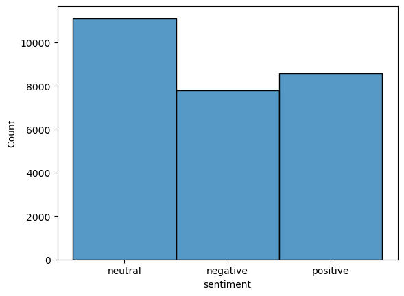

#
import pandas as pd
from sklearn.model_selection import train_test_split
from sklearn.linear_model import LogisticRegression
import sklearn
import numpy as npConfusion Matrix and Sentiment Analysis
Confusion Matrix and Sentiment Analysis
Lending Club Dataset
The following code processes the Lending Club Dataset from https://www.kaggle.com/datasets/mariiagusarova/preprocessed-lending-club-dataset-v2.
Run and comment the following instructions (fix them if needed). Inspect he dataframe?
#
loan = pd.read_csv('loans.csv', low_memory=True)loan.head(2)| loan_amnt | term | sub_grade | emp_length | annual_inc | loan_status | dti | mths_since_recent_inq | revol_util | num_op_rev_tl | ... | addr_state__SD | addr_state__TN | addr_state__TX | addr_state__UT | addr_state__VA | addr_state__VT | addr_state__WA | addr_state__WI | addr_state__WV | addr_state__WY | |
|---|---|---|---|---|---|---|---|---|---|---|---|---|---|---|---|---|---|---|---|---|---|
| 0 | 3600.0 | 1.0 | 24.0 | 10.0 | 55000.0 | 0.0 | 5.91 | 4.0 | 29.7 | 4.0 | ... | 0 | 0 | 0 | 0 | 0 | 0 | 0 | 0 | 0 | 0 |
| 1 | 20000.0 | 2.0 | 14.0 | 10.0 | 63000.0 | 0.0 | 10.78 | 10.0 | 56.2 | 4.0 | ... | 0 | 0 | 0 | 0 | 0 | 0 | 0 | 0 | 0 | 0 |
2 rows × 66 columns
loan.describe()| loan_amnt | term | sub_grade | emp_length | annual_inc | loan_status | dti | mths_since_recent_inq | revol_util | num_op_rev_tl | ... | addr_state__SD | addr_state__TN | addr_state__TX | addr_state__UT | addr_state__VA | addr_state__VT | addr_state__WA | addr_state__WI | addr_state__WV | addr_state__WY | |
|---|---|---|---|---|---|---|---|---|---|---|---|---|---|---|---|---|---|---|---|---|---|
| count | 848454.000000 | 848454.000000 | 848454.000000 | 848454.000000 | 848454.000000 | 848454.000000 | 848454.000000 | 848454.000000 | 848454.000000 | 848454.000000 | ... | 848454.000000 | 848454.000000 | 848454.000000 | 848454.000000 | 848454.000000 | 848454.000000 | 848454.000000 | 848454.000000 | 848454.000000 | 848454.000000 |
| mean | 14685.697457 | 1.268249 | 21.268733 | 6.145857 | 72400.496752 | 0.207527 | 18.575478 | 6.705665 | 52.912851 | 8.344402 | ... | 0.002113 | 0.015782 | 0.085755 | 0.007478 | 0.027221 | 0.002114 | 0.022196 | 0.013875 | 0.003502 | 0.002349 |
| std | 8280.771514 | 0.443048 | 12.763837 | 3.662421 | 25589.248556 | 0.405536 | 8.199811 | 5.820888 | 23.374794 | 4.340655 | ... | 0.045922 | 0.124630 | 0.280002 | 0.086153 | 0.162728 | 0.045934 | 0.147320 | 0.116971 | 0.059071 | 0.048409 |
| min | 1000.000000 | 1.000000 | 1.000000 | 0.000000 | 35000.990000 | 0.000000 | -1.000000 | 0.000000 | 0.000000 | 0.000000 | ... | 0.000000 | 0.000000 | 0.000000 | 0.000000 | 0.000000 | 0.000000 | 0.000000 | 0.000000 | 0.000000 | 0.000000 |
| 25% | 8000.000000 | 1.000000 | 12.000000 | 3.000000 | 51500.000000 | 0.000000 | 12.510000 | 2.000000 | 35.700000 | 5.000000 | ... | 0.000000 | 0.000000 | 0.000000 | 0.000000 | 0.000000 | 0.000000 | 0.000000 | 0.000000 | 0.000000 | 0.000000 |
| 50% | 13000.000000 | 1.000000 | 21.000000 | 7.000000 | 67600.000000 | 0.000000 | 18.130000 | 5.000000 | 53.200000 | 8.000000 | ... | 0.000000 | 0.000000 | 0.000000 | 0.000000 | 0.000000 | 0.000000 | 0.000000 | 0.000000 | 0.000000 | 0.000000 |
| 75% | 20000.000000 | 2.000000 | 31.000000 | 10.000000 | 90000.000000 | 0.000000 | 24.360000 | 10.000000 | 70.700000 | 11.000000 | ... | 0.000000 | 0.000000 | 0.000000 | 0.000000 | 0.000000 | 0.000000 | 0.000000 | 0.000000 | 0.000000 | 0.000000 |
| max | 40000.000000 | 2.000000 | 65.000000 | 10.000000 | 144999.000000 | 1.000000 | 45.000000 | 25.000000 | 148.000000 | 35.000000 | ... | 1.000000 | 1.000000 | 1.000000 | 1.000000 | 1.000000 | 1.000000 | 1.000000 | 1.000000 | 1.000000 | 1.000000 |
8 rows × 66 columns
The dataset contains many information about borrowers from an unspecified instutitution. We can observe that categorical data (like add_state) has already been encoded using dummy variables for each value. As a result the number of regressors is fairly large (66). On the other hands, the number of observations is also very large.
Run and comment the following instructions (fix them if needed). What kind of modeling exercise is performed?
loan['loan_status'].value_counts()loan_status
0.0 672377
1.0 176077
Name: count, dtype: int64The objective here is to build a model to predict which loans will default (loan_status=1). It is a classification exercise. Since the number of regressors is fairly large it is natural to look for a machine learning approcah.
#
features = loan.columns.to_list()
features.remove('loan_status')#
df_train, df_test = train_test_split(loan, test_size=0.25, random_state=42)/home/pablo/.local/opt/micromamba/envs/escp/lib/python3.12/site-packages/sklearn/linear_model/_logistic.py:469: ConvergenceWarning: lbfgs failed to converge (status=1):
STOP: TOTAL NO. of ITERATIONS REACHED LIMIT.
Increase the number of iterations (max_iter) or scale the data as shown in:
https://scikit-learn.org/stable/modules/preprocessing.html
Please also refer to the documentation for alternative solver options:
https://scikit-learn.org/stable/modules/linear_model.html#logistic-regression
n_iter_i = _check_optimize_result(LogisticRegression()In a Jupyter environment, please rerun this cell to show the HTML representation or trust the notebook.
On GitHub, the HTML representation is unable to render, please try loading this page with nbviewer.org.
LogisticRegression()
#
clf = LogisticRegression()
clf.fit(df_train[features], df_train['loan_status'])#
y_pred = clf.predict(df_test[features])
print('Accuracy of logistic regression classifier on test set: {:.2f}'.format(logreg.score(df_test[features], df_test['loan_status'])))Accuracy of logistic regression classifier on test set: 0.79#
cal = sklearn.metrics.confusion_matrix(df_test['loan_status'], y_pred, labels=clf.classes_)
print(cal)[[165146 2918]
[ 41439 2611]]#
from sklearn.metrics import ConfusionMatrixDisplay
disp = ConfusionMatrixDisplay(confusion_matrix=cal, display_labels=clf.classes_)
disp.plot()
The database contains information about many clients.
For the confusion matrix that was just computed compute accuracy, precision, recall and f1 score (lookup the definitions if needed).
# copmute the different statistics (by hand or programmatically)Comment on the model validity.
The Dataset
We use the News Sentiment Dataset from Kaggle.
- Import Dataset as a pandas dataframe. Remove rows where
selected_textis not available.
# the following command checks the current working directory
# it should end with session_8
%pwd'/home/pablo/Teaching/escp/dbe/tutorials/session_8'import pandas
df = pandas.read_csv("Tweets.csv")df.head(5)| textID | text | selected_text | sentiment | |
|---|---|---|---|---|
| 0 | cb774db0d1 | I`d have responded, if I were going | I`d have responded, if I were going | neutral |
| 1 | 549e992a42 | Sooo SAD I will 🦈 miss you here in San Diego!!! | Sooo SAD | negative |
| 2 | 088c60f138 | my boss is bullying me... | bullying me | negative |
| 3 | 9642c003ef | what interview! leave me alone | leave me alone | negative |
| 4 | 358bd9e861 | Sons of ****, why couldn`t they put them on t... | Sons of ****, | negative |
# we can count the number of non available values for `text`
sum(df['selected_text'].isna())1df = df[df['selected_text'].notna()]# check it worked
sum(df['selected_text'].isna())0- Describe Dataset (text and graphs). What is the distribution of the various sentiment values?
df.describe()| textID | text | selected_text | sentiment | |
|---|---|---|---|---|
| count | 27480 | 27480 | 27480 | 27480 |
| unique | 27480 | 27480 | 22463 | 3 |
| top | cb774db0d1 | I`d have responded, if I were going | good | neutral |
| freq | 1 | 1 | 199 | 11117 |
There are 2780 tweets. Only the tweets, not any context information.
# information about the distrbution of sentiments
sentiments = df['sentiment']counts = sentiments.value_counts()
countssentiment
neutral 11117
positive 8582
negative 7781
Name: count, dtype: int64# we can convert in percentages...
counts / sum(counts) * 100 sentiment
neutral 40.454876
positive 31.229985
negative 28.315138
Name: count, dtype: float64# ... or use the normalize option
sentiments.value_counts(normalize=True)sentiment
neutral 0.404549
positive 0.312300
negative 0.283151
Name: proportion, dtype: float64The distribution of tweet sentiment is rather well balanced: majority of tweets are neutreal with about 30% positive and 30% negative tweets.
import seaborn as sns
sns.histplot(sentiments)
- Count the number of tweets mentionng
trump.
# this is a series where a line is True only if df['text'] contains "trump"
ind = df['text'].str.contains("trump", na=False) | df['text'].str.contains("Trump", na=False)
ind0 False
1 False
2 False
3 False
4 False
...
27476 False
27477 False
27478 False
27479 False
27480 False
Name: text, Length: 27480, dtype: bool# which tweets contain word "trump"
df[ind]| textID | text | selected_text | sentiment | |
|---|---|---|---|---|
| 1589 | 6c5505a37c | Enjoy! Family trumps everything | Enjoy! Family trumps everything | positive |
| 6235 | 234a562dd9 | LOL I love my MacBook too. Oh and my iMac. Ca... | love | positive |
| 14005 | 464eafe267 | How to get a $40 trumpet book - get caught in ... | caught | negative |
| 14615 | fc16472bdf | Sick kid trumps advance planning. Bummer | Sick | negative |
| 14671 | 3314e0f981 | Grrr, I can`t even practice Trumpet or vocals ... | neck hurt to | negative |
| 22230 | 2762b6624b | _fan Been busy trumping your cheese omlette wi... | _fan Been busy trumping your cheese omlette wi... | neutral |
# how many tweets contain word "trump"
sum(ind)6- Split Dataset into training, and test set.
import sklearn
from sklearn.model_selection import train_test_splitimport sklearn
# here the data set is very big, we can choose a relatively small test set
df_train, df_test = sklearn.model_selection.train_test_split(df, test_size=0.1)df| textID | text | selected_text | sentiment | |
|---|---|---|---|---|
| 0 | cb774db0d1 | I`d have responded, if I were going | I`d have responded, if I were going | neutral |
| 1 | 549e992a42 | Sooo SAD I will 🦈 miss you here in San Diego!!! | Sooo SAD | negative |
| 2 | 088c60f138 | my boss is bullying me... | bullying me | negative |
| 3 | 9642c003ef | what interview! leave me alone | leave me alone | negative |
| 4 | 358bd9e861 | Sons of ****, why couldn`t they put them on t... | Sons of ****, | negative |
| ... | ... | ... | ... | ... |
| 27476 | 4eac33d1c0 | wish we could come see u on Denver husband l... | d lost | negative |
| 27477 | 4f4c4fc327 | I`ve wondered about rake to. The client has ... | , don`t force | negative |
| 27478 | f67aae2310 | Yay good for both of you. Enjoy the break - y... | Yay good for both of you. | positive |
| 27479 | ed167662a5 | But it was worth it ****. | But it was worth it ****. | positive |
| 27480 | 6f7127d9d7 | All this flirting going on - The ATG smiles... | All this flirting going on - The ATG smiles. Y... | neutral |
27480 rows × 4 columns
sum((df['selected_text'].isna()))0df_train.shape(24732, 4)Classifying tweets
The goal is now to to build a tweet classifier to predict a tweet sentiment, without any human input.
- Extract features from the training dataset. What do you do with non-words / punctuation?
(hint: check the CountVectorizer function and the tutorial on sklearn webpage.)
from sklearn.feature_extraction.text import CountVectorizer
count_vect = CountVectorizer()X = count_vect.fit_transform(df_train['selected_text'])# X is a matrix of "features", each one corresponding to the counts of specific tokens
X.shape(24732, 16556)# the matrix is sparse: only non zero entries are stored
# check for the first entry
X[0,:]<1x16556 sparse matrix of type '<class 'numpy.int64'>'
with 17 stored elements in Compressed Sparse Row format>for e in X[0,:]: print(e) (0, 8148) 1
(0, 3282) 1
(0, 7626) 1
(0, 11111) 1
(0, 1075) 1
(0, 12974) 1
(0, 2795) 1
(0, 8854) 1
(0, 15797) 1
(0, 15953) 1
(0, 7856) 1
(0, 13398) 1
(0, 3770) 1
(0, 8347) 1
(0, 1650) 1
(0, 9880) 1
(0, 4783) 1# we can actually print the processed tokens
print(count_vect.vocabulary_)
invert_voc = {v:k for k,v in count_vect.vocabulary_.items()}{'just': 8148, 'chillin': 3282, 'in': 7626, 'pjs': 11111, 'after': 1075, 'short': 12974, 'but': 2795, 'long': 8854, 'week': 15797, 'why': 15953, 'is': 7856, 'someone': 13398, 'continually': 3770, 'knocking': 8347, 'at': 1650, 'my': 9880, 'door': 4783, 'ouch': 10572, 'back': 1831, 'sick': 13043, 'http': 7406, 'twitpic': 15084, 'com': 3576, '4w6lf': 340, 'bbq': 2018, 'time': 14628, 'again': 1088, 'baby': 1819, 'alex': 1181, 'miss': 9552, 'you': 16416, 'ily': 7579, 'good': 6503, 'night': 10117, 'ah': 1114, 'not': 10232, 'doing': 4747, 'cbeebies': 3069, 'epg': 5277, 'by': 2824, 'any': 1414, 'chance': 3147, 'are': 1525, 'hehe': 7090, 'need': 9999, 'pinkyponk': 11077, 'crash': 3935, 'warnings': 15690, 'your': 16424, 'journey': 8094, 'home': 7271, 'hope': 7317, 'fl': 5840, 'omg': 10429, 'disco': 4625, 'packed': 10674, 'allergies': 1203, 'must': 9860, 'be': 2029, 'sleeping': 13210, 'walking': 15651, 'work': 16129, 'wasn': 15704, 'nice': 10097, 'cof': 3526, 'hate': 6968, 'electronics': 5135, 'making': 9118, 'an': 1322, 'imovie': 7601, 'of': 10356, 'college': 3563, 'im': 7581, 'school': 12625, 'right': 12239, 'now': 10260, 'fav': 5641, 'everyone': 5389, 'here': 7135, 'we': 15759, 're': 11822, 'off': 10360, 'to': 14684, 'party': 10788, 'have': 6982, 'myself': 9891, 'barely': 1943, 'hrs': 7395, 'sleep': 13205, 'and': 1326, 'the': 14461, 'lord': 8900, 'blessed': 2322, 'me': 9301, 'with': 16041, 'what': 15869, 'feels': 5685, 'like': 8688, 'it': 7873, 'came': 2899, 'sore': 13448, 'throat': 14559, 'pumpin': 11607, 'out': 10580, 'this': 14517, 'paper': 10744, 'gift': 6375, 'love': 8932, 'that': 14453, 'quiet': 11706, 'office': 10371, 'haha': 6812, 'totally': 14794, 'more': 9702, 'efficient': 5103, 'pic': 11015, 'donnie': 4770, 'one': 10446, 'siouxsinner': 13124, 'took': 14751, 'last': 8503, 'launch': 8528, 'word': 16125, 'has': 6960, 'he': 7015, 'got': 6557, 'solo': 13383, 'album': 1172, 'comin': 3598, 'too': 14748, 'yeaaa': 16321, 'so': 13340, 'classy': 3414, 'economy': 5051, 'depressing': 4434, 'fave': 5643, 'tired': 14655, 'over': 10608, 'worked': 16132, 'lol': 8832, 'wish': 16030, 'had': 6802, 'book': 2435, 'dirty': 4605, 'sad': 12464, 'sorry': 13458, 'offline': 10377, 'for': 5956, 'll': 8777, 'tweet': 15039, 'later': 8510, 'jeff': 7989, 'will': 15982, 'hard': 6932, 'from': 6118, '42nd': 292, 'pats': 10827, 'philly': 10977, 'am': 1263, 'mmm': 9592, 'cheesesteak': 3232, 'boyfriend': 2531, 'vacation': 15414, 'happy': 6925, 'mother': 9738, 'day': 4263, 'know': 8350, 'maybe': 9274, 'then': 14480, 'forgotten': 5980, 'about': 904, 'christmas': 3338, 'july': 8128, 'homey': 7286, 'missed': 9554, 'da': 4153, 'bus': 2781, 'writing': 16194, 'some': 13392, 'mild': 9475, 'wild': 15979, 'articles': 1583, 'want': 15667, 'go': 6467, 'peru': 10944, 'summer': 13998, 'ahhhhhhh': 1132, 'hopefully': 7322, 'yesyesyes': 16375, 'there': 14488, 'hey': 7151, 'guys': 6776, 'should': 12990, 'invite': 7812, 'moody': 9685, 'only': 10452, 'friend': 6096, 'these': 14494, 'does': 4735, 'hurt': 7462, 'much': 9811, 'would': 16167, 'ride': 12230, 'superman': 14047, 'cute': 4113, 'horrible': 7337, 'prefer': 11390, '80': 483, 'singstar': 13113, 'all': 1199, 'words': 16127, 'watched': 15716, 'final': 5767, 'break': 2571, 'prison': 11459, 'episode': 5281, 'was': 15698, 'great': 6641, 'farewell': 5606, 'dearly': 4302, 'follow': 5920, 'friday': 6091, 'following': 5928, 'people': 10900, 'followers': 5924, 'woot': 16121, 'followfriday': 5925, 'feeling': 5683, 'really': 11856, 'cool': 3809, 'oh': 10383, 'forgot': 5979, 'ferry': 5703, 'turns': 15015, 'around': 1558, 'before': 2098, 'going': 6488, 'sitting': 13141, 'sun': 14009, 'other': 10565, 'side': 13055, 'deck': 4327, 'closed': 3460, 'how': 7381, 'dare': 4219, 'apologize': 1458, 'uk': 15189, 'being': 2112, 'gone': 6500, 'while': 15905, 'don': 4762, 'america': 1295, 'never': 10062, 'touring': 14806, 'awesome': 1763, 'lmao': 8782, 'ha': 6787, 'bummed': 2748, 'aw': 1743, 'nick': 10104, 'his': 7208, 'heart': 7050, 'broken': 2641, 'poor': 11272, 'pleasant': 11159, 'surprise': 14083, 'still': 13770, 'working': 16135, 'on': 10444, 'music': 9850, 'grades': 6592, 'outside': 10593, 'behind': 2110, 'big': 2211, 'gray': 6633, 'cloud': 3473, 'thanks': 14440, 'thank': 14434, 'fkn': 5839, 'ugly': 15181, 'matches': 9244, 'mood': 9682, 'unfortunatly': 15256, 'punchy': 11611, 'due': 4939, 'two': 15125, 'early': 5005, 'morning': 9712, 'pager': 10685, 'events': 5371, 'ashleighhh': 1604, 'get': 6348, 'newww': 10080, 'cd': 3074, 'funky': 6170, 'reel': 11949, 'awful': 1776, 'pretty': 11426, 'icky': 7514, 'getting': 6353, 'ready': 11835, 'think': 14509, 'catching': 3039, 'cold': 3543, 'yay': 16305, 'gotta': 6564, 'pull': 11600, 'hour': 7372, 'shift': 12912, 'holla': 7257, 'ya': 16273, 'sometime': 13404, 'tomorrow': 14729, 'peace': 10863, 'new': 10064, 'born': 2487, 'single': 13110, 'our': 10577, 'little': 8758, 'puppy': 11620, 'basset': 1978, 'hound': 7370, 'actress': 983, 'cryin': 4040, 'could': 3870, 'bed': 2080, 'nine': 10137, 'once': 10445, 'make': 9112, 'sleepdeprived': 13206, 'luck': 8980, 'half': 6849, 'term': 14391, 'isn': 7865, 'enough': 5244, 'bless': 2321, 'her': 7131, 'dropped': 4896, 'lei': 8607, 'cemetary': 3100, 'least': 8579, 'wont': 16098, 'hav': 6980, 'put': 11640, 'up': 15314, 'wiv': 16055, 'him': 7197, 'no': 10161, 'problemo': 11474, 'poooooooor': 11267, 'sheeeep': 12883, '20': 128, 'john': 8058, 'drop': 4894, 'something': 13402, 'man': 9137, 'can': 2911, 'hang': 6898, 'instead': 7741, 'macaroni': 9052, 'cheese': 3229, 'please': 11161, 'cubbies': 4060, 'even': 5365, '500': 366, 'else': 5159, 'matter': 9260, 'beat': 2046, 'dem': 4398, 'bums': 2753, 'chicago': 3259, 'baseball': 1962, 'ore': 10533, 'play': 11143, 'audition': 1697, 'anna': 1362, 'dont': 4773, 'into': 7789, 'feel': 5680, 'bad': 1850, 'kids': 8280, 'disappointment': 4617, 'roof': 12327, 'decal': 4313, 'saving': 12576, 'gaahhhh': 6218, 'rock': 12293, 'honored': 7300, 'le': 8559, 'mont': 9669, 'they': 14496, 'rich': 12217, 'passed': 10799, 'pairung': 10702, 'as': 1594, 'well': 15833, '10': 22, 'minutes': 9529, 'class': 3408, 'its': 7888, 'kinda': 8296, 'cause': 3053, 'fun': 6156, 'adore': 1033, 'went': 15841, 'vending': 15453, 'maching': 9060, 'bugles': 2721, 'perhaps': 10924, 'sign': 13068, 'snack': 13302, 'anyway': 1429, 'probably': 11471, 'same': 12511, 'thing': 14504, 'wrong': 16199, 'paul': 10831, 'scheuring': 12621, 'series': 12784, 'finale': 5768, 'sucked': 13945, 'bank': 1922, 'teller': 14358, 'definitely': 4361, 'hitting': 7219, 'interested': 7768, 'dear': 4301, 'dance': 4197, 'tonight': 14738, 'look': 8868, 'quick': 11703, 'post': 11321, 'dashboard': 4238, 'pleasure': 11171, 'apparently': 1461, 'tv': 15024, 'fixed': 5831, 'plus': 11196, 'refunded': 11964, 'cost': 3858, 'buy': 2811, 'downside': 4822, 'tomato': 14718, 'soup': 13479, 'tastes': 14278, 'red': 11925, 'peppers': 10907, 'stressed': 13848, 'pugsly': 11595, 'missing': 9559, 'invisible': 7810, 'car': 2955, 'helps': 7123, 'boost': 2457, 'recycling': 11923, 'honest': 7290, 'gonna': 6501, 'ats': 1665, 'charmingly': 3192, 'where': 15896, 'did': 4532, 'leave': 8582, 'citeh': 3382, 'jersey': 8007, 'connection': 3731, 'gw': 6777, 'dutch': 4969, 'might': 9463, 'do': 4719, 'art': 1578, 'children': 3271, 'promised': 11523, 'birthday': 2249, 'brekkie': 2590, 'problem': 11472, 'bugger': 2716, 'food': 5940, 'house': 7374, 'stuff': 13893, 'precariously': 11382, 'close': 3459, 'ricotta': 12225, 'didn': 4535, 'help': 7118, 'fx': 6205, 'windows': 16002, '1000x': 26, 'better': 2170, 'than': 14433, 'vista': 15551, 'far': 5604, 'win': 15995, 'reborn': 11872, 'perfect': 10913, 'waking': 15642, 'star': 13685, 'wars': 15696, 'end': 5208, 'title': 14667, 'song': 13411, 'sorta': 13461, 'also': 1246, 'creepy': 3977, 'fine': 5778, 'shrug': 13018, 'send': 12747, 'loves': 8951, 'revenge': 12183, 'possibility': 11318, 'come': 3583, 'friends': 6100, 'takes': 14222, 'error': 5312, 'page': 10683, 'yall': 16291, 'ni99as': 10091, 'loopjazz': 8893, 'yess': 16364, 'ez': 5523, 'most': 9735, 'bejï': 2114, '½n': 16540, 'taylor': 14297, 'swift': 14148, 'joe': 8053, 'jonas': 8073, 'looked': 8870, 'together': 14704, 'broke': 2640, 'able': 902, 'recovering': 11919, 'italian': 7875, 'cruise': 4022, 'mediterenean': 9332, 'finished': 5787, 'weeding': 15791, 'flower': 5884, 'weeds': 15792, 'grow': 6699, 'legitimate': 8604, 'plants': 11136, 'rubbish': 12394, 'eh': 5113, 'sure': 14074, 'daw': 4258, 'guesting': 6741, 'ni': 10090, 'cha': 3123, 'monday': 9652, 'pendulum': 10891, 'goodbyes': 6508, 'suck': 13942, 'shut': 13027, 'plz': 11199, 'toy': 14822, 'story': 13810, 'jb': 7976, '3d': 268, 'movie': 9766, '2moro': 206, 'aaaand': 865, 'funny': 6180, 'actually': 987, 'were': 15843, 'decisive': 4326, 'nah': 9915, 'next': 10081, 'honey': 7293, 'ma': 9038, 'fault': 5639, 'confusin': 3711, 'nobody': 10167, 'write': 16190, 'wrk': 16196, 'gtta': 6729, 'tonite': 14742, 'mobile': 9605, 'advert': 1050, 'trafalger': 14845, 'square': 13631, 'looks': 8874, 'lot': 8911, 'except': 5426, 'if': 7539, 'load': 8794, 'pigeons': 11041, 'best': 2156, 'bring': 2616, 'show': 13002, 'denial': 4408, 'very': 15475, 'powerful': 11355, 'thinking': 14512, 'having': 6989, 'lunch': 8999, 'soon': 13422, 'quite': 11713, 'such': 13941, 'shame': 12848, 've': 15441, 'coz': 3906, 'different': 4550, 'aren': 1527, 'left': 8595, 'knee': 8338, 'somehow': 13397, 'hurts': 7468, 'walk': 15648, 'supposed': 14068, 'sometimes': 13405, 'busy': 2793, 'recognize': 11895, 'always': 1259, 'family': 5580, 'god': 6473, 'vegas': 15445, 'without': 16049, '_war_mt': 834, 'longer': 8855, 'blue': 2369, 'fantastic': 5600, 'likes': 8691, 'face': 5535, 'battery': 1996, 'die': 4539, 'daddy': 4165, 'see': 12716, 'driving': 4890, 'insane': 7714, 'talk': 14232, 'hips': 7205, 'lovely': 8948, 'sunniest': 14026, 'ages': 1100, 'exams': 5419, 'yes': 16360, 'sir': 13126, 'ok': 10398, 'hungry': 7449, 'fat': 5628, 'aha': 1115, 'jake': 7938, 'thomas': 14530, 'precious': 11384, 'when': 15892, 'say': 12582, 'white': 15921, 'light': 8679, 'every': 5382, 'ghost': 6366, 'whisperer': 15915, 'failed': 5549, 'miserably': 9544, 'cuties': 4118, 'tried': 14921, 'ftp': 6139, 's3': 12451, 'use': 15365, 'fireftp': 5803, 'firefox': 5802, 'browser': 2659, 'addin': 1000, 'mention': 9387, 'support': 14062, 'their': 14471, 'site': 13135, 'though': 14540, 'meetings': 9346, 'afternoon': 1078, 'started': 13700, 'fill': 5756, 'golden': 6492, 'times': 14634, 'hmmm': 7227, 'skip': 13172, 'grocery': 6682, 'store': 13804, 'head': 7017, 'walmart': 15658, 'potentially': 11337, 'direct': 4595, 'message': 9403, 'hell': 7107, 'complaining': 3648, '27': 180, 'answer': 1389, 'ask': 1611, 'ew': 5409, 'tongue': 14735, 'kiss': 8314, 'waiting': 15633, 'front': 6119, 'dps': 4830, 'julian': 8125, 'take': 14217, 'test': 14407, 'loneliness': 8848, 'bah': 1865, 'fb': 5655, 'fan': 5584, '7500': 469, 'diiinner': 4568, 'sooo': 13426, 'thunderrrr': 14580, 'cuddling': 4068, 'blanky': 2300, 'during': 4965, 'storm': 13807, 'whats': 15876, 'voice': 15569, 'shot': 12987, 'luv': 9016, 'true': 14954, 'forward': 6005, 'ugh': 15172, 'goes': 6485, 'life': 8670, 'cardboard': 2965, 'box': 2524, 'ch': 3122, 'appreciat': 1487, 'anything': 1427, 'gd': 6298, 'excited': 5434, 'made': 9068, '100x': 28, 'chocolates': 3307, 'stuck': 13882, 'yum': 16458, 'lucky': 8986, 'swimming': 14151, 'tanning': 14253, 'heaven': 7065, 'playing': 11151, 'infamous': 7676, 'hear': 7045, 'unfortunately': 15254, 'yeahhh': 16327, 'wasnt': 15705, 'thereeeeeeeeeee': 14490, 'woooooo': 16114, 'seeing': 12718, 'yo': 16395, 'reply': 12084, 'booooo': 2451, 'us': 15361, 'lmfaoooo': 8788, 'boring': 2485, 'account': 943, 'local': 8804, 'comic': 3596, 'ran': 11775, '4k': 328, 'gosh': 6552, 'happend': 6914, 'yesterday': 16373, 'license': 8659, 'hated': 6969, 'sounds': 13477, 'scared': 12597, 'cannot': 2933, 'wait': 15630, 'glad': 6428, 'copy': 3830, 'shipped': 12930, 'shows': 13012, 'today': 14693, 'tune': 15000, 'plans': 11129, 'cancelled': 2924, 'hmv': 7233, 'raises': 11767, 'hand': 6881, 'caffeine': 2850, 'although': 1256, 'caveat': 3060, 'normally': 10218, 'read': 11831, 'non': 10187, 'fiction': 5730, 'recent': 11880, 'years': 16336, 'novels': 10257, 'woke': 16076, 'wanna': 15664, 'stay': 13726, 'walked': 15649, 'room': 12329, 'bug': 2714, 'flew': 5860, 'eye': 5518, 'change': 3152, 'name': 9931, 'under': 15224, 'settings': 12805, 'pain': 10689, 'sky': 13181, 'until': 15309, 'awww': 1787, 'wanted': 15669, 'greg': 6661, 'watching': 15719, 'milk': 9482, 'decent': 4318, 'australian': 1715, 'find': 5774, 'trust': 14960, 'american': 1296, 'nerrrvous': 10040, 'yummy': 16464, 'thx': 14586, 'accidents': 937, 'boo': 2428, 'soggy': 13371, 'wished': 16031, 'cockermouth': 3514, '45': 296, 'jesus': 8014, 'christ': 3334, 'sunny': 14028, 'muuch': 9871, 'shall': 12844, 'web': 15772, 'won': 16087, 'let': 8633, 'reads': 11834, 'tweets': 15054, 'confident': 3700, 'she': 12878, 'pretenders': 11422, 'listening': 8746, 'favourite': 5650, 'year': 16333, 'weather': 15767, 'widget': 15964, 'imac': 7583, 'iphone': 7828, 'predict': 11386, 'rainy': 11764, 'season': 12697, 'comes': 3589, 'tuna': 14998, 'noodles': 10194, 'smashed': 13269, 'potato': 11334, 'cakes': 2861, 'winksy': 16014, 'says': 12587, 'dissappointed': 4671, 'past': 10807, 'few': 5716, 'days': 4267, 'st': 13650, 'killing': 8289, 'jean': 7984, 'possible': 11319, 'case': 3015, 'h1n1': 6785, 'ft': 6138, 'knox': 8357, 'ky': 8406, 'tiny': 14644, 'cc': 3070, 'gnyq7': 6466, 'note': 10234, 'info': 7683, 'purposes': 11630, 'panic': 10733, 'jï': 8156, 'bday': 2028, 'beautiful': 2059, 'aunt': 1704, 's2': 12450, 'mess': 9402, 'sensible': 12759, 'airport': 1155, 'wdw': 15758, 'trip': 14925, 'worse': 16158, 'fingered': 5784, 'coke': 3539, 'machine': 9057, 'drinking': 4880, 'diet': 4544, 'pepsi': 10908, 'dr': 4831, 'pepper': 10905, 'used': 15366, 'correction': 3849, 'legal': 8597, 'wooowww': 16116, 'full': 6152, 'idea': 7518, 'found': 6015, 'tinyurl': 14647, 'qlrcec': 11665, 'frenchies': 6076, 'set': 12802, 'precedent': 11383, 'loading': 8797, 'bought': 2507, 'plastic': 11138, 'personal': 10938, 'wine': 16007, 'bottles': 2504, 'jewel': 8018, 'rooftop': 12328, 'boozin': 2467, 'been': 2093, 'beating': 2052, 'irregularly': 7852, 'ever': 5373, 'since': 13103, 'explode': 5484, 'or': 10521, 'implode': 7606, 'yeah': 16325, 'done': 4766, 'several': 12815, 'dumerils': 4948, 'boa': 2385, 'prob': 11467, 'wonder': 16088, 'hognose': 7244, 'needs': 10007, 'bigger': 2212, 'blah': 2287, 'yea': 16319, 'max': 9265, 'trivun': 14936, 'poked': 11227, 'undertanding': 15238, 'none': 10188, 'watch': 15715, 'point': 11219, 'hd': 7014, 'stace': 13653, 'wants': 15672, 'hack': 6797, 'directions': 4598, 'multiple': 9827, 'social': 13351, 'net': 10050, 'sites': 13137, 'add': 992, 'chose': 3328, 'mu': 9804, 'hilarious': 7191, 'mine': 9503, 'gross': 6687, '_vegetable': 829, 'mean': 9306, 'yu': 16451, 'doctor': 4726, 'tuesday': 14990, 'yup': 16467, 'everything': 5395, 'loved': 8935, 'mom': 9636, 'rul': 12407, 'amazing': 1281, 'marks': 9201, 'roommate': 12333, 'era': 5293, 'wontons': 16099, 'sent': 12761, 'abrams': 906, 'surrounded': 14089, 'meee': 9338, 'tooooooo': 14758, 'bored': 2476, 'shinning': 12925, 'ate': 1652, 'chocolate': 3306, 'honour': 7301, 'cheering': 3224, 'talks': 14238, '_dunk': 626, 'partyends': 10789, 'blog': 2342, '1654': 92, 'release': 12019, 'stubb': 13879, 'dude': 4937, 'hax0r': 6999, 'cut': 4111, 'pro': 11466, 'tell': 14357, 'stable': 13652, 'checked': 3212, 'hubster': 7415, 'pass': 10798, 'lazy': 8552, 'caravan': 2959, 'running': 12424, 'clever': 3436, 'seems': 12724, 'call': 2877, 'ur': 15347, 'shattered': 12871, 'tre': 14892, 'hood': 7303, 'claim': 3397, 'thats': 14455, 'atl': 1657, 'theme': 14476, 'which': 15904, 'aint': 1149, 'youtube': 16437, 'vid': 15500, 'posted': 11324, 'lay': 8545, 'swineflu': 14154, 'illegal': 7565, 'law': 8538, 'abiding': 899, 'citizens': 3385, 'didnt': 4536, 'cry': 4038, 'er': 5292, 'tummy': 14995, 'ache': 956, 'taste': 14276, 'enjoy': 5231, '_gaba': 648, 'evrytime': 5408, 'listen': 8742, 'tat': 14280, 'plce': 11157, 'reminded': 12044, 'mojojojo': 9629, 'dexter': 4502, 'lab': 8416, 'stopped': 13800, 'coffee': 3529, 'maryland': 9223, 'rest': 12137, 'area': 1526, 'five': 5828, 'entire': 5260, 'middle': 9455, 'schools': 12627, 'heck': 7071, 'audrey': 1700, 'bestie': 2160, 'loving': 8958, 'may': 9272, 'holiday': 7254, 'foot': 5948, 'gym': 6782, 'study': 13889, 'ooooo': 10478, 'using': 15378, 'version': 15472, 'twidget': 15069, 'mac': 9049, 'heading': 7027, 'downtown': 4825, 'drinks': 4881, 'dancing': 4202, 'goin': 6487, 'brothers': 2655, 'live': 8760, 'rocking': 12297, 'sneezing': 13317, 'frequently': 6081, 'manager': 9143, 'switched': 14159, 'schedule': 12617, 'closing': 3467, 'pre': 11381, 'twitter': 15089, 'formal': 5983, 'invitation': 7811, 'speak': 13525, 'edu2': 5075, 'yaoo': 16297, 'sonnnn': 13416, 'andy': 1335, 'fonzie': 5938, 'gomez': 6497, 'sry': 13643, 'figure': 5743, 'works': 16141, 'finally': 5769, 'setting': 12804, 'switch': 14158, 'care': 2970, 'fans': 5595, 'hero': 7142, 'rocks': 12298, 'socks': 13358, 'cartoons': 3010, 'haven': 6985, 'eating': 5036, 'breakfast': 2572, 'programs': 11510, 'changed': 3153, 'viewing': 15508, 'evening': 5366, 'jay': 7969, 'way': 15746, 'cardinal': 2968, 'fallen': 5568, 'nest': 10049, 'attacked': 1669, 'bird': 2241, 'dog': 4739, 'leaving': 8586, 'everyday': 5386, 'fact': 5542, 'city': 3386, 'earlier': 5002, 'mondays': 9653, 'sleepy': 13216, 'awake': 1746, 'tweetdeck': 15043, 'keeps': 8218, 'crashing': 3938, 'nj': 10151, 'avoiding': 1742, 'nascar': 9952, 'ima': 7582, 'habits': 6796, 'incredibly': 7654, 'sweeeet': 14133, 'brake': 2552, 'nothing': 10240, 'stress': 13846, 'dream': 4858, 'loooong': 8881, 'weekend': 15799, 'inlawing': 7697, 'movies': 9768, 'trek': 14903, 'flick': 5861, 'top': 14763, 'molar': 9630, 'extracted': 5511, 'swollen': 14161, 'numb': 10281, 'toothache': 14761, 'sinus': 13123, 'suppose': 14067, '4th': 333, 'waited': 15631, 'wind': 15998, 'blowing': 2362, 'through': 14563, 'tumbleweed': 14993, 'old': 10408, 'crackerack': 3919, 'couldnt': 3872, 'southend': 13486, '2nd': 211, 'tickets': 14597, 'ill': 7564, 'tour': 14804, 'bg': 2191, 'emo': 5186, 'jesse': 8009, 'mccartney': 9286, 'tends': 14374, 'internet': 7777, 'sweetie': 14142, 'aliens': 1194, 'boobie': 2430, 'craig': 3922, 'rise': 12256, '11': 43, 'bedtime': 2085, 'grown': 6702, 'ups': 15335, 'because': 2071, 'couldn': 3871, 'access': 930, 'properly': 11535, 'shiny': 12926, 'studying': 13891, 'computing': 3668, 'feck': 5669, 'changing': 3157, 'plant': 11130, 'science': 12631, 'confused': 3710, 'girl': 6399, 'sit': 13134, 'double': 4798, 'decker': 4328, 'neck': 9995, 'down': 4809, 'ppl': 11362, 'who': 15927, 'level': 8642, 'above': 905, 'imagine': 7588, '30': 223, 'okay': 10401, 'sane': 12535, 'population': 11288, 'world': 16145, 'strawberry': 13835, 'margaritas': 9181, 'baked': 1878, 'stuffed': 13894, 'shrimp': 13015, 'effects': 5101, 'worth': 16161, 'wear': 15763, 'jacket': 7924, 'cos': 3855, 'notice': 10242, 'mark': 9193, 'shirt': 12934, 'drunk': 4912, 'specifically': 13534, 'i36': 7494, 'tinypic': 14645, 'mwz6uo': 9878, 'jpg': 8103, 'outfit': 10586, 'q63obq': 11655, 'ahhh': 1127, 'soooo': 13427, 'kill': 8283, 'gilbert': 6386, 'sullivan': 13986, 'cheer': 3222, 'th': 14426, 'serenading': 12779, 'expensive': 5471, 'miserable': 9543, 'smile': 13279, 'fed': 5671, 'happily': 6921, 'stupid': 13904, 'mane': 9148, 'um': 15196, 'gave': 6291, 'nope': 10212, 'intended': 7759, 'start': 13699, 'habit': 6795, 'fast': 5624, 'ends': 5216, 'meet': 9343, 'sports': 13603, 'three': 14551, 'legged': 8601, 'race': 11732, 'mr': 9787, 'pettigrew': 10952, 'said': 12488, 'aloud': 1232, 'grandpa': 6612, 'telling': 14361, 'human': 7432, 'bodies': 2399, 'med': 9320, 'hotter': 7365, 'wearing': 15765, 'shorts': 12984, 'snl': 13327, 'justin': 8151, 'timberlake': 14627, 'dreamt': 4864, 'committed': 3616, 'suicide': 13977, 'drip': 4882, 'stand': 13675, 'freaked': 6047, 'testing': 14410, 'dawn': 4261, 'carlingford': 2985, 'lough': 8919, 'place': 11113, 'involves': 7819, 'tho': 14528, 'picture': 11027, 'sucks': 13951, 'lacking': 8426, 'trousers': 14949, 'thunder': 14579, 'thighs': 14502, 'daughtry': 4251, 'upload': 15326, 'pulled': 11602, 'muscle': 9843, 'twitterbugs': 15093, 'loooooooooong': 8884, 'lie': 8663, 'spent': 13558, 'wife': 15969, 'tangled': 14248, 'wheels': 15891, 'daughter': 4249, 'hit': 7213, 'dislocation': 4657, 'fracture': 6024, 'resulted': 12151, 'failure': 5554, 'phone': 10990, 'catch': 3037, 'aww': 1785, 'cant': 2935, 'till': 14625, 'sydney': 14167, 'soooooo': 13429, 'sleeeeepy': 13203, 'already': 1237, 'wow': 16170, 'hurtling': 7467, 'assembling': 1623, 'figuring': 5745, 'alarm': 1168, 'loud': 8916, 'blew': 2324, 'ear': 4998, 'drum': 4907, 'josette': 8083, 'across': 970, 'pond': 11251, 'nowhere': 10262, 'exciting': 5438, 'goddamnit': 6478, 'row': 12371, 'run': 12416, 'corrupted': 3853, 'singing': 13109, 'away': 1753, 'fml': 5900, 'dad': 4161, 'moneyz': 9656, 'gets': 6351, 'finish': 5786, 'welcome': 15829, 'easy': 5030, 'offer': 10365, 'lost': 8910, 'both': 2497, 'hates': 6974, 'sound': 13473, 'played': 11147, 'shaw': 12874, 'computer': 3666, 'bum': 2745, 'ultimate': 15192, 'exicted': 5457, 'radiator': 11743, 'boiled': 2407, '000': 1, 'depressed': 4431, 'boarding': 2389, 'uss': 15380, 'enterprise': 5251, 'warp': 15691, 'speed': 13541, 'ahead': 1124, '4x4s': 364, 'shizz': 12944, '2gether': 199, 'yr': 16445, 'realized': 11850, 'shout': 12998, 'player': 11148, 'hahahah': 6818, 'cooperating': 3822, 'mad': 9063, 'flash': 5850, 'awoke': 1783, '12': 50, 'crazy': 3952, 'nervous': 10044, 'entering': 5250, 'pogue': 11217, 'according': 942, 'yet': 16376, 'seem': 12721, 'tearrrrrrrr': 14315, 'serendipity': 12780, 'hours': 7373, 'lets': 8636, 'happier': 6919, 'sadly': 12476, 'fever': 5714, 'lemonade': 8615, 'hairspray': 6845, 'nutritious': 10293, 'delayed': 4377, 'malibu': 9127, 'doesn': 4736, 'text': 14416, 'silly': 13084, 'ring': 12243, 'hugs': 7426, 'sacramento': 12460, 'continue': 3771, 'server': 12792, '2008': 135, 'r2': 11726, 'unleashed': 15282, 'sigh': 13061, 'window': 16001, 'ladies': 8433, 'suffer': 13963, 'scenario': 12607, 'men': 9375, 'experience': 5473, 'felt': 5694, 'pee': 10875, 'cried': 3986, 'jonathon': 8076, 'ross': 12351, 'audience': 1691, 'anthem': 1397, 'high': 7175, 'dry': 4914, 'blip': 2330, 'fm': 5899, '79fcr': 473, 'actual': 986, 'heartbreak': 7052, 'purple': 11627, 'converse': 3790, 'game': 6244, 'sorrry': 13456, 'jackass': 7922, 'congrats': 3719, 'drink': 4876, 'hahaha': 6817, 'pleased': 11162, 'wit': 16038, 'tha': 14427, 'turnout': 15014, 'common': 3618, 'remember': 12040, 'nic': 10095, 'wouldn': 16169, 'online': 10451, 'clearly': 3432, 'kept': 8233, 'sunburned': 14015, 'volcano': 15572, 'nd': 9984, 'nyt': 10312, 'sux': 14111, 'burned': 2766, 'bit': 2255, 'news': 10074, 'truth': 14962, 'hiding': 7173, 'eyes': 5521, 'paramore': 10756, 'decode': 4332, 'butterfly': 2802, 'dead': 4289, 'late': 8508, 'congratulations': 3724, 'leah': 8568, 'mothers': 9740, 'duuuude': 4972, 'tim': 14626, 'vs': 15594, 'animated': 1354, 'either': 5123, 'adult': 1041, 'swim': 14149, 'g4': 6212, 'neither': 10029, 'suffering': 13965, 'ish': 7858, 'loveee': 8937, 'breakin': 2575, 'laughed': 8524, 'update': 15318, 'crying': 4041, 'spineless': 13573, 'makes': 9115, 'downloaded': 4815, 'parnoid': 10774, 'dnt': 4717, 'cuddle': 4067, 'visiting': 15546, 'friendster': 6102, 'facebook': 5537, 'poorly': 11274, 'ree': 11942, 'heally': 7039, 'hoping': 7329, 'rain': 11756, 'stops': 13802, 'sunburnt': 14017, 'arms': 1551, 'itching': 7879, 'hello': 7112, 'worry': 16156, 'soooooooooo': 13434, 'palm': 10715, 'niggas': 10112, 'talkin': 14236, 'bout': 2516, 'bm': 2381, '745': 467, 'poop': 11269, 'nite': 10148, 'weird': 15817, 'synced': 14178, 'research': 12122, 'guilt': 6747, 'yah': 16287, 'ordered': 10530, 'asus': 1643, 'eee': 5082, 'pc': 10854, 'gon': 6498, 'ignore': 7546, 'txt': 15134, 'unless': 15283, '6th': 458, 'street': 13840, 'wedding': 15786, 'eventful': 5369, 'third': 14514, 'freelesson': 6064, 'freistunde': 6072, 'surprised': 14084, 'choice': 3310, 'project': 11513, 'believe': 2119, 'kind': 8295, 'relationship': 12004, 'thought': 14542, '50': 365, 'sigjeans': 13066, 'fugees': 6150, 'keeping': 8217, 'company': 3633, 'troubles': 14946, 'ain': 1148, 'grandparents': 6613, 'ilocos': 7570, 'moved': 9763, 'nueva': 10274, 'ecija': 5045, 'mate': 9246, 'pills': 11055, 'cuz': 4126, 'nuts': 10294, 'whatever': 15874, 'pung': 11614, 'jk': 8038, 'retarded': 12158, '16th': 94, 'learned': 8574, 'lesson': 8630, 'nyc': 10309, 'huh': 7428, 'nearly': 9992, 'causes': 3054, 'mic': 9441, 'problems': 11475, 'euruko': 5358, 'hold': 7247, 'bottom': 2505, 'brother': 2654, 'knows': 8355, 'haters': 6973, 'taking': 14224, 'sang': 12537, 'xbox': 16245, 'lips': 8730, 'beer': 2094, 'karla': 8183, 'leno': 8619, 'mourning': 9758, 'hon': 7289, 'discriminating': 4637, 'wierd': 15966, 'jus': 8146, 'warm': 15684, 'cozy': 3907, 'inside': 7721, 'nanay': 9938, 'reading': 11833, 'card': 2964, 'hugged': 7420, 'knew': 8340, 'babies': 1818, 'booo': 2448, 'tgif': 14424, 'finger': 5783, 'traffic': 14847, 'jam': 7940, 'bet': 2163, 'fall': 5567, 'asleep': 1617, 'sorries': 13452, 'afford': 1067, 'raining': 11761, 'cats': 3046, 'dogs': 4744, 'mysore': 9892, 'thankfully': 14436, 'pigs': 11046, 'swines': 14155, 'comeback': 3584, 'bob': 2393, 'proctor': 11486, 'advice': 1053, 'freaks': 6050, 'funnnn': 6179, 'talinda': 14231, 'tyler': 15139, 'slept': 13219, 'nephew': 10035, 'yrs': 16446, 'naps': 9946, 'age': 1093, 'concur': 3685, 'check': 3211, 'ones': 10448, 'tod': 14690, 'showed': 13004, 'fluid': 5890, 'decreasing': 4336, 'slightly': 13226, 'doesnt': 4737, 'anytime': 1428, 'ive': 7903, 'uploading': 15328, 'photos': 11000, 'cell': 3095, 'nothin': 10238, 'candid': 2929, 'ness': 10048, 'bitbetter': 2256, 'share': 12857, 'bartender': 1957, 'ly': 9027, 'ba3nf': 1811, 'disappointed': 4615, 'hopes': 7326, 'lovin': 8957, 'itsucks': 7891, 'sensors': 12760, 'vocï': 15563, 'que': 11687, 'sumiu': 13991, 'forever': 5972, 'msn': 9794, 'fiftythousand': 5739, 'hugh': 7423, 'laurie': 8534, 'needle': 10004, 'haystack': 7004, 'whole': 15933, 'somethign': 13400, '200': 129, 'updates': 15320, 'alotment': 1231, 'hangers': 6899, 'closet': 3465, '_ricardo': 784, 'road': 12270, 'indies': 7663, 'rule': 12408, 'curious': 4091, 'benjamin': 2143, 'button': 2806, 'another': 1388, 'block': 2335, 'cross': 4010, 'fro': 6114, 'bloody': 2354, 'boiling': 2409, 'hardcoded': 6933, '650mb': 428, 'brain': 2549, '90s': 515, 'despite': 4469, 'amount': 1315, 'forgive': 5977, 'politicians': 11241, 'pics': 11025, 'lots': 8913, 'stories': 13806, 'goodies': 6510, 'memories': 9371, 'concrete': 3684, 'landfill': 8469, 'recycler': 11922, 'fuckkk': 6145, 'sleepppppppp': 13213, 'mummy': 9831, 'symphonic': 14174, 'pawing': 10839, 'thru': 14571, 'elle': 5152, 'saw': 12580, 'innit': 7702, 'safely': 12482, 'euro': 5354, 'winner': 16015, 'approve': 1495, 'heartedly': 7056, 'priceless': 11433, 'falls': 5574, '1pm': 122, 'replying': 12086, 'sweet': 14137, 'booth': 2463, 'newport': 10073, 'heb': 7070, 'thanxs': 14447, 'mooooooooornin': 9690, 'legs': 8606, 'whenever': 15893, 'rains': 11762, 'motivated': 9745, 'thinks': 14513, '66sbz': 433, 'adorable': 1032, 'ooh': 10468, 'driver': 4886, 'gloomy': 6446, 'sulking': 13985, 'tumblr': 14994, 'gru3some': 6714, 'save': 12573, 'xd51qx88b': 16248, 'beyond': 2182, 'cheap': 3205, 'yoooouuu': 16411, 'confsuing': 3708, 'yearling': 16335, 'pet': 10948, 'died': 4540, 'exhausted': 5451, 'nvr': 10302, 'bidor': 2208, 'wantan': 15668, 'mee': 9337, 'drinkin': 4879, 'cham': 3140, 'ping': 11068, 'puts': 11642, 'stole': 13789, 'occasionally': 10337, 'edward': 5079, 'cullen': 4073, 'obama': 10320, 'mail': 9094, 'ordering': 10531, 'aswered': 1646, 'calls': 2882, 'beatwittyparty': 2056, 'relaxing': 12014, 'uminaa': 15201, 'pink': 11071, 'hardcore': 6934, 'jamie': 7943, 'everyoneeeee': 5391, 'xxxxxxloser': 16269, 'holy': 7269, 'se': 12685, 'beats': 2054, 'heat': 7060, 'guava': 6734, 'juice': 8122, 'handi': 6888, 'water': 15721, 'beach': 2033, 'tubes': 14987, '9th': 536, '10th': 41, 'june': 8137, 'venue': 15464, 'washed': 15700, 'sleeve': 13217, 'keep': 8214, 'tea': 14305, 'alas': 1169, '_o': 760, 'uh': 15182, 'visit': 15544, 'austin': 1712, 'gigantic': 6379, 'moving': 9771, 'decision': 4324, 'closer': 3463, 'louis': 8921, 'portland': 11298, 'register': 11978, 'presale': 11404, 'saturday': 12565, 'mayhem': 9277, 'wake': 15637, 'comm': 3601, 'thanxxx': 14449, 'gods': 6483, 'sake': 12494, 'ik': 7556, 'opted': 10514, 'strike': 13860, '12th': 58, 'altaf': 1248, 'bhai': 2197, 'unveil': 15313, 'happened': 6915, 'karachi': 8179, 'open': 10492, 'experiement': 5472, 'remembered': 12041, 'pentecost': 10898, 'uselessly': 15371, 'complicated': 3656, 'marty': 9217, 'mcflyy': 9293, 'agaaaaaaiiiin': 1086, 'maaaam': 9042, 'chickened': 3264, 'interesting': 7769, 'beauty': 2062, 'massacre': 9233, 'australia': 1714, 'florida': 5880, 'misses': 9555, 'perfectly': 10916, 'goo': 6502, 'twitterverse': 15114, 'entertained': 5253, 'boredd': 2477, 'forrest': 5993, 'baron': 1951, 'fpu': 6022, 'thn': 14522, 'drugs': 4905, 'turn': 15009, 'pumpkin': 11608, 'mornings': 9714, 'exist': 5458, 'weren': 15845, 'hot': 7360, 'faith': 5561, 'picked': 11018, 'taco': 14199, 'guitar': 6752, 'agree': 1107, 'usb': 15364, 'key': 8247, 'fancy': 5588, 'packaging': 10673, 'fire': 5797, 'flames': 5847, 'dragonforce': 4838, '102': 29, 'kiis': 8281, 'ryan': 12445, 'meowmie': 9394, 'money': 9654, 'pay': 10842, 'them': 14475, 'real': 11839, 'seventh': 12814, 'gorilla': 6550, 'pod': 11208, 'lego': 8605, 'knight': 8342, 'helmet': 7117, 'whoishonorsociety': 15932, 'pajama': 10705, 'pants': 10740, 'official': 10374, 'twilight': 15072, 'saga': 12486, 'ended': 5210, 'empty': 5200, 'lulu': 8994, 'slanted': 13192, 'farmer': 5609, 'market': 9196, 'trying': 14967, 'cat': 3034, 'figured': 5744, 'sink': 13116, 'cupboard': 4081, 'target': 14265, 'safety': 12485, 'locks': 8812, 'heavy': 7069, 'part': 10777, 'reason': 11862, 'aladdin': 1167, 'eclipse': 5046, 'mints': 9524, 'soo': 13420, 'sunshine': 14038, 'headaches': 7021, 'cleaned': 3423, 'list': 8740, 'blocked': 2337, 'girls': 6406, 'spammer': 13510, 'di': 4516, 'bella': 2127, 'roasters': 12276, 'asked': 1612, 'job': 8046, 'person': 10937, 'needed': 10002, 'horrifying': 7342, 'skateboard': 13160, 'candy': 2931, 'nvd': 10300, 'prize': 11465, 'concert': 3680, 'ar': 1507, '15': 78, 'qualifies': 11677, 'gun': 6758, '21': 147, 'parts': 10787, 'ake': 1164, 'lazing': 8551, 'congratss': 3721, 'btw': 2688, 'nathanfillion': 9961, 'flight': 5865, 'control': 3783, 'score': 12637, 'each': 4994, 'darn': 4228, 'angry': 1349, 'random': 11777, 'asian': 1609, 'paws': 10841, 'air': 1150, 'sushi': 14098, 'chinese': 3287, 'restaurants': 12141, 'apple': 1474, 'katie': 8192, 'cheery': 3227, 'free': 6055, 'fieldnotes': 5734, 'travel': 14885, 'north': 10220, '3rd': 279, 'own': 10645, 'purchases': 11625, 'yard': 16298, 'sales': 12500, 'large': 8494, 'crates': 3940, 'refrigerator': 11961, '35': 253, 'ment': 9382, 'disappointing': 4616, 'report': 12089, 'updating': 15321, 'supertarget': 14053, 'squeeky': 13634, 'hereeeeee': 7136, 'imma': 7594, 'georgia': 6341, 'la': 8412, 'grrrrrr': 6710, 'shower': 13005, 'brb': 2568, 'mins': 9522, 'awwwwwwww': 1794, 'dried': 4874, 'wats': 15733, 'inning': 7701, 'mum': 9829, 'bacon': 1847, 'smoke': 13288, 'stars': 13695, 'ja': 7917, 'binks': 2234, 'crappy': 3933, 'motivation': 9747, 'revise': 12187, 'odd': 10348, 'mitchel': 9576, 'musso': 9858, 'dosent': 4792, 'pumped': 11606, 'mind': 9498, 'reckon': 11890, 'stop': 13799, 'hair': 6836, 'greying': 6668, 'retire': 12161, 'gill': 6387, 'dark': 4222, '_c': 591, 'taken': 14219, 'twatter': 15028, 'lately': 8509, 'replies': 12083, 'superb': 14044, 'rehearsal': 11990, 'rob': 12278, 'delucca': 4395, 'thingy': 14508, 'month': 9676, 'learning': 8576, 'songs': 13413, 'minute': 9527, 'delicious': 4386, 'losing': 8908, 'neighbors': 10024, 'give': 6416, 'brazil': 2565, 'presentation': 11411, 'shouldve': 12996, 'given': 6420, 'wed': 15784, 'overtime': 10629, 'bgt': 2194, 'awkward': 1781, 'moment': 9637, 'loose': 8895, 'faster': 5625, 'move': 9761, 'feet': 5686, 'correct': 3847, 'misconstrued': 9542, 'smell': 13271, 'pancakes': 10724, 'toast': 14686, 'cooking': 3807, 'awwww': 1789, 'slow': 13242, 'certain': 3113, 'ahhhh': 1129, 'smart': 13264, 'avoid': 1739, 'happening': 6916, 'super': 14043, 'toured': 14805, 'philippines': 10973, 'nashville': 9953, 'employee': 5197, 'forbid': 5957, 'usually': 15385, 'along': 1229, 'commenting': 3609, 'nachos': 9910, 'himself': 7198, 'clear': 3429, 'birds': 2243, 'docks': 4724, 'shopping': 12969, 'recontinue': 11906, 'breathless': 2584, 'scent': 12611, 'huge': 7419, 'hits': 7217, 'bummer': 2749, 'officially': 10375, 'dust': 4966, 'grounded': 6692, 'nicer': 10101, 'drive': 4883, 'careful': 2974, 'blackberry': 2279, 'explain': 5481, 'intrigued': 7791, 'calling': 2881, 'shitshow': 12940, 'lying': 9029, 'looooooooves': 8885, '_fred6': 645, 'guess': 6736, 'option': 10519, 'mhm': 9435, 'om': 10421, 'nom': 10186, 'gutted': 6771, 'beside': 2153, 'pool': 11261, 'spending': 13557, 'lonely': 8849, 'dressed': 4869, 'granny': 6614, 'twitting': 15118, 'familiar': 5579, 'goodnight': 6514, 'hating': 6976, 'prom': 11519, 'p9': 10667, 'danica': 4211, 'team': 14311, 'spongebob': 13593, 'inspirational': 7729, 'gots': 6562, 'beathing': 2049, 'suit': 13978, 'victoia': 15497, 'secret': 12708, 'exchange': 5430, 'bottoms': 2506, 'weeks': 15803, 'revision': 12190, 'biology': 2238, 'chemistry': 3246, 'plenty': 11179, 'gold': 6491, 'willing': 15987, 'jumping': 8132, 'trampoline': 14863, 'thud': 14575, 'shouldn': 12994, 'eaten': 5033, 'cookie': 3805, 'myloc': 9887, '1xiz': 127, 'migawd': 9462, 'surf': 14076, 'anymore': 1420, 'modem': 9618, 'withdrawals': 16044, 'tweeple': 15035, 'recommend': 11899, 'www': 16217, 'audiomicro': 1693, 'tr': 14829, 'gwoy': 6780, 'gwpx': 6781, 'looking': 8872, 'betterrrrrrrr': 2172, 'rocked': 12294, 'strapped': 13829, 'ohio': 10388, 'california': 2876, 'parks': 10771, 'nmr7pc': 10160, 'hi': 7163, 'frenchie': 6075, 'bullet': 2737, 'train': 14856, 'tokyo': 14711, 'gf': 6356, 'japan': 7956, 'thursday': 14584, 'sightseeing': 13065, 'gaijin': 6232, 'bulky': 2735, 'idol': 7531, 'exspecially': 5500, 'mommy': 9644, 'christoph': 3339, 'fridge': 6093, 'those': 14537, 'south': 13485, 'mowing': 9774, 'coco': 3516, 'blame': 2293, 'goose': 6544, 'gotcha': 6559, 'feelin': 5682, 'tron': 14941, 'zone': 16507, 'michelle': 9445, 'luke': 8990, 'quote': 11721, 'goodluck': 6511, 'dreading': 4856, 'trouble': 14945, 'voting': 15586, 'thankgod': 14437, 'crackberry': 3916, 'pray': 11375, 'zac': 16477, 'brown': 2657, 'virginia': 15528, 'nova': 10255, '_gutter': 661, 'trent': 14909, 'wore': 16128, 'bouta': 2517, 'donate': 4763, 'blood': 2353, 'ahhhhh': 1130, 'margs': 9182, 'brightens': 2610, 'lobster': 8803, 'dinner': 4583, 'mba': 9284, 'folks': 5918, 'terasse': 14388, 'pouring': 11346, 'mtl': 9800, 'eat': 5032, 'sandwhich': 12530, 'meeting': 9345, 'brag': 2544, 'itchy': 7880, 'sorrow': 13453, 'linkin': 8721, 'park': 10767, 'spend': 13555, 'student': 13883, 'burbank': 2760, 'fly': 5894, 'dc': 4279, 'enthusiasm': 5258, 'meeeee': 9341, 'annoyed': 1382, 'phew': 10970, 'anyone': 1422, 'runs': 12426, 'issueï': 7871, 'juz': 8154, 'gadgetopia': 6223, 'dm': 4710, 'email': 5165, 'basquash': 1976, '07': 10, 'sengoku': 12750, 'basara': 1960, 'valkyria': 15424, 'chronicles': 3342, 'requiemforthephantom': 12107, 'edenoftheeast': 5062, 'simpsons': 13098, 'nodding': 10171, 'weir': 15816, 'lady': 8435, 'plurk': 11195, 'rq5ru': 12380, 'viral': 15525, 'danny': 4214, 'xoxo': 16257, 'loooooove': 8887, 'revising': 12188, 'exam': 5418, 'website': 15782, 'c7yojg': 2837, 'idk': 7529, 'loopy': 8894, 'indeed': 7655, 'pigment': 11045, 'imagination': 7587, 'ncis': 9982, 'complete': 3650, 'first': 5809, 'jealous': 7981, 'tom': 14716, 'germany': 6344, 'fas': 5617, 'booted': 2462, 'tvs': 15026, 'maaaaan': 9040, 'aswell': 1645, 'joke': 8068, 'surely': 14075, 'bothered': 2499, 'sony': 13419, 'awe': 1756, 'inventing': 7801, 'melatonin': 9356, 'enthu': 5256, '_anshul': 569, 'speaks': 13529, 'asylum': 1649, 'insomnia': 7723, 'kickin': 8269, 'butt': 2798, 'contribute': 3779, 'destruction': 4478, 'language': 8477, 'finishing': 5788, 'magazine': 9076, 'article': 1582, 'cap': 2943, 'almost': 1225, 'sholders': 12958, 'enjoying': 5235, 'duber': 4928, 'merlin': 9400, 'bt': 2685, 'course': 3886, 'es': 5316, 'starwars': 13707, 'rocio': 12292, 'ian': 7497, 'important': 7608, 'polish': 11238, 'nail': 9918, 'handle': 6889, 'murdered': 9841, 'filipino': 5754, 'prof': 11495, 'gorayeb': 6546, 'migranes': 9467, 'practice': 11368, 'pools': 11263, 'threw': 14554, 'normal': 10217, 'boston': 2493, 'daft': 4168, 'recieve': 11886, 'million': 9489, 'invites': 7814, 'derny': 4444, 'sofie': 13365, 'cindy': 3368, 'eric': 5299, 'coloured': 3573, 'leg': 8596, 'filled': 5757, 'colour': 3572, 'truly': 14955, 'integrity': 7755, 'comment': 3605, 'ipod': 7831, 'touch': 14797, 'literally': 8754, 'falling': 5570, 'apart': 1444, 'junk': 8141, 'reluctant': 12033, 'finals': 5770, 'unfollowed': 15249, 'purpose': 11628, 'fishy': 5819, 'bouncing': 2509, 'rush': 12430, 'nauseous': 9973, 'revel': 12182, 'ago': 1106, 'homeless': 7276, 'afterjune': 1077, '1st': 123, 'nighttt': 10126, 'xxo': 16265, 'gurl': 6764, 'face2face': 5536, 'palisades': 10714, 'try': 14964, 'pei': 10884, 'wei': 15811, 'spelt': 13553, 'deadly': 4293, 'pure': 11626, 'escapism': 5319, 'achieve': 958, 'strange': 13823, 'taxi': 14296, 'bits': 2264, 'titanic': 14666, 'couple': 3884, 'iya': 7907, 'starting': 13702, 'krn': 8385, 'mitzy': 9580, 'baru': 1958, 'ber': 2149, 'tweeter': 15046, 'jg': 8022, 'nit': 10146, 'badoptus': 1858, '60k': 419, 'oscar': 10557, 'de': 4288, 'renta': 12066, 'east': 5024, 'village': 15511, 'shops': 12971, 'booked': 2437, 'museum': 9845, 'ooopps': 10480, '10am': 36, 'shizzle': 12946, 'gear': 6301, 'hospital': 7354, 'studio': 13888, 'x2wsw': 16237, 'desktop': 4463, 'mouse': 9759, 'ketboard': 8239, 'ot': 10562, 'second': 12706, 'monitor': 9659, 'completely': 3652, 'wii': 15973, 'vacuum': 15419, 'currently': 4098, 'posts': 11332, 'business': 2786, 'venturefile': 15463, 'alright': 1240, 'salad': 12495, 'swag': 14117, 'chili': 3275, 'minneapolis': 9516, 'refuse': 11967, 'masala': 9225, 'chaas': 3124, 'london': 8847, 'tourist': 14807, 'managed': 9141, 'purchase': 11624, 'ovi': 10635, 'constant': 3743, 'wasup': 15713, 'givin': 6423, 'lil': 8695, 'odee': 10349, 'qot': 11669, 'some1': 13393, 'heard': 7046, 'lonq': 8866, 'crawling': 3946, 'wrist': 16189, 'massive': 9238, 'headache': 7020, 'blown': 2363, 'ahaha': 1118, 'dunno': 4958, 'freakin': 6048, 'parents': 10765, 'island': 7861, 'flowers': 5885, 'pouch': 11340, 'stealth': 13738, 'present': 11410, 'mall': 9129, 'hide': 7171, 'churro': 3350, 'ut': 15387, 'coolness': 3814, 'conversations': 3789, 'ybd0': 16315, 'thunderstorm': 14581, 'track': 14833, 'licnse': 8662, 'plates': 11140, 'renewed': 12061, 'mechanic': 9319, 'inspections': 7727, 'town': 14821, 'promise': 11522, 'broiler': 2639, 'burger': 2762, 'king': 8303, 'burgers': 2763, 'chicken': 3263, 'fries': 6103, 'argentina': 1532, 'otra': 10570, 'vez': 15480, 'tshwane': 14974, 'rates': 11797, 'service': 12793, 'endless': 5212, 'loop': 8892, 'fail': 5547, 'spammers': 13511, 'anychance': 1418, 'matthew': 9262, 'sarah': 12549, 'ghosts': 6367, 'girlfriends': 6402, 'brought': 2656, 'states': 13715, 'learn': 8573, 'talking': 14237, 'library': 8657, 'nevermind': 10063, 'twitteraddict': 15090, 'likely': 8690, 'canada': 2913, 'nikkie': 10132, 'payne': 10850, 'pervs': 10946, 'teens': 14336, 'brand': 2556, 'bo': 2384, 'alcohol': 1174, 'band': 1910, 'idiot': 7526, 'leisure': 8612, 'bay': 2006, 'uploaded': 15327, 'grrr': 6705, 'games': 6249, 'wishes': 16032, 'sowwie': 13492, 'paint': 10694, 'chin': 3285, 'convo': 3797, 'victim': 15495, 'smells': 13274, 'gorgeous': 6549, 'everybody': 5384, 'indo': 7666, 'thai': 14431, 'traditional': 14844, 'clothes': 3471, 'object': 10323, 'wat': 15714, 'arun': 1592, 'rele': 12017, 'lfpa': 8649, 'cop': 3825, 'theater': 14462, 'drawning': 4850, 'emails': 5167, 'input': 7709, 'rough': 12356, 'sounded': 13474, 'agitated': 1105, 'knowledge': 8353, 'neuroanatomy': 10060, 'special': 13532, 'icarly': 7506, 'damage': 4177, 'guides': 6744, 'many': 9164, 'lifesaver': 8673, 'cud': 4065, 'entertainment': 5255, 'romania': 12321, 'mtv': 9803, 'sunday': 14019, 'motherssss': 9742, 'authority': 1716, '2day': 193, 'stranger': 13825, 'beblessed': 2066, 'names': 9935, 'ff': 5719, 'feline': 5688, 'anyways': 1430, 'pictures': 11028, 'caturday': 3049, 'earth': 5016, 'led': 8590, 'bittt': 2266, 'wendy': 15840, 'french': 6074, 'begins': 2103, 'bouquets': 2513, 'em': 5164, 'arranged': 1562, 'momma': 9640, 'proud': 11547, 'shoutout': 13000, 'moms': 9648, 'appreciate': 1488, 'cares': 2977, 'ohhhh': 10386, 'plain': 11120, 'cheers': 3226, 'downloading': 4818, 'tf2': 14422, 'mere': 9398, '3g': 269, 'instantly': 7740, '500kb': 368, 'brighter': 2611, 'sandwiched': 12532, 'between': 2175, 'ham': 6867, 'months': 9678, 'ta': 14190, 'wking': 16061, 'wkend': 16060, 'funniest': 6175, 'blow': 2360, 'harder': 6937, 'thankyou': 14445, 'log': 8818, 'details': 4481, 'adam': 991, 'lambert': 8453, 'count': 3874, 'sheep': 12885, 'fairly': 5559, 'flat': 5853, 'route': 12365, 'available': 1726, 'fully': 6154, 'functional': 6158, 'bike': 2220, 'yikes': 16389, 'false': 5575, 'jst': 8109, 'scratch': 12651, 'wht': 15950, 'nonsense': 10191, 'perfs': 10922, 'reyah': 12197, 'fellow': 5692, 'homegirl': 7275, 'situations': 13145, 'push': 11634, 'happens': 6918, '_jayy': 697, 'history': 7212, 'essay': 5327, 'housemate': 7376, 'angel': 1339, 'demons': 4405, 'reminise': 12050, 'qfsag': 11659, 'shots': 12988, 'espresso': 5324, 'aaaaand': 861, 'harmless': 6949, '_vip': 831, 'bye': 2825, 'beard': 2040, 'artwork': 1590, '3am': 266, 'portfolio': 11297, 'meca': 9318, 'wednesday': 15788, 'milonzzi': 9494, 'review': 12185, 'ball': 1894, 'coached': 3503, 'youngster': 16422, 'fundamentals': 6161, 'steak': 13733, 'understands': 15237, 'cabin': 2843, 'stocked': 13785, '140': 72, 'pages': 10686, 'serious': 12785, 'react': 11827, 'worst': 16160, 'date': 4243, 'miles': 9478, 'bew': 2178, 'gtalk': 6726, 'pls': 11187, '600': 415, 'ruth': 12440, 'paid': 10688, 'bills': 2229, 'electricity': 5132, 'liquour': 8736, 'knife': 8341, 'straight': 13816, 'curse': 4099, 'women': 16084, 'unavailable': 15212, 'until10': 15310, 'reinstalled': 11997, 'ubuntu': 15159, 'laptop': 8489, 'ext4': 5501, 'filesystem': 5753, 'system': 14184, 'boot': 2459, 'grub': 6715, 'operability': 10499, 'seconds': 12707, 'shudve': 13023, 'told': 14712, 'happen': 6913, 'nigh': 10116, 'lovess': 8952, 'bliss': 2331, 'jpeg': 8102, 'format': 5984, 'board': 2388, 'terminology': 14394, 'related': 12003, 'twitters': 15111, 'cuba': 4059, 'gona': 6499, 'headin': 7026, 'chilis': 3276, 'presidente': 11416, 'callin': 2880, 'ice': 7507, 'wonderful': 16090, 'yeaup': 16339, 'allowed': 1218, 'nap': 9943, 'teachers': 14308, 'johnathan': 8059, 'marly': 9204, 'meds': 9336, 'addicted': 994, 'disspointed': 4673, 'tonked': 14743, '40': 285, 'overs': 10624, 'war': 15674, 'begin': 2099, 'fiuuhh': 5827, 'bath': 1987, 'twits': 15085, 'lili': 8696, 'homie': 7287, 'black': 2277, '75': 468, 'exact': 5415, 'empanadas': 5190, 'ending': 5211, 'antony': 1408, 'johnsons': 8062, 'woohoo': 16106, 'wreck': 16180, 'nutella': 10291, 'mochi': 9610, 'waste': 15710, 'sunburn': 14014, 'knees': 8339, 'yield': 16386, 'webkinz': 15780, 'club': 3479, 'horse': 7345, 'called': 2878, 'dollar': 4751, 'ded': 4338, 'eeeeeee': 5085, 'binder': 2232, 'pa': 10668, 'starts': 13703, 'briefing': 2607, 'coast': 3505, 'acct': 946, 'mornin': 9711, 'decided': 4321, 'whateverworks': 15875, 'buisiness': 2730, 'fridays': 6092, 'algebra': 1186, 'cereal': 3109, 'toys': 14824, 'thinkin': 14511, 'buyin': 2813, 'kinds': 8302, 'mo': 9602, 'golf': 6494, 'vp': 15591, 'fight': 5740, 'argh': 1534, '_d': 609, 'zwarte': 16520, 'maillot': 9097, 'enjoyed': 5234, '_marguerite': 734, 'dianne': 4524, 'claudia': 3416, 'tweetville': 15060, 'active': 978, 'abbie': 891, 'round': 12359, 'things': 14507, 'podcast': 11210, 'listenening': 8744, 'def': 4348, 'peolple': 10899, 'wallace': 15654, 'gromit': 6683, 'bbc1': 2013, 'chevy': 3253, 'dealership': 4297, 'utah': 15388, 'van': 15428, 'fr': 6023, 'angrrry': 1348, 'sportsmens': 13604, 'warehouse': 15682, 'field': 5733, 'points': 11224, 'arrows': 1574, 'noo': 10192, 'zoo': 16509, 'ru': 12391, '2night': 213, 'skype': 13184, 'ssshh': 13647, 'playlist': 11152, 'leaning': 8572, 'toward': 14816, 'serani': 12776, 'detalis': 4482, 'gruesome': 6717, 'pom': 11250, 'chi': 3257, '4wdgr': 347, 'blonde': 2351, 'girly': 6407, 'hella': 7108, 'sausage': 12572, 'mcmuffin': 9298, 'gt': 6724, 'pill': 11052, 'display': 4664, 'functioning': 6159, 'alzheimer': 1262, 'patients': 10821, 'noise': 10181, 'greenville': 6657, 'sport': 13601, 'charlotte': 3188, '_lisa': 723, 'rip': 12250, 'gaming': 6252, '13': 59, 'session': 12800, 'absolutely': 911, 'badu': 1859, '_peanut_': 769, 'liked': 8689, 'commute': 3624, 'pmsl': 11202, 'everywhere': 5397, 'wool': 16108, 'stash': 13709, '_josa': 701, '_diaz': 618, 'stores': 13805, 'sat': 12556, 'church': 3348, 'sing': 13105, 'choir': 3311, 'services': 12795, 'lacey': 8424, 'granulation': 6618, 'omgggg': 10433, 'hawaii': 6993, 'future': 6196, 'queens': 11690, 'kendra': 8228, 'cancel': 2920, 'rumbo': 12413, 'bachilleres': 1830, 'sunstroke': 14040, 'kickable': 8266, 'starbucks': 13687, 'discount': 4629, 'code': 3522, 'youstinkatrespondingtotexts': 16434, 'trailers': 14854, 'hannah': 6907, 'montana': 9671, 'trailer': 14853, 'grease': 6639, 'conaway': 3671, 'guy': 6775, 'kenickie': 8229, 'celebrity': 3091, 'rehab': 11989, 'apologies': 1456, 'fix': 5829, 'feelings': 5684, 'kev': 8242, 'issue': 7869, 'oxm': 10656, 'link': 8718, 'wholeheartedly': 15934, 'asprin': 1619, 'excellent': 5425, 'vote': 15583, 'votes': 15585, 'category': 3043, 'bee': 2086, 'keemie': 8212, 'guus': 6773, '2moz': 208, 'sooooooooo': 13433, 'wh': 15855, 'beginnings': 2102, 'grabe': 6583, 'norms': 10219, 'researched': 12123, 'dami': 4179, 'pala': 10709, 'flamenco': 5846, 'forms': 5987, 'sub': 13914, 'kaloka': 8170, 'attempted': 1673, 'solea': 13379, 'ang': 1337, 'rockin': 12296, 'river': 12260, 'waitin': 15632, 'boy': 2528, 'app': 1460, 'development': 4496, 'easywriter': 5031, 'electro': 5133, 'bahah': 1866, 'gareths': 6275, 'abroad': 908, 'niamh': 10093, 'coming': 3599, 'gareth': 6274, 'frown': 6123, 'aussie': 1710, 'muah': 9806, 'din': 4577, 'amy': 1321, 'lori': 8902, 'pricey': 11435, 'dress': 4868, 'pissed': 11088, 'twitterena': 15095, 'boiler': 2408, 'tubas': 14985, 'upsets': 15337, 'becasue': 2070, 'imm': 7593, 'uset': 15377, 'happiest': 6920, 'itl': 7885, '_m': 731, 'nature': 9969, 'hockey': 7238, 'ideas': 7520, 'places': 11117, 'member': 9365, 'sooooo': 13428, 'writers': 16192, 'foisting': 5912, 'pipe': 11081, 'dreams': 4863, 'onto': 10461, 'typically': 15145, 'bristol': 2620, '_shutupandsmile': 797, 'ow': 10638, 'avatar': 1729, 'tear': 14313, 'co': 3501, 'workers': 16133, 'bars': 1956, 'britain': 2622, 'shabby': 12831, 'nerdfriends': 10038, 'rochester': 12291, 'sunbathin': 14011, 'clicked': 3439, 'woops': 16118, 'dayem': 4264, 'twpp': 15127, 'coughing': 3869, 'impossible': 7613, 'herts': 7149, 'cheerios': 3225, 'scones': 12634, 'saying': 12585, 'goodbye': 6506, 'fantastically': 5601, 'drives': 4888, 'others': 10567, 'distracted': 4678, 'easier': 5020, 'doc': 4722, 'douchenozzle': 4804, '_hawt': 667, 'fitness': 5825, 'regime': 11975, 'hehehehe': 7093, 'wishing': 16036, 'realize': 11849, 'fac': 5534, 'resist': 12128, '__': 552, 'unfair': 15246, 'wa': 15604, 'graduation': 6597, 'cp': 3908, 'gl': 6426, 'awsome': 1784, 'youre': 16425, 'mis': 9536, 'users': 15375, 'google': 6522, 'chrome': 3341, 'teaching': 14310, 'messing': 9408, 'gaah': 6217, 'fish': 5814, 'fingers': 5785, 'croquettes': 4009, 'beans': 2038, 'tend': 14373, 'namaskar': 9928, 'namaste': 9929, 'marathi': 9169, 'naaaah': 9907, 'thro': 14558, 'mama': 9131, 'kfc': 8258, 'lake': 8446, 'ahahaha': 1120, 'deal': 4295, 'snuff': 13336, 'hermione': 7140, 'action': 976, 'm8zfx': 9037, 'pole': 11234, 'stunningly': 13903, 'piece': 11031, 'puffffy': 11588, 'leavinggggggg': 8587, 'nooooooooo': 10205, '105': 33, '18': 100, '24': 165, 'dk': 4708, 'profiles': 11499, 'range': 11781, 'roots': 12339, 'pinic': 11070, 'mcdonalds': 9289, 'smiles': 13281, 'slush': 13253, 'six': 13146, 'flags': 5841, 'wicked': 15960, '17': 96, 'popular': 11285, 'vaca': 15412, 'cayman': 3065, 'islands': 7862, 'cnt': 3499, 'iloveyou': 7575, 'fresh': 6082, 'blanco': 2295, '100': 23, 'puerto': 11587, 'rican': 12215, 'mami': 9133, 'muy': 9872, 'amor': 1312, 'yi': 16385, 'tu': 14984, 'crushed': 4031, 'upset': 15336, 'soothing': 13440, 'nursing': 10290, 'etc': 5340, 'nights': 10123, 'request': 12102, 'guests': 6742, 'apartment': 1445, 'downfall': 4812, 'upgraded': 15323, 'spotify': 13608, 'premium': 11398, 'exceeded': 5423, 'threshold': 14553, 'awesomeness': 1769, 'itunes': 7895, 'bipolar': 2240, 'lame': 8455, 'holding': 7249, 'candic': 2928, 'soft': 13366, 'sighh': 13062, 'walks': 15652, '_diva': 621, 'tracks': 14838, 'dancefloor': 4198, 'thanxx': 14448, 'iï': 7915, '½ï': 16555, '½m': 16537, '_emily': 629, 'carl': 2981, '10yr': 42, 'slowest': 13245, 'starving': 13706, 'interessanter': 7767, 'issues': 7870, 'tough': 14802, 'number': 10282, 'rung': 12420, 'wales': 15646, 'court': 3890, 'juss': 8147, 'lavender': 8537, 'camera': 2901, 'celebreting': 3089, 'aweso': 1761, 'sufferin': 13964, 'personally': 10941, 'decide': 4320, 'election': 5130, 'north40': 10221, 'reagan': 11838, '08': 14, 'tjefferson': 14671, 'troosevelt': 14942, 'hott': 7364, 'africa': 1073, 'woo': 16100, 'finding': 5776, 'nemo': 10033, 'bws': 2823, 'scents': 12612, 'learnt': 8577, 'manual': 9162, 'enj': 5230, 'besides': 2154, 'cleaning': 3426, 'packing': 10676, 'msg': 9792, 'comedy': 3586, 'central': 3103, 'endure': 5217, 'brief': 2606, 'scrubs': 12678, 'steps': 13750, 'checking': 3214, 'hearing': 7048, 'colleagues': 3558, 'lists': 8750, 'samsam': 12519, 'sexy': 12823, 'crooked': 4006, 'body': 2400, 'drained': 4840, 'classic': 3410, 'jt': 8110, 'willkommen': 15988, 'twitterland': 15104, 'flu': 5888, 'cough': 3868, 'promises': 11524, 'anywhere': 1433, 'snapppp': 13311, 'lollll': 8838, 'fool': 5943, 'tesco': 14406, 'nearby': 9990, 'lj': 8776, 'sware': 14120, 'en': 5202, 'mady': 9074, 'truck': 14952, 'palin': 10712, 'haircut': 6838, 'grey': 6667, 'surrender': 14088, 'd5mjyj': 4151, 'scan': 12592, 'photo': 10995, 'shop': 12966, 'holly': 7263, 'gabbie': 6220, 'haahaaa': 6792, 'jellybeaniesss': 7994, 'comfortable': 3592, 'tweeting': 15053, '5rylt': 404, 'stage': 13660, 'theem': 14468, 'dangerous': 4207, 'avid': 1736, 'main': 9098, 'lack': 8425, 'folk': 5916, 'nina': 10136, 'lastnight': 8505, 'answerr': 1394, 'destrey': 4473, 'videos': 15502, 'bound': 2510, 'stressful': 13850, 'wrote': 16200, 'cmf': 3494, 'ads': 1037, 'march': 9173, 'deleted': 4382, 'wtf': 16204, 'arrived': 1570, '150': 79, 'fellows': 5693, 'pin': 11059, 'hole': 7251, 'todaaaaay': 14692, 'film': 5762, 'cw8wp2': 4129, 'utter': 15393, 'major': 9107, 'texts': 14421, 'citibank': 3383, 'grannys': 6615, 'burp': 2773, 'frog': 6115, 'banged': 1918, 'chips': 3297, 'sale': 12499, 'low': 8963, 'budget': 2705, 'video': 15501, 'annoying': 1383, 'hands': 6892, 'headed': 7025, 'search': 12692, 'c4237j': 2835, 'montday': 9673, 'award': 1747, 'ceremony': 3110, '4jkvl': 327, 'earning': 5010, 'cash': 3017, 'coboyf': 3510, 'paypal': 10851, 'cashouts': 3022, 'minimum': 9512, 'companion': 3632, 'bff': 2186, 'alreadyyyy': 1238, 'realy': 11858, 'sounding': 13476, 'lurgy': 9010, 'rope': 12340, 'bro': 2634, 'proudly': 11548, 'representing': 12097, 'father': 5632, 'badly': 1855, 'gr8': 6578, 'airbrushed': 1151, 'messed': 9405, 'eerrrr': 5096, 'seen': 12725, 'bcoz': 2025, 'george': 6339, 'however': 7385, 'loveeee': 8938, 'dcd': 4281, 'seniors': 12752, 'character': 3173, 'designs': 4459, 'sneak': 13313, 'peak': 10865, 'oooh': 10471, 'regular': 11988, 'wave': 15737, 'exactly': 5416, 'northern': 10223, 'emirates': 5181, 'richter': 12221, 'lotsa': 8914, 'seriously': 12786, 'motherï': 9743, '½s': 16546, 'yyyyuck': 16474, '_autism': 575, 'bright': 2609, 'refuses': 11969, 'wires': 16024, 'sort': 13460, 'graph': 6621, 'botega': 2496, 'branded': 2557, 'public': 11580, 'menace': 9376, 'state': 13712, 'paychecks': 10845, 'fair': 5556, 'worried': 16154, 'printer': 11452, 'newest': 10070, 'glade': 6429, 'debian': 4308, 'onoir': 10457, 'montreal': 9680, 'anxiety': 1412, 'denmark': 4410, 'yukky': 16455, 'collecting': 3560, 'tacos': 14200, 'pasadena': 10796, 'huaaahhhhh': 7410, 'jupaa': 8142, 'resaaaa': 12115, 'awas': 1752, 'kaliaaannn': 8169, 'buttfuck': 2804, 'yoooooooou': 16410, 'task': 14271, 'concern': 3677, 'quotess': 11723, 'afraid': 1071, 'comments': 3610, 'mp': 9781, 'expenses': 5470, 'hopelessly': 7325, 'average': 1733, 'salary': 12498, 'insensitive': 7717, 'bag': 1861, 'bathrooms': 1990, 'cent': 3101, 'mmmm': 9593, 'granada': 6602, 'bowl': 2520, 'crew': 3982, 'bowling': 2522, 'fisch': 5812, '4wn29': 356, 'gm': 6455, 'bankruptcy': 1926, 'loss': 8909, 'offset': 10378, 'gains': 6237, 'tax': 14294, 'wise': 16028, 'lates': 8513, 'pfff': 10954, 'sucksss': 13953, 'myrtle': 9890, 'sc': 12589, 'woeiwoeiwoei': 16074, 'yep': 16357, 'fic': 5728, 'unopened': 15292, 'pack': 10670, 'goat': 6470, 'starin': 13692, 'til': 14621, 'abt': 915, 'cr': 3912, 'chan': 3146, 'sentiments': 12765, 'sophomore': 13442, 'junior': 8139, 'bringing': 2617, 'esgiq': 5320, 'stayin': 13728, '630': 422, '100th': 27, 'matters': 9261, 'anybody': 1417, 'win7': 15997, 'sp2': 13501, 'haiiii': 6833, 'sankq': 12541, 'fineee': 5780, 'js': 8108, 'checkup': 3216, 'rib': 12212, 'fakin': 5565, 'kisha': 8313, 'dood': 4778, 'locked': 8810, 'vimeo': 15514, 'signup': 13075, 'dojo': 4748, 'workshop': 16143, 'munich': 9838, 'ct83ub': 4057, 'hurry': 7461, 'nico': 10108, 'landed': 8468, 'addy': 1008, 'fwd': 6204, 'stat': 13711, 'priority': 11456, 'praying': 11378, 'humble': 7434, 'gives': 6422, 'grace': 6585, 'onscreen': 10459, 'keyboard': 8248, 'dammit': 4183, 'hahahahahahhah': 6827, 'gratiss': 6628, 'milo': 9493, 'saddest': 12470, 'bother': 2498, 'ermm': 5307, 'upper': 15331, 'completley': 3654, 'flo': 5870, 'rida': 12227, '_erincharde': 634, 'afterthought': 1081, 'spurs': 13625, 'champs': 3145, 'kitty': 8324, 'sling': 13227, 'hanging': 6901, 'killed': 8284, 'horde': 7335, 'gears': 6302, 'sittin': 13140, 'lb': 8555, 'dummy': 4949, 'drag': 4833, 'feb': 5668, '09': 16, '56pm': 384, 'gmt': 6458, '805': 485, 'including': 7642, 'somewhere': 13407, 'twice': 15068, 'outvoted': 10602, 'screwed': 12670, 'san': 12520, 'diego': 4541, 'whether': 15900, 'holes': 7252, 'shoes': 12955, 'harley': 6945, 'december': 4316, 'onoger': 10456, 'providence': 11555, 'handy': 6896, 'joy': 8096, 'serial': 12783, 'fraudster': 6043, 'retriever': 12167, 'living': 8773, 'keen': 8213, 'ears': 5015, 'ashley': 1605, 'wee': 15789, 'cafe': 2848, 'latteeeeeeeeeee': 8519, '_gm': 654, 'plan': 11121, 'vicious': 15493, 'circl': 3377, 'dramatic': 4844, 'wassup': 15708, 'dvd': 4974, 'dawson': 4262, 'creek': 3971, 'trash': 14881, 'repops': 12088, 'michigan': 9446, 'hahha': 6829, 'leacing': 8560, 'wi': 15959, 'envy': 5270, 'instant': 7739, 'marketing': 9197, 'empire': 5193, 'bonus': 2427, 'recoup': 11914, 'investment': 7808, 'less': 8629, 'vur': 15598, 'megainternetwealth': 9349, 'megaredpacket': 9351, 'stoked': 13788, 'paisley': 10704, 'cone': 3694, '_y_tony': 846, 'pad': 10680, 'ragoons': 11750, 'yumb': 16459, 'david': 4255, '_from_hell': 646, 'difficult': 4555, 'thankies': 14438, 'scotland': 12642, 'lived': 8763, 'europe': 5356, 'cranking': 3932, 'spreadsheets': 13615, 'postieeee': 11327, 'andshehopes': 1333, 'blogspot': 2347, '2009': 136, '05': 7, 'kewpie': 8246, 'html': 7404, 'shining': 12923, 'valid': 15423, 'excuse': 5445, 'forth': 5999, 'kidding': 8275, 'quoting': 11724, 'delight': 4387, 'amber': 1287, 'backround': 1842, 'design': 4453, 'scroll': 12675, 'bottem': 2502, 'click': 3437, 'image': 7584, 'slapton': 13194, 'borin': 2484, 'woman': 16083, 'dar': 4218, 'iloveyoumoreeee': 7576, 'hellotxt': 7115, 'booming': 2446, 'hoes': 7241, 'rarely': 11791, 'dye': 4979, 'aaaagggessss': 863, 'todays': 14694, 'deucie': 4489, 'sitter': 13139, 'fab': 5530, 'beautifuul': 2061, 'planning': 11128, 'hgtv': 7160, '236am': 161, 'decor': 4334, 'amazi': 1279, '_pe': 768, 'phillip': 10975, 'hasn': 6963, 'scored': 12638, 'mojito': 9627, 'unhappy': 15261, 'ambulance': 1289, 'temporary': 14369, 'address': 1004, 'm8': 9036, 'domain': 4757, 'isss': 7868, 'boredddd': 2478, 'morningg': 9713, 'goodness': 6513, 'create': 3960, 'tons': 14744, 'drama': 4842, 'babes': 1817, 'isnt': 7866, 'mikey': 9472, 'cousin': 3891, 'caught': 3051, 'bouquet': 2512, 'geesh': 6310, 'nside': 10267, 'joint': 8067, 'bf': 2183, 'confuzzled': 3715, 'shiiiiiiiiiiiiiiiiiiiiiiiiiiiiiiiiiiit': 12916, 'explore': 5486, 'snake': 13305, 'garden': 6269, 'imposible': 7612, 'moodle': 9683, 'intro': 7793, 'training': 14859, 'bookings': 2440, 'squashed': 13632, 'hq': 7392, 'scoundrels': 12645, 'aching': 961, 'honestly': 7291, 'hug': 7418, 'consider': 3737, 'yultron': 16457, 'meanest': 9307, 'extinction': 5508, 'frogs': 6116, 'portsmouth': 11302, 'terrified': 14403, 'pensioners': 10897, 'expect': 5465, 'suprises': 14071, 'screw': 12669, 'solutions': 13385, 'badmicrosoft': 1856, 'hopefuly': 7323, 'sisters': 13133, 'timeline': 14633, 'loveliness': 8946, 'wondering': 16094, 'colossal': 3571, 'spiritualsmarts': 13578, '1560': 81, 'published': 11583, 'digest': 4559, 'weekly': 15802, 'virge': 15526, 'dying': 4983, 'obvious': 10331, 'aidan': 1141, 'judges': 8115, 'fourth': 6019, 'spelled': 13549, 'metallica': 9413, 'amused': 1319, 'reviews': 12186, 'canadian': 2914, 'incident': 7636, 'near': 9989, 'relying': 12034, 'lacks': 8428, 'reception': 11882, 'giving': 6424, 'rad': 11742, 'michele': 9444, 'teehee': 14332, 'halo': 6860, 'eww': 5411, 'atm': 1663, 'roast': 12274, 'unappealing': 15211, 'tattoo': 14288, 'owwwwwww': 10654, 'download': 4814, 'rofl': 12306, 'kristin': 8382, 'bone': 2421, 'join': 8064, 'draw': 4847, 'neuro': 10059, 'fxs3l': 6206, 'ton': 14733, 'homework': 7285, '4wrrp': 359, 'pg': 10959, '237': 162, 'laying': 8548, 'wash': 15699, 'mommas': 9641, 'callum': 2883, 'someday': 13396, 'salivary': 12502, 'gland': 6434, 'frm': 6113, 'flies': 5864, 'alison': 1196, 'queen': 11689, 'growing': 6700, 'ashleigh': 1603, 'teacher': 14307, 'myspace': 9894, 'janedurkin': 7948, 'tease': 14317, 'lessons': 8631, 'patiently': 10820, 'mega': 9348, 'redpacket': 11936, 'epic': 5278, 'lappytop': 8488, 'baterrry': 1986, 'construction': 3747, 'smh': 13278, 'lo': 8792, 'hence': 7126, 'smiley': 13282, 'hong': 7296, 'monsters': 9668, 'regret': 11984, 'boooo': 2450, 'strained': 13820, 'cup': 4080, 'yfrog': 16380, 'ehhmyj': 5115, 'success': 13937, 'sooooooooooooooooo': 13436, 'bs': 2681, '4real': 331, 'deadass': 4290, 'herrreeeee': 7145, 'lisa': 8738, 'usa': 15362, 'oowweee': 10486, 'china': 3286, 'wuz': 16211, 'poppin': 11281, 'lipstic': 8731, 'pumps': 11609, 'effect': 5099, 'met': 9410, 'shortest': 12982, 'line': 8711, 'fcb': 5656, 'tunapuna': 14999, 'tellers': 14359, 'disappeared': 4612, '14': 71, 'whoop': 15944, 'daaaaang': 4155, 'cobra': 3511, 'cam': 2892, 'dragged': 4834, 'craving': 3941, 'satisfy': 12562, 'meant': 9313, 'sentimental': 12764, 'ental': 5247, 'fren': 6073, 'lorraine': 8903, 'climb': 3445, 'shoulder': 12992, 'burnt': 2772, 'hangover': 6902, 'ol': 10407, 'english': 5227, 'fry': 6136, 'wives': 16056, 'tips': 14651, 'cya': 4133, 'warning': 15689, 'signal': 13069, 'lyndon': 9031, '4pm': 330, 'via': 15485, 'tasmania': 14275, 'wweeeeooo': 16216, 'downhill': 4813, 'welcomes': 15832, 'christian': 3336, 'grimmy': 6678, 'cars': 3006, 'deed': 4342, 'deserves': 4452, 'somatic': 13390, 'drawing': 4848, 'lanham': 8480, 'leopard': 8625, 'breeding': 2587, 'ground': 6690, 'montanna': 9672, 'shes': 12904, 'lonelyyyy': 8850, 'oooo': 10474, 'ughh': 15173, '2stop': 218, 'killin': 8288, 'ra': 11729, 'neighbor': 10022, 'paved': 10837, 'forced': 5960, 'zeke': 16489, 'astroturf': 1642, 'drain': 4839, 'spray': 13612, 'green': 6652, 'dreadful': 4854, 'fruits': 6129, 'visible': 15542, 'magically': 9082, 'ry': 12443, 'bebo': 2067, 'putting': 11643, 'edinburgh': 5065, 'haggis': 6810, 'hes': 7150, 'xox': 16256, 'slower': 13244, 'mexico': 9426, 'aeropuerto': 1059, 'shocked': 12952, 'departed': 4421, 'relaxin': 12013, 'looooong': 8882, 'bhr': 2198, 'hosts': 7359, 'rqpl7': 12382, 'small': 13261, 'doses': 4793, 'commercial': 3611, 'shoot': 12964, 'dirt': 4603, 'vacations': 15416, 'woken': 16077, 'targeted': 14266, 'uses': 15376, 'ie6': 7536, 'core': 3837, 'default': 4349, 'trend': 14906, 'ruilen': 12403, 'panthers': 10738, 'saints': 12492, 'crossed': 4012, 'qld': 11663, 'teams': 14312, 'math': 9251, 'lunchhhhhhhh': 9003, 'fifteen': 5736, 'awwwwweeee': 1791, 'rotate': 12353, 'outsider': 10595, 'pub': 11579, 'likey': 8693, 'grateful': 6626, 'differe': 4547, 'role': 12310, 'suggestion': 13975, 'convince': 3795, 'aweful': 1759, 'taltal': 14243, 'aol': 1437, '96': 527, 'added': 993, 'coincidence': 3536, 'tal': 14225, 'chocked': 3305, 'arm': 1547, 'ahh': 1125, 'amounts': 1316, 'msgs': 9793, 'ack': 965, 'order': 10529, 'press': 11417, '107': 34, 'no0o0o0o': 10162, 'waldo': 15645, 'ckc': 3392, 'chilling': 3283, 'accident': 933, 'pr': 11366, 'pacific': 10669, 'tomorow': 14728, 'besties': 2161, 'mcdo': 9287, 'mains': 9102, '2nite': 215, 'debating': 4306, 'harry': 6957, 'potter': 11338, 'bwahahahaha': 2821, 'totes': 14796, 'giggle': 6380, 'howmany': 7386, 'sorryyyyyy': 13459, 'chapter': 3171, 'kiyosaki': 8327, 'hire': 7206, 'cleaner': 3424, 'lov': 8926, 'skills': 13166, 'voted': 15584, 'yours': 16429, 'hiss': 7210, 'arik': 1541, 'popped': 11280, 'reall': 11852, 'hiccups': 7165, 'relief': 12023, 'nooooooooooo': 10207, 'sf': 12825, 'ahahahahahahahaha': 1122, 'jeans': 7985, 'emergency': 5180, 'plez': 11180, '4us': 334, '630p': 423, 'sprints': 13622, 'impressed': 7615, 'keys': 8257, 'looooove': 8888, 'shortcakefai': 12975, 'dang': 4204, 'dave': 4252, 'whining': 15910, 'heyy': 7155, 'yuup': 16471, 'hows': 7388, 'enjoyable': 5232, 'dizzy': 4702, 'calories': 2889, 'balk': 1893, 'disappoint': 4614, 'boys': 2533, '__d': 557, 'awayyyyy': 1755, 'attended': 1678, 'innovation': 7706, 'seminar': 12744, 'picnic': 11023, '2007': 134, 'rumored': 12415, 'screen': 12661, 'kindle': 8300, 'wyfi': 16227, 'k12': 8157, 'textbooks': 14417, 'amorsote': 1313, 'iced': 7510, 'sluggish': 13249, 'soak': 13341, '30mins': 231, 'wall': 15653, 'sharing': 12861, 'migraine': 9465, 'coffe': 3527, 'strong': 13868, 'hahah': 6816, 'boonies': 2447, 'map': 9165, 'transition': 14871, 'bkite': 2272, '07kjr': 13, 'nooooooo': 10203, 'dumb': 4946, 'scheduled': 12618, 'exhausting': 5452, 'qt': 11673, 'mow': 9772, 'lawn': 8540, 'marco': 9176, 'smoking': 13292, 'weed': 15790, 'philosophical': 10979, 'ohh': 10384, 'attack': 1668, '4d': 308, 'cassie': 3028, 'wimbledon': 15993, 'imax': 7590, 'successful': 13938, 'death': 4303, 'evil': 5403, 'homely': 7277, 'freddie': 6054, 'grilled': 6674, 'breast': 2580, 'reefried': 11947, 'gnite': 6465, 'twitties': 15117, 'freshman': 6083, 'alllllll': 1210, 'cqc': 3911, 'brazilian': 2566, 'humor': 7440, 'program': 11504, 'aston': 1639, 'spanish': 13513, 'min': 9497, 'outstanding': 10597, 'tc': 14300, 'r6rfc': 11728, 'tool': 14752, 'smilin': 13283, '1000': 24, '__diamond': 558, 'period': 10926, 'stain': 13662, 'blues': 2372, '_henrie': 672, 'bathroom': 1989, 'weirdest': 15819, 'wateva': 15729, 'michael': 9443, 'scofiled': 12633, 'noooooo': 10202, 'writer': 16191, 'tooth': 14760, 'tucking': 14988, 'mogwai': 9621, 'repeat': 12073, 'eeeeeeeeeee': 5086, 'luddite': 8989, 'theatre': 14464, 'younger': 16421, 'sis': 13127, 'mary': 9221, 'poppins': 11283, 'judge': 8113, 'pillow': 11053, 'nanna': 9940, 'bubble': 2694, 'baths': 1991, 'ahahah': 1119, 'holyyyyyyy': 7270, 'lumberjack': 8996, 'lipton': 8733, 'sparkling': 13518, 'telecom': 14348, 'sister': 13132, 'tonigh': 14737, 'monkey': 9661, 'russian': 12435, 'roulette': 12358, 'fabulous': 5532, 'interracial': 7780, 'ba': 1809, 'gphone': 6572, 'signed': 13071, 'io': 7822, 'sticking': 13763, 'clients': 3443, 'record': 11907, 'locations': 8808, 'young': 16420, 'sum': 13989, 'attending': 1679, 'cic': 3359, 'orientation': 10544, 'hearin': 7047, 'loggade': 8820, 'visst': 15550, '400e': 287, 'cache': 2846, 'lï': 9034, '½rdags': 16544, 'alone': 1228, 'mid': 9453, 'detox': 4487, 'piss': 11087, 'bruce': 2663, 'healthy': 7042, 'scary': 12606, 'maggots': 9079, 'rat': 11794, 'avoidance': 1740, 'continuous': 3774, 'flow': 5883, 'trick': 14917, 'loosen': 8896, 'gremlins': 6663, 'talented': 14229, 'omj': 10437, 'tonights': 14739, 'yanks': 16295, 'lakers': 8448, 'accounts': 945, 'county': 3882, 'raly': 11771, 'tak': 14216, 'quotes': 11722, 'pieces': 11032, 'ady': 1055, 'yoga': 16397, 'smith': 13285, 'amherst': 1301, 'mini': 9508, 'reunion': 12178, 'built': 2729, 'bridge': 2604, 'boards': 2390, 'nails': 9920, 'starwarsday': 13708, 'flickr': 5863, 'safe': 12481, 'returned': 12172, 'huntsville': 7454, 'sam': 12509, 'houston': 7379, 'grave': 6630, 'dipped': 4592, 'strawberries': 13834, 'considering': 3740, 'yarn': 16301, 'recently': 11881, 'necessary': 9994, 'angelina': 1341, 'spam': 13509, 'checks': 3215, 'spooky': 13597, 'pork': 11291, 'stir': 13780, 'rice': 12216, 'breaks': 2578, 'tip': 14648, 'bottle': 2503, 'securely': 12711, 'tightly': 14616, 'knw': 8359, 'maan': 9046, 'become': 2077, 'omelettes': 10426, 'chapathis': 3168, 'busted': 2791, 'lip': 8729, 'nurse': 10288, 'rid': 12226, 'event': 5368, 'management': 9142, 'prerequisites': 11403, 'dis': 4606, 'charger': 3177, 'verizon': 15469, 'fone': 5933, 'semester': 12742, 'pity': 11101, 'liesboystell': 8668, 'henna': 7128, 'redhead': 11929, 'lookin': 8871, 'boat': 2391, 'whew': 15902, 'kicking': 8270, 'holidays': 7255, 'whiles': 15906, 'power': 11352, 'cutting': 4121, 'aaaawww': 868, 'alcoholic': 1175, 'beverage': 2177, '_skies': 800, 'grrrrri': 6709, 'justice': 8149, 'cantttt': 2939, 'tormented': 14775, 'showing': 13009, '22': 153, 'especially': 5322, 'loads': 8798, 'jobs': 8050, 'themed': 14477, 'brickman': 2601, 'atleast': 1661, 'joined': 8065, 'invent': 7799, 'flavour': 5858, 'competion': 3640, 'entry': 5264, 'recognised': 11893, 'sweetpotatoe': 14143, 'seasalt': 12696, 'robert': 12282, 'pattinson': 10829, 'conchords': 3683, 'limo': 8705, 'yayy': 16309, 'fo': 5902, 'battlestar': 2002, 'galactica': 6239, 'channel': 3159, 'rebellion': 11868, 'became': 2068, 'gaeta': 6224, 'elephant': 5140, 'painting': 10697, 'shortly': 12983, 'west': 15848, 'apartments': 1446, 'ponying': 11255, 'minds': 9501, 'pushing': 11637, 'heels': 7085, 'livelovesing': 8765, 'embarassed': 5169, 'result': 12150, 'gettin': 6352, 'ak': 1161, 'flop': 5875, '2k6': 202, 'raised': 11766, '25': 167, 'rag': 11748, 'bets': 2166, 'raise': 11765, 'managaed': 9139, 'eels': 5094, 'donuts': 4775, 'comfort': 3591, 'fu': 6142, 'pleeez': 11177, 'bamf': 1905, 'ing': 7685, 'robsessedpattinson': 12288, 'biggest': 2213, 'burrito': 2775, 'asada': 1595, 'ooo': 10470, 'blahh': 2288, 'stomachace': 13792, 'girlys': 6408, 'wayy': 15749, 'kirsty': 8311, 'manually': 9163, 'oooiifull': 10472, 'mp4': 9783, 'shifts': 12914, 'orphan': 10552, 'lambs': 8454, 'cheated': 3209, 'zoombezi': 16510, 'buuuut': 2809, 'muahhhhhhhhhhhhhhhhhhhhhhhhhhhhhhhh': 9808, 'dati': 4246, 'lian': 8655, 'eina': 5118, 'gelli': 6316, 'zero': 16496, 'francis': 6032, 'fit': 5824, 'implying': 7607, 'subtle': 13930, 'usual': 15384, 'remote': 12053, 'fighting': 5741, 'heerlen': 7086, 'shouts': 13001, 'peoples': 10902, 'twitterville': 15115, 'attention': 1680, 'length': 8617, 'type': 15142, 'mans': 9161, 'amazon': 1285, 'ce': 3077, 'grade': 6589, 'mock': 9611, 'lovel': 8944, 'ave': 1731, 'sweetest': 14140, 'obviously': 10332, 'kudo': 8393, 'concept': 3674, 'adjusting': 1014, 'obvs': 10333, 'tryna': 14969, 'noooooooo': 10204, 'seasons': 12698, 'files': 5752, 'hurray': 7459, 'phillll': 10976, 'wazzuppppp': 15753, 'semi': 12743, 'older': 10409, 'stack': 13656, 'talent': 14228, 'altered': 1251, 'peeps': 10880, 'twitterworld': 15116, 'jackson': 7929, 'rathbone': 11798, 'russians': 12436, 'quotation': 11720, 'rug': 12399, 'tied': 14606, 'unny': 15289, 'blatently': 2304, 'rather': 11799, 'thoughts': 14544, 'loz': 8967, 'alive': 1198, 'gandhi': 6255, 'books': 2443, 'charged': 3176, 'sean': 12690, 'teasing': 14320, 'wings': 16010, 'font': 5935, 'fonts': 5937, 'qw': 11725, 'makers': 9114, 'laugh': 8523, 'sees': 12726, 'amaze': 1275, 'annnnnnddd': 1375, 'bites': 2261, 'unfixable': 15248, 'forget': 5975, 'sunglasses': 14024, 'thanx': 14446, 'filthy': 5766, 'jimmy': 8032, 'lasted': 8504, 'soaked': 13342, 'hiking': 7189, 'wand': 15661, 'hawthorn': 6998, 'kraken': 8379, 'heartstrings': 7059, 'whoaa': 15929, 'toledo': 14713, 'pizza': 11107, 'enlightened': 5240, 'inspired': 7732, 'letters': 8638, 'hill': 7193, 'piano': 11014, 'lemme': 8613, 'mates': 9249, 'millsy': 9492, 'yahoo': 16289, 'yups': 16470, 'pruning': 11564, 'unfollowers': 15250, 'omgogmgo': 10434, 'wakeup': 15640, 'noooo': 10200, 'banquet': 1931, 'sb': 12588, '239k': 164, 'players': 11149, 'brick': 2599, 'kick': 8265, 'a9': 851, '_precious06': 775, 'talked': 14233, 'grandma': 6610, 'hindi': 7200, 'manged': 9149, 'software': 13370, 'install': 7734, 'willl': 15989, 'nighty': 10127, 'favorit': 5646, 'mommys': 9645, 'afternoons': 1079, 'happiness': 6922, 'milan': 9474, 'bfoyf': 2190, 'geneva': 6326, 'fam': 5576, 'kirk': 8309, 'id': 7517, 'clubbing': 3480, 'holdin': 7248, 'imo': 7600, 'icant': 7505, 'sober': 13346, 'professional': 11497, 'interns': 7779, 'sukks': 13984, 'telenovelas': 14351, 'braid': 2547, 'brewer': 2593, 'jordie': 8079, 'disliking': 4656, 'legit': 8603, 'aaaaaaaaaahhhhhhhh': 855, 'melt': 9360, 'brrrrrr': 2662, 'cleared': 3430, 'lah': 8443, 'linda': 8708, '27th': 181, '5th': 405, 'gangstarr': 6258, 'exgirl': 5449, 'nas': 9950, 'texas': 14415, 'eeekkkk': 5090, 'goofin': 6521, 'knowing': 8351, 'mouth': 9760, 'sissy': 13129, 'subway': 13934, 'letting': 8640, 'hw': 7478, 'tia': 14592, 'rose': 12345, 'sh': 12830, 'prove': 11549, 'cream': 3955, 'vancouver': 15430, 'throwing': 14569, 'canucks': 2940, 'polite': 11239, 'chosen': 3329, 'jab': 7919, 'knitting': 8343, 'needles': 10005, 'patrick': 10823, 'urgh': 15352, '_bambu': 579, 'mending': 9379, 'accomplish': 940, 'congratulatory': 3725, 'thankful': 14435, 'thnkn': 14525, 'virtus': 15535, 'treviso': 14911, 'futurshow': 6197, 'forza': 6007, 'ragazzi': 11749, 'erased': 5295, 'pfft': 10956, 'helicopters': 7105, 'imaginary': 7586, 'penis': 10893, 'drake': 4841, 'lovliest': 8961, 'ruined': 12405, 'doctors': 4727, 'inability': 7628, 'warn': 15687, 'tests': 14411, 'congrat': 3718, 'bach': 1829, 'theres': 14491, 'assignment': 1629, 'havent': 6986, 'concentrate': 3672, 'statue': 13722, 'venetian': 15455, 'screamed': 12657, 'p2v': 10665, 'migrates': 9468, 'vmware': 15558, 'vsp': 15596, 'magento': 9078, 'config': 3701, 'lemon': 8614, 'ranch': 11776, 'yself': 16449, 'heroism': 7144, 'badges': 1853, 'achievement': 959, 'favorite': 5647, 'hopeless': 7324, 'desk': 4461, 'lifespan': 8674, 'chel': 3238, 'nicole': 10110, 'indianapolis': 7661, 'buzzed': 2818, 'awhile': 1780, 'niceee': 10098, 'stickersss': 13762, 'woop': 16117, 'itself': 7889, 'country': 3879, 'preschool': 11405, 'kiddies': 8273, 'dunkin': 4956, 'hee': 7076, 'group': 6693, 'ripped': 12252, 'dentention': 4413, 'anxious': 1413, 'boreedd': 2481, 'cwpm': 4131, 'society': 13354, 'crimson': 3991, 'tide': 14602, 'sauce': 12570, 'tuner': 15002, 'deserve': 4450, 'posh': 11307, 'tatler': 14286, 'kk': 8328, 'challenge': 3136, 'sail': 12489, 'grad': 6588, 'eventhough': 5370, 'cook': 3801, 'sculpting': 12680, 'koi': 8365, 'dangerously': 4208, 'fell': 5689, 'paris': 10766, 'logs': 8829, 'resturants': 12149, 'predictable': 11387, 'cloudy': 3475, 'washing': 15702, 'messages': 9404, 'quilt': 11708, 'laid': 8444, 'finds': 5777, 'hardest': 6938, 'gained': 6235, 'kgs': 8259, 'shite': 12938, 'fornicating': 5989, 'nose': 10229, 'gaaay': 6216, 'accidentaly': 935, 'slammed': 13191, 'trunk': 14958, 'delete': 4381, 'network': 10056, 'cyber': 4134, 'kidnap': 8278, 'festival': 5706, 'stockholm': 13786, 'relay': 12015, 'honor': 7299, '06': 8, 'uncle': 15218, 'howard': 7382, 'firefly': 5801, 'nathan': 9960, 'fillion': 5761, 'tnx': 14683, 'progressive': 11512, 'smiling': 13284, 'piggies': 11042, 'hmpf': 7231, '6am': 453, 'dmp': 4711, 'definately': 4358, 'pm': 11201, 'circle': 3378, 'ab': 886, 'zum': 16518, 'spooohort': 13600, 'buying': 2814, 'twitterparty': 15107, 'laundry': 8531, 'sparkly': 13519, 'awwwwwwwwww': 1795, 'awwwww': 1790, 'groove': 6685, 'heeelllppppp': 7081, 'meeeeeeee': 9342, '_pearson': 770, 'fallow': 5572, 'babysitting': 1824, 'paionks': 10699, 'obsessed': 10327, 'addison': 1002, 'exclamation': 5439, 'throw': 14564, 'twitterrr': 15110, 'cervical': 3116, 'cancer': 2926, 'recession': 11883, 'clue': 3483, 'fafsa': 5546, 'form': 5982, 'ann': 1361, 'arbor': 1514, 'detroit': 4488, 'metro': 9421, 'computers': 3667, 'massages': 9235, 'son': 13409, 'grab': 6580, 'cover': 3895, 'realised': 11844, 'sending': 12749, 'staying': 13729, 'hve': 7475, 'docent': 4723, 'hvng': 7477, 'zombie': 16505, 'aftrn': 1084, 'shld': 12947, 'lebron': 8588, 'mvp': 9874, 'nba': 9978, 'lifetime': 8676, 'talktalk': 14240, 'broadband': 2636, 'workin': 16134, 'ova': 10606, 'sum1': 13990, 'dice': 4531, 'heroes': 7143, 'classics': 3411, 'timeless': 14632, 'numbers': 10283, 'performed': 10920, 'positive': 11312, 'tennessee': 14382, 'alot': 1230, 'tragic': 14850, 'mysterious': 9898, 'lights': 8685, 'messy': 9409, 'ponytail': 11256, 'preschoolers': 11407, 'hundred': 7443, 'weigh': 15812, 'lbs': 8556, 'gta4': 6725, 'meh': 9352, 'djandyw': 4704, 'coursework': 3889, 'mileyyyyyy': 9481, 'calm': 2884, 'breath': 2581, 'dragonball': 4837, 'listing': 8748, 'slide': 13222, 'hungover': 7447, 'sickening': 13046, 'regression': 11983, 'process': 11479, 'motion': 9744, 'possibe': 11317, 'gathering': 6289, 'corner': 3841, 'regretting': 11987, 'collection': 3561, 'ironclad': 7845, 'determination': 4484, 'uttered': 15394, 'ical': 7504, 'farrrrr': 5613, 'pdhpe': 10860, 'flats': 5854, 'helping': 7121, 'often': 10381, 'dummyhead': 4950, 'natsmith88': 9965, 'prepare': 11400, 'yourself': 16431, 'meditate': 9330, 'musical': 9851, 'actor': 981, 'neighbours': 10026, 'quitting': 11715, 'private': 11462, 'beta': 2164, 'blackberries': 2278, 'sucky': 13955, 'ticks': 14600, 'pakistan': 10707, '07kbq': 12, 'heeeeey': 7079, '38': 264, 'sickkkk': 13050, 'previous': 11429, 'understand': 15234, 'defo': 4365, 'uggo': 15171, 'lapit': 8485, 'na': 9905, 'ko': 8361, 'magout': 9086, 'fated': 5631, 'rrj4e': 12384, 'yt': 16450, 'partner': 10785, 'stubbed': 13880, 'giddy': 6374, 'invention': 7802, 'television': 14356, 'influence': 7682, '_ernman': 635, 'hej': 7101, 'malena': 9126, 'lycka': 9028, 'eurovision': 5357, 'united': 15274, 'kingdom': 8304, 'belly': 2129, 'assistant': 1632, 'focus': 5906, 'kid': 8272, 'particularly': 10782, 'pcd': 10855, 'painful': 10691, 'inflammed': 7679, 'aiming': 1147, 'asking': 1614, 'linked': 8719, 'developing': 4495, 'patient': 10819, 'homeschooling': 7281, 'dd': 4283, 'pitcher': 11097, 'roar': 12273, 'poorer': 11273, 'mexican': 9425, 'mx': 9879, 'automatically': 1720, 'caramels': 2958, 'crack': 3915, 'deadline': 4291, 'hectic': 7073, 'promo': 11527, 'orbicule': 10526, 'translation': 14874, 'norwegian': 10226, 'icecream': 7509, 'chris': 3332, 'pine': 11064, 'nudge': 10272, 'highlight': 7179, 'sold': 13376, 'rl': 12264, 'photoshop': 11002, 'nkotb': 10156, 'tish': 14663, 'crv': 4037, 'pick': 11017, 'duckie': 4933, 'match': 9242, 'handball': 6883, 'profile': 11498, 'loaded': 8795, 'variety': 15434, 'daily': 4171, 'comics': 3597, 'freshner': 6084, 'horriblel': 7338, 'grossed': 6688, 'ethan': 5343, 'coooooooool': 3819, 'dooooooooown': 4782, 'patience': 10818, 'virtue': 15533, 'attempt': 1672, 'alochol': 1227, 'thrown': 14570, 'teenagers': 14335, 'encouragement': 5207, 'bluetooth': 2373, 'device': 4497, 'greedy': 6649, 'adults': 1043, 'burn': 2765, 'irony': 7850, 'inventor': 7803, 'ford': 5962, 'mustang': 9862, 'hahaaaha': 6815, 'necklace': 9996, 'weekends': 15800, 'injured': 7692, 'passing': 10801, 'germs': 6345, 'surviving': 14094, 'rachael': 11734, 'classes': 3409, 'ohhh': 10385, 'wowwww': 16171, 'empitome': 5195, 'spirit': 13575, 'cake': 2860, 'rooting': 12338, 'treat': 14895, 'chem': 3242, 'physics': 11012, 'freaaaaaaak': 6045, 'compliment': 3658, 'endearing': 5209, 'completed': 3651, 'hunt': 7452, 'betting': 2173, 'slip': 13229, 'tenner': 14381, 'newcastle': 10069, 'relegated': 12021, 'tw': 15027, 'lovers': 8950, 'hills': 7194, 'index': 7657, 'lover': 8949, 'trudy': 14953, 'burnet': 2767, 'hasnt': 6964, 'occasional': 10336, 'reruns': 12114, 'bury': 2780, 'ours': 10578, 'fourteen': 6018, 'ehhh': 5114, 'dentist': 4414, 'root': 12337, 'canal': 2916, 'host': 7355, '_w': 833, 'interview': 7785, 'chat': 3198, 'laura': 8532, 'wna': 16069, 'tan': 14246, 'chilled': 3280, 'leavin': 8585, 'stripper': 13864, 'suppoort': 14061, 'freezing': 6069, 'damnit': 4187, 'stp': 13815, 'step': 13743, 'vhs': 15483, 'connecting': 3730, 'harddrive': 6935, 'mon': 9650, 'oven': 10607, 'dam': 4176, 'zach': 16478, 'canceled': 2921, 'spring': 13617, 'emoticons': 5187, 'reno': 12063, 'sabi': 12455, 'nga': 10086, 'lighting': 8682, 'hazardous': 7007, 'health': 7040, 'happ': 6911, 'mmot': 9598, 'wishin': 16035, '00': 0, 'highschool': 7183, '57am': 386, 'promising': 11525, 'october': 10345, 'rc': 11815, 'sa': 12453, 'western': 15849, 'digital': 4565, 'caviar': 3061, '1tb': 124, 'sata': 12557, '300': 224, 'ncq': 9983, '32mb': 243, 'appreciated': 1489, 'reward': 12193, 'weak': 15760, 'participated': 10780, 'lit': 8751, 'foa': 5903, 'diff': 4546, 'storys': 13811, 'neva': 10061, 'tools': 14754, 'darling': 4227, 'edit': 5067, 'suite': 13980, 'prince': 11443, 'persia': 10935, 'recogns': 11896, 'assignments': 1630, 'installing': 7736, 'redo': 11935, 'claimed': 3398, 'media': 9323, 'stats': 13721, 'tch': 14301, 'mm': 9590, 'jeffree': 7990, 'rawks': 11808, 'difficulties': 4556, 'stepped': 13749, 'addresses': 1006, 'ne': 9986, 'miley': 9480, 'cse': 4049, 'rfid': 12202, 'guinea': 6749, 'extension': 5506, 'modern': 9620, 'studies': 13887, 'subject': 13918, 'guessing': 6738, 'supertramp': 14054, '5jucn': 400, 'jess': 8008, 'props': 11540, 'paying': 10848, 'heartbroken': 7054, 'burnsy': 2771, 'comparison': 3636, 'rocky': 12301, 'mountains': 9755, 'enlgland': 5239, '_k': 703, 'question': 11698, 'storms': 13809, 'partyyy': 10792, 'religious': 12027, 'supernatural': 14049, 'busiest': 2785, 'boss': 2491, 'prep': 11399, 'gifts': 6377, 'bfast': 2184, 'tires': 14659, 'inspection': 7726, 'sticker': 13761, '590': 388, 'repair': 12071, 'partying': 10791, '_baby': 578, 'obsession': 10328, 'editing': 5069, 'whoa': 15928, 'aaahaha': 870, 'unread': 15300, 'ditzy': 4689, 'skits': 13176, 'sadness': 12477, 'awards': 1749, '_idance19': 682, 'thiss': 14518, 'blastinggg': 2303, 'minnie': 9518, 'overjoyed': 10618, 'jleno': 8040, 'minus': 9526, 'vita': 15553, 'rickbaker24': 12223, 'posting': 11329, 'tehe': 14343, 'spread': 13613, 'vibes': 15488, 'outty': 10601, 'couuuurse': 3893, 'fika': 5748, 'thes': 14493, 'hurtin': 7465, '_carter': 595, 'blind': 2326, 'mums': 9833, 'fiona': 5795, 'enought': 5245, 'megan': 9350, 'suitcase': 13979, 'pisses': 11089, 'amara': 1271, 'qqe7b': 11671, 'heres': 7137, 'goodmorning': 6512, 'baptized': 1934, 'graduate': 6594, 'dal': 4174, 'den': 4407, 'officials': 10376, 'twiiter': 15070, 'erm': 5305, 'minibus': 9510, 'useless': 15370, 'laodicean': 8483, 'kavya': 8198, 'spelling': 13552, 'crown': 4016, 'spell': 13548, 'transformers': 14870, 'colombia': 3566, 'ms': 9791, 'yayz': 16314, 'x3': 16238, 'horribly': 7339, 'jackie': 7926, 'embraced': 5178, 'appeal': 1463, 'quality': 11678, 'audio': 1692, 'artists': 1587, 'grizzly': 6681, 'bears': 2043, 'adventures': 1049, 'swine': 14153, 'scaring': 12603, 'thnx': 14527, 'tweeten': 15045, 'tix': 14669, 'deals': 4299, '28': 182, '43': 293, 'blerg': 2319, 'glasses': 6438, 'color': 3567, 'carded': 2966, 'gamestop': 6250, 'ego': 5112, 'refusal': 11966, 'upon': 15329, 'realisation': 11842, 'morrissey': 9723, 'gig': 6378, 'brixton': 2631, 'postponed': 11331, 'monthsish': 9679, 'tto': 14980, 'tafe': 14204, 'tooo': 14755, 'characters': 3174, 'gambit': 6243, 'fold': 5914, 'dayy': 4271, 'travelled': 14887, 'grew': 6666, 'genoese': 6329, 'pasta': 10808, 'sgt': 12829, 'hughes': 7424, 'bacteria': 1849, 'meningitis': 9380, 'disinfected': 4653, 'female': 5696, 'latrine': 8517, 'ski': 13162, 'heh': 7089, 'differences': 4549, 'b3': 1807, 'b4': 1808, 'smelly': 13275, 'vixon': 15556, 'kadi': 8160, 'amazinq': 1283, 'qirls': 11661, 'niqht': 10143, 'quess': 11696, 'qreat': 11672, 'dresses': 4870, 'neglected': 10021, 'surgery': 14081, 'mostley': 9736, 'yellow': 16356, '_read': 779, 'background': 1834, 'apps': 1497, 'stressin': 13852, '_waters': 835, 'hahahahah': 6820, 'indian': 7659, 'cowboy': 3901, 'carnival': 2990, 'costco': 3860, 'print': 11451, 'photobook': 10996, 'weee': 15793, 'blinds': 2328, 'glare': 6435, 'style': 13908, 'dual': 4924, 'reject': 11998, 'mfm7tl': 9429, 'defending': 4352, 'bleach': 2307, 'doggie': 4740, 'forest': 5970, 'programmed': 11507, 'fotos': 6012, 'showr': 13011, 'tidy': 14604, 'hse': 7398, 'stamp': 13674, 'skin': 13168, 'medicine': 9328, 'laughing': 8525, 'laughter': 8527, 'gud': 6735, 'noticed': 10243, '_shediddy': 795, 'phped': 11006, 'successfuly': 13940, 'ems': 5201, 'anywho': 1434, 'roooooooooom': 12336, 'dsi': 4919, 'aim': 1146, '_is_here': 691, 'hun': 7442, 'edna': 5074, 'goldfish': 6493, 'spain': 13508, 'tiff': 14610, 'fuzzy': 6203, '_shep': 796, 'relax': 12009, 'translated': 14873, 'swedish': 14131, 'screaming': 12659, 'noes': 10173, 'standby': 13678, 'plug': 11188, 'fuse': 6191, 'duty': 4971, 'students': 13885, 'union': 15269, 'punters': 11617, 'members': 9366, 'clueles': 3485, 'qantas': 11657, 'lounge': 8924, 'flyertalk': 5896, 'bloggers': 2343, 'panel': 10730, 'listed': 8741, '2pm': 217, '1e15': 118, 'bea09': 2032, 'freaking': 6049, 'spank': 13514, 'cavs': 3064, 'anniversary': 1372, 'stanley': 13683, 'steemer': 13741, '800': 484, 'seattle': 12703, 'matt': 9257, 'spots': 13610, 'memphis': 9374, 'visited': 15545, 'icon': 7515, 'restaurant': 12140, 'settle': 12806, 'hamburger': 6869, 'godawful': 6475, 'mizmind': 9585, 'highness': 7182, 'crystalmariedontluvspiteanymore': 4043, 'appreciation': 1490, '4w8l1': 343, 'haaha': 6791, 'bangs': 1920, 'oops': 10483, 'thaank': 14429, 'lies': 8667, 'embedded': 5175, 'hampstead': 6877, 'constituency': 3745, 'apples': 1476, 'rio': 12248, 'bravo': 2564, 'hunting': 7453, 'sense': 12755, 'aparently': 1443, 'sight': 13064, 'sampler': 12518, 'snot': 13332, 'hubby': 7413, 'ticketttttss': 14598, 'tahong': 14210, 'x24ke': 16230, 'partied': 10783, 'updated': 15319, 'skins': 13170, 'nightmare': 10121, '82k': 490, 'css': 4054, 'woe': 16073, 'mulching': 9823, 'bunny': 2758, 'survive': 14092, 'struggle': 13875, 'screwing': 12671, 'lovee': 8936, 'phogs': 10989, 'edited': 5068, 'docs': 4725, 'appt': 1499, 'hallooo': 6855, 'bayern': 2007, 'stau': 13725, '_l': 714, 'exhibit': 5453, 'factor': 5543, 'child': 3268, 'droped': 4895, '120': 51, 'smarted': 13266, 'bussiness': 2788, 'breaky': 2579, 'russtle': 12437, '_prototype09': 776, 'americanidolislove': 1298, 'ughhhhhh': 15176, 'youu': 16438, 'cuute': 4122, 'goitn': 6490, 'cleanin': 3425, 'somethin': 13401, 'totem': 14795, 'phd': 10967, 'taunting': 14293, '_ii': 685, 'foggy': 5911, 'tiger': 14611, 'claws': 3417, 'nutz': 10299, 'skint': 13171, 'backup': 1845, 'renae': 12056, 'abducted': 895, 'pregnant': 11392, 'changes': 3155, 'sesh': 12797, 'lined': 8712, 'c4s': 2836, 'otherwise': 10568, 'emailed': 5166, 'zuccini': 16515, 'heads': 7034, 'awwwh': 1788, 'directory': 4601, 'toll': 14715, 'highly': 7181, 'correctly': 3851, 'attacking': 1670, 'tei': 14344, 'sency': 12746, 'ghina': 6365, 'tricked': 14918, 'differing': 4553, 'mandy': 9147, 'robbie': 12280, 'monk': 9660, 'jumps': 8133, 'developed': 4492, 'asda': 1600, 'tweetstats': 15056, 'confirmed': 3704, 'suspected': 14100, 'maccy': 9055, 'extra': 5509, 'sudden': 13957, 'evr': 5406, 'brngs': 2633, 'starbux': 13689, 'ten': 14372, 'bucks': 2699, 'boulder': 2508, 'ruled': 12410, 'travelling': 14888, 'ahhhhhh': 1131, 'realx': 11857, 'hamdemic': 6870, 'aporkalypse': 1459, 'parmageddon': 10773, 'rules': 12411, 'tension': 14384, '_cheryl': 598, 'teleport': 14353, 'nonetheless': 10189, 'sunnybank': 14029, 'sep': 12768, 'austira': 1713, 'wrap': 16176, 'ashamed': 1601, 'timid': 14636, 'osocute': 10558, 'bashfulness': 1967, 'quit': 11712, 'chzlw': 3353, '_n_nouns': 751, 'ikr': 7559, 'boystown': 2535, 'eastwood': 5029, '3hours': 270, 'cambie': 2893, 'feedback': 5676, 'bogged': 2403, 'eugh': 5350, 'britains': 2623, 'meagan': 9304, 'mindy': 9502, 'blanket': 2297, 'shed': 12880, 'lint': 8724, 'skirt': 13175, 'roll': 12311, 'stone': 13794, 'charity': 3181, 'cystic': 4144, 'fibrosis': 5727, 'thrilled': 14555, 'teen': 14333, 'sikaflex': 13079, 'caulk': 3052, 'ich': 7511, 'auch': 1688, 'zu': 16514, 'pinkpop': 11076, 'mitchell': 9577, 'tryed': 14965, 'twitterfon': 15098, 'inconclusive': 7645, 'rays': 11810, 'moments': 9638, 'intense': 7760, 'genius': 6328, 'sheer': 12886, 'insanity': 7716, 'sanity': 12539, 'seats': 12702, 'powers': 11357, 'withdrawl': 16045, 'symptons': 14176, 'darrius': 4233, 'symptoms': 14175, 'minne': 9515, 'syamptoms': 14165, 'scores': 12640, 'no1': 10163, 'slot': 13239, '306': 228, 'spectacular': 13537, 'nutt': 10295, 'collar': 3555, 'leash': 8578, 'matched': 9243, 'winter': 16019, 'ps': 11565, 'paranoid': 10757, 'arriving': 1572, 'drat': 4846, 'means': 9312, 'wolftrap': 16081, 'thedailyshow': 14466, 'nooooo': 10201, 'shud': 13020, 'throooooooooooooo': 14561, 'twitts': 15120, 'respond': 12133, 'diver': 4692, 'theory': 14484, '70': 460, 'questions': 11700, '35mins': 255, 'ea': 4991, 'grouchy': 6689, 'rants': 11786, 'ace': 949, 'hardly': 6940, 'waves': 15740, 'shape': 12855, 'sms': 13299, 'solution': 13384, 'promotion': 11529, 'itagg': 7874, '½6': 16527, 'smoky': 13294, 'missus': 9566, 'drizzle': 4891, 'bruised': 2667, 'german': 6343, 'follower': 5923, 'hermine': 7139, 'sudetenland': 13959, 'sweden': 14130, 'refugee': 11963, '1948': 108, 'whitsun': 15925, 'tube': 14986, 'deeeesearted': 4343, 'ns2l55': 10266, 'aceness': 952, 'extreme': 5513, 'cheesy': 3234, 'victoria': 15499, 'slippers': 13231, 'chauncey': 3203, 'sac': 12457, 'speech': 13538, 'careless': 2976, 'dreaming': 4861, 'funerals': 6166, 'education': 5077, 'circus': 3379, 'offtopic': 10380, 'inappropriate': 7629, 'bacardi': 1827, 'phuket': 11009, 'thailand': 14432, 'singapore': 13106, 'sooner': 13423, 'moses': 9728, 'girlfriend': 6401, 'placed': 11114, 'dos': 4789, 'screenshot': 12667, 'qlzp2': 11666, 'kiran': 8308, 'land': 8466, 'jd': 7980, 'yaaaaay': 16277, 'colored': 3569, 'volleyball': 15574, 'everyones': 5393, 'kojikun': 8367, 'seastar': 12699, 'brian': 2597, 'sug': 13970, 'mistake': 9568, 'skipping': 13174, 'carleigh': 2983, 'barley': 1948, 'hr': 7393, 'bby': 2019, 'kitten': 8320, 'babe': 1815, 'nxt': 10305, 'wk': 16059, 'fallin': 5569, 'fatty': 5637, 'cali': 2874, 'filming': 5763, 'musicans': 9852, 'legion': 8602, 'dan': 4193, 'leader': 8562, 'festive': 5708, 'projection': 11514, 'complaints': 3649, '4jcfg': 318, 'cycle': 4136, 'within': 16048, 'quarry': 11681, 'shipley': 12928, 'glen': 6439, 'baildon': 1872, 'moor': 9694, 'woods': 16102, '_x': 844, 'hah': 6811, 'tory': 14785, 'watty': 15736, 'louie': 8920, 'thq': 14548, 'billed': 2226, 'rpg': 12376, 'keyed': 8252, 'shibuya': 12909, 'contact': 3754, 'lenses': 8621, 'shinjuku': 12924, 'stick': 13759, 'hawks': 6996, 'mighty': 9464, 'blackhawks': 2280, 'friendss': 6101, 'aka': 1162, 'tidied': 14603, 'hoovered': 7314, 'out2': 10581, 'bakery': 1880, 'followed': 5922, 'mea': 9302, 'daaay': 4157, 'stung': 13900, 'stinging': 13774, 'nettles': 10055, 'shin': 12920, 'cable': 2844, 'soz': 13499, 'geography': 6337, 'cz': 4146, 'whitney': 15924, 'dangggg': 4209, 'celebrate': 3085, 'rained': 11759, 'devon': 4500, 'harde': 6936, 'nat': 9956, 'goon': 6524, 'subo': 13922, 'britians': 2624, 'contacts': 3757, 'naw': 9975, 'tame': 14244, 'costume': 3864, 'voyager': 15589, 'medical': 9325, 'uni': 15263, 'welcomeee': 15831, 'backkkkk': 1837, 'standing': 13680, 'treatments': 14898, 'script': 12674, 'amaaazing': 1265, 'ladder': 8431, 'collapse': 3553, 'hittin': 7218, 'ole': 10413, 'dusty': 4968, 'trail': 14852, 'morgan': 9707, 'efforts': 5107, 'gentleman': 6331, 'agreement': 1111, 'whoever': 15931, 'wins': 16017, 'pays': 10852, 'sample': 12517, 'frustrated': 6133, 'scare': 12596, 'imaging': 7589, 'staring': 13693, 'faces': 5541, 'basically': 1969, 'insurance': 7751, 'bugs': 2722, 'shine': 12921, 'tad': 14202, 'selfish': 12735, 'rewrite': 12194, 'bosses': 2492, 'summy': 14002, 'cocoa': 3517, 'crispies': 3995, 'chemo': 3247, 'recover': 11916, 'bumbed': 2746, 'laker': 8447, 'welchs': 15827, 'grape': 6619, 'toronto': 14778, '48': 301, 'bluedart': 2371, 'shipment': 12929, 'deliver': 4391, 'databases': 4242, 'ph': 10961, 'macaron': 9051, 'smackdown': 13259, 'aware': 1750, 'pride': 11437, 'blank': 2296, 'sweeet': 14134, 'headlining': 7031, 'doubt': 4801, 'scratched': 12652, 'intentando': 7762, 'intentarlo': 7763, 'daddio': 4164, 'wolverine': 16082, 'ooaf': 10463, 'jackman': 7927, 'sctrahc': 12679, 'creammm': 3956, 'pair': 10700, 'txting': 15136, 'resurrect': 12154, 'replace': 12077, 'tekzilla': 14347, 'ginger': 6395, 'biscuits': 2253, 'urgently': 15351, 'weight': 15814, 'scales': 12591, 'wknd': 16062, 'prayin': 11377, '4wlgi': 355, 'drems': 4867, 'x2eb3': 16234, 'frappuccino': 6039, 'mc': 9285, 'sim': 13088, 'posit': 11308, 'softees': 13368, 'stranded': 13822, 'warren': 15694, 'tech': 14321, 'spec': 13531, 'tempted': 14370, 'leica': 8608, 'palawan': 10710, 'karen': 8182, 'donation': 4765, 'banner': 1929, 'productive': 11493, 'keychain': 8250, 'user': 15372, 'differs': 4554, 'keychains': 8251, '501': 369, 'owner': 10647, 'excitement': 5436, 'kiddin': 8274, 'shy': 13036, 'describe': 4446, 'whispergifts': 15916, 'bridal': 2602, 'registry': 11982, 'workplace': 16140, 'sleeved': 13218, 'grecia': 6646, 'fershure': 5704, 'gaggles': 6227, 'commuters': 3625, 'squished': 13638, 'sellout': 12740, 'fluke': 5892, 'projector': 11515, 'heavens': 7068, 'certainly': 3114, 'warmed': 15685, 'dressing': 4871, 'twtvite': 15129, '3koyqo': 273, 'aptw': 1503, 'engagements': 5222, 'bold': 2412, 'borriing': 2489, 'stuffy': 13897, 'disagree': 4608, 'balancing': 1884, 'chair': 3132, 'sixth': 13148, 'sneers': 13315, 'hung': 7444, 'balls': 1899, 'butttt': 2808, 'august': 1702, '7th': 482, 'feelers': 5681, 'harrassed': 6954, 'twit': 15081, 'knda': 8337, 'hallucinating': 6858, 'boohoo': 2433, 'embarrassing': 5173, 'phonograph': 10994, 'industry': 7672, 'apm': 1453, 'berry': 2151, 'rabbit': 11730, 'ribena': 12214, '_vet': 830, 'von': 15581, 'jo': 8043, 'exsausted': 5499, 'sweaty': 14129, 'chalky': 3134, 'iusedtobescaredof': 7900, 'cooolooorss': 3816, 'composition': 3662, 'tumor': 14996, 'grandas': 6606, 'probable': 11470, 'kisses': 8315, '33': 244, 'omgg': 10431, 'jello': 7992, 'delirious': 4389, 'jimmie': 8031, 'cg': 3120, 'admit': 1020, 'smooth': 13295, 'nor': 10213, 'cajun': 2859, 'refreshed': 11959, 'gotten': 6565, 'lead': 8561, 'sadd': 12465, 'hols': 7268, 'chomp': 3316, 'terribly': 14401, 'chill': 3277, 'bylaurenluke': 2829, 'cudamo': 4066, 'biotch': 2239, 'feed': 5675, '0ut': 20, 'somebody': 13395, 'lappy': 8487, 'norm': 10215, 'attempts': 1675, 'extend': 5503, 'inner': 7700, 'closure': 3468, 'ref': 11950, 'pare': 10761, 'portraits': 11301, 'bangbang': 1917, 'streak': 13836, 'lng': 8791, '13pqtw': 69, 'foolish': 5944, 'iiight': 7553, 'yuck': 16452, 'maids': 9093, 'lc': 8557, '18hrs': 104, '22hrs': 156, 'reminds': 12048, 'catche': 3038, 'anti': 1400, 'gravity': 6632, 'chamber': 3141, '_cheshire_cat_': 599, 'idiotat': 7527, 'tove_liden': 14814, 'nks': 10157, 'tove': 14813, 'ddoodm': 4286, 'shares': 12860, 'czhzb3': 4148, 'draft': 4832, 'rpzmx': 12379, 'moring': 9708, 'stomach': 13791, 'invaders': 7797, 'base': 1961, 'kickass': 8267, 'phast': 10966, 'thick': 14499, '_h786': 665, 'restrictions': 12147, 'suffers': 13966, 'jetsons': 8017, 'finltstones': 5790, 'thumb': 14576, 'pot': 11333, '970': 528, 'shidduch': 12910, 'anythgin': 1424, 'fastsmallballbuster': 5627, 'weirdherout': 15820, 'visionboard': 15543, 'superpower': 14050, 'whalen': 15864, 'peter': 10949, 'gunna': 6761, 'smallville': 13263, 'incredible': 7653, 'reach': 11825, 'injury': 7694, '_ohh': 764, 'thread': 14549, 'results': 12152, 'announced': 1377, 'prd': 11380, 'recommendatiion': 11900, 'lecture': 8589, 'tank': 14251, 'guild': 6745, 'omelets': 10424, 'butter': 2800, 'olive': 10415, 'oil': 10394, 'spits': 13581, 'napkin': 9944, 'jet': 8015, 'carbon': 2960, 'footprint': 5953, '_guy': 662, 'xmen': 16251, 'continues': 3773, 'mazie': 9281, 'kristina': 8383, 'ericka': 5301, 'robin': 12283, 'liers': 8666, 'metabolism': 9411, 'choose': 3318, 'digs': 4566, 'extremely': 5514, 'yummm': 16461, 'hangin': 6900, 'ashington': 1602, 'sept': 12771, 'northumberland': 10224, 'academy': 920, 'lancaster': 8464, 'hel': 7102, 'rosary': 12344, 'mucking': 9814, 'rig': 12237, 'demo': 4403, 'envious': 5267, 'chang': 3151, 'thay': 14460, 'anh': 1351, 'gi': 6368, 'ca': 2839, 'amp': 1317, 'heated': 7061, 'dyed': 4980, 'indie': 7662, 'need2learn': 10000, 'tunes': 15003, '1hour': 119, 'fuunn': 6198, 'az': 1802, 'reques': 12101, 'james': 7942, '_west': 837, 'hubs': 7414, 'missions': 9563, 'brings': 2618, 'daze': 4275, 'canberra': 2919, 'lotion': 8912, 'mohawk': 9622, 'dhcp': 4513, 'bacoor': 1848, 'wahaha': 15626, 'wifi': 15972, 'toinks': 14709, 'wiih': 15974, 'camp': 2905, 'fires': 5805, 'charlene': 3183, 'yeay': 16340, 'inglewood': 7686, '2ndary': 212, 'friendly': 6098, 'ozzy': 10661, 'forgottten': 5981, 'meaning': 9309, 'insonmia': 7725, 'maaaaaan': 9039, 'oui': 10575, 'brushing': 2677, 'bonjour': 2424, 'seriuosly': 12787, 'backache': 1832, 'psh': 11567, 'brilliant': 2614, 'sloooooooooowlyyyyyyyyyyyyy': 13236, 'popcornss': 11277, 'whasup': 15868, 'jen': 7997, 'caption': 2951, 'animal': 1352, 'planet': 11125, 'tiime': 14619, 'fascinating': 5618, 'bedroom': 2082, 'ignored': 7547, 'showin': 13008, 'genes': 6325, 'doente': 4734, 'teniece': 14380, 'pop': 11275, 'taskbar': 14272, 'corrupt': 3852, 'chkdisk': 3301, 'anita': 1357, 'pankraz': 10736, 'liek': 8665, 'famous': 5583, 'luckkyy': 8984, 'trix': 14937, 'engines': 5224, 'mana': 9138, 'accel': 923, 'gooooood': 6535, 'pshh': 11568, 'redskins': 11938, 'jansen': 7954, 'twitterberry': 15091, 'faults': 5640, 'ducked': 4932, 'ga': 6215, 'pleasantly': 11160, 'hhahaa': 7162, 'ahah': 1117, 'lolllllyyyyyyyy': 8839, '2026': 142, '2164': 149, '6790': 439, '9128': 519, 'credit': 3969, 'cue': 4070, 'kenny': 8231, 'underrated': 15232, 'porridge': 11294, 'gloopy': 6447, 'kicked': 8268, 'beckyyy': 2076, 'chackin': 3126, 'discuss': 4639, '87': 494, 'degrees': 4373, 'hagg': 6809, 'bomb': 2416, 'jack': 7920, 'whataburger': 15870, 'cabanaaaaaa': 2841, 'lm': 8781, 'ny': 10306, '2ft': 196, 'laud': 8522, '4a': 305, 'weddin': 15785, 'spike': 13567, 'mahn': 9090, '700': 461, 'compared': 3635, 'ppls': 11364, 'robots': 12286, 'ttfn': 14978, 'waitt': 15636, 'scratchy': 12655, 'biased': 2202, 'hopeful': 7320, 'tweetbeaks': 15042, 'rblpnqte': 11814, 'sheesh': 12887, 'rb': 11812, 'delux': 4397, '5z36j': 409, 'offf': 10368, 'ws': 16202, 'oeiras': 10355, 'portugal': 11303, 'hoorah': 7312, 'e3': 4989, 'g4tv': 6214, 'coverage': 3896, 'comcast': 3582, 'basic': 1968, 'ways': 15748, 'brooke': 2646, 'skate': 13159, 'seshion': 12798, 'arrands': 1560, 'faq': 5603, 'languages': 8478, 'resting': 12144, 'pune': 11613, 'enjoye': 5233, 'nanny': 9941, 'iater': 7500, 'pudding': 11586, 'tis': 14661, 'col': 3540, 'polka': 11243, 'dots': 4797, 'glam': 6431, 'badluck': 1854, 'sidewalk': 13058, 'harvard': 6959, 'cobblestones': 3509, 'buddy': 2704, 'teased': 14318, 'puggy': 11593, 'pughug': 11594, 'ac': 919, 'tmr': 14677, 'foodland': 5941, 'heaps': 7044, 'spa': 13502, 'fort': 5997, 'collins': 3565, 'casa': 3014, 'kent': 8232, 'ale': 1176, 'reached': 11826, 'nasal': 9951, 'trimmer': 14924, 'query': 11693, 'carla': 2982, 'illness': 7567, 'belfast': 2116, 'clean': 3422, 'building': 2728, 'sayed': 12583, 'hassan': 6965, 'looool': 8880, 'ana': 1323, '7ag': 478, 'ele': 5129, 'ye6le3ni': 16318, 'taqa3od': 14262, 'memory': 9373, 'rap': 11787, 'loser': 8907, 'aight': 1142, 'pau': 10830, 'au': 1686, 'blaisdell': 2291, 'arena': 1528, 'cheehee': 3218, 'awwrrite': 1786, 'pocket': 11206, 'suggestions': 13976, 'replacing': 12079, 'ken': 8226, 'onion': 10450, 'chive': 3300, 'self': 12734, 'whoops': 15945, 'lifeline': 8672, 'neat': 9993, 'gary': 6279, 'ticker': 14594, 'morrrning': 9725, 'ti': 14590, '_ianne': 681, 'terrance': 14397, 'center': 3102, 'admitting': 1022, 'plots': 11185, 'romance': 12320, 'feminist': 5699, 'whaaaaaat': 15858, 'waah': 15614, 'aunts': 1707, 'hopfully': 7327, 'wisdom': 16027, 'teeth': 14337, 'startin': 13701, 'goto': 6561, 'lonovala': 8865, 'frenz': 6079, 'transport': 14877, 'arrngmnts': 1573, 'wrkg': 16197, 'wxnwa': 16222, 'yeee': 16342, 'venessa': 15454, 'internal': 7775, 'spare': 13516, 'loft': 8817, '4ward': 345, 'industrial': 7671, 'estate': 5332, 'pirate': 11083, 'ffancy': 5720, 'mile': 9476, 'understandable': 15235, 'chillaxin': 3278, 'bankholiday': 1924, 'everbody': 5374, 'plane': 11123, 'fanboy': 5586, 'jason': 7964, 'mraz': 9788, 'morrison': 9721, 'jealousy': 7983, 'tangible': 14247, 'safesex': 12484, 'topic': 14765, 'gossip': 6554, 'blessings': 2323, 'metal': 9412, 'bat': 1983, 'socked': 13357, 'reckless': 11889, 'kuwait': 8401, 'suv': 14109, 'ticket': 14595, 'function': 6157, 'grrh': 6704, 'kut3': 8400, 'pit': 11095, 'witch': 16039, 'upstate': 15342, 'hick': 7167, 'ethnic': 5345, '_grubb': 659, 'kevin': 8243, 'joining': 8066, 'carrying': 3005, 'backpack': 1840, 'ontario': 10460, 'saddens': 12468, 'delegate': 4380, 'vogue': 15568, 'model': 9615, 'rachel': 11735, 'merh': 9399, 'wasted': 15711, 'impromptu': 7620, 'costa': 3859, 'deciding': 4323, 'workout': 16139, 'du': 4923, 'jour': 8090, '000th': 2, 'stayed': 13727, 'annivarsary': 1371, 'hanson': 6908, 'niceeeee': 10099, 'convinced': 3796, 'les': 8627, 'spat': 13522, 'rite': 12259, 'flor': 5877, 'grets': 6665, 'easports': 5022, 'madden': 9065, 'funeral': 6165, 'aye': 1800, 'ffwd': 5723, 'aac': 878, 'markers': 9195, 'tyring': 15151, 'aruba': 1591, 'soul': 13469, 'fest': 5705, 'bam': 1901, 'ouuhh': 10603, 'tight': 14614, 'bithday': 2262, 'pierre': 11037, 'bl': 2275, 'gogol': 6486, 'bordello': 2472, 'par': 10748, 'prolly': 11517, 'gb': 6296, 'fashioned': 5621, 'civilization': 3388, 'ii': 7552, 'every1': 5383, 'laser': 8500, 'tagging': 14208, 'dominos': 4761, 'martabak': 9213, 'tempting': 14371, 'fattening': 5636, 'comedian': 3585, 'ada': 990, 'acara': 921, 'menarik': 9377, 'lain': 8445, 'vip': 15523, 'ttg': 14979, 'yg': 16381, 'dikasih': 4570, 'tasks': 14274, 'approach': 1492, 'strangers': 13826, 'crowd': 4014, 'hmm': 7226, 'twittter': 15121, 'boredom': 2480, 'split': 13585, 'duties': 4970, 'osu': 10560, 'ath': 1653, 'trng': 14939, 'rcption': 11817, 'chatting': 3201, 'rummage': 12414, 'mcfly': 9291, 'shee': 12881, 'applied': 1480, 'mercedez': 9395, 'snitchsneeker': 13325, 'chest': 3251, 'yew': 16377, 'prooved': 11532, 'bumme': 2747, 'marking': 9200, '135': 64, 'layed': 8546, '23': 158, 'jobfield': 8047, 'unlucky': 15287, 'attempting': 1674, 'return': 12171, 'dayyy': 4272, 'ng': 10085, '_magazine': 732, 'reality': 11847, 'cs4': 4048, 'wishlist': 16037, 'whered': 15897, 'funnier': 6174, 'theyve': 14498, 'gooood': 6529, 'fusion': 6192, 'directly': 4599, 'banking': 1925, 'pal': 10708, 'witless': 16050, 'episodes': 5282, 'nbc': 9979, 'theofficenbc': 14483, 'gervais': 6347, 'skillz': 13167, '_shawn': 794, 'ikea': 7557, 'rooms': 12334, 'twitterfriends': 15100, 'headbutt': 7023, 'football': 5950, 'refreshing': 11960, 'fuming': 6155, 'ebay': 5038, 'agai': 1087, 'wolfram': 16080, 'alpha': 1233, 'cuil': 4072, 'bud': 2700, 'lime': 8701, 'ep': 5274, 'hassn': 6966, 'recommended': 11903, 'harney': 6951, 'sons': 13418, 'steady': 13732, 'income': 7644, 'cab': 2840, 'mastered': 9240, 'assume': 1635, 'heffer': 7088, 'morris': 9720, 'leopold': 8626, 'mapped': 9166, 'served': 12791, 'transparency': 14876, 'opaqueness': 10490, 'birdy': 2244, 'lap': 8484, 'eve': 5364, 'al': 1166, 'hers': 7147, 'twins': 15076, 'asthma': 1638, 'bot': 2494, 'nauseas': 9971, 'chick': 3261, 'fila': 5750, 'crampin': 3927, 'birdies': 2242, 'decrease': 4335, 'sinhalenfoss': 13115, 'ep22': 5275, 'kpor': 8377, 'blocking': 2339, 'cops': 3829, 'tori': 14774, 'remains': 12035, 'latest': 8514, 'channels': 3160, 'view': 15506, 'makin': 9117, 'lenny': 8618, 'bulgaria': 2733, 'maroon': 9205, 'jane': 7947, 'albums': 1173, 'aaaaw': 867, 'tennis': 14383, 'emotional': 5188, 'kan': 8173, 'smfh': 13277, 'reactin': 11828, 'pilots': 11057, 'airline': 1153, 'unpaid': 15294, 'd53dmn': 4150, 'parody': 10775, 'moyles': 9776, 'booomb': 2449, 'mocking': 9612, '12hr': 55, 'ugg': 15166, 'kaylen': 8202, 'finna': 5791, 'uuurgg': 15400, 'marley': 9202, 'earphones': 5012, 'wnna': 16070, 'fkin': 5836, 'costly': 3861, 'jewelry': 8020, 'designer': 4456, '1600th': 89, 'contacting': 3756, 'peaceful': 10864, 'everythin': 5394, 'rushing': 12431, '103f': 31, 'fevered': 5715, 'preschooler': 11406, 'havin': 6988, 'corona': 3845, 'woulda': 16168, 'buddies': 2703, 'pero': 10932, 'yata': 16303, 'boyssss': 2534, 'rafting': 11747, 'tripics': 14926, 'ap': 1439, 'gov': 6567, 'total': 14793, 'nerd': 10037, 'cases': 3016, 'beasted': 2045, 'bctiny': 2026, 'po4me': 11205, 'milestones': 9479, 'projects': 11516, 'contest': 3765, 'groupies': 6695, 'stalkers': 13670, 'buzz': 2817, 'reunited': 12179, 'satisfied': 12561, 'hurting': 7466, 'nellie': 10032, 'blisters': 2334, 'bu': 2690, 'blast': 2301, 'arghhhh': 1536, 'clutters': 3490, 'shhh': 12907, 'litle': 8755, 'yumm': 16460, 'unstoppable': 15307, 'refusn': 11970, 'dissapointment': 4670, 'np': 10264, 'svm3r': 14115, 'fucken': 6144, 'recorded': 11908, 'telly': 14363, 'sesion': 12799, 'sorce': 13446, 'sincerely': 13104, 'yonkers': 16405, 'newspaper': 10078, 'furloughed': 6186, 'noooootttttttt': 10210, 'ls': 8969, 'taker': 14220, 'splodge': 13586, 'ketchup': 8240, 'arrival': 1568, 'ship': 12927, '_lou27': 728, 'glasgow': 6436, 'doh': 4745, 'exclusive': 5440, 'cruel': 4021, 'stunk': 13901, 'headphones': 7032, 'buggy': 2720, 'staff': 13659, 'patrons': 10826, 'blueberry': 2370, '_supernatural_': 814, '4w8cw': 342, 'mishaaaaaaaa': 9548, 'campaign': 2906, 'held': 7103, 'essential': 5329, 'psps': 11572, 'il': 7560, 'delays': 4378, 'cancellations': 2923, 'bite': 2260, 'sympathize': 14172, 'ganna': 6260, '_erica': 633, 'lonnngg': 8864, '26': 176, 'beatrice': 2053, 'guide': 6743, 'hallway': 6859, 'worries': 16155, 'ambers': 1288, '4am': 306, 'cooked': 3802, 'todayy': 14695, 'bounds': 2511, 'whyd': 15954, 'bailey': 1873, 'clipped': 3450, 'billing': 2227, 'fee': 5674, 'countries': 3878, 'setup': 12809, '5000': 367, 'mamma': 9135, 'bore': 2475, 'hat': 6967, 'mir': 9532, 'echt': 5044, 'angetan': 1343, '90210': 512, '½sst': 16548, 'grï': 6723, '½en': 16531, 'maine': 9099, 'effing': 5105, 'torta': 14780, 'queer': 11691, 'conscience': 3736, 'efteling': 5109, 'expected': 5466, 'silverlight': 13086, 'content': 3761, 'vine': 15516, 'aspx': 1620, 'tony': 14746, 'santa': 12543, 'cruz': 4036, 'jamba': 7941, 'gah': 6228, 'roseburg': 12347, 'dreamin': 4860, 'hook': 7305, 'marlon': 9203, 'brando': 2559, 'godfather': 6482, 'browsing': 2660, 'terrible': 14400, 'simplicity': 13095, 'useful': 15368, 'watchin': 15718, 'gilmore': 6389, 'girlz': 6409, 'accomplished': 941, 'boi': 2405, 'jammin': 7946, 'stephens': 13747, 'almond': 1222, 'festivities': 5709, 'earl': 5001, 'bev': 2176, '_zol': 849, 'password': 10805, 'medium': 9334, 'heffas': 7087, 'jasmin': 7963, 'beginning': 2101, 'nita': 10147, 'excit': 5432, '2me': 205, 'u2': 15155, 'bettering': 2171, 'ach': 954, 'tire': 14654, 'reaaaally': 11824, 'batman': 1992, 'loove': 8898, 'chores': 3325, 'apt': 1501, 'hallo': 6854, 'sheffield': 12889, 'romeo': 12324, 'juliet': 8126, 'bryant': 2680, 'wallinwood': 15656, 'montagues': 9670, 'capulets': 2953, '_miss': 744, 'vh1': 15482, 'preview': 11428, 'keypad': 8256, 'sundays': 14020, '½ve': 16551, 'sj': 13155, '45pm': 298, 'cinelux': 3369, 'almaden': 1220, 'contractions': 3776, 'wxidk': 16219, 'psp': 11570, 'fathers': 5633, 'userid': 15373, 'vishnupsp': 15540, 'heylo': 7154, 'johnn': 8060, 'awesomee': 1764, 'cuzz': 4127, 'webcast': 15776, 'logged': 8821, 'jars': 7961, 'duper': 4964, 'kelly': 8224, 'tao': 14257, 'inxs': 7821, 'bass': 1977, 'yelling': 16355, 'tet': 14412, 'outing': 10588, 'marwell': 9220, 'marines': 9190, 'protect': 11542, 'serve': 12790, 'bif': 2210, 'eom': 5272, 'dishes': 4651, 'rep': 12070, 'cramps': 3929, 'november': 10258, 'maintenance': 9105, 'despair': 4465, 'manors': 9160, 'proved': 11550, 'psyched': 11574, 'gkr': 6425, 'logical': 8824, 'hollered': 7260, '3x': 282, 'dnw': 4718, 'roses': 12349, 'ins': 7713, 'daa': 4154, 'crewww': 3983, 'malaria': 9122, 'affects': 1065, 'bell': 2126, 'wormy': 16151, 'labyrinth': 8423, 'tomorrowland': 14730, 'confirmation': 3703, 'tours': 14811, 'tww': 15132, 'solving': 13388, 'logic': 8823, 'puzzles': 11645, 'englands': 5226, 'becoming': 2079, 'lamer': 8459, 'crosse': 4011, 'discrimination': 4638, 'frustrating': 6134, 'advanced': 1045, 'outdoor': 10584, 'shelter': 12895, 'glove': 6451, 'helpline': 7122, 'meann': 9311, 'medisoft': 9329, 'hammock': 6874, 'tree': 14901, 'husband': 7469, 'mf88dz': 9428, 'nt': 10270, 'mayb': 9273, 'networking': 10057, 'kennel': 8230, 'goblet': 6472, 'menu': 9391, 's0ulja': 12449, 'b0y': 1804, 'te': 14304, 'trending': 14907, 'soulja': 13471, 'itsjeff': 7890, 'garbo': 6267, 'fake': 5563, '_2gnt': 548, 'skill': 13165, 'bio': 2235, 'suckkkk': 13949, 'bahaha': 1867, 'tribbles': 14914, 'tracking': 14835, 'devices': 4498, 'htc': 7401, 'costs': 3862, 'jazzercise': 7974, 'mrs': 9789, 'underwood': 15239, 'chaperone': 3170, 'agent': 1098, 'indoors': 7669, 'buffett': 2713, 'ftw': 6141, 'appear': 1465, 'perfume': 10923, 'tarot': 14267, 'cards': 2969, 'storysize': 13812, 'liner': 8713, 'glue': 6453, 'poster': 11325, 'earnt': 5011, 'financial': 5772, 'grand': 6603, 'wheres': 15898, 'nfg': 10084, 'cow': 3900, 'epicfail': 5280, 'goals': 6469, 'knock': 8345, 'charla': 3182, 'stevie': 13756, 'reschedule': 12116, 'competition': 3641, 'sims': 13099, 'luna': 8998, '6pm': 456, 'grovelled': 6698, '9am': 532, 'mann': 9156, 'das': 4236, 'ist': 7872, 'lustig': 9014, 'armer': 1549, 'macs': 9062, 'charging': 3179, 'garantiefall': 6265, 'cleanup': 3428, 'teratoma': 14389, 'cavity': 3063, 'experiencing': 5475, 'male': 9125, 'pattern': 10828, 'baldness': 1887, '4jg09': 321, 'gh': 6359, 'attend': 1676, 'battling': 2003, 'moviesss': 9769, 'sex': 12820, 'howz': 7390, 'estrella05azul': 5337, 'wordpress': 16126, 'impressive': 7618, 'macbook': 9053, 'blink': 2329, 'billy': 2230, 'bragg': 2545, 'colin': 3549, 'blunstone': 2375, 'dump': 4951, 'hacked': 6798, 'pressure': 11419, 'subside': 13928, 'seizures': 12729, 'tumors': 14997, 'niggling': 10113, 'adoarble': 1025, 'booboo': 2431, 'md': 9300, 'noises': 10182, 'arguing': 1538, 'entertaining': 5254, 'cholesterol': 3314, 'lunchbreak': 9000, 'lactose': 8429, 'oopse': 10484, 'earnest': 5009, '40404': 289, '32665': 242, 'commentary': 3607, 'daves': 4253, 'shatner': 12868, 'frosties': 6121, 'centre': 3104, 'knackers': 8336, 'sickkkkk': 13051, 'emma': 5183, 'diversity': 4693, 'cherokee': 3249, 'ability': 900, 'grammar': 6600, 'nazi': 9977, 'elsewhere': 5161, 'intentionally': 7764, 'simply': 13096, 'malakas': 9120, 'ulan': 15190, 'behave': 2107, 'thaw': 14459, 'nicely': 10100, 'liking': 8694, 'alice': 1191, 'ramei': 11774, 'excellant': 5424, 'scene': 12608, 'translate': 14872, 'xmind': 16252, 'pie': 11030, 'buttercup': 2801, 'married': 9208, 'hehehehehe': 7095, 'includes': 7641, 'shoe': 12954, 'trading': 14842, 'songgoeswrongs': 13412, '400': 286, 'sumone': 14003, 'sweetheart': 14141, 'gahhh': 6231, 'dunnooooooo': 4959, 'confuzzzledd': 3716, '_aid16': 567, 'rub': 12392, 'cuuuute': 4124, 'gfail': 6357, 'battles': 2001, 'amazingly': 1282, 'fathom': 5634, 'ignorent': 7548, 'aholes': 1136, 'overturn': 10630, 'prop': 11533, '92': 522, 'turning': 15012, 'roo': 12326, 'oop': 10482, 'returning': 12173, 'floor': 5874, 'calcutta': 2867, 'delhi': 4383, 'lucknow': 8985, 'absence': 909, 'hur': 7455, 'spirituality': 13577, 'realizing': 11851, 'potty': 11339, 'knocked': 8346, 'spot': 13607, 'wefollow': 15809, 'perth': 10943, 'eleven': 5145, 'barbeque': 1938, 'station': 13718, 'stink': 13776, 'birthdays': 2250, 'bra': 2539, 'anyhow': 1419, 'spite': 13580, 'outta': 10598, 'space': 13503, 'xo': 16255, 'https': 7407, 'bb': 2011, 'spicy': 13562, 'lentil': 8622, 'gap': 6262, 'aaahh': 871, 'spose': 13606, 'weeek': 15795, 'fasho': 5623, 'shelters': 12897, 'natalyy': 9958, 'rotten': 12355, 'averages': 1734, 'facepanda': 5540, 'iis': 7555, 'geordanos': 6338, 'thin': 14503, 'crust': 4032, 'olives': 10417, 'peperoni': 10904, 'mushroom': 9847, 'maria': 9183, 'accidentally': 934, 'disconnected': 4627, 'catalog': 3035, 'jitsu': 8034, 'appearing': 1468, 'photoshoot': 11001, '116': 44, 'amadeus': 1266, 'mozart': 9777, 'chorus': 3327, 'ey': 5516, 'speedo': 13543, 'kudos': 8394, 'disgusting': 4649, 'goddamn': 6477, 'loooove': 8889, 'godddd': 6480, 'dothebouncy': 4796, 'smf': 13276, 'shameless': 12850, 'plugging': 11190, 'rangers': 11783, 'forum': 6003, 'bk': 2271, 'sumtime': 14007, 'soaps': 13344, 'rents': 12069, 'ahve': 1138, 'yessum': 16372, 'oct': 10344, 'speeds': 13545, 'unlimited': 15285, 'further': 6189, '34': 252, 'naman': 9927, 'films': 5764, 'insufficient': 7747, 'fundage': 6160, 'watchmen': 15720, 'keyboards': 8249, 'pohaku': 11218, '12st': 57, 'spinning': 13574, 'shack': 12832, 'localgovcamp': 8805, 'letter': 8637, 'contents': 3763, 'mybrute': 9881, 'yhana09': 16383, 'completing': 3653, 'quizzes': 11719, 'nigguh': 10114, 'bali': 1890, 'afterwards': 1082, 'smack': 13258, 'energy': 5220, 'hip': 7203, 'kicks': 8271, 'grrrr': 6706, 'bull': 2736, 'arthritus': 1581, 'hobo': 7237, 'cuy43t': 4125, 'shoo': 12960, 'woosoo': 16120, 'gant': 6261, 'driveing': 4884, 'nutts': 10297, 'goddaughters': 6479, 'categories': 3042, 'remove': 12054, 'heineken': 7098, 'yucky': 16453, 'adopt': 1027, 'slack': 13189, 'heartless': 7057, 'huwwts': 7472, 'texted': 14418, 'crawl': 3944, 'act': 973, 'lmfaoo': 8787, 'ht': 7400, 'monster': 9666, 'brush': 2676, 'possibly': 11320, 'noah': 10164, 'whahahah': 15862, 'definition': 4362, 'crackers': 3920, 'whale': 15863, 'visitor': 15548, 'reinstall': 11995, 'easily': 5021, 'elusive': 5163, 'deff': 4354, 'weekened': 15801, 'instrumentals': 7746, 'shelby': 12891, 'twp': 15126, 'yeh': 16351, 'breaking': 2576, '_sml': 802, 'elitecamp': 5149, 'beaten': 2048, 'pulp': 11604, 'impression': 7616, 'topify': 14768, 'mong': 9657, '__marie': 561, 'sticks': 13765, 'hc': 7012, 'trade': 14839, 'racoons': 11741, 'skunks': 13180, 'livin': 8772, 'shooeessss': 12961, 'logging': 8822, '200km': 138, 'errands': 5310, 'avoided': 1741, 'cinder': 3367, 'blocks': 2341, 'dantas': 4215, 'porky': 11292, 'beavs': 2063, 'rconp': 11816, 'pulling': 11603, 'vegetarian': 15449, 'soda': 13360, 'majorly': 9108, 'cutback': 4112, 'carbs': 2963, 'yummyyy': 16465, 'proposed': 11538, '15th': 85, 'conversating': 3787, 'nintendogs': 10141, 'upsetting': 15338, 'roundtable': 12363, 'hamburg': 6868, 'detlev': 4485, 'fischer': 5813, 'accessibility': 931, 'bitv': 2267, 'xing': 16249, '333622': 250, 'awesom': 1762, 'snuggle': 13337, 'wut': 16209, 'harsh': 6958, 'archuleta': 1522, 'turned': 15010, '_finn_': 640, 'ding': 4579, 'beautifullll': 2060, 'eu': 5348, 'probs': 11478, 'satellite': 12559, 'provider': 11556, 'volunteering': 15578, 'syndrome': 14181, 'indiana': 7660, 'hu': 7408, '_newamerykah_': 753, 'alllllllllllllllllllllllllllll': 1213, 'wakenbake': 15638, 'ocean': 10341, 'glass': 6437, 'experts': 5478, 'exercise': 5447, '90': 511, 'jillian': 8028, 'optimistic': 10516, 'hunny': 7451, 'nasty': 9955, 'jig': 8025, 'shakalohana': 12837, 'wavez': 15741, 'surfin': 14079, 'trak': 14862, 'hoilday': 7245, 'zebra': 16487, 'maar': 9048, 'lurk': 9011, 'mode': 9614, 'lock': 8809, 'poured': 11345, 'whiskey': 15914, 'joan': 8044, '5jbp3': 394, 'nsty': 10268, 'remind': 12043, 'blooming': 2355, 'clematis': 3434, 'princess': 11447, 'lingerie': 8716, 'parties': 10784, 'paycheck': 10844, '_langley': 719, 'igbaras': 7542, 'cheeto': 3235, 'puffs': 11589, 'tiring': 14660, '77': 471, 'faves': 5644, 'unproductive': 15298, 'grandmother': 6611, '7am': 479, 'plotting': 11186, 'muahahaha': 9807, 'jackets': 7925, 'headach': 7019, 'bust': 2790, 'accompany': 939, 'cement': 3099, 'rows': 12373, 'pixels': 11105, 'sewing': 12819, 'divorcing': 4697, 'bear': 2039, 'hank': 6905, 'thompson': 14531, '5jboh': 393, 'stumpy': 13899, 'chemics': 3244, 'smelling': 13273, 'repellant': 12074, 'stinks': 13777, 'marykay': 9222, 'sendai': 12748, 'hopped': 7330, 'swwwaaaaggg': 14163, 'oooonnnn': 10477, 'england': 5225, '_uk': 826, 'myst': 9896, 'toooo': 14756, 'isis': 7860, 'tapeworm': 14260, 'wanting': 15671, 'chaper': 3169, 'beover': 2148, 'huggles': 7422, 'hovering': 7380, 'pissy': 11093, 'decisions': 4325, 'chauffer': 3202, 'tmrw': 14678, 'ned': 9998, 'beathroom': 2050, 'outsie': 10596, 'daylight': 4265, 'deadlines': 4292, 'cuppa': 4086, '_starr': 808, 'hawkesbury': 6995, 'windsor': 16005, 'dj': 4703, 'fcs': 5658, 'suggest': 13972, 'algae': 1185, 'antics': 1403, 'parella': 10762, 'marcia': 9175, 'twitte': 15088, 'celebrating': 3087, 'generations': 6324, 'bleeeeah': 2315, 'stairs': 13664, 'toe': 14701, 'wasssup': 15707, 'cocoliciousness': 3519, 'nhl': 10089, 'pens': 10896, 'kings': 8305, '2010': 140, 'errr': 5314, 'espressos': 5325, 'latte': 8518, 'noon': 10195, 'mish': 9546, 'ladie': 8432, 'jungle': 8138, 'hotel': 7361, '_mcflyy': 738, 'finaly': 5771, 'mwahaha': 9875, 'podcasting': 11212, 'snap': 13307, 'nod': 10170, 'thxs': 14587, 'whine': 15908, 'slo': 13235, 'intellectually': 7756, 'severing': 12817, 'disagreement': 4609, 'peppermint': 10906, 'mochas': 9609, 'frappachinos': 6038, 'addicti': 995, 'hoo': 7302, 'crossing': 4013, 'hacks': 6800, 'humbug': 7435, 'nh': 10088, 'bï': 2832, 'vï': 15601, '½o': 16543, 'kho': 8262, 'hypervenilating': 7489, 'keith': 8219, 'urban': 15348, 'belt': 2134, 'easactive': 5018, 'paused': 10835, 'resistance': 12129, 'torn': 14776, 'morn': 9709, 'mirror': 9534, 'luvvv': 9022, 'aquestion': 1506, 'moon': 9686, 'recommen': 11898, 'bes': 2152, 'rockstar': 12299, 'claps': 3403, 'forwar': 6004, 'kidney': 8279, 'tonsils': 14745, 'hilariously': 7192, 'champagne': 3142, 'slingalink': 13228, 'evice1': 5399, 'daughters': 4250, 'kindergarden': 8297, 'xd': 16247, 'viggo': 15510, 'miami': 9440, 'boyle': 2532, 'ridding': 12229, 'dangero': 4206, 'waaaaaaa': 15607, 'throbbing': 14560, 'nooooothing': 10209, 'studyhall': 13890, '_h': 664, 'daisy': 4173, 'amazin': 1280, 'bunch': 2755, 'homes': 7280, 'alrightttt': 1241, 'netball': 10051, 'nowww': 10263, '600th': 417, 'byeeeee': 2828, 'soothes': 13439, 'coldplay': 3545, 'twittering': 15103, 'jag': 7932, 'alternator': 1255, 'clock': 3452, 'frd': 6044, 'mission': 9561, 'yung': 16466, 'scariest': 12602, 'rick': 12222, 'thurs': 14583, 'nikeplus': 10130, 'arrive': 1569, 'acting': 974, 'rear': 11860, 'marilyn': 9188, 'seria': 12782, 'asses': 1625, 'overwhelmed': 10631, '_emily_young_': 630, 'okey': 10403, 'gaining': 6236, 'bread': 2570, 'peanut': 10866, 'dragging': 4835, 'lied': 8664, 'baddd': 1851, 'slap': 13193, 'stretch': 13855, 'meme': 9368, 'hop': 7316, 'por': 11290, 'favor': 5645, 'dzcpg3': 4987, 'chained': 3130, 'webcom': 15777, 'yul': 16456, 'chai': 3128, 'checkin': 3213, 'hottest': 7366, 'assing': 1631, 'g1': 6210, 'biznesssss': 2269, 'paniniii': 10735, 'ange': 1338, '_phillips': 773, 'stock': 13784, 'hoped': 7318, 'cheaptweet': 3207, 'syopvd': 14182, 'sin': 13101, 'shamed': 12849, 'unemployed': 15243, 'meself': 9401, 'whack': 15861, 'tweethug': 15050, '21u': 152, 'elephants': 5141, 'magnificent': 9085, 'pleease': 11174, 'sonetime': 13410, 'flavor': 5856, 'belgian': 2117, 'considered': 3739, 'truss': 14959, 'failing': 5551, 'strip': 13862, 'mikee': 9471, 'mike': 9470, 'miffed': 9461, 'tbh': 14299, 'vic': 15491, '_da_': 611, '60': 414, 'mangoes': 9151, 'baka': 1876, 'naglilihi': 9914, 'ka': 8158, 'lang': 8476, 'carmen': 2989, 'respect': 12131, 'dryer': 4915, 'kno': 8344, 'shineeeee': 12922, 'fk': 5835, 'replenished': 12081, 'bathing': 1988, 'suits': 13981, 'anthony': 1398, 'rapp': 11790, 'defective': 4350, 'skid': 13163, 'zoning': 16508, 'shul': 13025, 'jon': 8072, 'kate': 8187, 'drove': 4899, 'mazda': 9279, 'rx8': 12442, 'angela': 1340, 'utterly': 15395, 'yaaaay': 16278, 'tila': 14622, 'tierd': 14607, 'delivery': 4394, 'fringe': 6110, 'comix': 3600, 'radio': 11744, 'disney': 4660, 'guilty': 6748, 'yogulicious': 16398, 'sour': 13481, 'sally': 12503, 'competitor': 3645, 'chances': 3148, 'minimal': 9511, 'po': 11204, 'tail': 14212, '_01': 538, 'snow': 13333, 'solitaire': 13382, 'fiddle': 5731, 'playable': 11144, 'joker': 8069, 'ps3': 11566, 'exclusivity': 5441, 'arkham': 1545, 'twistory': 15080, 'diapers': 4525, 'feeding': 5678, 'iam': 7496, 'greaaat': 6637, 'adress': 1036, 'loco_crime_1st': 8813, 'wha': 15856, 'hacky': 6801, 'sack': 12458, 'sans': 12542, 'fuckn': 6146, 'drew': 4873, 'macdonalds': 9056, 'mango': 9150, 'medley': 9335, 'dammm': 4184, 'considerably': 3738, 'sorr': 13451, 'babysit': 1823, 'nare': 9948, 'nightall': 10118, 'frankie': 6035, 'claires': 3401, '_lord': 727, 'overcast': 10610, 'ohhhhh': 10387, 'brunch': 2672, 'wide': 15963, 'zimmer': 16501, 'frame': 6028, '_hall': 666, 'homies': 7288, 'answered': 1391, 'postal': 11322, 'upcoming': 15317, 'documents': 4729, 'jog': 8056, 'pat': 10813, 'darren': 4230, 'linkedin': 8720, 'darrenmonroe': 4231, 'tucson': 14989, '18th': 106, 'finest': 5782, 'vol': 15571, 'lookn': 8873, 'colorado': 3568, 'sunrise': 14032, 'caity': 2858, 'wossy': 16164, 'brum': 2670, 'controversial': 3785, 'estimate': 5334, 'timeframe': 14631, 'colab': 3541, 'sw': 14116, 'hopefull': 7321, 'hooray': 7313, 'healing': 7038, 'matey': 9250, 'ssssssssssmack': 13649, 'ww': 16213, 'digusted': 4567, 'wroclaw': 16198, 'poland': 11231, 'kosmo': 8374, 'eovvn': 5273, 'buried': 2764, 'entourage': 5262, 'bittersweet': 2265, 'bleaching': 2308, 'yeahhhh': 16328, 'ali': 1188, 'justwatched': 8152, 'escaped': 5318, 'discovery': 4635, 'imprisoned': 7619, 'newlyweds': 10072, 'loosing': 8897, 'bbbbrrrrrrrr': 2012, 'tweeters': 15047, '_rocks': 785, 'spurted': 13626, 'fanta': 5597, 'uno': 15290, 'rprl0': 12378, 'midnight': 9457, 'fri': 6087, 'lower': 8965, 'stings': 13775, 'sugar': 13971, 'havnet': 6991, 'butlers': 2797, 'hispanic': 7209, 'hendrix': 7127, 'cosmos': 3856, 'ebm': 5039, 'waaaay': 15611, 'katherine': 8189, 'zachy': 16479, 'triple': 14927, 'stocktwits': 13787, 'clutter': 3489, 'twittersphere': 15112, 'goody': 6520, 'iptv': 7834, 'application': 1478, 'compiled': 3646, 'slowly': 13246, 'sorting': 13463, 'musiq': 9857, 'soulchild': 13470, 'hamilton': 6871, 'ugggghhhh': 15167, 'begun': 2105, 'documentation': 4728, 'viewers': 15507, 'eagle': 4996, 'ustream': 15383, 'funnyy': 6181, 'original': 10546, 'obu': 10329, 'ryaaaaaaaaaaaaan': 12444, 'snjen': 13326, 'bride': 2603, 'pinch': 11061, 'foreigner': 5967, '2xjoc': 222, 'cloooseee': 3458, 'mocha': 9608, 'frapp': 6037, 'simple': 13094, 'safari': 12480, 'toolbar': 14753, 'calculator': 2865, 'calcs': 2864, 'havaianas': 6981, 'molded': 9632, 'watchers': 15717, 'shiggity': 12915, 'shwa': 13033, 'coda': 3521, '99usd': 531, 'sunscreen': 14034, 'simpson': 13097, 'shezza': 12905, 'paula': 10832, 'ohshnapsss': 10391, 'blair': 2289, 'yeeeah': 16343, 'bake': 1877, 'cookies': 3806, 'bck': 2024, 'thts': 14573, 'tricks': 14919, '_kearley': 705, 'egg': 5110, 'whites': 15922, 'grain': 6599, 'interviewed': 7786, 'wil': 15977, 'gardeners': 6270, 'statistic': 13720, 'playback': 11145, 'comet': 3590, 'sensex': 12757, 'travis': 14891, 'clark': 3406, 'hilaaaaarious': 7190, 'subscriptions': 13927, 'nzz': 10315, 'economist': 5050, 'costsavings': 3863, 'luckily': 8982, 'versions': 15473, 'hiya': 7222, 'exhilerating': 5455, 'william': 15985, 'kong': 8368, 'airplane': 1154, 'payday': 10846, 'fishes': 5815, 'kindest': 8299, 'roomies': 12332, 'clwn': 3491, 'celebrated': 3086, 'softball': 13367, 'robina': 12284, 'favourtie': 5652, 'axsujx': 1798, 'awes': 1760, 'gooooooooood': 6540, 'texting': 14420, 'virus': 15536, 'tweeps': 15037, 'worksheet': 16142, 'wb': 15754, 'sniffle': 13321, 'cornish': 3843, 'countryside': 3880, 'british': 2625, 'hol': 7246, 'ailun': 1145, '6rww': 457, 'reeeally': 11944, 'stumble': 13898, 'weeee': 15794, 'coordinating': 3824, 'lovebug': 8934, 'weepies': 15806, 'goodnights': 6515, 'agh': 1103, 'pleaser': 11169, 'foreigners': 5968, 'pretty_mess': 11427, 'psychology': 11576, 'statements': 13714, 'parallel': 10755, 'devastated': 4490, 'seat': 12700, 'dreamwidth': 4865, 'martin': 9214, 'japanese': 7957, 'rochelle': 12290, 'cater': 3044, 'produce': 11488, 'houses': 7377, 'smelled': 13272, 'alley': 1204, 'maaad': 9044, 'basement': 1964, 'whitley': 15923, 'diwali': 4698, 'saddi': 12471, 'dilli': 4573, 'disorder': 4661, 'jjj': 8037, 'gal': 6238, 'pals': 10719, 'phoenix': 10987, 'editions': 5071, 'greatest': 6642, 'purse': 11632, 'soulmate': 13472, 'frustraded': 6132, '_bob7': 587, 'vet': 15479, 'xrays': 16262, 'enter': 5248, 'giveaway': 6417, 'elmo': 5156, 'finshed': 5793, 'annnd': 1373, '44am': 295, 'sleeps': 13214, 'lift': 8677, 'splints': 13584, 'fey': 5718, 'slays': 13199, '30rock': 233, 'inbruges': 7632, 'hitman': 7216, 'tale': 14227, 'pale': 10711, 'shirtless': 12935, 'footballers': 5951, 'attractive': 1685, 'tweetie': 15051, 'ghetto': 6363, 'seo': 12766, 'voodoo': 15582, 'noarchive': 10165, 'hides': 7172, 'beast': 2044, 'riding': 12235, '_holden': 674, 'herself': 7148, 'decides': 4322, 'client': 3442, 'embracing': 5179, 'tears': 14316, 'shallow': 12845, 'airy': 1157, 'ttyl': 14982, 'moods': 9684, 'frickin': 6089, 'slithering': 13233, 'snakes': 13306, 'frightening': 6107, 'detail': 4480, 'preparing': 11401, 'sermons': 12788, 'powerpoint': 11356, 'slides': 13224, 'ed': 5057, 'speedracher': 13544, 'strongly': 13871, '12seconds': 56, 'spock': 13587, 'prototype': 11546, 'mentor': 9390, 'heyya': 7156, 'formulas': 5988, 'sudoku': 13960, 'theirs': 14472, 'giant': 6369, 'wet': 15852, 'stinky': 13778, 'loaner': 8801, 'bein': 2111, '7day': 480, 'moro': 9717, 'kimba': 8293, 'diaries': 4526, 'nicky': 10106, 'bette': 2169, 'blumenthal': 2374, 'toodaayy': 14749, 'researching': 12124, 'dislike': 4655, 'dublin': 4929, 'whatcha': 15871, 'originally': 10547, 'thankujesus': 14443, 'beyeblessed': 2180, 'traces': 14831, 'rdj': 11820, 'dreadfully': 4855, 'twitterology': 15106, 'offshore': 10379, 'behalf': 2106, 'cet0': 3117, 'searching': 12694, 'wavy': 15743, 'hairstyle': 6847, 'fondue': 5932, 'lava': 8536, '10pm': 40, 'rate': 11795, 'inputting': 7710, 'excitin': 5437, 'shade': 12834, 'native': 9964, 'wildflowers': 15980, 'notion': 10248, '_monk': 747, 'elp': 5158, 'medication': 9326, 'twilightguy': 15073, 'kalebnation': 8167, 'spamming': 13512, 'cashis': 3021, 'jenkins': 7998, 'shitttt': 12942, 'blockbuster': 2336, 'zealand': 16486, 'coraline': 3834, 'puke': 11596, 'ahaa': 1116, 'techno': 14326, 'backs': 1843, 'ui': 15187, 'snappier': 13309, 'bugging': 2719, 'launched': 8529, 'below': 2133, 'hadfr': 6804, 'smacked': 13260, '_in_forks': 687, 'static': 13716, 'bar': 1935, 'shatranjanpoli': 12869, '26498457': 178, 'andheri': 1329, '26733333': 179, 'ki': 8263, 'jai': 7934, 'ho': 7234, 'saddened': 12467, 'husker': 7470, '66st1': 435, 'freee': 6060, 'loongerrr': 8877, 'sadface': 12473, 'sob': 13345, 'girrrrrrrrlll': 6413, 'jeeeeez': 7986, 'misha': 9547, 'directing': 4596, 'whywhywhy': 15956, 'essays': 5328, 'killer': 8286, 'manage': 9140, 'champions': 3144, 'suffolk': 13969, 'mb': 9283, 'neil': 10028, 'jodi': 8051, 'terminator': 14393, 'trs': 14950, 'wikipedia': 15976, 'brighton': 2613, 'esp': 5321, 'iiii': 7554, 'handedly': 6885, 'crane': 3931, 'hairbrush': 6837, 'disinfect': 4652, 'beware': 2179, 'visialvoicemail': 15541, 'sync': 14177, 'seamless': 12689, 'toro': 14777, 'quebec': 11688, 'tripped': 14928, 'awarded': 1748, 'dork': 4788, 'appointment': 1483, 'earned': 5008, '_devil1': 617, 'quiz': 11716, 'wooden': 16101, 'couch': 3867, 'guessed': 6737, 'phoenixfm': 10988, 'php': 11005, 'herniated': 7141, 'disc': 4622, 'lluuvv': 8780, 'evenn': 5367, 'moreee': 9703, 'antidisestablishmentarianism': 1404, 'excruciating': 5442, 'heeder': 7077, 'irma': 7843, 'vep': 15467, 'rehearsals': 11991, 'moveable': 9762, 'fox': 6020, 'refresh': 11958, 'mimcy': 9495, 'mornining': 9715, 'easton': 5028, 'loner': 8851, 'difference': 4548, 'whatsoever': 15877, 'tpt': 14828, 'absolutly': 913, 'stressors': 13854, 'force': 5959, 'becase': 2069, 'foods': 5942, 'viruses': 15537, 'luvly': 9019, 'recory': 11912, 'disconnects': 4628, 'uber': 15157, 'steam': 13739, 'willdo': 15984, 'anythig': 1425, 'acknowledge': 966, 'inevitable': 7675, 'opendns': 10493, 'dns': 4716, 'goooooodmorning': 6537, 'sleeeeeeepz': 13201, 'myhouse': 9884, 'gusying': 6767, 'bourbon': 2514, 'branch': 2554, 'zeitgeist': 16488, 'shh': 12906, 'snob': 13328, 'scarred': 12605, 'amie': 1302, 'cody': 3525, 'ddyyd6': 4287, 'boooooooo': 2453, 'lopatcong': 8899, '4w1s0': 336, 'carey': 2978, '_bloggerific': 586, 'innocent': 7704, 'sell': 12738, 'profitable': 11501, 'graders': 6591, 'tigers': 14613, 'omfg': 10427, 'cleveland': 3435, 'grass': 6625, 'majors': 9109, 'rejoice': 12001, 'ultra': 15194, 'firmware': 5808, 'installed': 7735, 'ard': 1523, 'earn': 5007, 'dissapear': 4666, 'pastors': 10811, 'bris': 2619, 'per': 10909, 'distant': 4675, 'relative': 12006, 'heir': 7100, '5k': 401, '250k': 172, 'clouds': 3474, 'sleepover': 13211, 'generation': 6323, 'shudder': 13021, 'reclaim': 11891, 'funty': 6182, 'september': 12772, 'ridiculous': 12232, '16': 87, 'hungraaaaaaaaay': 7448, 'shorter': 12981, 'borgata': 2483, 'nyappy': 10307, 'boating': 2392, 'songwriting': 13414, 'cape': 2945, 'cod': 3520, 'gooooooood': 6539, 'tomoroo': 14727, 'giid': 6384, 'gni': 6463, 'linuxoutlaws': 8726, '4jcjj': 319, 'boagsie': 2386, 'folkestone': 5917, 'cinema': 3370, 'escape': 5317, 'longg': 8857, 'neighborhood': 10023, 'runners': 12422, 'ty': 15138, 'auntiegail': 1706, 'picking': 11020, 'vis': 15538, 'vests': 15478, 'auntie': 1705, 'gails': 6233, 'childminding': 3270, 'sic': 13040, 'attendances': 1677, 'boingo': 2410, 'connected': 3728, 'fuss': 6193, 'snail': 13304, 'minday': 9499, 'arlington': 1546, 'zeta': 16498, '5z4uq': 412, 'retardeddddddd': 12159, '1300': 61, 'sicky': 13054, 'headline': 7029, 'susan': 14096, 'quits': 11714, 'josh': 8084, 'lured': 9009, 'memorial': 9370, 'hurdles': 7457, 'currency': 4096, 'ironpoodonia': 7848, 'uuu': 15399, 'nou': 10253, 'yeey': 16349, 'epenis': 5276, 'gas': 6280, 'pissing': 11090, 'weiters': 15825, 'rf': 12201, 'eggs': 5111, 'stove': 13814, 'boil': 2406, 'worthless': 16162, 'jorx': 8081, 'jail': 7935, 'stalker': 13668, 'belongs': 2131, 'minnesota': 9517, '4more': 329, 'infection': 7678, 'higher': 7176, 'bing': 2233, 'smarter': 13267, 'classier': 3412, 'fillin': 5758, 'commence': 3604, 'pouting': 11348, 'returns': 12174, 'readysetgo': 11836, 'yeahh': 16326, 'uhhh': 15184, 'mia': 9439, 'evie': 5402, 'capture': 2952, 'violently': 15522, 'phrase': 11008, 'hater': 6972, 'yoda': 16396, 'psyching': 11575, 'deodorant': 4420, 'lungs': 9007, 'bleed': 2312, 'inhaled': 7688, 'constantly': 3744, 'females': 5697, '_rankin': 777, 'meat': 9317, '_tina': 821, '_adriii': 565, 'lindt': 8710, 'cafes': 2849, 'offhand': 10369, 'crowdsourcing': 4015, 'graphics': 6623, 'backgroung': 1835, 'ppicture': 11361, 'mostly': 9737, 'todd': 14698, 'mgmt': 9433, 'atbfm': 1651, 'solidsyn': 13381, 'realise': 11843, 'organiser': 10540, 'dun': 4954, 'performing': 10921, 'artist': 1586, 'djs': 4706, 'malaysian': 9124, 'laws': 8542, 'dolls': 4754, 'sailor': 12490, 'webdu': 15779, 'conf': 3695, 'depends': 4425, 'owe': 10639, 'jump': 8131, 'pout': 11347, 'maccies': 9054, 'difficulty': 4557, 'shiit': 12919, 'pig': 11039, 'saturdays': 12566, 'colouring': 3574, 'gymnastics': 6783, 'gils': 6390, 'eeee': 5084, 'agreed': 1109, 'brookings': 2647, 'geek': 6306, 'gender': 6319, 'mens': 9381, 'cryyy': 4045, 'katies': 8194, 'bronchitis': 2644, 'bangalore': 1916, 'ballerina': 1896, 'chucking': 3345, 'edumedia09': 5078, 'goooood': 6530, 'sg': 12827, 'sana': 12521, 'jurong': 8144, 'guttered': 6772, 'ruby': 12397, 'eliminated': 5147, 'nzntm': 10314, 'supporting': 14066, 'locals': 8806, 'hosanna': 7350, 'bleh': 2316, 'proper': 11534, 'coding': 3524, 'gimme': 6391, 'situation': 13143, 'mandriva': 9146, 'unloved': 15286, 'bin': 2231, 'stressd': 13847, 'ako': 1165, 'tayo': 14298, 'toasty': 14689, 'montel': 9675, 'mommie': 9642, 'uuuugh': 15401, '_era': 632, 'powerdvd': 11354, 'daisies': 4172, 'screenies': 12663, 'icons': 7516, 'protection': 11543, 'bonkers': 2425, 'invited': 7813, 'togethers': 14705, 'playin': 11150, 'security': 12712, 'wallet': 15655, 'goooosh': 6543, 'rt': 12390, 'lar': 8491, 'mainland': 9100, 'police': 11236, 'representatives': 12096, 'owm': 10644, 'tryinh': 14968, 'o2': 10317, 'goooooood': 6538, 'prejudice': 11396, 'gr': 6577, 'frank': 6034, 'pixies': 11106, 'vomiting': 15580, 'sniffly': 13323, 'bens': 2145, 'nightshift': 10124, 'soooooooooooooooooooooooooooooooooooo': 13437, 'txtin': 15135, 'audiotistic': 1695, 'soooory': 13438, 'rested': 12142, 'russel': 12433, 'ponderland': 11252, 'timing': 14637, 'exploring': 5487, 'atlas': 1660, 'hercules': 7133, 'craters': 3939, 'uma': 15197, 'oph': 10505, 'ser': 12775, 'caput': 2954, 'saturn': 12567, 'fogged': 5910, 'eyepiece': 5520, '2a': 187, 'alllllllllllllllll': 1212, '_recordings': 780, 'occuring': 10340, '8th': 509, 'hm': 7225, '_hypnotic': 677, 'ilost': 7571, 'iappreciate': 7498, 'supermodel': 14048, 'python': 11653, 'conversion': 3791, 'extranet': 5512, 'promote': 11528, 'jcdecaux': 7979, 'counts': 3881, 'sinner': 13119, 'femme': 5700, 'fatale': 5629, 'photographers': 10998, 'greastest': 6640, 'gode': 6481, 'ould': 10576, 'recording': 11909, 'blogtv': 2348, 'overnight': 10619, 'printing': 11453, 'shipping': 12931, 'urs': 15358, 'tomo': 14724, 'awareness': 1751, 'principle': 11450, 'mourners': 9757, 'arggghhhhhhhhhhh': 1533, 'fortuna': 6000, 'prints': 11454, 'goodbyeeee': 6507, 'dilemma': 4571, 'lag': 8442, 'spahkly': 13507, 'simon': 13092, 'personality': 10940, 'boyfrann': 2530, 'mines': 9504, 'sprung': 13624, 'pencils': 10889, 'sharp': 12865, 'sharpened': 12866, 'pencil': 10888, 'philosophy': 10980, 'funding': 6162, 'stalking': 13672, 'thumbs': 14577, 'wheat': 15885, 'potatoes': 11335, 'protein': 11544, 'nooo': 10198, 'crush': 4030, 'heehee': 7084, 'shadduppp': 12833, 'cinemas': 3371, 'butts': 2807, 'tortellini': 14781, 'notoriously': 10249, 'unreliable': 15303, 'grid': 6670, 'iqbal': 7836, 'dept': 4437, 'barry': 1954, 'gibb': 6372, 'williamssssss': 15986, 'lexus': 8647, 'hopw': 7331, 'calyx': 2891, 'cf2yuj': 3118, 'brainbone': 2550, 'c9ryqc': 2838, 'stereo': 13751, 'skyline': 13183, 'razr': 11811, 'sonny': 13417, 'mystery': 9899, 'thoughh': 14541, 'crusty': 4033, 'aawww': 885, 'insults': 7750, 'cries': 3987, 'clarify': 3405, 'poo': 11257, 'maï': 9282, 'asos': 1618, 'coupons': 3885, 'horseback': 7346, 'jodies': 8052, 'dudes': 4938, 'clowns': 3478, 'nesbitt': 10047, 'cutest': 4116, 'dslr': 4921, 'parent': 10763, 'trap': 14878, 'created': 3961, 'believed': 2120, 'laff': 8440, 'mass': 9232, 'papers': 10745, 'shitt': 12941, 'funkey': 6169, 'xmlrpc': 16254, 'codeignite': 3523, 'output': 10591, 'amf': 1300, 'zend': 16493, 'closely': 3461, 'interfere': 7771, 'insulting': 7749, 'fare': 5605, 'blockparty': 2340, '_d_': 610, 'increasingly': 7652, 'elevator': 5144, 'danas': 4196, 'roseanne': 12346, 'jerk': 8006, 'pets': 10951, 'attraction': 1684, 'assembly': 1624, 'required': 12109, 'traumatized': 14883, 'edge': 5063, 'table': 14193, 'bruise': 2666, 'solid': 13380, 'twisted': 15078, 'jared': 7959, 'yee': 16341, 'asylm': 1648, 'disorganized': 4663, 'everyond': 5388, 'hollaback': 7258, 'geocaching': 6335, '_song': 803, 'wondrous': 16096, 'beltaine': 2135, 'greek': 6651, 'resturant': 12148, 'johnny': 8061, 'oz': 10660, 'adding': 1001, 'property': 11536, 'ruin': 12404, 'bakers': 1879, 'spider': 13563, 'calming': 2886, 'fears': 5661, 'greeeeen': 6650, 'thorny': 14534, 'bushes': 2784, 'sayin': 12584, 'requirements': 12110, 'grtsat': 6713, 'bggeting': 2192, 'mcmcbuddy': 9297, 'rainbow': 11757, 'burritos': 2776, 'cancellation': 2922, 'beaumont': 2057, 'chillaxing': 3279, 'botcon': 2495, 'darl': 4225, 'mua': 9805, 'tracie': 14832, 'weaver': 15771, 'scrabbled': 12647, 'creativity': 3964, 'pinned': 11078, 'sarcy': 12552, 'sickness': 13053, 'toes': 14702, 'xuxu': 16263, 'aaauuuggghhh': 874, 'mcdonald': 9288, 'cheetos': 3236, 'hehehe': 7092, 'condom': 3693, 'boxes': 2526, 'geez': 6312, 'tow': 14815, 'ahhhhhhhh': 1133, 'pridelines': 11438, 'dresss': 4872, 'haul': 6978, 'wagner': 15623, 'bend': 2137, 'f1': 5526, 'dads': 4167, 'discussions': 4642, 'anurag': 1410, 'placement': 11115, 'charge': 3175, 'argument': 1539, 'aptitude': 1502, 'heeey': 7083, 'kitchen': 8317, 'brooklyn': 2648, 'horror': 7343, 'bigi': 2216, 'fashion': 5620, 'spree': 13616, 'sih': 13077, '____': 554, 'rated': 11796, 'youuuuuu': 16442, 'labs': 8422, 'stead': 13730, 'dissapoint': 4668, 'methinks': 9418, 'depresse': 4430, 'hoedown': 7240, 'throwdown': 14566, '_refugee_': 781, 'exiting': 5461, 'linux': 8725, 'amusing': 1320, 'rubiks': 12395, 'recyle': 11924, 'salvation': 12508, 'army': 1552, 'recycle': 11921, 'pervert': 10945, 'mario': 9191, 'kart': 8185, 'structure': 13874, 'suffication': 13967, 'overall': 10609, 'forecast': 5964, 'peckish': 10872, 'wah': 15625, 'pleaseeeeeeeeeeeeee': 11168, 'reuters': 12181, 'anyarticle': 1416, 'rdt': 11821, 'url': 15355, 'bigmoney': 2217, 'idus1284981420090508': 7534, 'renouncing': 12064, 'worms': 16150, 'un': 15206, 'lean': 8571, 'bandung': 1912, 'doggy': 4743, 'vegan': 15444, 'four': 6017, '5z3ij': 410, 'aila': 1144, 'cyclone': 4138, 'sunshade': 14036, 'balcony': 1885, 'labeled': 8418, 'electric': 5131, '28ï': 184, 'vancity': 15429, 'data': 4240, 'customer': 4109, 'entered': 5249, 'elses': 5160, 'wherever': 15899, 'reminding': 12047, 'chipotle': 3294, 'bunuelos': 2759, 'pen': 10886, '6urrxta8dom': 459, 'winning': 16016, 'crutch': 4034, 'tattoos': 14290, 'peircings': 10885, 'hahahaha': 6819, 'cheaper': 3206, 'carries': 3002, 'foreverrr': 5973, 'wal': 15643, 'mart': 9212, 'dubai': 4926, 'ughhh': 15174, 'doggone': 4742, 'ponderosa': 11253, 'progress': 11511, 'individually': 7665, 'loafing': 8800, '_fam': 637, 'julyish': 8129, 'mothersday': 9741, 'impose': 7610, 'formidable': 5986, 'waters': 15728, 'casual': 3032, 'offense': 10363, 'orange': 10525, 'beetle': 2097, 'whoo': 15938, '200lbs': 139, 'brody': 2638, 'ventura': 15462, '_gal': 649, 'debugging': 4311, 'decemberists': 4317, 'wreckers': 16182, 'tooooo': 14757, 'regrettin': 11986, 'duster': 4967, 'shoppping': 12970, 'greenhills': 6654, 'balikbayans': 1891, 'slum': 13250, 'landlords': 8472, 'backed': 1833, 'sewage': 12818, 'inspiration': 7728, '20gf': 143, 'insomniac': 7724, 'daphne': 4217, 'wif': 15968, 'meeee': 9340, 'toniight': 14741, 'bruh': 2665, 'erection': 5298, 'stroll': 13867, 'beaches': 2034, 'jmjb': 8042, 'pincode': 11063, 'expired': 5479, 'sea': 12686, 'duff': 4942, 'muthafuckin': 9868, 'moovie': 9697, 'sited': 13136, 'sara': 12548, 'cart': 3007, 'si': 13037, 'fog': 5909, '_aston': 573, 'applications': 1479, 'starring': 13694, 'wwe': 16215, 'wrestler': 16185, 'kane': 8174, 'york': 16413, 'distraction': 4680, 'smoothie': 13296, 'predicted': 11388, 'knowledgable': 8352, 'tp': 14825, 'tetep': 14413, 'kurang': 8396, '3bt': 267, 'buat': 2692, 'shooting': 12965, 'kamis': 8172, 'nih': 10128, 'huaaaa': 7409, 'gila': 6385, 'syapa': 14166, 'lg': 8650, 'craptastic': 3934, 'girrrrl': 6412, 'alyssa': 1261, 'weeps': 15808, 'sixty': 13149, 'seek': 12719, 'planned': 11127, 'anne': 1368, 'judy': 8118, 'mysweetebony': 9901, 'lmk': 8790, 'paysite': 10853, 'everyon': 5387, 'arent': 1529, 'abc': 894, 'tragedy': 14849, 'france': 6031, 'overcome': 10611, 'negative': 10016, 'reaction': 11829, 'netherlands': 10052, 'waaa': 15605, '_21thanks': 546, '_chapman': 597, 'whuffaoke': 15952, 'gillette': 6388, 'stadium': 13658, 'undergarments': 15227, 'recap': 11876, 'wasting': 15712, 'pinkberry': 11072, 'embarrass': 5171, 'yeaterday': 16338, 'hahahha': 6828, 'swear': 14122, 'mar': 9168, 'suss': 14105, 'chap': 3166, 'arabs': 1509, 'insist': 7722, 'ochh': 10343, 'blister': 2332, 'supose': 14056, 'yas': 16302, 'thaught': 14458, 'thee': 14467, 'lovley': 8960, 'nuttin': 10296, 'topman': 14769, 'lolipop': 8834, 'esploder': 5323, 'paperwork': 10747, 'pleaseeeee': 11165, 'birthdayyyy': 2251, 'bookmarked': 2441, 'vinegar': 15517, 'witdrawal': 16040, 'tie': 14605, 'demos': 4406, 'cher': 3248, 'warmly': 15686, 'disgusted': 4648, 'effort': 5106, 'shwasty': 13034, 'shloshed': 12949, 'siberia': 13039, '8mm': 507, 'maximum': 9268, 'listenin': 8745, 'girl5': 6400, 'aaron': 883, 'sunnys': 14030, '_127': 543, 'thorw': 14536, 'varsity': 15437, 'fanclub': 5587, 'sway': 14121, 'meow': 9393, 'trippin': 14929, '32': 241, 'tabby': 14192, 'shore': 12972, 'league': 8567, 'diabetes': 4517, 'mountain': 9754, 'dew': 4501, '_slamma_': 801, 'tixs': 14670, 'lolzor': 8845, 'naturally': 9967, 'farm': 5608, 'cents': 3106, 'comps': 3664, 'horay': 7334, 'preston': 11420, 'smaller': 13262, 'companies': 3631, 'itï': 7899, 'slight': 13225, 'hint': 7202, 'mamas': 9132, 'lunchtime': 9005, '37': 261, '1am': 116, '11am': 46, 'amanda': 1268, 'eastern': 5026, 'carolina': 2995, 'pancras': 10725, 'ahmazing': 1134, 'harm': 6946, 'afaik': 1061, 'awlll': 1782, 'summa': 13992, 'longest': 8856, 'trackk': 14836, 'everrr': 5379, 'strek': 13843, 'fitting': 5826, '5jg16': 397, 'grader': 6590, 'thowing': 14547, 'jokes': 8070, 'sicker': 13047, 'messes': 9407, '2000': 130, 'sanfran': 12536, '58': 387, 'cple': 3909, '86': 493, 'degr': 4371, 'dmv': 4713, 'makeup': 9116, 'sizes': 13153, 'bullying': 2744, 'hype': 7485, 'rainin': 11760, 'languish': 8479, 'habbo': 6794, 'cinematography': 3372, 'bai': 1871, 'kt': 8388, 'parade': 10751, 'float': 5871, 'popup': 11289, 'blocker': 2338, 'spidey': 13566, 'boxers': 2525, 'quasi': 11685, 'sequel': 12773, 'plot': 11184, 'terms': 14395, 'quinn': 11710, 'cstm': 4055, 'buaa': 2691, 'moneyy': 9655, 'fraser': 6040, '_jayr': 696, 'budgeting': 2706, 'tango': 14249, 'ug': 15165, 'loveeeee': 8939, 'profession': 11496, 'sterling': 13753, 'chad': 3127, 'dylan': 4984, 'cooper': 3820, 'pathetic': 10817, 'rearranging': 11861, 'shortening': 12980, 'poet': 11214, 'oprah': 10513, 'xbl': 16243, 'plzzzzz': 11200, 'belong': 2130, 'institute': 7743, 'compute': 3665, 'technology': 14328, 'twibes': 15066, 'pict': 11026, 'cantazaro': 2936, 'italy': 7876, 'calabria': 2863, 'lose': 8906, 'bak': 1875, 'neewwww': 10014, 'wardrobe': 15681, 'interventio': 7784, 'aahhh': 881, 'placements': 11116, 'upgrades': 15324, 'kohls': 8364, 'flip': 5867, 'flops': 5876, 'annnnd': 1374, 'accept': 925, 'inconvenience': 7647, 'arts': 1589, 'bahhhh': 1870, 'pwnage_org': 11648, 'pcfopc': 10856, 'sdk': 12684, 'kills': 8291, 'financially': 5773, 'ellipital': 5155, 'demand': 4400, 'operation': 10502, 'mischevious': 9539, 'pinwheel': 11080, 'queueing': 11702, 'cryy': 4044, 'deer': 4347, 'downsides': 4823, 'carnivore': 2991, 'goslings': 6553, 'trolley': 14940, 'pusher': 11636, 'sooooooo': 13430, 'yaaw': 16282, '5529634599': 379, '_ary': 571, 'aaaww': 876, 'courseeee': 3887, 'pooped': 11270, 'postin': 11328, 'wmiad': 16068, 'sweaters': 14125, 'curly': 4095, 'justify': 8150, 'curler': 4092, 'covered': 3897, 'carry': 3004, 'childhood': 3269, 'sutzkever': 14106, 'backorder': 1839, 'belated': 2115, 'ajc': 1160, 'maxwell': 9270, 'bill': 2225, 'fishing': 5818, 'teaser': 14319, 'chipolte': 3293, 'dibs': 4529, 'sulu': 13987, 'savvv': 12578, 'donot': 4772, 'fotolog': 6010, 'sokristen': 13374, 'luckiest': 8981, 'tweeterz': 15048, '_cabrera': 592, 'deprived': 4436, 'assumptions': 1637, 'phase': 10965, 'sings': 13112, 'owl': 10642, 'depress': 4429, 'summe': 13997, 'infect': 7677, 'brunswick': 2674, 'java': 7966, 'hmph': 7232, 'retweet': 12175, 'cici': 3360, 'baltimore': 1900, 'suburbs': 13933, 'yupp': 16468, 'rude': 12398, 'depending': 4424, 'witness': 16051, 'sweets': 14144, 'drank': 4845, 'cyderrrrrrrrr': 4139, 'ruining': 12406, 'instances': 7738, 'yyyyyyyyyoooooooooouuuuu': 16475, 'teevee': 14340, 'adventure': 1048, 'norf': 10214, 'yessir': 16365, 'status': 13723, 'cursing': 4101, 'juddday': 8112, 'location': 8807, 'ubertwitter': 15158, 'include': 7639, 'shriya': 13017, 'sneezy': 13318, 'buff': 2710, 'sophie': 13441, 'vips': 15524, 'acts': 985, 'believes': 2122, 'snoozing': 13329, 'stubborn': 13881, 'caring': 2980, 'temperature': 14368, 'opening': 10496, 'diamond': 4521, 'hurtful': 7463, 'glitter': 6443, 'misog': 9550, 'answers': 1395, 'curved': 4103, 'grading': 6593, 'desire': 4460, 'isle': 7863, 'mediterranean': 9333, 'presenting': 11413, 'owens': 10640, '8pm': 508, 'deserved': 4451, 'towed': 14817, 'redgie': 11928, 'splashtown': 13582, 'ripstick': 12254, 'retract': 12165, 'statement': 13713, 'thennnnnnnn': 14482, 'login': 8826, 'participate': 10779, 'carrie': 3000, 'cambodian': 2894, 'waitress': 15634, 'ti89': 14591, 'immune': 7599, 'favs': 5653, 'cameo': 2900, 'creams': 3957, 'thoe': 14529, 'faile': 5548, 'deceitful': 4314, 'unreal': 15301, 'steve': 13754, 'jones': 8077, 'channing': 3161, 'tatum': 14291, 'frozen': 6126, 'bones': 2422, 'capital': 2947, 'allah': 1200, 'hafiz': 6807, 'universe': 15279, '42': 291, 'hitchikers': 7215, 'baffles': 1860, 'shortened': 12979, 'urls': 15356, 'context': 3768, 'auto': 1717, 'expand': 5464, 'ihop': 7551, 'maths': 9253, 'singer': 13107, 'thanking': 14439, 'omgsh': 10435, 'camping': 2907, 'coupla': 3883, 'fist': 5822, 'biker': 2221, 'boby': 2397, 'contributing': 3781, 'retirement': 12163, 'employer': 5198, '_milano': 742, 'bleeds': 2314, 'mayer': 9276, 'modeling': 9616, 'phobia': 10985, 'phobias': 10986, '21life': 150, 'sentences': 12763, 'chester': 3252, 'stiles': 13769, 'doughnut': 4806, 'mourn': 9756, 'windy': 16006, 'eddy': 5060, 'dumbo': 4947, 'manhattan': 9152, 'nintendo': 10140, 'gameboy': 6245, '_marie': 735, 'hudgens': 7417, 'shuffle': 13024, 'wooooooooooooooooooooooooooooooooooooooooooooooooooooooooooooooooooooooooooooooooooooooooooooooooooooooooooooo': 16115, 'doubled': 4799, 'punk': 11615, 'muses': 9844, 'vivid': 15555, 'spiderweb': 13565, 'spiders': 13564, 'tynisha': 15140, 'keli': 8220, 'tynishakeli': 15141, 'zensify': 16495, 'landscape': 8474, 'typing': 15147, 'pleaseeee': 11164, 'concerned': 3678, 'batt': 1995, 'abby': 893, 'l8er': 8410, 'humira': 7438, 'enbrel': 5204, 'rheumy': 12204, 'cutie': 4117, 'exausted': 5420, 'xanax': 16241, 'logins': 8827, 'everytime': 5396, 'grueling': 6716, 'gordo': 6547, 'communicating': 3621, 'minty': 9525, 'oww': 10651, 'operate': 10500, 'schedules': 12620, 'soy': 13498, 'teets': 14339, 'cork': 3839, 'sevens': 12812, 'lam': 8450, 'heheheheh': 7094, 'yaaay': 16280, '1992': 112, 'coolio': 3812, 'poverty': 11350, 'moood': 9689, 'lameness': 8457, 'traitor': 14861, 'aphrodisiac': 1451, 'intake': 7753, 'bowlful': 2521, 'knackered': 8335, 'shouldnt': 12995, 'demi': 4401, 'tisdale': 14662, 'mak': 9110, 'bbm': 2017, 'phn': 10982, 'tmail': 14676, 'dated': 4244, 'peroni': 10933, 'awesomeeeeee': 1766, 'poopy': 11271, 'patrol': 10824, 'doggies': 4741, 'pounding': 11342, 'develop': 4491, 'remedies': 12039, 'twinge': 15075, '3333': 246, 'leaked': 8569, 'filling': 5759, 'ughhhhhhhh': 15177, 'juuuuuust': 8153, 'hai': 6831, '_call': 593, 'castle': 3030, 'chez': 3255, 'moi': 9623, 'intent': 7761, 'kathleen': 8190, '_souljaa': 804, 'fabric': 5531, 'audun': 1701, 'propped': 11539, 'fluffy': 5889, 'pillows': 11054, 'suckss': 13952, 'culture': 4075, 'increasing': 7651, 'india': 7658, 'govt': 6568, 'charges': 3178, 'rapes': 11788, 'lighter': 8681, 'flashed': 5851, 'unheard': 15262, 'pasty': 10812, 'freckle': 6052, 'bash': 1966, 'everybodys': 5385, 'qo': 11667, 'fridaaaayyyyy': 6090, 'sowwy': 13495, 'denton': 4416, 'musician': 9854, 'profit': 11500, '2215': 155, '2morrow': 207, 'cia': 3356, 'represent': 12095, 'actors': 982, 'careers': 2972, 'killers': 8287, 'jonathan': 8075, 'epitomised': 5283, 'fangirl': 5591, 'friendlyand': 6099, 'joey': 8055, 'eight': 5116, 'yourock': 16428, 'amen': 1292, 'brotha': 2653, 'pennsylvania': 10895, 'hsbc': 7397, 'savings': 12577, 'apy': 1504, '55': 378, 'underneath': 15228, 'mattress': 9263, '67kvt': 447, 'porter': 11296, 'haunting': 6979, 'forces': 5961, 'strategies': 13831, 'competitive': 3643, 'advantage': 1046, 'heavenly': 7066, 'siyal8r': 13150, 'dreambears': 4859, '33333': 247, 'hahahahaha': 6821, 'sociable': 13350, 'shaycarl': 12877, 'vlog': 15557, 'textin': 14419, 'beds': 2084, 'brandy': 2560, 'whiskers': 15913, 'conversation': 3788, 'multitask': 9828, 'mature': 9264, 'britney': 2626, 'lamb': 8451, 'shirts': 12936, 'cookers': 3804, 'koreans': 8373, 'buisnesses': 2731, 'mussoooooo': 9859, 'youï': 16443, '½re': 16545, '221': 154, 'dedicated': 4339, 'slice': 13220, 'sql': 13629, 'axed': 1797, 'ombra': 10423, 'mai': 9091, 'fï': 6208, 'largo': 8495, 'hï': 7493, '½ndel': 16541, 'scrap': 12649, 'showering': 13006, 'ecaytrade': 5043, 'vice': 15492, 'president': 11415, 'cultural': 4074, 'affairs': 1062, 'southwestern': 13490, 'bamboo': 1903, 'jade': 7931, 'mollie': 9635, 'kaelah': 8161, 'admire': 1018, 'vietnam': 15505, 'ratty': 11803, 'disturbed': 4685, 'toadtastic': 14685, 'rosie': 12350, 'goal': 6468, 'leav': 8581, 'rescheduled': 12117, 'crawled': 3945, 'givee': 6419, 'daniel': 4212, 'schuhmacher': 12629, 'studentfinance': 13884, 'pounds': 11343, 'maaaannnnnnnnn': 9043, 'tritonlink': 14933, 'maaaaannnn': 9041, 'holidayzzzzz': 7256, 'coworkers': 3905, 'followfridays': 5926, 'tantra': 14254, 'kirki': 8310, 'drowning': 4901, 'sorrows': 13454, 'ip': 7826, 'brittany': 2630, 'sinse': 13122, 'nuffin': 10275, 'charleston': 3185, 'bees': 2096, 'trapped': 14880, 'honeypot': 7295, 'bran': 2553, '2n': 210, 'kateage': 8188, 'owi': 10641, 'credo': 3970, 'brighi': 2608, 'twitt': 15087, 'heartache': 7051, 'ctrl': 4058, 'underscore': 15233, 'e71': 4990, 'ere': 5297, 'profy': 11503, 'ayt': 1801, 'uspln': 15379, 'cautious': 3056, 'youuuuu': 16441, 'savvy': 12579, 'thus': 14585, 'ss': 13644, 'ben': 2136, 'incl': 7637, 'coaches': 3504, 'terri': 14398, 'crisps': 3996, '_bbcrew': 581, 'whhaacck': 15903, '200f2': 137, '85': 492, 'tweddin': 15030, 'alllll': 1209, 'consumption': 3752, 'specials': 13533, 'bensons': 2146, '2001': 131, 'maniacs': 9153, 'lush': 9013, 'env2': 5265, 'pov': 11349, '99': 529, 'tataindicom': 14281, 'tatasky': 14283, 'airtel': 1156, 'withdraws': 16046, 'victims': 15496, 'brad': 2542, 'olympic': 10420, 'rack': 11739, 'lifeball': 8671, 'vienna': 15504, '17jiy8': 99, 'username': 15374, 'papa': 10741, 'helped': 7119, 'mill': 9486, 'regions': 11977, 'neti': 10053, 'vi': 15484, '5jfu9': 396, 'alittle': 1197, 'fear': 5660, 'stolen': 13790, 'bale': 1888, 'cotton': 3866, 'milkshake': 9484, 'uuuup': 15402, 'glorious': 6448, 'contemplate': 3759, 'awesomerer': 1770, 'happpppy': 6923, 'chocr': 3309, 'rounds': 12362, 'gourds': 6566, 'letdown': 8634, 'zombies': 16506, 'huggers': 7421, 'muhahahaaaa': 9821, 'murder': 9839, 'ruleaz': 12409, 'zic': 16500, 'ron': 12325, 'griffin': 6672, 'denver': 4417, 'nosebleeds': 10230, 'ahugs': 1137, 'deli': 4384, 'doable': 4720, '_kotenok': 712, 'pointless': 11222, 'nan': 9937, 'hte': 7402, 'jittery': 8035, 'musicboat': 9853, 'university': 15280, 'benicks': 2142, 'crashed': 3936, 'ttytomorrow': 14983, 'sngs': 13319, 'wks': 16064, 'csh': 4050, 'dayyyy': 4273, 'gu': 6730, 'keepin': 8216, 'missinmydgbigtyme': 9560, 'cheesecake': 3230, 'polar': 11232, '_kong': 710, 'prix': 11464, 'perks': 10927, 'towels': 14819, 'lovey': 8954, 'agreeable': 1108, 'yays': 16307, 'choked': 3313, 'retainers': 12156, 'discovered': 4634, 'shortcoming': 12976, 'integrated': 7754, 'subtract': 13932, 'limit': 8702, 'shampoo': 12851, 'sumthin': 14005, 'akankah': 1163, 'suatu': 13913, 'hari': 6942, 'ku': 8390, 'mendapatkannya': 9378, '201th': 141, 'remarks': 12036, 'blondes': 2352, 'nz': 10313, 'umm': 15202, 'massage': 9234, 'erin': 5304, 'baguio': 1864, 'damned': 4186, 'ungrateful': 15260, 'trades': 14841, 'comp': 3627, '3mb': 276, 'anthropomorphic': 1399, 'planter': 11132, 'm6sru3': 9035, '31st': 240, '930a': 524, '730p': 465, 'lube': 8974, 'welsh': 15837, 'ninja': 10139, 'dominicks': 4760, 'gummy': 6755, 'bre': 2569, 'relatives': 12008, 'loon': 8876, 'dario': 4221, 'tk': 14672, 'harlem': 6944, 'pollution': 11245, 'ethnicity': 5346, 'fellas': 5691, 'dueces': 4940, 'bagel': 1862, 'maxin': 9269, 'ftsk': 6140, 'rapids': 11789, 'alike': 1195, 'nervvoouus': 10045, 'pta': 11578, 'alerts': 1180, 'generally': 6321, 'stands': 13681, 'association': 1634, 'confuse': 3709, 'decluttering': 4331, 'wannnnaaaa': 15666, 'goooooo': 6534, 'blimey': 2325, 'nov': 10254, 'gether': 6349, 'jp': 8101, 'iv': 7901, 'sucker': 13946, 'lat': 8507, 'negativity': 10017, 'bump': 2750, 'seemingly': 12723, 'unable': 15209, 'muster': 9865, 'tsi': 14975, '160hp': 90, 'imtetsting': 7625, 'visual': 15552, 'chickadee': 3262, 'messenger': 9406, 'supp': 14057, 'princecharming': 11444, 'maternity': 9248, 'converter': 3793, 'converting': 3794, 'fanfic': 5590, 'worn': 16152, 'performance': 10918, 'randomly': 11778, 'hangup': 6903, 'morrisons': 9722, 'weirder': 15818, 'any1': 1415, 'tipping': 14650, 'unusual': 15312, 'activity': 980, 'bicycle': 2204, 'goood': 6525, 'seven': 12811, 'fraktastic': 6027, 'zoidberg': 16504, 'tweeted': 15044, 'bubblies': 2696, '_steve': 810, 'exeter': 5448, 'marked': 9194, 'funy': 6183, 'housework': 7378, 'gasp': 6284, 'replay': 12080, 'rankings': 11784, '_cupcake': 608, 'wrestlefest': 16184, 'roughnight': 12357, 'buttershots': 2803, 'faire': 5557, 'boreddddd': 2479, '_a4l': 562, 'arrange': 1561, 'archies': 1518, '5am': 389, 'lawnmower': 8541, 'stood': 13795, 'tall': 14241, 'carbonated': 2962, 'nofair': 10174, 'eyeshadows': 5522, 'hooked': 7306, 'koala': 8362, 'pubquizzing': 11585, '11e': 47, 'sinon': 13120, 'mardi': 9178, 'requested': 12103, 'guest': 6740, 'speaking': 13528, 'tweeples': 15036, 'acquainted': 968, 'spoke': 13592, 'sunshiines': 14037, 'nostalgia': 10231, 'leavers': 8583, '_writes': 843, 'camcorder': 2897, 'rove': 12369, 'mcmanus': 9296, 'footage': 5949, 'ohyeahhh': 10393, 'geeky': 6308, 'ellen': 5153, 'skott': 13179, 'gooodnight': 6527, 'hacker': 6799, 'carolyn': 2996, 'thereeeeeee': 14489, 'duetter': 4941, 'crepe': 3979, 'medal': 9321, 'drivin': 4889, 'glued': 6454, 'copier': 3827, 'goooooodmoring': 6536, 'greaattt': 6638, 'toddler': 14699, '_val_4_now': 828, 'ferris': 5702, 'wheel': 15888, 'ri': 12210, 'section': 12709, 'gino': 6398, 'laughs': 8526, 'medhurst': 9322, 'kashtam': 8186, 'similey': 13091, 'csk': 4052, 'irish': 7841, 'upstairs': 15341, 'biz': 2268, 'receive': 11877, 'handbags': 6882, 'heheee': 7091, 'fresno': 6085, 'wednesay': 15787, 'shepards': 12901, 'bush': 2783, 'baptist': 1933, 'missionaries': 9562, '_cath': 596, 'whos': 15947, 'monica': 9658, 'iono': 7824, 'l8r': 8411, 'soetimes': 13362, 'lives': 8769, 'deep': 4345, 'communications': 3622, 'roomie': 12331, 'survivor': 14095, 'denny': 4411, 'jessie': 8012, 'mosquito': 9733, 'mentioned': 9388, 'undrstand': 15242, 'busays': 2782, 'tagalog': 14207, 'waray': 15676, 'initials': 7691, 'grumpy': 6721, 'blamed': 2294, 'receiving': 11879, '_roe': 786, 'chunky': 3347, 'beef': 2089, 'srry': 13641, 'urselff': 15360, 'yayyyyyyy': 16312, 'hungryyyyyy': 7450, 'expecting': 5467, 'broadway': 2637, 'walc': 15644, 'ers': 5315, 'reminiscing': 12049, 'uggh': 15169, 'miller': 9488, 'cubs': 4063, 'leading': 8564, 'chica': 3258, 'goosebumps': 6545, 'tones': 14734, 'dealz': 4300, 'freaky': 6051, 'becomin': 2078, 'shopaholic': 12967, 'organ': 10538, 'ejamming': 5124, 'undeveloped': 15240, 'sprint': 13621, '8330': 491, 'nightmares': 10122, 'perky': 10928, 'chipped': 3295, 'girlies': 6404, 'bothering': 2500, 'desperation': 4468, 'whoah': 15930, 'effective': 5100, 'rendered': 12057, 'magic': 9080, 'funfunfun': 6167, 'childrens': 3272, 'yuuum': 16472, 'android': 1332, 'pushed': 11635, 'chemist': 3245, 'runway': 12427, 'parked': 10768, 'fs': 6137, 'yoooooooooooooooooooou': 16409, 'thas': 14451, 'bouts': 2518, 'ericson': 5302, 'touched': 14799, 'asia': 1608, 'topics': 14767, 'telephone': 14352, 'barn': 1949, 'hay': 7000, 'prices': 11434, 'brett': 2592, 'teach': 14306, 'blindly': 2327, 'label': 8417, 'tops': 14772, 'latin': 8516, 'nothings': 10241, 'aswel': 1644, 'lmfao': 8786, 'commands': 3603, 'educate': 5076, 'velvet': 15452, 'cupcakes': 4084, 'master': 9239, 'frosting': 6122, 'coolest': 3811, 'confusing': 3712, 'scratches': 12653, 'henpecking': 7129, 'cheating': 3210, 'blond': 2350, 'karma': 8184, 'dawg': 4259, 'hampa': 6876, 'hatiku': 6975, 'whatz': 15883, 'waaaaaaaaaah': 15608, 'unpopular': 15297, 'chantal': 3163, 'tittle': 14668, 'breathe': 2582, 'lurveeeeee': 9012, 'outfits': 10587, 'spoilers': 13589, 'speller': 13550, 'craziness': 3951, 'w00t': 15602, 'funds': 6164, 'drunken': 4913, 'longing': 8861, 'hoodie': 7304, 'brrr': 2661, 'adelaide': 1009, 'marie': 9187, 'aiza': 1159, '_live': 724, 'halls': 6857, 'throte': 14562, 'demon': 4404, 'pinkpawsforlife': 11075, 'org': 10537, 'wooo': 16109, 'nuggets': 10277, 'gob': 6471, 'phoned': 10991, 'craziier': 3950, 'sigma': 13067, 'splendid': 13583, 'ev': 5359, 'boom': 2445, 'sta': 13651, 'focused': 5907, 'skinned': 13169, 'tweetsuite': 15057, 'acs': 971, 'ther': 14485, 'ecstatic': 5053, 'mutual': 9870, 'admiration': 1017, 'somewhat': 13406, 'whaaat': 15859, 'herd': 7134, 'somalions': 13389, 'stuffted': 13896, 'forbidden': 5958, 'cholocate': 3315, '_lokelani': 726, 'hitched': 7214, 'cuidalo': 4071, 'beeen': 2088, 'onee': 10447, 'additional': 1003, 'stepmom': 13748, 'sweating': 14126, 'driven': 4885, 'auditioning': 1698, 'southpark': 13488, '2hear': 200, 'kerry': 8237, 'gmtv': 6459, 'hyper': 7487, 'idiots': 7528, 'juggler': 8120, 'bandwagon': 1913, 'wr': 16174, 'tape': 14258, 'fungus': 6168, 'munch': 9834, 'watson': 15734, 'gigs': 6382, 'rly': 12267, 'disaster': 4618, 'breathing': 2583, 'believing': 2123, 'waaah': 15612, 'masseuse': 9236, 'yourname': 16427, 'tricky': 14920, 'moncton': 9651, 'jill': 8027, 'idkk': 7530, '_g': 647, 'rugby': 12400, '_mar_mey': 733, 'disbanding': 4620, 'americana': 1297, 'options': 10520, 'wacky': 15618, 'amigo': 1303, 'ofcourse': 10359, 'experiment': 5476, 'supervise': 14055, 'midterms': 9459, 'wipe': 16020, 'slate': 13196, 'jelly': 7993, 'runnin': 12423, 'pdx': 10861, 'fired': 5798, 'plays': 11155, 'iplayer': 7830, 'supporters': 14065, 'athletic': 1656, 'dinna': 4582, 'hink': 7201, 'shown': 13010, 'elgin': 5146, 'nae1': 9912, 'oll': 10418, 'applebees': 1475, 'shadow': 12836, 'realistic': 11846, 'rolling': 12316, 'burden': 2761, 'russ': 12432, '_dj': 622, 'xmas': 16250, 'keswick': 8238, 'cheesecakes': 3231, 'pilot': 11056, 'burnin': 2768, '04': 6, 'source': 13482, 'lad': 8430, 'mite': 9578, 'sumthn': 14006, 'doin': 4746, 'ay': 1799, 'suuuuck': 14108, 'peas': 10870, 'nakuh': 9926, 'grabeh': 6584, 'twitchy': 15083, 'joeman': 8054, 'mor': 9699, 'g1freaks': 6211, 'togetha': 14703, 'navy': 9974, 'nailpolish': 9919, 'stained': 13663, 'shiiite': 12918, 'rhyming': 12208, 'creeping': 3976, 'charlie': 3187, 'neglect': 10020, 'wnt': 16071, 'zsg': 16513, 'orillia': 10550, 'arsenal': 1577, 'mitch': 9575, 'awwwwwww': 1793, 'sats': 12564, 'teddy': 14329, 'humid': 7436, 'organizing': 10543, 'herrrrr': 7146, 'fletcher': 5859, 'disturbance': 4684, 'sapinsidetrack': 12547, 'palo': 10718, 'alto': 1257, 'lines': 8714, 'unmuted': 15288, 'opinion': 10507, 'saved': 12575, 'sexxxy': 12822, 'tiiiiiimmmmmmeee': 14618, 'blushing': 2380, 'headrush': 7033, 'favour': 5649, 'tweetilicious': 15052, 'schoool': 12628, 'hittt': 7220, 'beck': 2073, 'overdue': 10613, 'overstuffed': 10628, 'grill': 6673, 'congratulation': 3723, 'almighty': 1221, 'yey': 16378, 'starbuck': 13686, 'deeply': 4346, 'cheeks': 3220, 'rebel': 11867, 'meets': 9347, 'dac': 4159, 'pantera': 10737, 'cowboys': 3902, 'paracetamol': 10750, 'swallow': 14118, 'sanzz': 12546, 'ex': 5414, 'baristas': 1944, 'commonalities': 3619, 'socialising': 13353, 'tomor': 14726, 'fate': 5630, 'ysa': 16448, 'drums': 4910, '_uh_knee': 825, 'charm': 3189, 't4': 14188, 'brownie': 2658, 'rsvp': 12389, 'qiuqiu': 11662, 'degree': 4372, '90mph': 514, 'basis': 1972, 'cld': 3419, 'furious': 6185, 'mph': 9785, 'forte': 5998, 'mystic': 9900, 'bientï': 2209, '½t': 16550, 'lire': 8737, 'quincy': 11709, 'fashionisthenextcity': 5622, 'tee': 14331, 'limited': 8704, 'edition': 5070, 'twic': 15067, '_daarling': 612, 'distance': 4674, 'tiki': 14620, 'oo': 10462, 'opened': 10494, 'lauren': 8533, 'conrad': 3735, 'andswere': 1334, 'quesadiaas': 11694, 'bombbb': 2418, 'animals': 1353, '_kryptik': 713, 'statuses': 13724, 'wel': 15826, 'arbit': 1512, 'ireland': 7840, 'x2bp2': 16232, 'gang': 6257, 'mwahs': 9876, 'stretches': 13856, 'selection': 12731, 'flavors': 5857, 'roomate': 12330, 'naina': 9921, '3wordsaftersex': 281, 'effy': 5108, '90mm': 513, 'mamiya': 9134, 'mf': 9427, 'lens': 8620, 'shocking': 12953, 'suxs': 14112, 'dosen': 4791, 'sedaris': 12714, 'insulted': 7748, '35th': 256, '2getha': 198, 'hahaa': 6813, 'td': 14302, 'battled': 1998, 'cs3': 4047, 'processor': 11481, 'nambu': 9930, 'unintuitive': 15267, 'interminable': 7773, 'sandman': 12528, 'wot': 16165, 'partyin': 10790, '2nyt': 216, 'taps': 14261, 'capes': 2946, 'build': 2726, 'drinker': 4877, 'shake': 12839, 'hid': 7169, 'confidence': 3699, 'ies': 7538, 'martwo': 9216, 'accadentally': 922, 'xvd1wankt': 16264, 'struggling': 13877, 'jelous': 7995, 'position': 11310, 'jummy': 8130, 'ewwwww': 5413, 'marra': 9206, 'ecxcited': 5056, 'annabel': 1363, 'hearts': 7058, 'arrest': 1564, 'wavves': 15742, 'meltdown': 9361, 'barcelona': 1941, 'drummer': 4908, 'logically': 8825, 'motorways': 9753, 'walnut': 15659, 'becca': 2072, 'yaay': 16283, 'flown': 5886, 'clamped': 3402, 'laffy': 8441, 'taffy': 14205, 'momies': 9639, 'sk': 13156, 'dha': 4511, 'cece': 3081, 'chanqes': 3162, 'los': 8905, 'tab': 14191, 'randoms': 11779, 'licking': 8661, 'crumbs': 4027, 'twirl': 15077, 'wrapper': 16178, 'zammo': 16482, '_garner': 652, 'suggested': 13973, 'fannie': 5593, 'darwin': 4235, 'fetch': 5712, 'ouchie': 10574, 'excedrine': 5422, 'compare': 3634, 'notes': 10237, 'haih': 6832, 'unc': 15217, 'cuts': 4119, 'rejected': 11999, 'upgrade': 15322, 'panicky': 10734, 'sec': 12705, 'ojcf5l': 10396, 'cassandra': 3026, 'wilcox': 15978, 'bloss': 2357, 'bucket': 2697, 'doors': 4784, 'byee': 2827, 'rainstorm': 11763, 'cheat': 3208, 'gooooonight': 6533, 'arnold': 1555, 'rus': 12429, '_cullen8': 607, 'uglier': 15179, 'realllllllllly': 11853, 'cycling': 4137, 'campjitterbug': 2908, 'thnks': 14526, 'clara': 3404, 'sotomayor': 13468, 'branches': 2555, 'damit': 4180, 'hahhh': 6830, 'nerve': 10041, 'askin': 1613, '5hours': 392, 'helll': 7110, 'selling': 12739, 'exhibition': 5454, 'gallery': 6240, 'otara': 10563, 'birmingham': 2246, 'whoooooo': 15942, 'spcn': 13524, 'opff': 10504, 'bbl8r': 2016, 'tells': 14362, 'pretending': 11423, 'assassinate': 1621, 'eaat': 4992, 'subtly': 13931, 'temme': 14364, 'firangs': 5796, 'steal': 13735, 'vocab': 15559, 'relieve': 12024, 'speeches': 13539, 'foad': 5904, 'taught': 14292, 'asians': 1610, 'ge': 6300, 'strep': 13845, 'shifting': 12913, 'ghey': 6364, 'ughhhh': 15175, 'sheli': 12893, 'flood': 5872, 'murdere': 9840, 'accidently': 936, 'cured': 4090, 'hunger': 7446, 'h8': 6786, 'withdrew': 16047, 'permission': 10931, 'idp': 7532, 'camps': 2909, 'idprelief': 7533, 'vinyl': 15521, 'clad': 3395, 'playset': 11156, 'mfr': 9430, 'warranty': 15693, 'swing': 14156, 'slots': 13240, 'climbing': 3446, 'amish': 1305, 'arrggh': 1566, 'kava': 8197, 'liam': 8654, '_pase': 767, 'kaleidoscope': 8168, 'norma': 10216, 'terabyte': 14387, 'contacted': 3755, '2ce': 191, 'response': 12135, 'systems': 14185, 'smoothly': 13297, 'upkeep': 15325, 'crisis': 3994, 'eavy': 5037, 'doe': 4733, 'firts': 5811, 'impressions': 7617, 'ageing': 1094, 'tytn': 15153, 'aaawww': 877, 'soooooooo': 13431, 'unfortunetly': 15257, 'tengo': 14379, 'dinero': 4578, 'luvv': 9020, 'excedrin': 5421, 'vent': 15460, 'domestic': 4758, 'artery': 1579, 'hagen': 6808, 'daz': 4274, 'websites': 15783, 'ethics': 5344, 'kilkenny': 8282, 'clown': 3476, 'interrupt': 7781, 'blankets': 2298, 'hostage': 7356, '_joy': 702, 'entirely': 5261, 'pizzas': 11109, 'price': 11431, 'wireless': 16023, 'drops': 4898, 'thesis': 14495, 'joyfull': 8097, 'shoulda': 12991, 'pierced': 11033, 'piercings': 11035, 'aaah': 869, 'incarnated': 7633, 'mutant': 9867, 'ghalib': 6361, 'unanswered': 15210, 'nigguhs': 10115, 'ilh': 7562, 'florence': 5879, 'flasher': 5852, 'zack': 16480, 'alpine': 1234, 'chattin': 3200, 'foreve': 5971, 'zavaroni': 16485, 'sp': 13500, 'shields': 12911, 'barrymore': 1955, 'garage': 6264, 'storage': 13803, 'upbeat': 15315, 'backk': 1836, 'hadn': 6805, 'hallmark': 6853, 'fails': 5553, 'nyeh': 10310, 'signing': 13072, 'fannish': 5594, 'inquisition': 7711, 'dot': 4795, 'shelf': 12892, 'cameras': 2903, 'mash': 9227, 'warhammer': 15683, 'uwl7m': 15407, 'spoiled': 13588, 'donï': 4776, 'canï': 2941, 'severe': 12816, 'ryt': 12447, 'dougie': 4808, 'poynter': 11359, 'replyed': 12085, 'ticketless': 14596, 'payat': 10843, 'melbourne': 9357, 'ugggh': 15168, 'dancers': 4200, 'blogging': 2344, 'passion': 10802, 'chit': 3299, 'mummyyyyyyyy': 9832, 'wkp': 16063, 'feature': 5666, 'heeeey': 7080, 'boc': 2398, 'raj': 11769, 'squad': 13630, 'gyms': 6784, 'machines': 9059, 'indulge': 7670, 'allow': 1217, 'thicke': 14500, 'serenade': 12778, 'naked': 9925, 'woooh': 16110, 'beers': 2095, 'awesomness': 1773, 'sourness': 13484, 'stalkersaturday': 13671, 'gloom': 6445, 'whoohoo': 15940, 'dyeing': 4982, 'tilaaa': 14623, '_troy': 823, '_mcloven': 739, 'garbage': 6266, 'popping': 11282, 'pwnd': 11649, 'sides': 13057, 'goodniqht': 6516, 'hilly': 7195, 'lmbo': 8784, 'litterally': 8757, 'lalala': 8449, 'whilst': 15907, 'chf': 3256, '670': 437, 'hardware': 6941, 'wud': 16207, 'overheating': 10616, 'avatarcamp': 1730, 'hotttie': 7368, 'poooh': 11266, 'kerri': 8236, 'locker': 8811, 'restoration': 12145, 'banks': 1927, 'proposals': 11537, 'avocets': 1738, 'gut': 6768, 'exception': 5428, 'chillen': 3281, 'csla': 4053, 'pacquiao': 10679, 'rerun': 12113, 'tackle': 14198, 'mare': 9179, 'paradice': 10753, 'heyyy': 7158, 'rr': 12383, '_world': 841, 'brewers': 2594, 'leafs': 8566, 'oliver': 10416, 'anooyed': 1387, 'pla': 11112, '4wh0o': 353, 'posterrr': 11326, 'faking': 5566, 'newark': 10065, 'crochet': 4003, 'stitches': 13782, 'afgan': 1068, 'lamentablemente': 8458, 'paso': 10797, 'jrztwitterlunch': 8107, 'developement': 4493, '13tolife': 70, 'mentioning': 9389, 'links': 8722, 'contests': 3767, 'reminder': 12045, 'ummm': 15204, 'pisssing': 11091, 'whens': 15895, 'lova': 8927, 'bbff': 2014, 'twenty': 15062, 'superstar': 14051, '2b': 190, 'lyk': 9030, 'othaa': 10564, 'gurrrrrl': 6765, 'rieger': 12236, 'begonia': 2104, 'basket': 1974, 'seemed': 12722, 'casualties': 3033, 'discography': 4626, 'teardrops': 14314, 'christa': 3335, '07k6e': 11, 'pril': 11439, 'yeps': 16358, 'ihate': 7550, '_nesmith': 752, 'lisette': 8739, 'alejandra': 1178, 'entrepreneurs': 5263, '4w425': 338, 'parrrtty': 10776, 'twister': 15079, 'tipsy': 14652, 'desperate': 4466, 'adjustment': 1015, 'perez': 10912, 'littttttle': 8759, '160': 88, 'hurrah': 7458, 'va': 15411, 'muggy': 9819, 'cursed': 4100, 'reinforced': 11994, 'sorts': 13464, 'newly': 10071, '20min': 144, 'rundown': 12419, 'paste': 10809, 'tosser': 14790, 'flap': 5848, '10000000000': 25, '_the_moon': 817, 'jim': 8029, 'fruitbat': 6128, 'cldnt': 3420, 'recipe': 11887, 'cig': 3362, 'sticky': 13766, 'attitude': 1682, 'iznt': 7911, 'perils': 10925, 'tragedies': 14848, 'funn': 6171, 'dancer': 4199, 'lammmeeee': 8461, 'tournament': 14809, 'destroy': 4474, 'quil': 11707, 'grinning': 6680, 'tragidy': 14851, 'wirting': 16025, 'almos': 1224, 'listenint': 8747, 'afh': 1069, 'sacto': 12463, 'proflowers': 11502, 'fiasco': 5725, 'itell': 7882, 'sosososo': 13467, 'cory': 3854, 'weiss': 15824, '67jzp': 445, 'concerts': 3682, 'experienced': 5474, 'apathy': 1448, 'empathy': 5192, '_fc': 639, 'alias': 1190, 'approximately': 1496, '117th': 45, 'extended': 5504, 'recoverable': 11917, 'sweep': 14136, 'lovato': 8931, 'trader': 14840, '71st': 463, 'firemen': 5804, 'wth': 16206, 'pause': 10834, 'creating': 3962, 'frequent': 6080, '½h': 16534, 'borrow': 2490, 'anythin': 1426, 'arg': 1531, 'eirtaku': 5121, 'bots': 2501, 'hii': 7186, 'thatsï': 14456, '½mee': 16538, '_lipz': 722, 'ravenclaw': 11806, 'verse': 15471, 'blazing': 2305, '25mbps': 174, 'faa': 5529, 'thaa': 14428, 'tru': 14951, 'orc': 10527, 'hilton': 7196, 'beeman': 2092, 'commentaries': 3606, 'mayyyybe': 9278, 'charicee': 3180, 'doomed': 4780, 'assholes': 1627, 'acing': 964, 'crooning': 4007, 'peewee': 10883, 'napping': 9945, 'sfo': 12826, 'missin': 9558, 'camden': 2898, 'prego': 11393, 'smuts': 13300, 'sicckkkk': 13042, 'metaverse': 9414, 'virtual': 15530, 'worlds': 16146, 'gamier': 6251, 'terra': 14396, 'usage': 15363, 'tn': 14681, 'metaverseu': 9415, 'wabble': 15615, 'sickkk': 13049, 'ichat': 7512, 'critique': 4001, 'activities': 979, 'minutos': 9530, 'biting': 2263, 'varnish': 15435, 'gain': 6234, 'tag': 14206, 'thousand': 14545, 'corpes': 3846, '95': 526, 'overrated': 10621, 'fcukkk': 5659, 'marvelous': 9219, 'routines': 12368, 'leeds': 8593, 'stamford': 13673, 'sweety': 14145, 'waht': 15627, 'hugz': 7427, 'xxxxxxxxxx': 16272, 'goooooddd': 6531, 'chale': 3133, 'ver': 15468, 'define': 4359, 'evernote': 5375, 'sd': 12682, 'fllwng': 5869, 'thm': 14521, 'evernote_eyefi': 5376, 'mpxn': 9786, 'julio': 8127, 'bac': 1826, '15minutes': 84, 'shallowness': 12846, 'annoy': 1381, 'straighten': 13817, 'pj': 11110, 'fyi': 6207, '_03': 539, 'tupac': 15006, 'lyrics': 9033, 'jacked': 7923, 'sr': 13640, '234': 159, 'sunblock': 14013, 'venezuela': 15456, 'classmates': 3413, 'marriage': 9207, 'graceful': 6586, 'accepted': 928, 'freckles': 6053, 'oooohhh': 10476, 'chino': 3290, 'apathetic': 1447, 'elizabeth': 5150, 'squeeze': 13635, 'investigated': 7806, 'ermintrude': 5306, 'nabbed': 9909, 'ble': 2306, 'stanky': 13682, 'sunset': 14035, 'cliffs': 3444, 'headlights': 7028, 'spotlight': 13609, '5jib6': 399, 'godamn': 6474, 'planted': 11131, 'backyard': 1846, 'armhole': 1550, 'involving': 7820, 'omgaah': 10430, 'creepering': 3975, 'announce': 1376, 'marathon': 9170, 'downstairs': 4824, 'hollie': 7261, 'steel': 13740, 'wharra': 15867, 'ccna': 3072, 'ccnp': 3073, 'ccie': 3071, 'nishiki': 10145, 'alhamdulilah': 1187, 'nafa': 9913, 'sanjaya': 12540, 'hahahahahaha': 6822, 'cure': 4089, 'spontaneously': 13596, 'spontaneity': 13595, 'rediculous': 11931, 'hrdest': 7394, 'celtics': 3098, 'redsox': 11939, 'platypuses': 11142, 'mammals': 9136, 'breezy': 2589, 'tasty': 14279, 'avail': 1724, 'tkd': 14673, 'instructor': 7744, 'dodger': 4730, '2maro': 204, 'ewl': 5410, 'hives': 7221, 'allergic': 1202, 'itches': 7878, 'yeeee': 16344, 'nets': 10054, 'paiseh': 10703, 'xbox720': 16246, 'lousy': 8925, 'embarrased': 5170, '15gb': 83, 'srsly': 13642, 'lettuce': 8641, 'spinach': 13572, 'happpy': 6924, 'hooping': 7311, 'distractions': 4681, 'believers': 2121, 'warped': 15692, 'surprising': 14086, 'bazillions': 2009, 'americans': 1299, 'douchebag': 4803, 'invented': 7800, 'sensibility': 12758, 'thier': 14501, 'guns': 6763, '5z5kz': 413, 'immensely': 7597, 'annual': 1385, '_a_hart': 563, 'wrox': 16201, 'aparantly': 1442, 'soccer': 13349, 'defited': 4363, 'peed': 10876, 'sheets': 12888, 'underpants': 15230, 'trees': 14902, 'craz': 3947, 'dï': 4988, '½a': 16529, 'sol': 13375, 'grrrrrrr': 6711, '½why': 16552, '½whyyy': 16553, 'cramming': 3925, 'exciteeeddd': 5435, '395': 265, 'hungary': 7445, 'nurburgring': 10287, 'mtfye3': 9799, 'simoneserhan': 13093, 'hollyoaks': 7265, 'quashed': 11684, 'twibble': 15065, 'based': 1963, 'phones': 10992, 'requires': 12111, 'washer': 15701, 'kitchenfire': 8318, 'kay': 8199, 'destroyalllines': 4475, '_news': 755, 'teignmouth': 14345, 'dawlish': 4260, 'hmmmm': 7228, 'alaska': 1170, 'debt': 4310, 'hidden': 7170, 'file': 5751, 'nott': 10250, 'throwin': 14568, 'rah': 11751, 'illi': 7566, 'shalonda': 12847, 'bangin': 1919, 'repetative': 12075, 'passyunk': 10806, '145': 74, '165': 91, 'yawn': 16304, 'starfleet': 13691, 'gate': 6286, 'presen': 11408, '3mdce': 277, 'destination': 4472, 'quarters': 11683, 'bookstore': 2444, 'helpful': 7120, 'josiah': 8087, 'roller': 12314, 'blading': 2286, 'contrary': 3778, 'tributary': 14915, 'endlessly': 5213, 'malicious': 9128, '_jolene': 700, 'yuk': 16454, 'fa': 5528, 'thoug': 14539, 'dent': 4412, 'theyre': 14497, 'celebritytweet': 3092, 'cuckoo': 4064, 'chirping': 3298, 'scrambled': 12648, 'fartingloud': 5616, 'delish': 4390, 'eeeeeeek': 5087, 'ahhhaaaaa': 1128, 'nola': 10185, 'screenshots': 12668, 'released': 12020, 'funnn': 6178, 'celtic': 3097, 'borde': 2471, 'frasier': 6041, 'twelve': 15061, 'aaaaaawwwesome': 859, 'cheeky': 3221, 'handheld': 6887, 'detour': 4486, 'frighten': 6106, '_sprigge': 805, 'skydivers': 13182, 'thousands': 14546, 'planes': 11124, 'fifties': 5737, 'silence': 13081, '_laertesgirl': 717, 'woodvine': 16103, 'zoe': 16503, 'thorne': 14533, 'programme': 11506, 'moreton': 9705, 'stroppy': 13872, 'teenager': 14334, 'bladder': 2285, 'sorehead': 13449, 'creators': 3966, 'developers': 4494, 'hving': 7476, 'sandwichesss': 12534, 'grillz': 6675, 'plaque': 11137, 'unity': 15276, 'mcr': 9299, 'yaa': 16274, 'fond': 5930, 'kittens': 8321, 'balloon': 1898, 'duh': 4943, 'necks': 9997, 'spoilt': 13590, '4days': 310, 'competitions': 3642, 'hk': 7224, 'twitterers': 15096, 'leather': 8580, 'size': 13151, 'boogah': 2432, 'contain': 3758, 'happenning': 6917, 'stackeoverflow': 13657, 'youuu': 16439, 'wattup': 15735, 'jv': 8155, 'twurl': 15131, 'nl': 10158, 'ogzbd': 10382, 'sweat': 14124, 'contracts': 3777, 'uti': 15391, '_duerden': 625, 'jealousmuch': 7982, 'outttt': 10600, 'dragon': 4836, 'attracted': 1683, 'tabloid': 14195, 'headlines': 7030, 'labor': 8421, 'investigation': 7807, 'ec': 5042, 'gamers': 6248, 'webdesign': 15778, 'punch': 11610, 'nikki': 10131, 'bracelet': 2540, 'grea': 6635, 'dix': 4699, 'gush': 6766, 'unbelievable': 15215, 'tscc': 14972, '_envy': 631, 'sunburnnn': 14016, 'achurley': 962, 'nauseatingly': 9972, 'saddd': 12466, 'resolve': 12130, 'questioning': 11699, 'scoreless': 12639, 'sized': 13152, 'snickers': 13320, 'screamin': 12658, 'nefuew': 10015, 'forehead': 5966, 'klutz': 8332, '_lynn': 730, '_raquel': 778, 'yal': 16290, 'freedom': 6059, 'whever': 15901, 'notices': 10244, 'framework': 6029, 'sl': 13187, 'product': 11491, 'registration': 11981, 'comms': 3620, 'bruises': 2668, 'allmothers': 1215, '_ladie': 716, 'swamp': 14119, 'observatory': 10326, 'reports': 12092, 'connecticut': 3729, 'warbler': 15677, 'metzger': 9424, 'magee': 9077, 'sleeep': 13204, 'disappearing': 4613, 'kaila': 8164, 'ocampo': 10334, 'rainbowholic': 11758, 'eerie': 5095, 'demad': 4399, 'jailbreaking': 7936, 'stacie': 13655, 'pple': 11363, 'dayquil': 4266, 'equals': 5287, 'dieing': 4542, 'dozen': 4827, 'amazzzing': 1286, 'didgeridoo': 4534, 'missy': 9567, 'higgins': 7174, 'voegele': 15567, 'nocturnals': 10169, 'kellie': 8223, 'bffls': 2187, 'dates': 4245, 'brokennn': 2642, 'vry': 15593, 'capacity': 2944, 'sneezed': 13316, 'prime': 11442, 'minister': 9513, '21st': 151, 'appology': 1485, 'recall': 11875, 'flame': 5845, 'stream': 13837, 'riot': 12249, 'smitten': 13286, 'tryin': 14966, '669l2': 431, '511q': 371, 'jijr': 8026, 'hulz': 7431, '511r': 372, '2ve': 220, 'xpg0': 16260, '_davis': 614, 'conference': 3696, 'ban': 1907, '_beachmex': 582, 'bare': 1942, 'coach': 3502, 'definently': 4360, 'sexify': 12821, '67i82': 444, 'bribe': 2598, 'geje': 6314, 'rqaoe': 12381, 'underpaid': 15229, 'theraflu': 14486, 'drowsy': 4902, 'watering': 15727, 'cancelling': 2925, 'javaon': 7967, 'guinness': 6751, 'coogars': 3800, 'blokey': 2349, 'towel': 14818, 'dash': 4237, 'budurl': 2707, 'f9p5': 5527, 'collect': 3559, 'acquired': 969, 'freecycle': 6057, 'turtles': 15017, '4wehl': 350, 'yosemite': 16415, 'throwback': 14565, 'gott': 6563, 'shuts': 13029, 'basil': 1971, 'greatness': 6643, 'telegraph': 14349, '_elmo_': 628, 'awhh': 1779, 'fof': 5908, 'recovered': 11918, 'x116r': 16229, 'potential': 11336, 'ilove': 7572, 'physically': 11011, 'delicio': 4385, 'toilet': 14707, 'yayyyyyyyyyyy': 16313, 'urself': 15359, '4sx96': 332, 'smokers': 13290, 'vandalize': 15431, '14th': 77, 'deaths': 4304, '_foster': 643, 'themes': 14478, 'mariners': 9189, 'trustyfotografie': 14961, 'irked': 7842, 'kristine': 8384, 'be4': 2030, 'waraw': 15675, 'taipei': 14215, 'eluded': 5162, 'earlyer': 5006, 'thot': 14538, 'spill': 13568, 'corn': 3840, 'flakes': 5843, 'harmon': 6950, '_pierce': 774, 'nx': 10304, '01': 4, 'ncc': 9981, '1701': 97, 'popcorn': 11276, 'peeling': 10878, 'champion': 3143, 'defunct': 4367, 'cebu': 3080, 'gems': 6318, 'haileys': 6835, 'prayers': 11376, 'backseat': 1844, 'crud': 4020, 'celebs': 3093, 'frikken': 6109, 'baaaaaaaaaaackkkkkkkk': 1812, 'chops': 3321, 'lolly': 8840, 'gna': 6460, 'broom': 2649, 'standards': 13677, 'seatbelt': 12701, 'whispers': 15918, 'swiffer': 14147, 'snoring': 13331, 'eva': 5360, 'whip': 15911, 'hellyeah': 7116, 'err': 5309, 'timthumb': 14639, 'listning': 8749, 'kurt': 8397, 'spin': 13571, 'differents': 4552, 'goingg': 6489, 'vermouth': 15470, 'argue': 1537, 'complain': 3647, 'baadly': 1814, 'crop': 4008, 'fountain': 6016, 'youth': 16436, 'supastition': 14042, 'imeem': 7591, 'kpeqpg7vuy': 8376, 'laminate': 8460, 'footy': 5954, 'pour': 11344, 'dt': 4922, 'bklyn': 2274, 'umbrellaless': 15199, 'dum': 4945, 'diggin': 4562, 'gotdamn': 6560, 'angle': 1345, '_jenkins': 699, 'explosion': 5488, 'gandang': 6254, 'mas': 9224, 'mahal': 9089, 'sya': 14164, 'eeet': 5092, 'charming': 3191, 'shutters': 13030, 'relocate': 12031, 'challanges': 3135, 'photography': 10999, 'neko': 10031, 'offering': 10367, 'stevens': 13755, 'waterhouse': 15726, 'jhy': 8023, 'catbook': 3036, '6402509': 425, 'presence': 11409, 'subconscience': 13916, 'parcs': 10759, 'internets': 7778, 'alwaysss': 1260, 'cuuuba': 4123, 'upshot': 15339, 'uhh': 15183, 'nuh': 10278, 'scout': 12646, 'athletes': 1655, 'joanna': 8045, 'hayes': 7001, 'heather': 7063, 'bown': 2523, 'digging': 4563, '_greenwizard': 657, 'shorty': 12986, 'anywayss': 1431, '_oliver': 766, 'jamies': 7944, 'reflecting': 11954, 'sunlight': 14025, 'improperly': 7621, 'hammy': 6875, 'turtle': 15016, 'contract': 3775, 'spazz': 13523, 'relaxant': 12010, 'narcotic': 9947, 'moist': 9624, 'looong': 8879, 'ofc': 10357, 'genuinely': 6334, 'nuthin': 10292, 'waaaa': 15606, 'lemsip': 8616, 'apaently': 1441, 'ittt': 7894, 'sunfay': 14023, 'afterall': 1076, 'reali': 11840, 'deadpool': 4294, 'reynolds': 12198, 'lucas': 8976, 'czech': 4147, 'republic': 12099, 'collector': 3562, 'logan': 8819, 'bc': 2022, 'reds': 11937, 'hollywood': 7266, 'nai': 9917, 'trapeze': 14879, 'teaches': 14309, 'whooo': 15941, 'hoooo': 7308, 'journalism': 8092, 'olina': 10414, 'shoreee': 12973, 'foo': 5939, 'kontakt': 8369, 'exploit': 5485, 'kindred': 8301, 'racers': 11733, 'hammered': 6873, 'dramathon': 4843, 'marc': 9172, 'travels': 14889, 'mills': 9491, 'martini': 9215, 'fcking': 5657, 'overseas': 10625, 'reiki': 11992, 'reiki88': 11993, 'aitn': 1158, 'starburst': 13688, 'stu': 13878, 'lantz': 8482, 'hearn': 7049, '1030': 30, 'norton': 10225, 'mmmmm': 9594, 'loveeeeeeeeeeeeeeeeeeeeee': 8941, 'raimi': 11755, 'arrgghhhggguuuiiissshhhh': 1567, 'adoring': 1034, 'sash': 12553, 'sil': 13080, 'jacqueline': 7930, 'wilson': 15992, 'cbbc': 3068, 'ram': 11772, 'designated': 4454, 'angie': 1344, '_ahoy': 566, 'career': 2971, 'scrubbing': 12677, 'amigui': 1304, 'moan': 9604, 'whinge': 15909, 'trains': 14860, 'seann': 12691, 'scott': 12643, 'proof': 11530, 'ofcoooursee': 10358, 'pluss': 11197, 'incentive': 7634, 'directv': 4602, 'ooops': 10481, 'ridiculously': 12233, 'parking': 10770, 'bedalii': 2081, 'doll': 4750, 'streetcar': 13841, 'plis': 11181, '253ce': 173, 'doberman': 4721, 'skies': 13164, 'yards': 16300, 'noone': 10196, 'embossers': 5176, 'papersource': 10746, 'dijon': 4569, 'vcr': 15440, 'jessica': 8011, 'alba': 1171, '138': 65, '468': 299, 'movement': 9764, '9followers': 533, 'pooch': 11258, '_tickle': 820, 'pan': 10722, 'doubles': 4800, 'dish': 4650, '_connors': 603, '1999': 115, 'complex': 3655, 'condolences': 3692, 'vega': 15443, 'fireeeeee': 5799, 'robs': 12287, 'sammy': 12516, 'microsize': 9450, 'debby': 4307, 'burns': 2770, 'reaaaallly': 11823, 'copies': 3828, '1doe': 117, 'princes': 11446, 'crabs': 3914, '4d8': 309, 'horten': 7349, 'moss': 9734, 'kï': 8408, '182': 102, 'general': 6320, 'admission': 1019, 'written': 16195, 'references': 11952, 'strikes': 13861, 'burton': 2779, 'sod': 13359, 'nugget': 10276, 'sorrryy': 13457, 'broth': 2652, 'sorrrry': 13455, 'kl': 8329, 'bbyshower': 2021, 'jays': 7973, 'sharon': 12864, '_kinda_guy': 709, 'politics': 11242, 'makerfaire': 9113, 'forgets': 5976, 'lovelovelove': 8947, 'sickk': 13048, 'sistah': 13131, 'lax': 8544, 'sources': 13483, 'tails': 14213, 'youself': 16433, 'lynne': 9032, 'mmmmmmmm': 9596, 'charmer': 3190, 'haox': 6909, 'weirdos': 15823, 'individual': 7664, 'vehicle': 15451, 'qfc': 11658, 'broad': 2635, 'taxes': 14295, 'images': 7585, 'weï': 15853, 'grumbles': 6719, 'eink': 5119, 'shortcut': 12977, 'burst': 2777, 'moldy': 9633, 'squishy': 13639, 'reasons': 11864, 'cracker': 3918, 'kaitlyn': 8165, 'bobbi': 2395, 'lewis': 8644, 'tantrum': 14255, 'apologetic': 1455, 'cor': 3833, 'baccck': 1828, 'poolside': 11264, 'toniht': 14740, 'proves': 11553, '3pjnc': 278, 'pointed': 11220, 'involved': 7818, 'iphon': 7827, 'maxim': 9267, 'treats': 14899, 'loaders': 8796, '_control': 604, 'babyy': 1825, '333': 245, 'tuuneee': 15023, 'sooooooooooo': 13435, 'consuming': 3750, 'engrossing': 5228, 'salute': 12507, 'af': 1060, 'hairs': 6844, 'inboxes': 7631, 'headsup': 7035, 'brazillians': 2567, 'expression': 5496, 'eqbwe': 5286, 'cussing': 4106, 'slutted': 13254, 'favorites': 5648, 'diary': 4527, 'clashes': 3407, 'uswitch': 15386, 'euphoria': 5352, 'allll': 1208, '9pm': 535, 'enna': 5243, 'kodumai': 8363, 'idhu': 7524, 'arrr': 1575, 'bwahahaha': 2820, 'inflicted': 7681, 'iloveyoutwoooo': 7577, 'painted': 10696, 'looming': 8875, 'panda': 10727, 'redi': 11930, 'frens': 6078, '2gather': 197, 'manchester': 9144, 'wayyyyy': 15751, 'alien': 1193, 'congratses': 3720, 'tew': 14414, 'stunning': 13902, 'pineapple': 11065, 'pies': 11038, 'pos': 11305, 'mayday': 9275, '_cantus_': 594, 'brewing': 2595, '½20': 16525, 'dippin': 4593, 'iz': 7909, 'levels': 8643, 'topped': 14770, 'jenson': 8004, 'leigh': 8610, 'evo': 5404, 'typos': 15148, 'dealer': 4296, 'sentence': 12762, 'uuuups': 15403, 'doesnï': 4738, 'booored': 2456, 'expert': 5477, 'fightstar': 5742, 'mercury': 9397, 'dbm4n6': 4278, 'cnkhev': 3497, 'musicmonday': 9856, 'freemusic': 6065, 'rash': 11792, 'whyyyy': 15957, 'livechat': 8762, 'cus': 4104, 'weekdays': 15798, 'reupload': 12180, 'aaaaaahhhhhhhh': 858, 'sweeeeeeet': 14132, 'etha': 5342, 'sens': 12753, 'matic': 9254, 'bradie': 2543, 'nitentdo': 10149, 'ds': 4916, 'showcase': 13003, 'excercise': 5429, 'shemar': 12899, 'moore': 9695, 'embassy': 5174, 'madame': 9064, 'tussaud': 15018, 'nothinbg': 10239, 'streets': 13842, 'dooo': 4781, 'tweetshrinking': 15055, 'tweed': 15031, 'tenenen': 14376, 'tenen': 14375, 'whooaaa': 15939, 'overwheolming': 10634, 'itus': 7896, 'worrying': 16157, 'visits': 15549, 'saaaaaaaaaaaaaad': 12454, 'charley': 3186, 'horses': 7347, 'directors': 4600, 'uhhhg': 15185, 'lovingly': 8959, 'vengaboys': 15457, 'zane': 16483, 'lowe': 8964, 'wolf': 16079, 'gladiators': 6430, '_boduch': 588, '67': 436, 'voucher': 15587, 'onna': 10453, 'sleeeeeeeepy': 13200, 'wholey': 15936, 'evolution': 5405, 'wholely': 15935, 'composed': 3661, 'hateeee': 6971, 'eek': 5093, 'beatweetup': 2055, 'badge': 1852, 'counter': 3875, 'nerves': 10042, 'westin': 15850, 'discounts': 4630, 'anime': 1356, 'expoï': 5494, 'provides': 11557, 'hotels': 7362, 'expo': 5490, '2396': 163, 'nowadays': 10261, 'oregon': 10534, 'sandiego': 12527, 'cda': 3075, 'convert': 3792, 'mp3': 9782, 'dinners': 4584, 'fintster': 5794, '_thrifty': 819, 'pairs': 10701, 'aberdeen': 897, 'forsaken': 5994, 'su0yr': 13912, 'footyball': 5955, 'llama': 8778, 'riah': 12211, 'shakas': 12838, 'againn': 1089, 'salads': 12496, 'cydia': 4140, 'reload': 12030, 'springboard': 13618, 'whattaburger': 15880, 'initial': 7690, 'rant': 11785, 'twune': 15130, 'felicia': 5687, 'carrrr': 3003, '08kaifj': 15, 'shark': 12862, 'micah': 9442, 'provided': 11554, 'blacks': 2284, 'overhere': 10617, 'dub': 4925, 'loveees': 8942, 'temp': 14365, '15c': 82, '30c': 230, 'sickee': 13044, 'breakingg': 2577, 'glitch': 6442, 'mix': 9581, 'delivered': 4392, 'ducks': 4935, 'magical': 9081, 'northbound': 10222, 'tuning': 15004, 'raising': 11768, 'handz': 6897, 'limp': 8706, 'coquitlam': 3832, 'logo': 8828, 'shiiiiiiiiiiiiiiiiiiiiiiiiiiiiiit': 12917, 'meeeaaannn': 9339, 'tai': 14211, 'rblpn': 11813, '5z10': 408, 'churchill': 3349, 'downs': 4821, 'goods': 6517, 'announcement': 1378, 'trekked': 14904, 'talkers': 14235, 'unabashedly': 15208, 'byw': 2831, 'spoon': 13598, 'screening': 12664, 'el': 5126, 'capitan': 2948, 'guniea': 6760, 'eachother': 4995, 'eeeeevvveeerrrr': 5088, 'hash': 6962, 'tags': 14209, 'novemeber': 10259, '_haze': 670, 'ray': 11809, 'appeared': 1467, 'aots': 1438, 'nekkid': 10030, 'religion': 12026, 'wen': 15839, 'venus': 15466, 'thngs': 14523, 'stuf': 13892, '_sis': 799, 'ging': 6394, 'summaa': 13993, 'declined': 4330, 'thehodge': 14470, 'inclusion': 7643, 'mono': 9663, 'dh': 4510, 'crumbling': 4026, 'graduates': 6596, 'cudve': 4069, 'kdg': 8208, 'cheek': 3219, 'americ': 1294, 'lingering': 8717, 'sipping': 13125, 'partyyyy': 10793, 'bang': 1915, 'pleaseeeeee': 11166, 'contentment': 3762, '7pm': 481, 'dat': 4239, 'enthusiastic': 5259, '888': 498, 'cubes': 4061, 'vacationing': 15415, 'clogged': 3454, 'mooorrreeee': 9693, 'movin': 9770, 'arghhh': 1535, 'korean': 8372, 'canazarro': 2918, 'bricked': 2600, 'secured': 12710, 'element': 5137, 'dom': 4756, 'cob': 3508, 'alexi': 1183, 'mh': 9434, 'lok': 8831, 'headeache': 7024, 'toda': 14691, 'grice': 6669, 'kc': 8206, 'pque': 11365, 'las': 8498, 'pinas': 11060, 'kenan': 8227, 'distorted': 4676, 'disapointed': 4610, 'mmmmmm': 9595, 'jazzy': 7975, 'catchy': 3040, 'krogers': 8386, 'journaling': 8091, 'shish': 12937, 'pennies': 10894, 'balance': 1883, 'millionaire': 9490, 'hellooooooo': 7114, '_augustine': 574, 'coles': 3547, 'gashes': 6282, 'steakhouse': 13734, 'woowoo': 16122, 'danger': 4205, 'adsense': 1038, '47': 300, '060': 9, 'inr': 7712, 'tigerheat': 14612, '_liljess_x': 721, 'nonlong': 10190, 'gardens': 6272, 'impulse': 7624, 'buys': 2815, 'envelope': 5266, '2d': 192, 'vids': 15503, 'disabled': 4607, 'wishhh': 16034, 'prehistoric': 11395, 'patricia': 10822, 'cope': 3826, 'filter': 5765, 'gracious': 6587, 'wrecking': 16183, 'soaking': 13343, 'joys': 8100, 'ulcers': 15191, '4jaw9': 313, 'chelsey': 3241, 'affected': 1064, 'behaved': 2108, 'appreci': 1486, '_sb': 792, 'procrastinating': 11484, 'cornwall': 3844, 'phenomenal': 10968, 'heheï': 7096, '½i': 16535, 'confit': 3705, 'duck': 4931, 'canad': 2912, 'burning': 2769, 'piglets': 11044, 'chucks': 3346, 'ashton': 1607, 'slacking': 13190, 'pilates': 11050, 'fastest': 5626, 'gch': 6297, 'chiodos': 3291, 'dissapointed': 4669, 'heyyhoo': 7157, 'heyhey': 7153, 'dull': 4944, 'uncool': 15222, 'discouraged': 4631, 'todayyyyyy': 14697, 'starsailor': 13696, 'duong': 4962, '19': 107, 'cnn': 3498, 'foto': 6009, 'finden': 5775, 'hea': 7016, 'bracket': 2541, 'dallas': 4175, 'odessey': 10351, 'ideal': 7519, 'terrific': 14402, 'aid': 1140, '2x2924': 221, '1x2610': 126, '3x2500': 283, '1841': 103, 'desktops': 4464, 'slpy': 13248, 'zzzz': 16521, 'luncheon': 9001, 'planters': 11133, 'ou': 10571, 'bom': 2415, 'apetite': 1450, 'nobodys': 10168, 'dips': 4594, 'francisco': 6033, 'djspy': 4707, 'playdate': 11146, 'transmission': 14875, 'aah': 880, 'woofers': 16105, 'diagram': 4519, 'mainstream': 9103, 'adoption': 1030, 'curve': 4102, 'grr': 6703, 'discussion': 4641, 'loll': 8835, 'kansai': 8175, 'current': 4097, 'groups': 6696, 'juniors': 8140, 'korea': 8371, 'refs': 11962, 'yao': 16296, 'playoffs': 11154, 'cruising': 4024, 'wcf': 15757, 'subscribe': 13925, 'everr': 5378, '30stm': 236, 'weeooow': 15804, 'pfffffffffffffffffffffftttttttt': 10955, 'tourney': 14810, 'coool': 3815, 'wasnï': 15706, 'eeeh': 5089, 'whattttever': 15882, 'choc': 3304, 'chip': 3292, 'voicemail': 15570, 'ffs': 5722, 'suse': 14097, 'shweeeeet': 13035, 'cï': 4149, 'qua': 11674, 'jmccartney': 8041, 'twittpic': 15119, 'diddy': 4533, 'spooning': 13599, 'opportunity': 10509, 'wakes': 15639, '67xv3': 450, 'former': 5985, 'pawnshop': 10840, 'jimi': 8030, 'cashing': 3020, 'sickly': 13052, 'yippeee': 16391, 'enlargement': 5238, 'steph': 13744, 'improve': 7622, '2837': 183, 'heavennn': 7067, 'stare': 13690, 'chandler': 3150, 'meal': 9305, 'corey': 3838, '30pm': 232, 'noones': 10197, 'dcgeyv': 4282, 'elet': 5142, 'br': 2538, 'dampen': 4191, 'sliverlight': 13234, 'mariahs': 9186, 'pci': 10857, 'sets': 12803, 'cytheria': 4145, 'hulu': 7430, 'thaanks': 14430, 'wokking': 16078, 'amateur': 1273, 'ark': 1544, 'builder': 2727, 'political': 11240, 'affiliation': 1066, 'wana': 15660, 'manning': 9158, 'norwood': 10227, 'haaaaaa': 6789, 'yaaaaaaay': 16275, '_in': 686, 'raul': 11804, 'julia': 8124, 'wimpers': 15994, 'hyped': 7486, 'mmemarko': 9591, 'schilderweb': 12622, 'homepage': 7279, 'pritchard': 11460, 'olds': 10412, 'hairloss': 6842, 'voyed': 15590, 'slumdog': 13251, 'wbt6': 15755, 'cooks': 3808, 'happeh': 6912, 'blankie': 2299, 'icebox': 7508, 'stomatch': 13793, 'wacom': 15619, 'gorgeou': 6548, 'donny': 4771, 'nottt': 10252, 'commercials': 3613, 'dared': 4220, 'wealthy': 15762, 'minted': 9523, 'plural': 11194, 'mope': 9698, 'nos': 10228, 'livewriter': 8770, 'accessible': 932, 'sniffles': 13322, 'jaunty': 7965, 'jackalope': 7921, 'intrepid': 7790, 'ibex': 7501, 'among': 1310, 'giveaways': 6418, 'tati': 14285, 'emal': 5168, 'nastiness': 9954, 'bestfriends': 2159, 'wheniwerealad': 15894, 'explanations': 5483, 'pleeezzze': 11178, 'madeleines': 9069, 'baking': 1881, 'answerer': 1392, '67gzx': 441, 'presents': 11414, 'sisa': 13128, 'afterwork': 1083, 'blogs': 2346, 'tuned': 15001, 'kwijt': 8403, 'pinging': 11069, 'opera': 10498, 'kellynn': 8225, '789': 472, 'pacman': 10678, 'stronger': 13869, 'upwards': 15345, '600k': 416, 'restart': 12138, 'offered': 10366, 'shivashankar': 12943, 'spellin': 13551, 'inertial': 7674, 'oneself': 10449, 'unofficially': 15291, 'fi': 5724, 'chota': 3330, 'reflexie': 11956, 'arcade': 1515, 'areply': 1530, 'buggin': 2718, 'sole': 13378, 'supporter': 14064, 'credi': 3968, 'basics': 1970, 'analysis': 1324, 'theatres': 14465, 'twittttty': 15122, 'bores': 2482, 'bullied': 2739, 'needing': 10003, 'math11': 9252, 'acct1b': 947, 'bio19': 2236, 'dreary': 4866, 'rubbing': 12393, 'jessi': 8010, 'quiero': 11705, 'rosa': 12342, 'guadalupe': 6731, 'damm': 4182, 'virgins': 15529, 'reactions': 11830, 'stroking': 13866, 'welts': 15838, 'ie': 7535, '30s': 234, 'earbud': 4999, 'ceased': 3079, 'shure': 13026, 'workyy': 16144, '3lin': 274, 'uninvited': 15268, 'deid': 4374, 'bd': 2027, 'sundayyyy': 14021, 'inshalla': 7719, 'devo': 4499, 'astor': 1640, 'dope': 4785, 'smashing': 13270, 'reznor': 12200, 'mariqueen': 9192, 'creme': 3978, 'brulee': 2669, 'tiramisu': 14653, 'models': 9617, 'banjo': 1921, 'tooie': 14750, 'springfield': 13619, 'noisy': 10183, 'piggls': 11043, 'pickles': 11021, 'needless': 10006, 'drool': 4893, '33hus': 251, 'yeyah': 16379, 'fink': 5789, 'popeye': 11278, 'hopin': 7328, 'helsinki': 7124, 'presentations': 11412, 'ankle': 1360, 'stupido': 13906, 'catwalk': 3050, 'janes': 7950, 'sm': 13257, 'sweatshirt': 14128, 'doughnuts': 4807, 'gardening': 6271, 'paintings': 10698, 'mi': 9438, 'ideia': 7521, '_ming': 743, 'gg': 6358, 'sch': 12613, 'attachment': 1667, 'yan': 16292, 'kinny': 8307, 'jayem': 7971, 'b2b': 1806, 'krisisdnb': 8380, 'asx': 1647, 'worm': 16149, 'volt': 15575, 'dxd': 4978, 'didnï': 4538, 'ood': 10465, 'diana': 4522, 'tutor': 15020, 'c1': 2833, 'c2': 2834, 'lulz': 8995, 'notting': 10251, 'prick': 11436, 'touching': 14801, 'handshakes': 6893, 'pokes': 11230, 'ys': 16447, 'hairrr': 6843, 'treasures': 14894, 'seos': 12767, 'submitting': 13921, 'information': 7684, 'pains': 10693, 'handful': 6886, 'wellllllllllllll': 15835, 'pllleeeaaassseeeeee': 11183, 'munching': 9836, 'rent': 12065, 'unexpected': 15245, 'complications': 3657, 'grapes': 6620, '4wauk': 346, 'ic': 7503, 'iyaa': 7908, 'lasts': 8506, 'buddi': 2702, 'blasting': 2302, 'celine': 3094, 'dion': 4587, 'untill': 15311, 'rides': 12231, 'procrastination': 11485, 'assumption': 1636, 'rum': 12412, 'gin': 6392, 'preferred': 11391, 'previously': 11430, 'whit': 15919, 'fidel': 5732, 'shemms': 12900, 'wxsgy': 16223, 'sanctity': 12522, 'tainted': 14214, '360': 258, 'mercenaries': 9396, 'explosions': 5489, 'database': 4241, 'superstition': 14052, 'frost': 6120, 'nofakery': 10175, 'blacklisted': 2282, 'warner': 15688, 'bros': 2651, 'straw': 13833, 'manly': 9155, 'babygirl': 1822, 'crazier': 3949, 'appearance': 1466, 'itouch': 7887, 'noggin': 10176, 'rey': 12196, 'mysterio': 9897, 'sleepin': 13208, 'aga': 1085, 'waterfront': 15724, 'princess_i': 11448, 'butineedhelp': 2796, 'csi': 4051, 'aus': 1709, 'silicone': 13083, 's05e04': 12448, 'evryone': 5407, 'pleaseee': 11163, 'toss': 14787, 'pd': 10859, 'kittie': 8322, 'berlin': 2150, 'holllaaa': 7262, 'analytics': 1325, 'tostitos': 14792, 'piknik': 11049, 'dip': 4590, 'unfortunate': 15253, '_la_mania': 715, 'mask': 9230, 'whoooops': 15943, 'confusion': 3713, 'competetion': 3639, 'counting': 3877, 'jibber': 8024, 'rodney': 12304, 'chasing': 3197, 'fireflies': 5800, 'stfu': 13757, 'moooooorning': 9691, 'depot': 4428, 'plywood': 11198, 'apprentice': 1491, 'upppp': 15332, 'tourture': 14812, 'lovies': 8956, 'thinker': 14510, 'loool': 8878, 'killen': 8285, 'recharge': 11884, 'aaahhh': 872, 'showers': 13007, 'meanwhile': 9315, 'bigweekend': 2219, 'awaits': 1745, 'misse': 9553, 'ties': 14608, 'rebound': 11873, 'meetin': 9344, 'jewelery': 8019, 'pooling': 11262, 'gremlin': 6662, 'challenging': 3139, 'slipped': 13230, 'unplugging': 15296, 'ouchhhhhh': 10573, 'frkn': 6112, 'watir': 15732, 'wiki': 15975, 'hydro': 7484, 'abandoned': 888, 'niley': 10133, 'doppppe': 4786, 'moshie': 9731, 'moshhhh': 9730, 'blistered': 2333, 'yaaaaaay': 16276, 'jaydiohead': 7970, 'twt': 15128, '91610': 521, 'vegetables': 15448, 'hellboy': 7109, 'acsm': 972, 'unfathomable': 15247, 'bedrooms': 2083, 'revive': 12192, 'spirits': 13576, 'bun': 2754, 'vicodin': 15494, 'bjaday': 2270, 'drivers': 4887, '_mean': 740, 'niece': 10111, 'lite': 8752, 'p250': 10662, 'vcenter': 15439, 'x64': 16239, 'compability': 3628, 'matrix': 9256, 'grabbing': 6582, 'carafe': 2956, 'caffiene': 2851, 'amcmain': 1290, 'teh': 14342, 'vague': 15421, 'southland': 13487, 'raw': 11807, 'misunderstood': 9573, 'nephews': 10036, 'cowering': 3903, 'pigeon': 11040, 'feathers': 5665, 'sittting': 13142, 'tyra': 15149, 'scream': 12656, 'rrrrr': 12386, 'richmond': 12220, 'conditions': 3689, 'goodtimes': 6518, 'pitch': 11096, 'legends': 8600, '6nkpuz': 455, 'manned': 9157, 'overspend': 10626, '11th': 49, 'saget': 12487, 'kit': 8316, 'avaialble': 1723, 'dhc4hg': 4512, 'mod': 9613, 'giftcert': 6376, 'hipfabric': 7204, 'accent': 924, 'lucy': 8988, 'gweg': 6778, 'thoughtful': 14543, 'conti': 3769, 'yjpq': 16393, 'dadgum': 4166, 'nations': 9963, 'freight': 6071, 'carriers': 3001, 'fella': 5690, 'edmonton': 5073, 'nokia': 10184, 'mozilla': 9780, 'os': 10556, 'operating': 10501, 'journalists': 8093, 'prs': 11563, 'ironing': 7847, 'oceans': 10342, 'madly': 9071, 'monte': 9674, 'cristo': 3999, 'sandwich': 12531, 'bi': 2199, 'focals': 5905, 'irresponsible': 7854, 'transatlantic': 14865, 'flights': 5866, 'lolol': 8842, 'ohshit': 10390, 'pleaseeeeeeeeeee': 11167, '_rosie': 788, 'everrrr': 5380, 'bandwidth': 1914, 'scholl': 12624, 'sandal': 12525, 'inserts': 7718, 'abit': 901, 'loocie': 8867, 'soonish': 13425, 'ane': 1336, 'dining': 4581, 'plangi': 11126, 'lung': 9006, 'coat': 3506, 'cfs': 3119, 'midday': 9454, 'millenia': 9487, 'bulb': 2732, 'syncing': 14179, 'blairr': 2290, '80th': 488, 'fallower': 5573, 'xxxxxxxx': 16271, 'asbestos': 1598, 'backroom': 1841, 'processing': 11480, 'technique': 14325, 'pp': 11360, 'buffalo': 2711, 'worshipper': 16159, 'schack': 12614, '4w2ls': 337, 'cauzinhoooo': 3057, '_bandoni': 580, 'environmental': 5269, 'kbs': 8205, 'rescuers': 12120, 'dru': 4904, 'mickey': 9447, 'sequels': 12774, 'brutal': 2678, 'nate': 9959, 'judo': 8117, 'retail': 12155, 'therapy': 14487, 'awesomest': 1771, 'knooow': 8348, 'uve': 15405, 'avenue': 1732, 'fade': 5545, 'regrets': 11985, 'cigarettes': 3364, 'bands': 1911, 'headaaaaaaaaaaaache': 7018, 'ecpm': 5052, 'sly': 13256, 'keane': 8210, 'sunnn': 14027, 'finnalllyyy': 5792, 'dubbed': 4927, 'forwarding': 6006, 'germï': 6346, 'rodrï': 12305, '½guez': 16533, 'xxxrebelrebelxxx': 16266, 'pups': 11622, 'raven': 11805, 'thors': 14535, 'wonderfur': 16093, 'kittykisses': 8325, 'shitload': 12939, 'bananas': 1909, 'abandoning': 889, 'parvo': 10795, 'pup': 11618, 'moons': 9688, '94': 525, 'dndn': 4714, 'sanctuarysunday': 12524, 'sanctuary': 12523, 'requiem': 12106, 'hahahahahahahaa': 6824, 'vw': 15599, 'alriiightt': 1243, 'featured': 5667, 'ykyat': 16394, '37nnd': 263, 'pile': 11051, 'delay': 4376, 'cnyhp': 3500, 'touchin': 14800, 'starss': 13698, 'everyoneeeeeeeeee': 5392, 'items': 7884, 'etsy': 5347, 'beloved': 2132, 'barack': 1937, '626': 421, 'derbyshire': 4440, 'percy': 10911, 'thrower': 14567, 'gardner': 6273, 'residence': 12126, 'allo': 1216, 'winds': 16004, 'outfield': 10585, 'scanlon': 12593, 'hoarse': 7235, 'pastor': 10810, 'wiped': 16021, 'xxxxxxx': 16270, 'plebs': 11173, 'thennn': 14481, '72': 464, '65': 426, 'knack': 8334, 'melted': 9362, 'speaker': 13526, 'rings': 12245, 'oatmeal': 10319, 'gmail': 6456, 'altanta': 1249, 'flying': 5898, '_crow': 606, 'granted': 6617, 'poltergeist': 11248, 'neeeeeeeed': 10012, 'tedtalks': 14330, 'foul': 6014, 'dialed': 4520, 'payed': 10847, 'gameplay': 6247, 'eleminis': 5139, 'dhlq5t': 4514, 'screamm': 12660, '613': 420, 'installments': 7737, 'lottery': 8915, 'combo': 3580, 'wayyy': 15750, 'lvoe': 9025, 'triumph': 14934, 'luc': 8975, 'bourdon': 2515, 'ck': 3390, 'eztv': 5524, 'torrent': 14779, 'movieee': 9767, 'donkey': 4769, 'smokey': 13291, 'jemi': 7996, 'cramples': 3928, 'bursting': 2778, 'nab': 9908, 'larenz': 8492, 'fineass': 5779, 'tate': 14284, 'popularity': 11286, 'clubhouse': 3481, 'wl': 16065, 'spaces': 13505, 'aniya666': 1358, 'suspicion': 14103, 'standard': 13676, 'ourselves': 10579, 'remeber': 12038, 'dolphin': 4755, 'peers': 10882, 'creeper': 3974, 'swensens': 14146, 'woody': 16104, 'bullseye': 2741, 'crime': 3989, 'ooc': 10464, 'yearbook': 16334, 'narnia': 9949, 'blurb': 2377, 'aslan': 1616, 'skandar': 13157, 'hosp': 7352, 'pedicure': 10873, 'embarrassed': 5172, 'irate': 7839, 'callers': 2879, 'arre': 1563, 'followin': 5927, 'booooored': 2455, 'lindsay': 8709, 'fansite': 5596, 'ultimatelohan': 15193, 'rolled': 12313, '4we51': 349, 'bugzy': 2723, 'tinkered': 14643, 'virtualbox': 15531, 'numan': 10280, 'remixes': 12051, 'pipers': 11082, 'molars': 9631, '33333333333': 249, 'cooool': 3817, 'lovve': 8962, 'ro': 12269, 'shoooow': 12963, 'tmwr': 14680, 'uncomfortable': 15219, 'rss': 12388, 'borred': 2488, '400mb': 288, 'onpeak': 10458, 'downloads': 4819, 'appointments': 1484, 'farrah': 5611, 'cashflow': 3018, 'forecasts': 5965, 'myka': 9885, 'yeahs': 16332, 'softshock': 13369, 'jager': 7933, 'licked': 8660, 'trashed': 14882, 'jalapeno': 7939, 'chaparros': 3167, 'del': 4375, 'ee': 5081, 'minits': 9514, 'leff': 8594, 'librefm': 8658, 'audacious': 1690, 'combination': 3578, 'wink': 16012, 'matte': 9259, 'lcd': 8558, 'hongkong': 7297, 'international': 7776, 'ignor': 7544, 'lookd': 8869, 'familar': 5578, 'appropriate': 1494, 'seduced': 12715, 'homee': 7274, 'okiee': 10405, 'angels': 1342, 'makingfun': 9119, 'inlove': 7698, 'oooooooooo': 10479, 'dancin': 4201, 'steals': 13737, 'jumpstart': 8134, 'wotd': 16166, 'jape': 7958, 'qq': 11670, 'comppetitive': 3663, 'overcompetitive': 10612, 'responses': 12136, 'painfully': 10692, 'pange': 10732, 'ahahahahaha': 1121, '_truong': 824, 'hb': 7010, 'encore': 5205, 'snsd': 13334, '_85': 551, 'aaaargh': 866, 'conspiracy': 3742, 'lizzi': 8775, 'environment': 5268, 'tweeet': 15032, 'shareeee': 12859, 'monthly': 9677, '5days': 390, 'gangsterrr': 6259, 'unit': 15273, 'flordia': 5878, 'shrits': 13016, 'cinnamon': 3375, 'rolls': 12317, '4wp8l': 358, 'chilly': 3284, 'oracle': 10522, 'sock': 13356, 'summit': 14000, 'spew': 13560, 'withb': 16042, 'alrer': 1239, 'addictive': 998, 'slowed': 13243, 'quickly': 11704, 'creatur': 3967, 'dne': 4715, 'unbelievably': 15216, 'firing': 5806, 'districtlines': 4682, 'revertfashion': 12184, 'didntb': 4537, 'cy_k': 4132, 'cymk': 4141, 'legend': 8599, 'inotia': 7707, '31': 239, 'immediately': 7596, 'funnest': 6173, 'righ': 12238, 'moab': 9603, 'phil': 10971, 'fullest': 6153, 'rih': 12241, '4jhp8': 323, '67kb6': 446, 'youl': 16419, 'cert': 3112, 'excursion': 5444, 'mixer': 9583, 'reminders': 12046, 'hummmmm': 7439, 'thar': 14450, 'jayk': 7972, 'handmade': 6891, 'menudo': 9392, 'permanently': 10930, 'weathers': 15769, 'dazzle': 4276, 'widddd': 15962, 'als': 1245, 'peoplebrowsr': 10901, 'urge': 15349, 'sofas': 13364, 'tiling': 14624, 'shock': 12951, 'bonding': 2420, 'autumn': 1722, 'sheeeeit': 12882, 'claude': 3415, 'summahkayy': 13994, 'effin': 5104, 'overwhelming': 10633, 'birfdayy': 2245, 'soupy': 13480, 'heinz': 7099, 'bbl': 2015, 'win1': 15996, 'mito': 9579, 'stealing': 13736, 'tiesto': 14609, 'evicted': 5400, 'suspend': 14101, 'fewer': 5717, 'mem': 9364, 'leaks': 8570, 'replied': 12082, 'custom': 4108, 'designed': 4455, 'superfresh': 14046, 'somebodies': 13394, 'rails': 11753, 'sup': 14041, 'sits': 13138, 'summat': 13996, 'ju': 8111, 'witty': 16054, 'situational': 13144, 'equations': 5289, 'graphs': 6624, 'motivating': 9746, 'emotionally': 5189, '_rose': 787, 'follows': 5929, 'nites': 10150, 'haribo': 6943, 'relatively': 12007, 'vespa': 15477, 'deena': 4344, 'paranoif': 10758, 'lolz': 8844, 'retweets': 12177, 'bid': 2205, 'leaders': 8563, 'theatlantic': 14463, 'facebookhumor': 5538, 'mhtml': 9437, 'w12th': 15603, 'kaiboshed': 8163, 'wtg': 16205, 'dvsca': 4976, 'bh': 2195, 'technologically': 14327, 'challenged': 3137, 'tweetb4ueat': 15041, 'positivity': 11313, 'received': 11878, 'standin': 13679, 'maddest': 9066, 'cofffeeeeeee': 3532, 'gossiping': 6555, 'bia': 2200, 'lion': 8728, 'problematic': 11473, 'maps': 9167, 'snapped': 13308, 'katy': 8195, 'perry': 10934, 'soundtrack': 13478, 'arr': 1559, 'sowbur': 13491, 'promiss': 11526, 'styoopid': 13910, 'hazzunt': 7009, 'kum': 8395, 'owt': 10650, 'agane': 1091, 'itt': 7892, 'hyding': 7482, 'sumware': 14008, 'larffing': 8493, 'att': 1666, 'rambly': 11773, 'cathylo': 3045, 'fran': 6030, 'bestfriend': 2158, 'aubrey': 1687, 'pearl': 10869, 'uninteresting': 15266, 'snuggled': 13338, 'beneath': 2138, 'duvet': 4973, 'vibe': 15487, 'downed': 4810, 'barrio': 1953, 'records': 11911, 'cmyk': 3495, 'madrid': 9073, 'choke': 3312, 'py3': 11652, '_boo': 589, 'unfortunatley': 15255, 'amazed': 1276, 'perform': 10917, 'halu': 6865, 'yï': 16476, 'tï': 15154, 'tinh': 14641, 'thï': 14589, '½ng': 16542, 'sanh': 12538, 'mï': 9903, 'chï': 3354, 'pineforest': 11067, 'ojugsb': 10397, 'conjunctivitis': 3726, 'vedanta': 15442, 'vibrations': 15490, 'remembering': 12042, 'mazembe': 9280, 'lamps': 8463, 'offended': 10362, 'lovelies': 8945, 'okami': 10400, 'jose': 8082, 'noooooooooo': 10206, 'pointy': 11225, 'enw': 5271, 'kaput': 8178, 'swords': 14162, 'reallly': 11855, 'horrid': 7340, 'dealin': 4298, 'impatiently': 7603, 'hor': 7332, 'heartbreaks': 7053, 'rescue': 12118, 'bootcamp': 2461, 'knoxville': 8358, 'tabs': 14197, 'attics': 1681, 'eden': 5061, '½9': 16528, '½13': 16523, 'ct': 4056, 'steadily': 13731, 'pns': 11203, 'availble': 1727, 'tent': 14385, 'mosh': 9729, 'edgefesssssst': 5064, 'boyzone': 2536, 'shoesshoesshoes': 12957, 'yayyayyay': 16310, 'advance': 1044, 'sponsor': 13594, 'bea': 2031, 'eithe': 5122, 'appears': 1469, 'signs': 13074, '4jax3': 314, 'ableton': 903, 'chars': 3194, 'tarte': 14270, 'dde2v6': 4285, 'newsletter': 10077, '2for1': 195, 'awesomeupdater': 1772, 'loney': 8853, 'pimm': 11058, 'tattered': 14287, 'hoovering': 7315, 'warcraft': 15679, 'lazzzy': 8554, 'indonesia': 7667, 'stating': 13717, 'thatd': 14454, 'campus': 2910, 'cov': 3894, 'producers': 11490, 'mustard': 9864, 'veges': 15446, 'constructivist': 3749, 'isnï': 7867, 'hahahahahahahahahahahaha': 6826, 'cravings': 3942, 'crispy': 3997, 'skyping': 13186, 'allison': 1206, 'mooned': 9687, 'liverpool': 8768, '_brads': 590, 'curling': 4093, 'ribbon': 12213, '_de_baillon': 615, 'antibiotics': 1401, 'gnight': 6464, 'squirted': 13637, 'irrelevant': 7853, 'innocently': 7705, 'rda2009cla': 11819, 'labels': 8419, 'needy': 10008, '29': 185, 'guiness': 6750, 'bidding': 2206, 'dropping': 4897, 'urgent': 15350, 'persist': 10936, 'blossom': 2358, 'almonds': 1223, 'incorporate': 7649, '_girl': 653, 'notebook': 10235, 'wrinkles': 16188, 'canadians': 2915, 'tur': 15007, 'drumset': 4911, 'whaaaaaaaahhhh': 15857, 'sighs': 13063, '4wn9q': 357, 'nerding': 10039, 'andrew': 1330, 'yolanda': 16402, 'equivalent': 5291, 'overheardinlondon': 10614, 'runaway': 12417, 'weatherrrrr': 15768, 'knotts': 8349, 'mannnn': 9159, 'wagon': 15624, 'jogged': 8057, 'turbines': 15008, 'atlanits': 1658, 'bryan': 2679, 'wingnuts': 16009, 'ironic': 7846, 'auditions': 1699, 'virtues': 15534, 'roc': 12289, 'chu': 3343, 'creeped': 3973, 'dodgy': 4732, 'neighbourhood': 10025, 'lovesu': 8953, 'ababa': 887, 'rutledge': 12441, 'jbcg': 7977, 'magners': 9083, 'themselves': 14479, 'shell': 12894, 'slave': 13197, 'command': 3602, 'lifts': 8678, 'boo0o0o0o00oring': 2429, 'dollars': 4752, 'crazi': 3948, 'mustv': 9866, 'thunderstorming': 14582, 'listened': 8743, 'domination': 4759, 'grooveshark': 6686, 'tinysong': 14646, '36pz': 260, 'cahnge': 2855, 'pw': 11647, 'ufff': 15163, 'dc101': 4280, 'ant': 1396, 'djing': 4705, 'boooooo': 2452, 'ditto': 4688, 'wrapped': 16177, 'outtamyleague': 10599, 'pardon': 10760, 'relapse': 12002, 'explained': 5482, 'iloveyouuu': 7578, 'bamboozle': 1904, '_2008': 545, 'sadie': 12474, 'included': 7640, 'mental': 9383, 'ov': 10605, '13f5m0': 67, 'disbelief': 4621, 'alternatives': 1254, 'posited': 11309, 'tweepsland': 15038, 'shaved': 12873, 'beards': 2041, 'minority': 9521, 'phillies': 10974, 'gamee': 6246, 'oyy': 10659, 'geas': 6303, 'ts': 14971, 'crikey': 3988, 'vineri': 15518, 'nimic': 10134, 'sau': 12569, 'probabil': 11468, 'alt': 1247, 'pierdut': 11036, 'ease': 5019, 'syncs': 14180, 'appealing': 1464, 'clunky': 3486, 'foll0w': 5919, 'friidays': 6108, 'f0llowers': 5525, 'fjgkfld': 5834, 'sdh': 12683, 'hometown': 7284, 'turnon': 15013, 'dillematic': 4572, 'damp': 4190, 'adopted': 1028, 'ub40': 15156, '7af72': 477, 'russia': 12434, 'cracking': 3921, 'economics': 5049, 'tommorow': 14721, 'retaking': 12157, 'hva': 7474, 'shw': 13032, 'scifi': 12632, 'flake': 5842, 'jacks': 7928, 'metros': 9422, 'nextday': 10082, 'uprooted': 15334, '5jg6f': 398, 'bri': 2596, 'alreadi': 1235, 'craigslist': 3923, 'blouse': 2359, 'unconditonally': 15220, 'cupboards': 4082, 'terminal': 14392, 'ignorance': 7545, 'controls': 3784, 'marrying': 9210, 'lovable': 8928, 'guuud': 6774, 'wilshire': 15991, 'stalkerishly': 13669, 'middlesbrough': 9456, 'dreaded': 4853, 'katieheidie': 8193, 'sperm': 13559, 'clone': 3457, 'heater': 7062, 'suddenly': 13958, 'chelsea': 3239, 'hurtig': 7464, 'vaccines': 15418, 'todayyy': 14696, 'loveeya': 8943, '4wk9i': 354, 'pose': 11306, 'ericsson': 5303, 'disturb': 4683, 'maaate': 9045, 'grooovin': 6684, 'chain': 3129, 'sluzzaa': 13255, 'gumbo': 6754, 'tommorrow': 14722, 'description': 4447, 'picturisation': 11029, 'whom': 15937, 'picks': 11022, 'blury': 2379, 'tweep': 15034, 'businesses': 2787, 'sinking': 13117, 'youregreat': 16426, 'mirrors': 9535, 'thermal': 14492, '75c': 470, 'gpu': 6575, 'vin': 15515, 'greeting': 6659, 'subtl': 13929, 'prima': 11440, 'catchyy': 3041, 'clogging': 3456, 'clocked': 3453, 'comforting': 3593, 'savechuck': 12574, 'takin': 14223, 'pwned': 11650, 'shottie': 12989, 'exahausted': 5417, 'tallebudgera': 14242, '5pm': 403, 'bumped': 2751, 'shelaaaaaaaa': 12890, 'numero': 10284, 'sarcastic': 12551, 'toughest': 14803, 'firth': 5810, 'groupie': 6694, 'slovakian': 13241, 'siccck': 13041, 'redbull': 11926, 'toilets': 14708, 'toasting': 14688, 'waffles': 15621, 'crampsss': 3930, 'workmen': 16138, 'extending': 5505, '45am': 297, 'racket': 11740, 'birth': 2247, 'misshu': 9557, 'cal': 2862, 'irvine': 7855, 'tolerate': 14714, 'iemoticons': 7537, 'appstore': 1498, '79ï': 475, 'basketball': 1975, 'iron': 7844, 'curls': 4094, 'mason': 9231, '_b_10': 577, 'sed': 12713, 'zguqp': 16499, 'memorizing': 9372, 'prologue': 11518, 'canterbury': 2937, 'tales': 14230, 'juhs': 8121, 'florists': 5882, 'cassadee': 3025, 'fricken': 6088, 'florist': 5881, 'noob': 10193, 'wooooo': 16113, 'yankees': 16294, 'enlightening': 5241, 'masseusse': 9237, 'buttocks': 2805, 'quarter': 11682, 'inch': 7635, 'joyologist': 8098, 'freak': 6046, 'chipping': 3296, 'barks': 1947, 'strict': 13859, 'lonley': 8863, 'boyzzzz': 2537, 'gahd': 6229, 'wearin': 15764, 'brudder': 2664, 'prosper': 11541, 'worr': 16153, 'detention': 4483, '_gun': 660, '89': 501, '_b': 576, 'comming': 3614, 'outdated': 10583, 'bigoted': 2218, 'patronising': 10825, 'imperialist': 7604, 'monoculturalist': 9664, 'righteous': 12240, 'helloooo': 7113, 'hairsss': 6846, 'actinggg': 975, 'noooooooooooo': 10208, 'awesomely': 1768, 'slices': 13221, 'cheddar': 3217, '3000': 225, 'wafting': 15622, 'papaw': 10743, 'smoker': 13289, 'trop': 14943, 'awa': 1744, 'lofnotc': 8816, 'jordan': 8078, 'jeffs': 7991, 'seventeen': 12813, 'fascination': 5619, 'pretend': 11421, 'shakedown': 12841, 'tomm': 14720, 'seafood': 12687, 'chow': 3331, 'hall': 6851, 'noooowww': 10211, 'tomrrow': 14732, 'amisha': 1306, 'patel': 10814, '1984': 111, 'yesssssir': 16368, 'pampering': 10721, 'fem': 5695, 'kool': 8370, 'tink': 14642, 'senior': 12751, 'recognition': 11894, 'carpet': 2998, 'booze': 2466, 'vouchers': 15588, 'meaningful': 9310, 'carlton': 2988, 'benz': 2147, 'serviced': 12794, 'jennah': 7999, 'amaaaazing': 1264, 'kis': 8312, '2am': 189, 'loveeeeeeee': 8940, 'weho': 15810, 'brit': 2621, 'beyonce': 2181, 'uhmygawddd': 15186, 'trivia': 14935, 'braggin': 2546, 'einstein': 5120, 'yesss': 16366, 'aaaaaaaaaaa': 854, 'rogers': 12307, 'travesty': 14890, 'stressing': 13853, 'associated': 1633, 'global': 6444, 'agencies': 1096, 'viva': 15554, 'juicy': 8123, 'testers': 14409, 'asap': 1596, 'sacred': 12461, 'yoursel': 16430, 'bastard': 1979, 'inerne': 7673, 'gtg': 6727, 'santi': 12545, 'interlock': 7772, 'calculus': 2866, 'derivative': 4443, 'identity': 7522, 'asaran': 1597, '_shaw': 793, 'tekenen': 14346, 'awfully': 1777, 'coogan': 3799, 'moran': 9701, 'uncontrolable': 15221, 'covering': 3898, 'scarf': 12600, 'washington': 15703, 'calfornia': 2873, 'greet': 6658, 'against': 1090, 'bsb': 2683, 'loooooong': 8883, 'shutting': 13031, 'reprezent': 12098, 'zen': 16492, 'pag': 10682, 'ugghhh': 15170, 'views': 15509, 'estk': 5336, 'nemonem': 10034, 'hateee': 6970, 'glamorous': 6433, 'insanely': 7715, 'unbearable': 15213, 'probly': 11476, 'rlich': 12265, 'doogie': 4779, 'howser': 7389, 'captain': 2950, 'pius': 11102, 'pep': 10903, 'rally': 11770, 'concerns': 3679, 'cupie': 4085, 'mariage': 9184, 'ants': 1409, 'lollipop': 8836, 'posse': 11314, 'vacant': 15413, 'dynamic': 4985, '_it_good': 692, 'elite': 5148, 'epl': 5284, 'derby': 4439, 'upp': 15330, 'handsom': 6894, 'motorcycle': 9751, 'nudged': 10273, 'diane': 4523, 'relized': 12029, 'blech': 2310, 'idiom': 7525, 'chopped': 3320, 'liver': 8767, 'unravel': 15299, 'bambi': 1902, 'kansas': 8176, 'carthage': 3008, 'compliments': 3659, 'shontelle': 12959, 'layne': 8549, 'kingston': 8306, 'illuminated': 7569, 'dreaaaming': 4851, 'membership': 9367, 'grrrreat': 6707, 'railsbridge': 11754, 'picat': 11016, 'jeeeez': 7987, 'inbound': 7630, 'lincoln': 8707, 'tunnel': 15005, 'selfishness': 12736, 'pwns': 11651, 'workdone': 16131, 'redtape': 11940, '44': 294, '8k': 506, 'btween': 2689, 'comedyqueen': 3587, 'fundraiser': 6163, 'percent': 10910, 'platium': 11141, 'package': 10671, 'umma': 15203, 'wannabe': 15665, 'njoy': 10152, 'shuting': 13028, 'creative': 3963, 'tweetage': 15040, 'amongst': 1311, 'bags': 1863, 'obbsessed': 10321, 'thirsty': 14515, 'zulu': 16517, 'meth': 9417, '1million': 121, 'typical': 15144, 'thatwouldmake1of': 14457, 'myfriends': 9883, 'xxxxx': 16268, '5z4p7': 411, 'geoff': 6336, 'tenerife': 14377, 'b25651': 1805, 'digg': 4561, 'cyberstalking': 4135, 'privacy': 11461, 'prettie': 11424, 'esspensive': 5331, 'nao': 9942, 'haff': 6806, 'bearfoot': 2042, 'jolly': 8071, 'pirated': 11084, 'usefu': 15367, 'benn': 2144, 'beb': 2064, 'innn': 7703, 'chemical': 3243, 'sodahead': 13361, 'mychemicalromance': 9882, '_writer': 842, 'dissapeared': 4667, 'iknow': 7558, 'tutle': 15019, 'leiiin': 8611, 'introoo': 7794, 'varnishing': 15436, 'engine': 5223, 'bikes': 2222, '167': 93, 'weep': 15805, 'sos': 13465, 'accompanied': 938, 'gliss': 6441, 'brandi': 2558, 'carlile': 2984, 'gigwise': 6383, 'fillings': 5760, 'gates': 6287, 'charles': 3184, '6jwjmy': 454, 'mn': 9600, 'flicker': 5862, 'stephane': 13745, 'sympathy': 14173, 'suwweeeeet': 14110, 'fondont': 5931, 'howeva': 7384, 'mk': 9586, 'pam': 10720, 'exs': 5498, 'growl': 6701, 'tshirt': 14973, 'yoooouuuu': 16412, 'hooooommmeeee': 7309, 'tattooed': 14289, 'sizzling': 13154, '250e': 170, 'crazzyyyy': 3953, 'ci': 3355, 'rd': 11818, 'achan': 955, 'designia': 4458, 'tweaking': 15029, 'pleb': 11172, 'freezer': 6067, 'gprof': 6573, 'trailhead': 14855, 'sched': 12616, 'bazillionz': 2010, 'supprtin': 14069, 'jovani': 8095, 'asks': 1615, 'tiredd': 14656, 'mentaly': 9386, 'debit': 4309, 'dey': 4503, 'ina': 7627, 'gown': 6569, 'morrow': 9724, 'cramp': 3926, 'layout': 8550, 'funnel': 6172, 'mag': 9075, 'aches': 957, 'broompark': 2650, 'destroys': 4477, 'looove': 8891, 'cristal': 3998, 'bleeding': 2313, 'owwiee': 10652, 'deflated': 4364, '2345': 160, 'tissue': 14665, 'melrose': 9359, 'cashier': 3019, 'registrar': 11980, 'unfun': 15258, 'angles': 1346, 'hotness': 7363, 'personified': 10942, 'yayyy': 16311, 'haaaa': 6788, 'hoe': 7239, 'aero': 1057, 'louder': 8917, '_i_am_jes': 678, 'looooved': 8890, 'midnite': 9458, 'jumpy': 8135, 'brightly': 2612, 'darkest': 4223, 'stakc': 13665, 'pulaski': 11598, 'barre': 1952, 'chord': 3322, 'mixed': 9582, 'chocolatey': 3308, 'yoooo': 16407, 'rocstar': 12302, 'exhusband': 5456, 'submitted': 13920, 'repaired': 12072, 'xpvt7': 16261, 'mistakes': 9570, 'lettin': 8639, 'kettle': 8241, 'equation': 5288, 'nicest': 10102, 'basten': 1981, 'harrump': 6956, 'gagging': 6226, 'calexico': 2872, 'hanna': 6906, 'keeper': 8215, 'ile': 7561, 'unimpressed': 15264, 'ame': 1291, 'refused': 11968, 'shorten': 12978, 'luvd': 9017, 'cupcake': 4083, 'comfy': 3595, 'judgement': 8114, 'wgn': 15854, 'airing': 1152, 'programing': 11505, 'shouting': 12999, 'kacie': 8159, '_galore': 650, 'aaaw': 875, 'instincts': 7742, 'frustration': 6135, 'furniture': 6187, 'yeaah': 16324, 'fooood': 5947, 'confirm': 3702, 'signups': 13076, '67zgz': 451, '14m': 75, 'exctied': 5443, 'whispering': 15917, 'redmango': 11934, 'folding': 5915, 'shaking': 12843, 'prerecorded': 11402, 'jj': 8036, 'admk': 1023, '914044621160': 520, 'hyderabad': 7481, 'connections': 3732, 'slash': 13195, 'tyres': 15150, 'cuold': 4078, 'archetype': 1516, 'studied': 13886, 'archetypes': 1517, 'guts': 6769, 'hounslow': 7371, 'nw': 10303, 'kimbeommie': 8294, 'mainly': 9101, 'twi': 15064, 'duckraces': 4934, 'angus': 1350, '10jsep': 37, 'nicc': 10096, 'bon': 2419, 'iver': 7904, 'gents': 6333, 'retiring': 12164, 'beefin': 2090, 'gerbil': 6342, 'procrastinate': 11483, 'luking': 8992, '6500km': 427, 'gis': 6414, 'queries': 11692, 'goddam': 6476, 'gauge': 6290, 'dixon': 4700, 'gps': 6574, 'bttr': 2687, 'bulk': 2734, 'lipstick': 8732, 'glory': 6449, 'eternally': 5341, 'talkshow': 14239, 'larry': 8497, 'cage': 2854, 'watered': 15722, 'agents': 1099, 'wham': 15866, 'disproves': 4665, 'holland': 7259, '930': 523, 'intriguing': 7792, '__jazz__': 560, '8weeks': 510, 'greece': 6648, 'differently': 4551, 'shopped': 12968, 'uff': 15162, 'fusterated': 6194, 'vintage': 15520, 'topgear': 14764, 'freeeeeeeeeeeeeeeezing': 6062, 'soooooooon': 13432, 'yehhaaaaaaa': 16352, 'noe': 10172, 'hmmmmmmm': 7229, 'dvds': 4975, 'snuggles': 13339, 'dongggg': 4768, 'breakie': 2574, 'cisco': 3380, 'solve': 13386, 'whose': 15948, 'eewwwww': 5097, 'sergi': 12781, 'riverside': 12262, 'sosad': 13466, 'delightful': 4388, 'sgb': 12828, 'scrape': 12650, 'ville': 15513, 'shardup': 12856, 'admeeet': 1016, 'sadder': 12469, 'sweetdreams': 14138, 'landlord': 8471, 'peeing': 10877, 'sensation': 12754, 'suuuks': 14107, 'louisa': 8922, 'warden': 15680, 'dahh': 4170, 'thirty': 14516, 'daddddd': 4163, 'cousins': 3892, 'disembarking': 4645, 'tswassen': 14976, 'whales': 15865, 'pointing': 11221, 'memes': 9369, 'twitterring': 15109, 'myspac': 9893, 'bullshitting': 2742, '144': 73, 'geeta': 6311, 'plague': 11118, 'blending': 2318, 'newbie': 10067, 'bitched': 2258, 'particular': 10781, 'markets': 9199, 'decline': 4329, 'macarena': 9050, 'gota': 6558, 'alter': 1250, 'criminal': 3990, 'artificial': 1584, 'oofm': 10467, 'rihanna': 12242, 'arizzard': 1543, 'twhirl': 15063, 'expresso': 5497, 'weights': 15815, 'atlanta': 1659, 'commented': 3608, 'pixar': 11104, 'laavly': 8415, 'villains': 15512, 'chew': 3254, 'aerobics': 1058, 'tickled': 14599, 'dada': 4162, 'beachwood': 2035, '_missrachel': 745, 'sofa': 13363, 'pirating': 11085, 'clair': 3399, '_defcon1': 616, 'gather': 6288, 'continued': 3772, 'bunchh': 2756, '_dinasadik': 620, 'forensic': 5969, 'mein': 9353, 'kya': 8407, 'bas': 1959, 'jaao': 7918, 'micro': 9448, 'diagnosis': 4518, 'highland': 7178, 'screws': 12672, 'assfuck': 1626, 'dosriosrestaurant': 4794, 'telemarketers': 14350, 'perfection': 10914, 'renegades': 12059, 'closest': 3464, 'greenock': 6655, 'kilmacolm': 8292, 'awesomeily': 1767, 'obession': 10322, 'ugliest': 15180, 'uv': 15404, 'prisnor': 11458, 'trans': 14864, 'engage': 5221, '_griffin': 658, 'vodka': 15565, 'yessssss': 16369, 'planting': 11135, 'grandaddy': 6605, 'whisked': 15912, 'googled': 6523, 'blowout': 2364, 'permanent': 10929, 'earthquake': 5017, 'submarine': 13919, 'fiber': 5726, 'optics': 10515, 'damaged': 4178, 'bonnie': 2426, 'oster': 10559, 'alltel': 1219, 'welcom': 15828, 'zemote': 16491, 'litter': 8756, 'azalea': 1803, 'bunnies': 2757, 'heyyyyy': 7159, 'nancy': 9939, 'moves': 9765, 'laters': 8511, 'ux': 15408, 'criticisms': 4000, 'bccg': 2023, 'geeez': 6305, 'immobilizer': 7598, 'recliner': 11892, 'dhq': 4515, 'longgggg': 8859, 'mimis': 9496, 'tiredddd': 14658, 'odeeee': 10350, '_ryan': 790, 'carol': 2994, 'wildomar': 15981, 'towing': 14820, 'ape': 1449, 'javascript': 7968, 'mootools': 9696, 'odqwgh': 10353, 'responding': 12134, 'ganda': 6253, 'mga': 9431, 'scenes': 12609, 'svkch': 14114, 'downloadfestival': 4817, 'lineup': 8715, 'festivals': 5707, 'dl': 4709, 'uzbekistan': 15409, 'convenient': 3786, 'darlin': 4226, 'easties': 5027, 'silent': 13082, 'treatment': 14897, 'torture': 14784, 'method': 9419, 'psprint': 11571, 'karaoke': 8180, 'doze': 4826, 'snappy': 13312, 'gooodmorning': 6526, 'badminton': 1857, 'cooperate': 3821, 'itd': 7881, 'miranda': 9533, 'apply': 1482, 'sonics': 13415, 'bred': 2585, 'blu': 2367, 'decently': 4319, 'priced': 11432, 'jkin': 8039, '_nobel': 758, 'tapes': 14259, 'separate': 12769, 'desks': 4462, 'dividers': 4694, 'ceiling': 3083, 'scratching': 12654, 'kelli': 8222, 'edits': 5072, 'sombody': 13391, 'inpu': 7708, 'occasion': 10335, 'socal': 13348, 'concer': 3676, 'chilee': 3274, 'sleeptime': 13215, 'lannen': 8481, 'sass': 12555, 'scenie': 12610, 'denied': 4409, 'desperately': 4467, 'wahts': 15628, 'coffeclub': 3528, 'passes': 10800, 'wookiee': 16107, 'increased': 7650, 'suiva': 13982, 'transform': 14869, '74': 466, 'cinnamin': 3374, 'crunch': 4028, 'debussy': 4312, 'homeboy': 7273, 'clownin': 3477, 'flooded': 5873, 'htown': 7405, 'april': 1500, '_angel': 568, 'mms': 9599, 'waer': 15620, 'nexxt': 10083, 'feckin': 5670, 'bumps': 2752, 'festivus': 5710, 'mud': 9815, 'wrestling': 16186, 'spilling': 13570, 'wonderfully': 16092, 'harrassment': 6955, 'panera': 10731, '4j8yk': 312, 'thelma': 14473, 'rebeca': 11866, 'fernanda': 5701, 'symonds': 14169, 'cordova': 3836, 'lightning': 8684, 'scarededededed': 12598, 'gingg': 6396, 'cleanse': 3427, 'regarding': 11973, 'sista': 13130, 'chutzpah': 3351, 'kudai': 8392, 'chile': 3273, 'npr': 10265, 'choreographing': 3324, 'discover': 4633, 'ditch': 4686, 'myspaces': 9895, 'wwww': 16218, 'fiftyfivethreads': 5738, 'clothing': 3472, 'yoko': 16401, 'ono': 10455, 'gmorning': 6457, 'terrib': 14399, 'amazes': 1278, 'salt': 12506, 'grrrrr': 6708, 'twittered': 15094, 'hooome': 7307, 'expense': 5469, 'corrected': 3848, 'mobiles': 9606, 'slaves': 13198, 'advantages': 1047, 'imissu': 7592, 'pug': 11591, 'ight': 7543, 'bugg': 2715, 'shawna': 12875, 'damon': 4189, 'referring': 11953, 'castlebar': 3031, 'galway': 6242, 'adoptive': 1031, 'mommies': 9643, 'isint': 7859, 'ahhahahaha': 1126, 'ariyan': 1542, 'hamish': 6872, 'podcas': 11209, 'calorie': 2888, 'phishing': 10981, 'succeed': 13935, 'janessa': 7951, 'cinncinatti': 3376, 'adobe': 1026, 'registered': 11979, 'salaried': 12497, 'territory': 14404, 'freeeeeeee': 6061, 'britneys': 2627, 'spears': 13530, 'disgust': 4647, 'ovie': 10637, 'highlights': 7180, 'toke': 14710, '1thing': 125, 'led2': 8591, 'wants2': 15673, 'madison': 9070, 'deliveries': 4393, 'instructors': 7745, 'suprised': 14070, 'ion': 7823, 'itx': 7898, 'earliest': 5004, 'bikeshed': 2223, 'provolone': 11560, 'beefsteak': 2091, 'tomatoes': 14719, 'divine': 4695, 'leo': 8623, 'carillo': 2979, 'lhq8': 8651, 'microsoft': 9451, 'candidate': 2930, 'elora': 5157, 'danan': 4195, 'nsw': 10269, 'melbs': 9358, 'sorors': 13450, 'toni': 14736, 'gng': 6462, 'portable': 11295, 'sais': 12493, 'excist': 5431, 'photographer': 10997, '57': 385, 'trackpad': 14837, 'pak': 10706, '64': 424, 'boise': 2411, 'debate': 4305, 'waxed': 15744, 'okok': 10406, '_indian': 690, 'tlc': 14674, '_in_tx': 689, '30am': 229, 'yow': 16444, 'attal': 1671, 'bulls': 2740, 'alrite': 1244, 'omfgggg': 10428, 'suckkkkkk': 13950, 'reque': 12100, 'similar': 13089, 'soichi': 13372, 'negishi': 10019, 'amai': 1267, 'koibito': 8366, 'wonderfu': 16089, '20mins': 145, 'hibernate': 7164, 'unsettled': 15305, 'transfer': 14867, 'suspect': 14099, 'offend': 10361, 'nay': 9976, '41': 290, 'migraines': 9466, '_yours13': 848, 'cont': 3753, 'stale': 13666, 'musicistheheartofoursoul': 9855, 'niptuck': 10142, 's5': 12452, '_hope': 676, 'coordinate': 3823, 'fetti': 5713, 'applies': 1481, 'willblok': 15983, 'ne6twc': 9987, 'muay': 9810, 'romantic': 12322, 'suzy': 14113, 'uptown': 15344, 'coo': 3798, 'ghd': 6362, 'straightener': 13818, 'subponea': 13923, '80s': 487, 'dismal': 4658, 'disapointing': 4611, 'audioo': 1694, 'newborn': 10068, 'kubbur': 8391, 'applaud': 1473, 'accepting': 929, 'rels': 12032, 'chloes': 3303, 'trike': 14922, 'thingo': 14506, 'girraffe': 6410, 'probobly': 11477, 'yelled': 16354, 'mushy': 9849, 'ammmmazing': 1308, 'crib': 3985, 'fedex': 5672, 'recommending': 11904, '123': 53, 'kamei': 8171, 'sensei': 12756, 'kuso': 8399, 'baaaaaaaad': 1813, 'payment': 10849, 'publishers': 11584, 'janeiro': 7949, 'babelfish': 1816, 'physical': 11010, 'milage': 9473, 'apologised': 1457, 'tweefight': 15033, 'opp': 10508, 'hangy': 6904, 'hapy': 6928, 'sowwwy': 13494, 'unsurprised': 15308, 'healed': 7037, 'injuries': 7693, 'hp': 7391, 'sucking': 13948, 'lunching': 9004, 'visitng': 15547, 'boyet': 2529, 'famm': 5582, 'mtn': 9802, 'praising': 11372, '8gb8r': 505, 'material': 9247, 'bsame': 2682, 'encourage': 5206, 'twitwoo': 15123, 'blowin': 2361, 'immboredddd': 7595, 'cba': 3067, 'rec': 11874, 'anto': 1405, 'ngh': 10087, 'condolence': 3691, 'crutches': 4035, 'iflowers': 7541, 'trough': 14948, 'kwnx': 8404, 'cla': 3394, 'amost': 1314, 'ohwell': 10392, 'innabit': 7699, 'misery': 9545, 'omr': 10442, 'wy': 16224, 'lhr': 8652, '911': 518, 'carbonara': 2961, 'tutoring': 15022, 'overr': 10620, 'terrorizing': 14405, 'snipurl': 13324, 'hbp3g': 7011, 'canalway': 2917, 'cavalcade': 3058, 'venice': 15458, 'warwick': 15697, 'invert': 7804, '_toni': 822, 'gallore': 6241, 'kayleigh': 8201, 'coatandkay': 3507, 'soompiradio': 13421, 'itch': 7877, 'fools': 5945, 'butteflies': 2799, 'tippers': 14649, 'mt4opc': 9796, 'mule': 9824, 'dumped': 4952, 'holmbury': 7267, 'absolute': 910, 'bueno': 2708, 'salon': 12505, 'trim': 14923, 'eyebrows': 5519, 'una': 15207, 'aussies': 1711, 'todo': 14700, '_starla': 807, 'cringe': 3992, 'worthy': 16163, 'delcious': 4379, 'commercially': 3612, 'viable': 15486, 'officejet': 10372, 'j4550': 7916, 'ink': 7696, 'windows7': 16003, 'fax': 5654, 'racism': 11738, 'closeness': 3462, 'resume': 12153, 'scrub': 12676, 'ustre': 15382, '2uhs': 219, 'ebtg': 5040, 'bett': 2167, 'weeping': 15807, 'grumble': 6718, 'yaayy': 16284, 'saynow': 12586, 'jbs': 7978, 'landline': 8470, 'whoshere': 15949, 'artesia': 1580, 'cerritos': 3111, 'quest': 11697, 'guna': 6759, 'dsaa09': 4918, 'horrendous': 7336, 'emmm': 5185, 'geee': 6304, 'uup': 15398, 'lub': 8973, 'aaaaaaaahhhhhhhh': 856, 'widgets': 15965, 'practically': 11367, 'lolll': 8837, 'buzy': 2816, 'eatin': 5035, 'outage': 10582, 'surveys': 14091, 'genre': 6330, 'paving': 10838, 'intelligent': 7758, 'adopting': 1029, 'exotic': 5462, '9100': 517, 'tres': 14910, 'victor': 15498, 'weatler': 15770, 'lo0l': 8793, 'brummie': 2671, 'jennnnnn': 8001, 'richhhh': 12218, 'wast': 15709, 'winding': 15999, 'rode': 12303, 'duc': 4930, 'pops': 11284, 'adrenaline': 1035, 'wears': 15766, 'godtalk': 6484, 'segment': 12728, 'intern': 7774, 'dangit': 4210, 'sheriff': 12903, 'goooooooooooooooooooooooood': 6542, 'prank': 11373, 'aobut': 1436, 'han': 6880, 'awh': 1778, 'greattttt': 6645, 'reeeejuvinated': 11945, 'outright': 10592, 'deny': 4418, 'accusations': 948, 'depeche': 4423, 'stoooopit': 13796, 'stooopit': 13798, 'rendition': 12058, 'selenagomezlast': 12733, 'pleeeeeassseee': 11175, 'athens': 1654, 'shoulve': 12997, 'rm': 12268, 'yacht': 16285, 'joshstore': 8086, 'joshmobile': 8085, 'pft': 10958, 'economic': 5048, '5ghz': 391, 'freezes': 6068, 'sweats': 14127, 'bebe': 2065, 'vegetable': 15447, 'honesty': 7292, 'straightening': 13819, 'overrr': 10623, 'rught': 12401, 'carlos': 2986, 'interactive': 7765, 'orals': 10524, 'calicut': 2875, '4wfeo': 351, 'shudnt': 13022, 'mowgli': 9773, 'kealie': 8209, 'kia': 8264, '_ci': 601, 'reasonable': 11863, '35am': 254, 'unfortuantley': 15252, 'picker': 11019, 'grabbed': 6581, 'cherry': 3250, 'soprano': 13443, 'yardhouse': 16299, 'waikiki': 15629, 'dany': 4216, 'sorcha': 13447, 'yer': 16359, 'ladybug': 8436, 'borders': 2473, 'visa': 15539, 'gehts': 6313, 'abi': 898, 'delusional': 4396, 'errg': 5311, '___': 553, '90th': 516, 'downer': 4811, 'leslie': 8628, 'siiiick': 13078, 'paintballin': 10695, 'battle': 1997, 'mnet': 9601, 'vocals': 15561, 'ad': 989, 'freehugs': 6063, 'derek': 4441, 'iwish': 7906, 'criado': 3984, 'snapping': 13310, 'cna': 3496, '½17': 16524, '½27': 16526, 'lappie': 8486, 'whatta': 15879, 'doo': 4777, 'duncan': 4955, 'orders': 10532, 'leaves': 8584, 'iraq': 7838, 'waching': 15616, 'antomy': 1406, 'kq47ah': 8378, 'dachshund': 4160, 'breed': 2586, 'crucial': 4019, 'gums': 6757, 'earpiece': 5013, 'erica': 5300, 'bean': 2037, 'rinse': 12247, 'conditoner': 3690, 'harding': 6939, 'pitty': 11100, 'arnd': 1553, 'wld': 16067, 'rlly': 12266, 'inspire': 7731, 'thankyooooou': 14444, 'feasts': 5664, 'tomoo': 14725, 'dedicating': 4340, '300th': 226, 'eventually': 5372, 'lobby': 8802, 'exited': 5460, '22nd': 157, 'helen': 7104, 'kayla': 8200, 'nightly': 10120, 'routine': 12367, 'gahh': 6230, 'bahama': 1868, 'fij': 5747, 'cambs': 2896, 'recharger': 11885, 'pratchett': 11374, 'thingie': 14505, 'laterz': 8512, '4wsst': 362, 'stacey': 13654, 'whys': 15955, 'esquire': 5326, 'fantasize': 5599, '4jgro': 322, 'reader': 11832, 'newb': 10066, 'lolzz': 8846, 'bannished': 1930, 'readyyy': 11837, 'fright': 6105, 'regal': 11972, 'slab': 13188, 'hahaaaa': 6814, 'grief': 6671, '_of_the_dead': 762, '_staack': 806, 'aaggh': 879, 'gash': 6281, 'advertisement': 1051, 'munched': 9835, 'fanatic': 5585, 'favourites': 5651, 'caramel': 2957, 'muchachomalo': 9812, 'bffs': 2188, 'q100': 11654, 'cooker': 3803, 'combined': 3579, 'disastrously': 4619, 'carville': 3011, 'bald': 1886, 'tactical': 14201, 'belinda': 2124, 'jensen': 8003, '3647': 259, 'subbed': 13915, 'pika': 11047, 'nichi': 10103, 'heeeee': 7078, 'coined': 3537, 'hottie': 7367, 'switchfoot': 14160, 'hsg': 7399, 'zappa': 16484, 'inflating': 7680, 'kellan': 8221, 'lutz': 9015, 'safer': 12483, '_double': 623, 'fkl': 5838, 'flirt': 5868, 'contributors': 3782, 'batty': 2004, 'homesick': 7282, 'mornig': 9710, 'everone': 5377, 'diplo': 4591, 'kathryn': 8191, 'smartbar': 13265, 'pleaase': 11158, 'dating': 4247, 'gar': 6263, 'relight': 12025, 'budapest': 2701, 'samee': 12512, 'obv': 10330, 'herman': 7138, 'underpriveledged': 15231, 'li': 8653, 'ridin': 12234, 'cb': 3066, 'gaga': 6225, 'timee': 14629, 'guitars': 6753, 'hut': 7471, 'crunchy': 4029, 'veggie': 15450, 'technically': 14323, 'chingo': 3289, 'busting': 2792, 'lucia': 8978, 'waaaaay': 15610, 'halloween': 6856, 'carnt': 2992, 'biggs': 2215, '53am': 377, 'changedd': 3154, 'picnik': 11024, 'bastos': 1982, 'sixteenth': 13147, 'acceptable': 926, 'golfing': 6495, 'frolic': 6117, 'consummate': 3751, 'hogging': 7243, 'hice': 7166, 'maruchan': 9218, 'willy': 15990, 'valdez': 15422, 'muchly': 9813, 'blackird72': 2281, 'masekela': 9226, 'pix': 11103, 'contern': 3764, 't71': 14189, 'clada': 3396, 'lu': 8972, 'naturally7': 9968, 'curb': 4088, 'maid': 9092, 'cplt7p': 3910, 'aaaah': 864, 'portuguese': 11304, 'national': 9962, '1995': 113, 'tx': 15133, 'anyones': 1423, '_von_abe': 832, 'flyer': 5895, 'notary': 10233, 'retrograde': 12169, 'rachellovespeace': 11736, 'noiiiiice': 10180, 'bmth': 2383, 'youknowimsofreshtilldeath': 16418, 'smiled': 13280, 'degenerate': 4369, 'occupants': 10338, 'reprehensibles': 12094, 'minethatbird': 9505, 'servings': 12796, '88db': 499, 'mixing': 9584, '808': 486, 'providing': 11558, 'geelong': 6309, 'toyota': 14823, 'landcruiser': 8467, '1996': 114, 'hcc': 7013, '_thomas': 818, 'fangs': 5592, '10p': 39, 'dig': 4558, 'selfridges': 12737, 'jfk': 8021, 'tasted': 14277, 'hurdle': 7456, 'gooooodnight': 6532, 'cuss': 4105, '_louise': 729, 'ingredients': 7687, 'seperate': 12770, 'depressi': 4433, 'grimestopper': 6677, 'drowned': 4900, 'pi': 11013, 'stricken': 13858, 'omaha': 10422, 'calvin': 2890, 'kleins': 8330, 'yearsssssss': 16337, 'expires': 5480, 'parker': 10769, 'batcave': 1984, 'startup': 13704, 'motorbikes': 9749, 'biafra': 2201, 'momotlv': 9647, 'iva09': 7902, 'trumps': 14957, 'minor': 9520, 'heal': 7036, 'furbabies': 6184, 'hog': 7242, 'retweeted': 12176, 'gryffindor': 6722, 'ching': 3288, 'chong': 3317, 'wing': 16008, 'wong': 16097, 'pong': 11254, 'dong': 4767, 'tabloids': 14196, 'aaa': 852, 'hiii': 7187, 'bara': 1936, 'closets': 3466, 'aggghhhh': 1101, 'muak': 9809, 'mcm': 9295, 'sudah': 13956, 'cripple': 3993, 'twizzler': 15124, 'rolynn719': 12318, 'awayyy': 1754, 'moooorning': 9692, 'hellloooo': 7111, 'g4p': 6213, 'rockstars': 12300, 'havnt': 6992, 'answerd': 1390, 'replys': 12087, '_gant': 651, 'trendy': 14908, 'hysterical': 7492, 'deffinately': 4355, 'bookbag': 2436, 'linoleum': 8723, 'carving': 3012, 'aweesome': 1758, 'errors': 5313, 'thankss': 14441, 'farming': 5610, 'catty': 3047, 'omigoodness': 10436, 'orthodontist': 10555, 'and_jay': 1327, 'har': 6929, '4jb4o': 315, 'santana': 12544, 'wraith': 16175, '7a10a': 476, '1386am': 66, 'muttering': 9869, 'arseholes': 1576, 'rickroll': 12224, 'collabs': 3551, 'aroun': 1557, 'tweettttt': 15058, 'leads': 8565, 'uce': 15160, 'pgce': 10960, 'leicester': 8609, 'hairdo': 6839, '250gb': 171, 'nia': 10092, 'dayton': 4268, 'cincinnati': 3365, 'wiz': 16057, 'ebtter': 5041, 'stopping': 13801, 'adn': 1024, 'shortstack': 12985, 'friggin': 6104, 'bbye': 2020, 'biochem': 2237, 'waaaaahhhhhh': 15609, 'wxizo': 16220, 'booking': 2439, 'brave': 2563, 'belive': 2125, 'yous': 16432, '333333333': 248, 'chats': 3199, 'cyrus': 4143, 'runday': 12418, 'conan': 3670, 'forsure': 5996, 'yvr': 16473, 'conflicts': 3707, 'acid': 963, 'reflux': 11957, 'appending': 1470, 'verticalchinese': 15474, 'damjust': 4181, 'jaoo': 7955, 'damper': 4192, 'georgetown': 6340, 'invoices': 7816, 'upside': 15340, 'wt': 16203, 'yaer': 16286, 'moshing': 9732, 'confetti': 3698, 'whatev': 15873, 'carlsbad': 2987, 'spilled': 13569, 'involve': 7817, 'ning': 10138, 'reg': 11971, 'fff': 5721, 'naturalismo': 9966, 'elliott10': 5154, 'uterus': 15390, 'saddo': 12472, 'jonaswebcast': 8074, 'misadventures': 9537, 'sociology': 13355, 'worldsbestpornmovies': 16147, 'faithmov3': 5562, 'htm': 7403, 'whores': 15946, 'umbrella': 15198, 'carpenters': 2997, 'topical': 14766, 'okayy': 10402, 'burped': 2774, 'lmfa0': 8785, 'recordings': 11910, '_stiller': 811, 'adios': 1013, 'vanilla': 15433, 'oxoxoteambreezy': 10657, 'rez': 12199, 'reboot': 11870, 'osx': 10561, 'supported': 14063, 'tampa': 14245, 'gtgs': 6728, 'decongestant': 4333, '_laiter': 718, 'discussed': 4640, 'yeaaaaaah': 16322, 'chichis': 3260, 'grande': 6607, '66of2': 432, 'polly': 11246, 'arrested': 1565, '4uy8l': 335, 'drumming': 4909, 'twin': 15074, 'gazing': 6295, 'webkit': 15781, '_flora': 642, 'optimized': 10517, 'caching': 2847, 'deploy': 4426, 'siad': 13038, 'fav5': 5642, 'rex': 12195, 'wonderfull': 16091, 'dins': 4585, 'epicentre': 5279, 'wheelock': 15890, '250': 168, 'units': 15275, 'tourists': 14808, '_bizzle': 585, 'speakers': 13527, 'polaroid': 11233, 'cleavage': 3433, 'yorkshire': 16414, 'survived': 14093, 'kuya': 8402, 'owns': 10649, 'wating': 15731, 'wereld': 15844, '_steph': 809, 'alo': 1226, 'wowza': 16172, '0f': 18, 'fried': 6094, 'offensive': 10364, 'earlierrr': 5003, 'tooz': 14762, 'misbehaved': 9538, 'thelovelybones': 14474, 'spy': 13627, 'premire': 11397, 'xbb1qyx0e': 16242, 'guttah': 6770, 'happydance': 6926, 'piercing': 11034, 'tryst': 14970, 'fishys': 5820, 'happymothersday': 6927, '50p': 370, 'o_o': 10318, 'ivs': 7905, 'pikachu': 11048, '104': 32, 'buckonellen': 2698, 'livingroom': 8774, 'bfe': 2185, 'donating': 4764, 'cj': 3389, 'wc': 15756, 't20': 14187, 'benefiting': 2141, 'caps': 2949, 'barbs': 1939, 'dsl': 4920, 'realising': 11845, 'sheltered': 12896, 'upbringing': 15316, 'commitments': 3615, 'pfftt': 10957, 'pinched': 11062, 'unpleasant': 15295, 'mindblowing': 9500, 'nahh': 9916, 'sowwieee': 13493, 'git': 6415, 'dez': 4504, 'sneakerz': 13314, 'aghhh': 1104, '2dives': 194, 'dive': 4691, '10m': 38, 'colours': 3575, 'dynamite': 4986, 'reefs': 11948, 'edwin': 5080, 'batch': 1985, 'eveyone': 5398, 'cloggin': 3455, 'tweetup': 15059, 'pushit': 11638, 'sundress': 14022, 'bogus': 2404, 'txts': 15137, 'weirdness': 15822, 'lmgtfy': 8789, '49am': 304, 'su': 13911, 'goodb': 6504, 'heap': 7043, 'bitchy': 2259, 'knoww': 8356, '_renee': 783, 'shay': 12876, 'shlda': 12948, 'knwn': 8360, 'whn': 15926, 'crd': 3954, 'scorpian': 12641, 'bwl': 2822, 'aud': 1689, 'timestamp': 14635, 'chantellie': 3164, 'colorful': 3570, 'atmosphere': 1664, 'mozert': 9779, 'covina': 3899, 'goooo': 6528, 'veryy': 15476, 'el_rumi': 5127, 'fii': 5746, 'mushkila': 9846, 'router': 12366, 'apnea': 1454, 'causing': 3055, '4w9zb': 344, 'dimple': 4575, 'cave': 3059, 'adt': 1039, 'princelple': 11445, 'plate': 11139, 'adtï': 1040, '½000': 16522, 'nyhmz': 10311, 'dionusia': 4588, 'congratuations': 3722, 'tyson': 15152, 'kitteh': 8319, '1980s': 110, 'combed': 3577, 'poofy': 11260, '30yo': 237, 'anywayz': 1432, 'rye': 12446, 'speedway': 13546, 'utd': 15389, 'horrific': 7341, 'wack': 15617, 'swimsuit': 14152, 'dd7': 4284, 'treating': 14896, 'ds9': 4917, 'casino': 3023, 'unpacking': 15293, 'restful': 12143, 'alternatively': 1253, 'sprinkle': 13620, 'doubtful': 4802, 'biscuit': 2252, '4wtom': 363, 'appetite': 1471, 'disorders': 4662, 'vomit': 15579, 'amazeeeeeee': 1277, '527': 375, 'quesadillas': 11695, 'ai': 1139, 'stephen': 13746, 'sho': 12950, 'oreo': 10535, 'milkskake': 9485, '_cook': 605, 'gran': 6601, 'drift': 4875, 'seaworld': 12704, 'wid': 15961, 'phaket': 10962, 'anneliese': 1369, '_wi_no_name': 840, 'someones': 13399, 'runner': 12421, 'greatt': 6644, 'roaming': 12272, '24hrs': 166, 'tfa': 14423, 'x2rgl': 16236, 'sliders': 13223, 'barjohnnys': 1945, 'omelette': 10425, 'dim': 4574, 'feast': 5662, 'mariah': 9185, 'shhhweeeet': 12908, 'storming': 13808, 'starship': 13697, 'garnier': 6276, 'roasted': 12275, 'drugstore': 4906, 'rember': 12037, 'riped': 12251, 'mags': 9087, 'beated': 2047, 'heartburn': 7055, 'bitch': 2257, 'showss': 13013, 'trials': 14913, 'puppies': 11619, 'solved': 13387, 'oreos': 10536, 'owls': 10643, 'slurred': 13252, 'keyla': 8254, 'janice': 7952, 'getttin': 6355, '_meirizka': 741, 'ladyhawke': 8438, 'rutger': 12439, 'hauer': 6977, '4jbzv': 316, 'richie': 12219, 'fuzzball': 6202, '0a7v3j': 17, 'waaay': 15613, 'cruisey': 4023, 'relaxed': 12012, 'sporting': 13602, 'tm': 14675, '_lightmare': 720, 'yeeet': 16347, 'longggg': 8858, '007': 3, 'cooler': 3810, 'hawk': 6994, 'virgin': 15527, 'openhacklondon': 10495, 'tty': 14981, 'barnes': 1950, 'noble': 10166, 'comforts': 3594, 'custody': 4107, 'settled': 12807, 'skool': 13178, 'excite': 5433, 'wohoo': 16075, 'wis': 16026, '4w52z': 339, 'withdrawal': 16043, 'cingular': 3373, 'jr': 8106, 'cockatiels': 3513, 'mishaneedschapstick': 9549, 'beads': 2036, 'ipswitch': 7833, 'shannon': 12854, 'moral': 9700, 'likewise': 8692, 'copyed': 3831, 'chicks': 3265, 'yesssss': 16367, 'sue': 13961, 'banned': 1928, 'blt': 2366, 'nï': 10316, '½mme': 16539, 'equipment': 5290, 'telescopic': 14354, 'trekking': 14905, 'poles': 11235, 'boots': 2465, 'coolmax': 3813, 'fontanas': 5936, 'summmmmerrrrr': 14001, 'yeahhhhhyaaaaaa': 16331, 'organic': 10539, 'proto': 11545, 'furries': 6188, 'acen': 951, 'bubba': 2693, 'rubs': 12396, 'hairdresser': 6840, 'cutted': 4120, 'laaame': 8414, 'gays': 6293, 'bais': 1874, '_are_fire': 570, 'wowzers': 16173, 'addicting': 996, 'kalahari': 8166, 'biggie': 2214, 'puked': 11597, 'conditioning': 3688, 'bret': 2591, 'scarce': 12595, 'bestest': 2157, 'xams': 16240, 'roman': 12319, 'lq': 8968, 'agreeing': 1110, 'yogurt': 16399, '8am': 502, 'hughesy': 7425, 'rafferty': 11746, 'investigate': 7805, 'ye': 16317, 'operational': 10503, 'types': 15143, 'lmaoz': 8783, 'con': 3669, 'streamline': 13839, 'halfway': 6850, 'hoooray': 7310, 'bahamas': 1869, 'sealers': 12688, '_kimbalicious': 708, 'slippery': 13232, 'peep': 10879, 'singles': 13111, 'ipsohot': 7832, '_hong': 675, 'cosplay': 3857, 'marathons': 9171, 'affect': 1063, 'dreadweave': 4857, 'holds': 7250, 'chloe': 3302, 'pitiful': 11099, 'gre': 6634, 'floyd': 5887, 'busssssss': 2789, 'stickler': 13764, 'dpi': 4828, 'export': 5491, 'value': 15426, 'morga': 9706, 'mander': 9145, 'goooooooooooood': 6541, 'morrrrrrrrning': 9726, 'josie': 8088, 'pandora': 10728, 'birthdaaaay': 2248, 'unsalvageable': 15304, 'vibrating': 15489, 'et': 5338, 'genitals': 6327, 'glowing': 6452, 'babydoll': 1821, 'spaghetti': 13506, 'strap': 13828, 'smokinggg': 13293, 'nto': 10271, 'gaskarth': 6283, 'wraps': 16179, 'cofo': 3534, 'buyer': 2812, 'wifes': 15970, 'poke': 11226, 'quirky': 11711, 'concerto': 3681, 'reallllyyy': 11854, 'defend': 4351, '_ashley': 572, 'graduated': 6595, 'rentaphone': 12067, 'yesy': 16374, 'endometriosis': 5214, 'sez': 12824, 'quadriceps': 11676, '4we4j': 348, 'screens': 12666, 'somthing': 13408, 'dreamland': 4862, 'fruity': 6130, 'pebbles': 10871, 'charms': 3193, 'tiiiiiiired': 14617, 'fucckinggg': 6143, 'flaky': 5844, 'vrbo': 15592, 'tuff': 14991, '88th': 500, 'buffet': 2712, 'fabulously': 5533, 'satz': 12568, 'blend': 2317, 'ks': 8387, 'preheatin': 11394, 'indeedy': 7656, 'dios': 4589, 'mio': 9531, 'mailbox': 9095, 'loic': 8830, 'scheduler': 12619, 'halo3': 6861, 'freeze': 6066, 'halt': 6864, '79l0': 474, 'packages': 10672, 'wathing': 15730, 'dollhouse': 4753, 'taquito': 14263, 'employed': 5196, 'clint': 3448, 'haiku': 6834, 'yayschoolisout': 16308, 'sarcasm': 12550, 'eassy': 5023, 'wo': 16072, 'possessed': 11315, 'honking': 7298, 'minibar': 9509, 'starups': 13705, 'bridget': 2605, 'farted': 5615, 'broody': 2645, 'predicting': 11389, 'kindergarten': 8298, 'lof': 8815, 'malamang': 9121, 'chef': 3237, 'neeeeed': 10011, 'melting': 9363, 'trackflashback': 14834, 'darkness': 4224, 'mah': 9088, 'rotation': 12354, 'prowse': 11561, 'factory': 5544, 'yesh': 16363, 'howdyyy': 7383, 'answering': 1393, 'islip': 7864, 'benefit': 2140, 'customers': 4110, 'adulthood': 1042, 'surprisingly': 14087, 'mallorca': 9130, 'mypict': 9889, 'fuz': 6200, 'meadowbank': 9303, 'schuhz': 12630, 'arabyrd': 1510, 'seeyuhhh': 12727, '3hrs': 271, 'lightly': 8683, 'misted': 9571, 'ignoring': 7549, 'frowns': 6124, 'sympathise': 14171, '4ws8w': 361, '56': 383, 'sulumits': 13988, 'retsambew': 12170, 'billion': 2228, 'adds': 1007, 'technician': 14324, '_0': 537, 'whatthefuck': 15881, 'suns': 14033, 'tossa': 14788, 'hubz': 7416, 'organising': 10541, 'robins': 12285, 'collared': 3556, 'psst': 11573, 'latvian': 8521, 'beaurocracy': 2058, 'resident': 12127, 'publish': 11582, 'braille': 2548, 'highway': 7184, 'farsi': 5614, 'hopeflly': 7319, 'socialily': 13352, 'naiv': 9924, 'lsat': 8970, 'wallpapers': 15657, '_okeefe': 765, 'celeb': 3084, 'mattcutts': 9258, 'umzug': 15205, 'und': 15223, 'neues': 10058, 'redir': 11932, 'if2b': 7540, 'sorted': 13462, 'empathise': 5191, 'luvvie': 9021, 'tartan': 14269, 'dodgers': 4731, 'giants': 6370, 'quizfarm': 11717, 'quizrunner': 11718, 'dies': 4543, 'nvm': 10301, 'retreat': 12166, 'nike': 10129, 'clingy': 3447, 'purty': 11633, 'qa': 11656, 'frehley': 6070, 'coherent': 3535, 'fortunate': 6001, 'meditating': 9331, 'partial': 10778, 'sobre': 13347, 'maxed': 9266, 'concentration': 3673, 'smoothness': 13298, 'ilycecily': 7580, 'bampa': 1906, 'disdrict': 4643, 'advised': 1054, 'ridden': 12228, 'eppy': 5285, 'bats': 1994, 'tht': 14572, 'puffy': 11590, 'actresses': 984, '_jayytee': 698, 'community': 3623, 'moderators': 9619, 'niandra': 10094, 'cracked': 3917, 'daaaang': 4156, 'regards': 11974, 'archive': 1521, 'postings': 11330, '_stokoe': 812, 'sor': 13445, 'garcia': 6268, 'bleah': 2309, 'maddies': 9067, 'cuteset': 4115, 'looooooove': 8886, '_kill_boy': 707, 'yummmm': 16462, 'selected': 12730, 'fortunately': 6002, 'nkorea': 10155, 'abbey': 890, 'whatï': 15884, 'latter': 8520, 'op': 10488, 'paraded': 10752, 'rejection': 12000, 'coulnd': 3873, 'marry': 9209, 'dana': 4194, 'x29ss': 16231, 'boohoohoo': 2434, 'fotoreportage': 6011, 'mashup': 9229, 'hysteria': 7491, 'blows': 2365, 'faillllllllll': 5552, 'amma': 1307, 'demistylesource': 4402, 'fought': 6013, 'jered': 8005, 'chop': 3319, 'tomarrow': 14717, 'foreword': 5974, 'adidas': 1012, 'denyer': 4419, 'xoxoxoxoxoxo': 16259, 'rogue': 12308, 'x2dvj': 16233, 'boverd': 2519, 'keynote': 8255, 'screencastsonline': 12662, 'jobros': 8049, 'gentoo': 6332, 'reinstallation': 11996, 'conor': 3734, 'quarantined': 11680, 'pinkeye': 11073, 'bej': 2113, 'semanggi': 12741, 'siggghh': 13060, 'futile': 6195, 'conditioner': 3687, '_peer': 772, 'wishful': 16033, 'wuv': 16210, 'reserve': 12125, 'lowest': 8966, '664': 430, '_whacker': 838, 'skypeeeeee': 13185, 'oy': 10658, 'writin': 16193, 'lik': 8686, 'venti': 15461, 'prettier': 11425, 'spendin': 13556, 'haley': 6848, 'leyton': 8648, 'dgtcj2': 4509, 'neeed': 10009, 'seed': 12717, 'regionals': 11976, 'plugs': 11192, 'patent': 10815, 'earplugs': 5014, 'benedryl': 2139, 'addressed': 1005, 'lols': 8843, 'junction': 8136, 'ollies': 10419, '_hayes': 668, 'sharkeez': 12863, 'graphic': 6622, 'designers': 4457, 'flushed': 5893, 'collapses': 3554, 'nup': 10286, 'zeros': 16497, 'crest': 3981, 'plaid': 11119, 'mashed': 9228, 'limb': 8700, 'searched': 12693, 'yahh': 16288, 'wxmt': 16221, 'grim': 6676, 'fandango': 5589, 'xbla': 16244, 'psn': 11569, 'plana': 11122, 'strippers': 13865, 'stripey': 13863, '_hayward': 669, 'marche': 9174, 'rosti': 12352, 'crepes': 3980, '2nit': 214, 'reporter': 12090, 'forreal': 5991, 'rowing': 12372, 'sounders': 13475, 'cartoon': 3009, 'cgi': 3121, 'volunteer': 15577, 'fkkk': 5837, 'nurses': 10289, 'mores': 9704, 'cait': 2857, 'realis': 11841, '_sunshine': 813, 'yiiiit': 16388, 'jarn': 7960, '8c36ej': 503, 'artomatic': 1588, 'gawd': 6292, 'ughhhhhhhhh': 15178, 'triste': 14932, 'brlliant': 2632, 'amanzimtoti': 1270, 'quaver': 11686, 'sandwiches': 12533, 'muji': 9822, 'yipee': 16390, 'bsg': 2684, 'disks': 4654, 'gabe': 6221, 'afterparty': 1080, 'iq': 7835, 'wheelchair': 15889, 'buzzing': 2819, 'homebound': 7272, 'yeahhhhh': 16329, 'kn3mp': 8333, 'dann': 4213, 'misconnected': 9541, 'midway': 9460, 'undies': 15241, 'bestttt': 2162, 'gem': 6317, 'anddd': 1328, 'angrily': 1347, 'extemely': 5502, 'abusive': 917, 'mentally': 9385, 'nightss': 10125, 'bastards': 1980, 'congradts': 3717, 'phoning': 10993, 'lovebank': 8933, 'audit': 1696, 'portrait': 11300, 'unbecominglily': 15214, 'announcing': 1380, 'ecomonday': 5047, '_fischer': 641, 'recommendations': 11902, 'programmer': 11508, 'mcflurry': 9290, 'aaaaahhhh': 860, 'foking': 5913, 'eilish': 5117, 'competiton': 3644, 'pineapples': 11066, '4bckp': 307, 'moy': 9775, 'vs2003': 15595, 'generates': 6322, 'uninstall': 15265, 'guesss': 6739, 'duo': 4961, 'matilda': 9255, 'tabletop': 14194, 'programming': 11509, 'heidi': 7097, 'stiff': 13767, 'aundy': 1703, 'lamee': 8456, 'compatible': 3637, 'satisfaction': 12560, 'afraidiowe': 1072, 'bordatella': 2470, 'harbor': 6931, 'fallout': 5571, 'ammo': 1309, 'pvajlm': 11646, 'rome': 12323, 'elegance': 5136, 'tulane': 14992, 'unique': 15271, 'keren': 8234, 'hairdressers': 6841, 'fuschia': 6190, 'sheath': 12879, '_nicole': 756, 'lambastes': 8452, 'bankers': 1923, 'insurers': 7752, '½greed': 16532, '½stupidityï': 16549, 'wyab': 16225, 'amercia': 1293, 'jetsetter': 8016, 'dinghy': 4580, 'tossed': 14789, 'strategic': 13830, 'waterfall': 15723, 'redirects': 11933, 'item': 7883, 'pulish': 11599, 'proving': 11559, 'sympathies': 14170, 'loadsa': 8799, 'shizze': 12945, 'farrells': 5612, 'parlor': 10772, 'staging': 13661, '5ygpg': 406, 'gazillion': 6294, '_benson': 584, 'bawkmarked': 2005, 'condition': 3686, 'ironpython': 7849, 'compact': 3629, 'reflection': 11955, 'emit': 5182, 'amason': 1272, 'gos': 6551, 'rounding': 12361, 'bases': 1965, 'relays': 12016, 'purate': 11623, 'odyssey': 10354, 'rrod': 12385, 'odour': 10352, 'unemployment': 15244, 'spasy': 13521, 'lovage': 8929, 'essex': 5330, '4jkes': 326, '36': 257, 'clea': 3421, 'lold': 8833, 'releasd': 12018, '_molecule': 746, 'sackiroth': 12459, 'mcflys': 9292, 'halla': 6852, 'haloom': 6862, 'eeem': 5091, 'rationale': 11800, 'eyaseer': 5517, 'inshallah': 7720, 'dolidh': 4749, 'mister': 9572, 'rhiannon': 12205, 'evidence': 5401, 'nooobody': 10199, 'tada': 14203, 'prada': 11370, 'fragrance': 6026, '_nye': 759, 'arabic': 1508, 'suprisingly': 14072, 'nighter': 10119, 'suggesting': 13974, 'restarting': 12139, 'tribute': 14916, 'chrissy': 3333, 'laaaaaaaaave': 8413, 'horrors': 7344, 'sthlm': 13758, 'pizzahut': 11108, 'irratated': 7851, 'dw': 4977, 'twitterr': 15108, 'impostor': 7614, 'booster': 2458, 'woork': 16119, 'opposed': 10510, 'distract': 4677, 'fristy': 6111, 'polo': 11247, 'wl9yl': 16066, 'diggnation': 4564, 'prays': 11379, 'canon': 2934, 'i900d': 7495, 'fisheye': 5816, 'exp': 5463, 'nims': 10135, 'annie': 1370, 'downnnn': 4820, 'depresses': 4432, 'goodbey': 6505, 'pressents': 11418, 'mobypicture': 9607, 'uqi0h2': 15346, 'mtml': 9801, '2500': 169, 'hmmpph': 7230, 'linz': 8727, 'lsats': 8971, 'cissbury': 3381, 'hired': 7207, 'monkeys': 9662, 'izzy': 7914, 'eastbay': 5025, 'unlike': 15284, 'suspended': 14102, 'aaaa': 853, 'pagee': 10684, 'twittername': 15105, 'hosted': 7357, 'twitterfridge': 15099, 'sinned': 13118, 'univ': 15277, 'strauss': 13832, 'terence': 14390, 'cao': 2942, 'dose': 4790, 'fainting': 5555, '66shw': 434, 'davey': 4254, 'flygroups': 5897, 'bells': 2128, 'refunds': 11965, 'foreboding': 5963, 'shave': 12872, 'byebye': 2826, 'fudge': 6149, 'grahmcracker': 6598, 'nc': 9980, 'hobby': 7236, 'fuckyoumonday': 6148, 'cocktails': 3515, 'reduculous': 11941, 'uduhn': 15161, 'lun': 8997, 'mustangs': 9863, 'homesssssskooooler': 7283, 'everton': 5381, 'chanclas': 3149, 'diy': 4701, '4jccd': 317, 'reeboks': 11943, 'cornerstone': 3842, 'eur': 5353, 'jpy': 8105, '132': 63, '130': 60, '131': 62, 'executed': 5446, 'yesssssssssss': 16371, 'rocket': 12295, 'oral': 10523, 'welllll': 15834, 'pending': 10890, 'proofing': 11531, 'sessions': 12801, 'ankile': 1359, 'healthified': 7041, 'streusel': 13857, 'sleeper': 13207, 'bootleg': 2464, 'pharos': 10964, 'weighed': 15813, 'highest': 7177, 'proven': 11551, 'powerblog': 11353, 'followe': 5921, 'speeding': 13542, 'sufficient': 13968, 'satisfying': 12563, 'hayfever': 7002, 'piriton': 11086, 'croatian': 4002, 'puncture': 11612, 'sheena': 12884, 'othman': 10569, 'productivity': 11494, 'shelves': 12898, 'diva': 4690, 'elk': 5151, 'grove': 6697, 'cass': 3024, 'nes': 10046, 'pussycat': 11639, 'degeneres': 4370, 'hxlfm': 7480, 'satan': 12558, 'hamptons': 6878, 'relaxation': 12011, 'westt': 15851, 'stint': 13779, 'live360': 8761, 'baylee': 2008, 'alreadt': 1236, 'ilovemymommy': 7573, 'yeeeeah': 16345, 'empireonline': 5194, 'harold': 6952, 'distracting': 4679, 'stil': 13768, '4w70j': 341, '_iain': 680, '_mcfly': 737, '_saurus': 791, 'surprises': 14085, 'damnnn': 4188, 'timeee': 14630, 'unrelated': 15302, 'himym': 7199, 'fukin': 6151, 'constructions': 3748, 'poping': 11279, 'interface': 7770, 'teething': 14338, 'ringing': 12244, 'asbos': 1599, 'supper': 14058, 'kurumi': 8398, 'direction': 4597, 'mailed': 9096, 'rhinitis': 12206, 'sukked': 13983, 'dats': 4248, 'groundbreaking': 6691, 'production': 11492, 'zul': 16516, 'jin': 8033, 'crumbles': 4025, 'bonfires': 2423, '_idiots': 683, 'alrighty': 1242, 'nicley': 10107, 'palmdale': 10717, 'mspacers': 9795, 'kewl': 8245, 'missmickey': 9564, 'vast': 15438, 'stereos': 13752, 'colleague': 3557, '539': 376, 'dms': 4712, 'acw': 988, 'dazzleglasses': 4277, 'poker': 11229, 'padestrian': 10681, 'skanking': 13158, 'salmon': 12504, 'sashimi': 12554, 'aaaaaw': 862, '14mph': 76, 'intelligence': 7757, 'hike': 7188, 'everyonee': 5390, 'itll': 7886, '_gyrl': 663, 'penalty': 10887, '_zwitschert': 850, 'sso': 13646, 'luckyyyyyyy': 8987, 'enduring': 5218, 'boba': 2394, 'xoxox': 16258, 'sims2': 13100, 'minutee': 9528, 'destroyed': 4476, 'pf': 10953, 'changs': 3158, 'yogurtland': 16400, 'livenation': 8766, 'boooooooored': 2454, 'iat': 7499, 'rivercenter': 12261, 'pokemon': 11228, 'handed': 6884, 'personalit': 10939, 'blunt': 2376, 'tos': 14786, '11pm': 48, 'workk': 16136, 'dandy': 4203, 'darnit': 4229, 'interwebs': 7788, 'wor': 16123, '_com': 602, '8830': 497, 'pistons': 11094, 'yooooooo': 16408, 'robe': 12281, 'trnds3trs': 14938, 'pleaseyour': 11170, 'muffins': 9816, 'vocie': 15562, 'adele': 1010, 'collage': 3552, 'feminism': 5698, 'arnie': 1554, 'cities': 3384, 'rescued': 12119, 'luxurious': 9024, 'ba115': 1810, 'enlisted': 5242, 'crs': 4018, 'conflict': 3706, 'labo': 8420, 'wrigley': 16187, 'dims': 4576, '_matta': 736, 'yday': 16316, 'feds': 5673, 'topping': 14771, 'adem': 1011, 'uit': 15188, 'contemplating': 3760, 'somethings': 13403, 'tellin': 14360, 'bishop': 2254, 'pugged': 11592, 'bombard': 2417, 'pleeeeeeeassseeeeeee': 11176, 'mel': 9355, 'siento': 13059, 'dint': 4586, 'bapang': 1932, 'dito': 4687, 'addiction': 997, 'sameee': 12513, 'v0': 15410, '99pb5': 530, 'commodores': 3617, 'achieving': 960, 'xml': 16253, 'cumbersome': 4076, 'ciao': 3357, 'packin': 10675, 'poems': 11213, 'known': 8354, 'haahaha': 6793, 'minging': 9506, 'blogher09': 2345, 'squee': 13633, '_kay': 704, 'named': 9932, 'neaby': 9988, 'grans': 6616, 'grandkids': 6609, 'amt': 1318, '_n': 750, 'ooze': 10487, 'wiping': 16022, 'janis': 7953, 'ibood': 7502, 'ladiez': 8434, 'boffert': 2402, 'pumkpin': 11605, '_20': 544, 'fakes': 5564, '_370': 549, 'ohmygod': 10389, 'flattened': 5855, 'cast': 3029, 'raid': 11752, 'excepting': 5427, 'liquor': 8735, 'lexi': 8646, '_dave': 613, 'meany': 9316, 'haz': 7006, 'obnoxiously': 10325, 'cl': 3393, '66': 429, 'blaaaqhhh': 2276, 'givers': 6421, 'takers': 14221, 'talaga': 14226, 'chux': 3352, 'witnessing': 16053, 'historical': 7211, 'cote': 3865, 'fuuuuuuck': 6199, 'youuuu': 16440, 'hamster': 6879, 'strangely': 13824, 'allllllllright': 1214, 'exposed': 5492, 'milkkk': 9483, 'brits': 2628, 'esther': 5333, 'rhymes': 12207, 'investor': 7809, 'tester': 14408, 'jester': 8013, 'pester': 10947, 'polyester': 11249, 'sylvester': 14168, 'requester': 12104, 'occured': 10339, 'typin': 15146, 'sidekick': 13056, 'similarity': 13090, 'alexander': 1182, 'mylan': 9886, '60hrs': 418, 'compensate': 3638, 'vzerohost': 15600, 'hosting': 7358, 'drawings': 4849, '674p1': 438, 'itto': 7893, 'entertain': 5252, 'oldest': 10410, 'celebration': 3088, 'passive': 10803, 'agressive': 1113, 'owners': 10648, 'owne': 10646, 'limitation': 8703, 'shakespeare': 12842, 'garrulous': 6278, 'scribe': 12673, 'tps': 14827, 'schoolbooks': 12626, 'confusions': 3714, 'understanding': 15236, 'require': 12108, 'paragraph': 10754, 'para5': 10749, 'opting': 10518, '9ftuv3xmrn0': 534, 'purrrrs': 11631, 'ooooh': 10475, 'orchid': 10528, 'zak': 16481, 'wuld': 16208, 'x2qkb': 16235, 'cluedo': 3484, 'queue': 11701, 'deranged': 4438, 'anticipation': 1402, 'bullwinkle': 2743, 'fractured': 6025, 'fairy': 5560, 'stations': 13719, 'struck': 13873, 'lllooovvveee': 8779, 'boldly': 2413, 'teng': 14378, 'blake': 2292, 'sandbox': 12526, 'objects': 10324, 'autoreturn': 1721, '5z05g': 407, 'runny': 12425, 'unfort': 15251, 'abbreviation': 892, 'crowntown': 4017, 'hyperventilating': 7490, 'changin': 3156, 'johny': 8063, 'khayyam': 8260, 'wakil': 15641, 'scotts': 12644, 'tanya': 14256, 'microwave': 9452, 'larin': 8496, 'itv': 7897, '18mos': 105, 'nickname': 10105, 'mtaby': 9797, 'uniqname': 15270, 'punkin': 11616, 'appartment': 1462, 'cds': 3076, 'wooohooo': 16111, 'evacuating': 5361, 'coldddd': 3544, 'barked': 1946, 'cigarette': 3363, 'g00d': 6209, 'calms': 2887, 'embrace': 5177, 'deficiency': 4357, 'pitching': 11098, 'lackluster': 8427, 'naa': 9906, 'nm': 10159, '4get': 311, 'gina': 6393, 'corrections': 3850, 'officer': 10373, 'misplaced': 9551, 'waterguns': 15725, 'neighbourss': 10027, 'heya': 7152, 'famine': 5581, 'moleskineï': 9634, 'notebooks': 10236, 'worldwide': 16148, 'heeels': 7082, 'cutee': 4114, 'lullaby': 8993, 'failfriday': 5550, 'okaaaay': 10399, '4jj43': 324, 'ari': 1540, 'funniset': 6177, 'staples': 13684, 'fucktards': 6147, 'dread': 4852, '_kookie': 711, 'forrealll': 5992, '48hours': 302, 'cryed': 4039, 'mentality': 9384, 'evangelizing': 5363, 'cubicle': 4062, 'p4': 10666, 'brantley': 2561, 'tnite': 14682, 'sawn': 12581, 'misss': 9565, 'youhhhhhhh': 16417, 'touche': 14798, 'paparazzi': 10742, 'avian': 1735, 'risking': 12258, 'fisnihsed': 5821, 'yesert': 16362, 'admitted': 1021, 'discharge': 4623, 'henry': 7130, 'gunner': 6762, 'wwdc': 16214, 'exit': 5459, 'wayne': 15747, '½jï': 16536, 'vu': 15597, 'gq': 6576, 'stooopid': 13797, 'reconnect': 11905, 'interent': 7766, 'sads': 12479, 'screenings': 12665, 'troubleshooting': 14947, 'clusters': 3487, 'availability': 1725, 'horatio': 7333, 'caine': 2856, 'effed': 5102, 'graandma': 6579, 'houseee': 7375, 'havee': 6983, 'spreading': 13614, 'hayley': 7003, 'battlegrounds': 2000, 'battleground': 1999, 'tpc': 14826, 'boxing': 2527, 'phenomenon': 10969, 'superbad': 14045, 'invalid': 7798, 'euggh': 5349, 'hawt': 6997, 'motherland': 9739, 'caro': 2993, 'boak': 2387, 'madness': 9072, 'torts': 14783, 'anoher': 1386, 'grates': 6627, 'collide': 3564, 'imposed': 7611, 'outlets': 10589, 'neemah': 10013, 'philos': 10978, 'ophy': 10506, 'mat': 9241, 'intersubjectively': 7782, 'liar': 8656, 'recovery': 11920, 'firms': 5807, 'chabibi': 3125, 'recollecting': 11897, 'unkown': 15281, 'toasties': 14687, 'behin': 2109, 'thumping': 14578, 'podcasters': 11211, 'emporium': 5199, 'needa': 10001, 'stastics': 13710, 'waved': 15738, 'eddie': 5058, 'izzard': 7912, 'theese': 14469, 'noticing': 10245, '81': 489, 'jury': 8145, 'removed': 12055, 'recite': 11888, '_diesel': 619, '_web_desig': 836, 'sammie': 12515, 'omggg': 10432, 'cobras': 3512, 'wantewd': 15670, 'noting': 10247, 'meteor': 9416, 'yooo': 16406, 'kb': 8204, 'df': 4505, 'layenn': 8547, 'uughh': 15397, 'dunt': 4960, 'caffine': 2852, 'nicola': 10109, 'naisee': 9923, 'flares': 5849, 'arond': 1556, 'scurred': 12681, 'stillll': 13771, 'civics': 3387, 'wiff': 15971, 'whitby': 15920, 'lill': 8697, 'betta': 2168, 'fantasy': 5602, 'zenjar': 16494, 'mit': 9574, 'courseware': 3888, 'ygt5': 16382, 'disclaimer': 4624, 'external': 5507, 'coffees': 3531, 'ripping': 12253, 'path': 10816, 'alenka': 1179, 'chicky': 3266, 'energized': 5219, 'ceasar': 3078, 'sacrilege': 12462, 'traumatizing': 14884, 'vacay': 15417, 'spares': 13517, 'liesgirlstell': 8669, 'threads': 14550, 'relationships': 12005, 'twitaddicted': 15082, 'ooommmmggggg': 10473, 'technical': 14322, 'agenda': 1097, 'evan': 5362, 'longoria': 8862, 'cheesey': 3233, 'orignal': 10549, 'pissssssing': 11092, 'kitties': 8323, 'banana': 1908, 'yaaayyy': 16281, 'kd': 8207, '880': 496, 'derham': 4442, '3yeem': 284, 'crocodile': 4005, 'ballarat': 1895, '03': 5, 'welcomed': 15830, 'endorsement': 5215, 'rover': 12370, 'spencer': 13554, 'elevated': 5143, 'streamkeys': 13838, 'migration': 9469, '_uppercut': 827, 'kazim': 8203, 'becky': 2075, 'chorleywood': 3326, 'cambridge': 2895, 'caled': 2869, '_gov': 656, '_sims': 798, 'scoop': 12636, 'kwod': 8405, 'zoomed': 16511, 'trace': 14830, 'tireddd': 14657, 'rosalie': 12343, 'motorcades': 9750, 'clinton': 3449, 'overwhelmi': 10632, 'louise': 8923, 'rennison': 12062, 'tradition': 14843, 'crawfish': 3943, 'khichadi': 8261, 'andrews': 1331, 'sands': 12529, '4jerc': 320, 'morocco': 9718, 'straits': 13821, 'gibraltar': 6373, 'europa': 5355, 'gib': 6371, 'dirteeh': 4604, 'coffeeclub': 3530, 'lee': 8592, '_nj': 757, 'underbelly': 15226, 'bootay': 2460, 'caca': 2845, 'metreon': 9420, 'matchmaker': 9245, 'noice': 10178, 'amazake': 1274, 'powder': 11351, 'agave': 1092, 'jeep': 7988, 'strength': 13844, 'momsen': 9649, 'iowa': 7825, 'creamy': 3958, 'mushrooms': 9848, 'ktfbr': 8389, 'desert': 4448, 'universal': 15278, 'celebrities': 3090, 'carr': 2999, 'threee': 14552, '__hell': 559, 'beeeeaaaaatooooo': 2087, 'purposely': 11629, 'schade': 12615, 'tv_addict': 15025, 'aweee': 1757, 'showwwww': 13014, 'sadifying': 12475, 'oj': 10395, 'soldiers': 13377, 'concepts': 3675, 'mozconcept': 9778, 'thash': 14452, 'manics': 9154, 'speedy': 13547, 'vinny': 15519, 'opposite': 10511, 'hahahahahahahahahah': 6825, 'guility': 6746, 'nds': 9985, 'mettallica': 9423, 'christine': 3337, 'fones': 5934, 'treadmill': 14893, 'penetration': 10892, 'rabbits': 11731, 'recommendation': 11901, 'legalisation': 8598, 'sunshineeeeeee': 14039, 'microplaza': 9449, 'abrjp': 907, 'actions': 977, 'volumes': 15576, 'inspiring': 7733, 'girlie': 6403, 'lester': 8632, 'sox': 13497, 'sturday': 13907, 'discretion': 4636, 'lovah': 8930, 'charter': 3195, 'rohan': 12309, 'sowy': 13496, 'tripping': 14930, 'p2l88x': 10664, 'impatient': 7602, 'gratitude': 6629, 'bymyself': 2830, 'thnk': 14524, 'bruno': 2673, 'trafffffffic': 14846, 'suckssss': 13954, 'headahce': 7022, 'okiebud': 10404, 'quad': 11675, 'ssd': 13645, 'arrives': 1571, 'enable': 5203, 'plugin': 11191, 'duped': 4963, 'notifications': 10246, 'werent': 15846, 'yeaa': 16320, 'performances': 10919, 'silverstone': 13087, 'iracing': 7837, 'scanned': 12594, 'vado': 15420, 'bookmarks': 2442, 'ahold': 1135, 'fuzz': 6201, 'magnet': 9084, 'supplies': 14059, 'gla': 6427, 'valley': 15425, 'forseeable': 5995, 'spaceports': 13504, 'quarantine': 11679, 'clubs': 3482, 'summers': 13999, 'cheescake': 3228, '_jackson': 695, 'cabbage': 2842, 'freeballing': 6056, 'peer': 10881, 'trained': 14857, 'partners': 10786, 'kp': 8375, 'contributed': 3780, 'stimulus': 13772, 'replacements': 12078, 'promiscuous': 11521, 'surfing': 14080, 'chaos': 3165, 'ewww': 5412, 'upppppp': 15333, 'calmin': 2885, 'thristy': 14557, 'gwenyth': 6779, 'scarlett': 12604, 'grumpiness': 6720, 'uniservity': 15272, 'tutorials': 15021, 'motorbike': 9748, 'roundtrip': 12364, 'hapee': 6910, 'hada': 6803, 'retro': 12168, 'southridge': 13489, 'cardiff': 2967, 'girllll': 6405, 'horsing': 7348, 'hubb': 7412, 'naming': 9936, 'importantly': 7609, 'lure': 9008, 'fluids': 5891, 'buwieser': 2810, 'philadelphia': 10972, 'shucks': 13019, 'signings': 13073, 'meka': 9354, 'raspberry': 11793, 'sherbert': 12902, 'frankly': 6036, 'fixing': 5832, 'laptops': 8490, 'diseases': 4644, 'bubblewrap': 2695, 'busyy': 2794, 'astronomy': 1641, '_addict': 564, 'sweeney': 14135, '67f8o': 440, 'treck': 14900, 'lafayette': 8439, 'batonrouge': 1993, 'ashminov': 1606, 'deplurk': 4427, 'buhbyeee': 2725, 'rp3ir': 12375, 'spok': 13591, 'como': 3626, 'surfers': 14078, 'rats': 11801, 'aggressive': 1102, 'sketches': 13161, 'yeeeehaaa': 16346, 'stupidly': 13905, 'clearing': 3431, 'antonio': 1407, 'waitressing': 15635, 'haveto': 6987, 'claire': 3400, 'dayuuum': 4270, '5o': 402, 'edinburghac': 5066, 'pllleeeaaasse': 11182, '_eclectic': 627, 'illogical': 7568, '701': 462, 'inspirative': 7730, 'porto': 11299, 'alegre': 1177, 'fixd': 5830, 'suspicious': 14104, 'dabbling': 4158, 'intros': 7795, 'probability': 11469, 'otherdad': 10566, 'mischief': 9540, 'disgraced': 4646, 'perfectionist': 10915, 'luckkkk': 8983, 'yeehah': 16348, 'loudly': 8918, 'coworker': 3904, 'klemm': 8331, '_0_tronic': 541, 'dyededed': 4981, 'pocketwit': 11207, 'twikini': 15071, 'annapolis': 1365, 'froyo': 6125, 'handsome': 6895, 'colbert': 3542, 'boringgg': 2486, 'lampions': 8462, 'clay': 3418, 'aiken': 1143, 'autograph': 1718, 'blackpool': 2283, 'amandas': 1269, 'crystal': 4042, 'calendars': 2871, 'frat': 6042, 'slooowww': 13237, 'chays': 3204, 'dfizzy': 4507, 'stuffs': 13895, 'arvo': 1593, 'skl': 13177, 'ships': 12932, 'dfs7fy': 4508, 'cavitie': 3062, 'gdit': 6299, 'ranger': 11782, 'yj': 16392, 'hulk': 7429, '88': 495, 'whyyyyyy': 15958, 'loveyoufletch': 8955, 'organize': 10542, 'guarantee': 6733, 'oldies': 10411, 'engulfed': 5229, 'shooooes': 12962, 'maany': 9047, 'annoyingly': 1384, 'annas': 1366, 'sytycd': 14186, 'izzayyy': 7913, 'mwan': 9877, 'carwash': 3013, '48hoursnz': 303, 'goy': 6570, 'naughty': 9970, 'gab': 6219, 'footer': 5952, 'silvera': 13085, 'jenny': 8002, 'greeat': 6647, '8d': 504, 'rolland': 12312, 'garros': 6277, 'amazning': 1284, 'bgn': 2193, '_j9': 694, 'weirdly': 15821, 'greenbelt': 6653, 'dfb': 4506, 'werder': 15842, 'suckiest': 13947, 'tiasha': 14593, 'yiha': 16387, 'feta': 5711, 'cups': 4087, 'armani': 1548, 'pantone': 10739, '109': 35, 'mug': 9818, 'scarfed': 12601, 'feastfriday': 5663, 'requests': 12105, 'nkkairplay': 10154, 'smo': 13287, 'mpg': 9784, 'hasa': 6961, 'casserole': 3027, 'sundaes': 14018, 'dumpster': 4953, '371': 262, 'specilist': 13536, 'ectopic': 5054, 'uritors': 15353, 'ultrasound': 15195, 'surgury': 14082, 'humane': 7433, 'gel': 6315, 'snacks': 13303, 'momol': 9646, 'rplpr': 12377, 'womp': 16086, 'woooomp': 16112, '_yavanna': 847, 'sunrays': 14031, 'acoustic': 967, 'caleb': 2868, 'gump': 6756, 'marcus': 9177, 'macrina': 9061, 'lawyer': 8543, 'trial': 14912, '3to7': 280, 'chief': 3267, 'exhaaaausted': 5450, '_i_girl': 679, 'twitterbff': 15092, 'luch': 8977, 'poetry': 11215, 'catullus': 3048, 'ovid': 10636, 'extract': 5510, 'aeneid': 1056, 'addicts': 999, 'poll': 11244, 'yolonda': 16403, 'pedicures': 10874, 'recouperating': 11915, 'natalies': 9957, 'faceeee': 5539, 'positioned': 11311, 'poof': 11259, 'ringtones': 12246, 'iphones': 7829, 'alicia': 1192, 'yaaawn': 16279, 'pho': 10984, 'harpers': 6953, 'whatsup': 15878, 'peanuts': 10867, 'pounces': 11341, 'thanksss': 14442, 'tania': 14250, 'halved': 6866, 'workload': 16137, 'mtb': 9798, '4wry2': 360, 'rosemary': 12348, 'camerabag': 2902, 'lolo': 8841, 'grandad': 6604, 'estimation': 5335, 'wonders': 16095, 'marshmellows': 9211, 'cramcrackers': 3924, 'mckenna': 9294, 'diets': 4545, 'lathargic': 8515, 'sqeaky': 13628, '_0robertpatt': 542, 'fruit': 6127, 'sparring': 13520, 'rerecordings': 12112, 'cs': 4046, 'fmlllll': 5901, 'beatiful': 2051, 'kiwi': 8326, 'artis': 1585, 'overheat': 10615, 'eabeauty': 4993, 'restricted': 12146, 'priviledges': 11463, 'landon': 8473, 'announces': 1379, 'yell': 16353, 'monroe': 9665, 'trx': 14963, 'ropes': 12341, '30sec': 235, 'swings': 14157, 'windmills': 16000, 'wve': 16212, 'aquats': 1505, 'walker': 15650, 'dismissed': 4659, 'tonyt': 14747, 'frend': 6077, 'l8': 8409, 'wernt': 15847, 'letin': 8635, 'aplyin': 1452, 'agen': 1095, 'trips': 14931, 'enjoyyitverymu': 5237, 'giggles': 6381, 'interupted': 7783, 'ao': 1435, 'gadget': 6222, 'yhere': 16384, 'hickups': 7168, 'exposure': 5493, 'lonesome': 8852, 'nervou': 10043, 'havelunch': 6984, 'lily': 8699, 'allen': 1201, 'oof': 10466, 'moronmonday': 9719, 'aam': 882, 'sunbeam': 14012, 'cafï': 2853, 'grinder': 6679, '198': 109, 'primavera': 11441, 'lorenzo': 8901, 'jarvis': 7962, 'novacaine': 10256, 'pancake': 10723, 'damnation': 4185, 'yon': 16404, 'nearest': 9991, 'walgreens': 15647, 'proverbs': 11552, 'coins': 3538, 'tossin': 14791, 'turnin': 15011, 'awwwwwwwwwwe': 1796, 'wizard': 16058, 'waverly': 15739, 'meantime': 9314, 'packs': 10677, 'liter': 8753, 'kiddo': 8277, 'transcribing': 14866, 'tenth': 14386, 'snore': 13330, 'recos': 11913, 'bles': 2320, 'radishes': 11745, 'blooms': 2356, 'enthused': 5257, 'erock': 5308, 'enjoys': 5236, 'ooh_bell': 10469, 'whatchu': 15872, 'monsterpalooza': 9667, 'contestant': 3766, 'x0': 16228, 'meanie': 9308, '67rt8': 448, '_mounce': 749, '_ofoz': 763, 'cheered': 3223, 'hospice': 7353, 'gpa': 6571, 'compose': 3660, 'architect': 1519, 'tar': 14264, 'promenade': 11520, 'injustice': 7695, 'pox': 11358, 'syphilis': 14183, 'neeeddd': 10010, 'foooddd': 5946, 'lewishhh': 8645, 'mlb': 9588, 'mlbn': 9589, 'televising': 14355, 'det': 4479, 'bal': 1882, 'wieters': 15967, 'chainsaw': 3131, 'sssnoring': 13648, 'wrecked': 16181, 'yessssssir': 16370, 'cancerfree': 2927, 'revisingg': 12189, 'friending': 6097, 'zoozoo': 16512, 'voda': 15564, 'ilike': 7563, 'qljyb': 11664, '_newnew': 754, '_in_nh': 688, '0zywwj': 21, 'ladybug602': 8437, 'nun': 10285, '__cullen_': 556, 'emmett': 5184, 'jorge': 8080, 'tgxzu': 14425, 'pcvs': 10858, 'cider': 3361, 'forgiving': 5978, '_go': 655, 'hwy': 7479, 'cwack': 4130, 'od': 10347, 'pe': 10862, 'fil': 5749, 'breakfasted': 2573, 'playoff': 11153, 'helio': 7106, 'greentea': 6656, 'gettt': 6354, 'clickin': 3440, 'poets': 11216, 'medici': 9327, 'talkedabout': 14234, 'sting': 13773, 'aracheologist': 1511, 'thooo': 14532, 'comeeeeee': 3588, 'whaat': 15860, 'scale': 12590, 'misshimalready': 9556, 'blurryness': 2378, 'monumental': 9681, 'rural': 12428, '2630': 177, 'interviews': 7787, 'rented': 12068, 'roomy': 12335, 'welp': 15836, 'oopsie': 10485, 'origami': 10545, 'partyyyyy': 10794, 'luketic': 8991, 'heathfox': 7064, 'rhythms': 12209, 'sinc': 13102, 'inutero': 7796, 'trainer': 14858, 'babycham': 1820, 'ouuuuuuuuuchhhhhhhh': 10604, 'barca': 1940, 'spanking': 13515, 'impersonal': 7605, 'aaarrrgggghhh': 873, 'decribe': 4337, 'funnily': 6176, 'scarey': 12599, '_kid': 706, 'jobless': 8048, 'cordoning': 3835, 'fantabulous': 5598, '2hrs': 201, 'tanner': 14252, 'avocado': 1737, 'goodgirl': 6509, 'malay': 9123, 'warrior': 15695, 'workaholic': 16130, 'lifestyle': 8675, '55hq2o': 382, 'kristen': 8381, 'venom': 15459, 'styles': 13909, 'scooby': 12635, 'clot': 3469, 'clutches': 3488, 'depaul': 4422, 'origins': 10548, 'spit': 13579, 'ciber': 3358, 'sabip': 12456, 'fp': 6021, 'char': 3172, 'outlook': 10590, 'selective': 12732, 'opacity': 10489, 'wingstop': 16011, '4jken': 325, 'noida': 10179, 'venues': 15465, 'crashes': 3937, 'cmd': 3493, 'qood': 11668, 'morninq': 9716, 'aunty': 1708, 'buenos': 2709, 'dias': 4528, 'mundo': 9837, 'orphanage': 10553, 'combonations': 3581, 'worcester': 16124, 'clive': 3451, 'precise': 11385, 'inconsiderate': 7646, 'yout': 16435, 'swearing': 14123, 'harmed': 6947, 'procuts': 11487, 'weeekend': 15796, 'outsidee': 10594, 'revisionn': 12191, 'kiddnation': 8276, 'puppyy': 11621, 'squirells': 13636, '_sweethearts': 815, 'hydra': 7483, 'wisely': 16029, 'connector': 3733, 'yes2': 16361, 'carefully': 2975, 'deserv': 4449, 'singz': 13114, 'girrrlfriend': 6411, 'cm': 3492, 'aced': 950, 'defense': 4353, 'plumber': 11193, 'chelseavantol': 3240, '_bennett': 583, 'njoying': 10153, 'riveting': 12263, 'britta': 2629, 'absolutley': 912, 'balling': 1897, 'witnessed': 16052, 'fickleness': 5729, 'urm': 15357, 'soonest': 13424, 'fields': 5735, '13pdrmj': 68, 'overstressed': 10627, 'absolves': 914, 'suckd': 13944, 'challenger': 3138, '_exp': 636, 'virtualkiss': 15532, 'alwas': 1258, 'brilliantly': 2615, 'ox': 10655, 'beckett': 2074, 'hiyaaaaaa': 7223, 'defying': 4368, 'alll': 1207, '52': 374, 'tooshers': 14759, 'invitw': 7815, 'omw': 10443, 'kaggra': 8162, 'mistaken': 9569, '1k': 120, 'gastos': 6285, 'namen': 9933, 'warblers': 15678, 'gnatcatcher': 6461, 'awesoome': 1774, 'allllllllll': 1211, 'thrilling': 14556, 'passport': 10804, 'serena': 12777, 'darrian': 4232, 'confess': 3697, 'centro': 3105, 'transfered': 14868, 'sadpanda': 12478, 'ek': 5125, 'makati': 9111, 'stnt0': 13783, 'ahd': 1123, 'parental': 10764, 'halp': 6863, 'longgggggggg': 8860, 'coooolest': 3818, 'offiacial': 10370, 'express': 5495, 'lane': 8475, 'liquid': 8734, 'mmmmmmmmmmmm': 9597, 'euhm': 5351, 'handles': 6890, 'ufr1u': 15164, '121908inlove': 52, 'biddy': 2207, 'bops': 2468, 'kaotic': 8177, 'gossipy': 6556, 'likable': 8687, 'hahahahahahaha': 6823, 'abuzz': 918, 'advertising': 1052, 'qi': 11660, 'davis': 4256, 'tortoiseshell': 14782, 'indoor': 7668, 'colette': 3548, 'shoesless': 12956, 'ardillaaaaaaaaaaaa': 1524, 'whuahahhaha': 15951, 'forrea': 5990, 'jamlegend': 7945, 'petey': 10950, 'rollerskate': 12315, 'graveyard': 6631, 'atltweet': 1662, 'utrecht': 15392, 'marg': 9180, 'cloth': 3470, 'pradas': 11371, 'dunks': 4957, 'getonu2': 6350, 'bethhh': 2165, 'cuong': 4079, 'brokey': 2643, 'borat': 2469, 'izkab': 7910, 'stickam': 13760, 'awwwwww': 1792, 'photowalkingutah': 11003, 'calendar': 2870, 'photowalks': 11004, 'lunches': 9002, 'rp': 12374, '55am': 380, 'iloveyopu': 7574, 'greshamblake': 6664, 'sicken': 13045, 'pav': 10836, 'bhaaji': 2196, 'finely': 5781, 'desappointed': 4445, '_0407': 540, 'havn': 6990, 'sumptuous': 14004, '_2229': 547, 'chased': 3196, '_fan': 638, 'trumping': 14956, 'omlette': 10438, 'omnomlette': 10439, 'ecw': 5055, 'urk': 15354, 'glammyyy': 6432, 'crocker': 4004, 'kaushik': 8196, 'sucka': 13943, 'booker': 2438, 'specified': 13535, 'creator': 3965, '2005': 132, 'buggered': 2717, 'succesful': 13936, 'enroll': 5246, 'successfully': 13939, '_xo': 845, 'colds': 3546, 'assedly': 1622, 'ginniejean': 6397, 'mojo': 9628, 'expedited': 5468, 'geeksonaplane': 6307, 'web1': 15773, 'web2': 15774, 'automated': 1719, 'downloader': 4816, 'youporn': 16423, 'strongest': 13870, 'cvs': 4128, 'wandering': 15662, 'motorola': 9752, 'naini': 9922, '2my': 209, 'hv': 7473, 'snt': 13335, 'multimedia': 9826, 'subscription': 13926, 'repost': 12093, 'deceiving': 4315, 'proclamation': 11482, 'rebellioustwitwhoknowsacoolcatcook': 11869, 'hypertrophy': 7488, 'shoulders': 12993, 'defrag': 4366, 'reassembled': 11865, 'lodging': 8814, 'sportv': 13605, 'connect': 3727, 'rang': 11780, 'glimpse': 6440, 'opps': 10512, 'robbed': 12279, 'approaching': 1493, 'ckas': 3391, 'foster': 6008, 'chubba': 3344, 'winston': 16018, 'inherent': 7689, 'humility': 7437, 'eater': 5034, 'ttc': 14977, 'schmoo': 12623, 'moisturize': 9626, 'inclined': 7638, 'rephael': 12076, '_herdman': 673, '_peek': 771, 'mkay': 9587, 'bfgurelgbsr': 2189, 'orthodontisssttt': 10554, 'uwian': 15406, 'phplurk': 11007, 'sun82': 14010, 'drs': 4903, 'howre': 7387, 'princeton': 11449, 'goodwill': 6519, 'awessomee': 1775, '3lqux': 275, 'harassing': 6930, 'lance': 8465, 'thks': 14520, 'bettiye': 2174, 'riqht': 12255, 'prioritizing': 11455, 'kew': 8244, '_of_chas': 761, 'puter': 11641, 'whee': 15887, 'rebootiness': 11871, 'lorry': 8904, 'signaling': 13070, 'friench': 6095, '4wg12': 352, 'muh': 9820, 'samantha': 12510, 'rustling': 12438, 'pane': 10729, 'shipwrecked': 12933, 'risk': 12257, 'overreaction': 10622, 'yeahhhhhhhhhhhhh': 16330, 'phne': 10983, 'unsociable': 15306, 'earful': 5000, 'psychopath': 11577, 'creep': 3972, 'inconvenient': 7648, '½sseldorf': 16547, 'deffo': 4356, 'waz': 15752, '518': 373, 'joss': 8089, 'whedon': 15886, 'animation': 1355, 'leonardo': 8624, 'dicaprio': 4530, 'jennifer': 8000, 'davisson': 4257, 'killoran': 8290, 'cynthia': 4142, 'coffin': 3533, 'drinkers': 4878, 'mort': 9727, 'subite': 13917, 'luvin': 9018, 'fishfingers': 5817, 'tiday': 14601, 'celli': 3096, 'murphys': 9842, 'tatami': 14282, 'practicing': 11369, 'haaaate': 6790, '67tp9': 449, 'fjeam': 5833, 'reli': 12022, 'buh': 2724, 'balistic': 1892, 'dayuumm': 4269, 'alexis': 1184, 'bledel': 2311, 'ick': 7513, 'winks': 16013, 'heckitty': 7072, '____________': 555, '15yyid': 86, 'twitterin': 15102, 'frustrade': 6131, 'tropical': 14944, 'depression': 4435, 'mrsal65': 9790, 'hurricane': 7460, 'subs': 13924, 'sleeeeeppyyyyyy': 13202, '128': 54, '_reid': 782, 'dissing': 4672, 'octopus': 10346, 'redeems': 11927, 'rescuing': 12121, 'anymoree': 1421, 'zune': 16519, 'bible': 2203, 'consist': 3741, 'realitychec': 11848, 'sprite': 13623, '20somethin': 146, 'bkk': 2273, 'doug': 4805, '_roy': 789, 'fretful': 6086, 'mumbling': 9830, 'muffled': 9817, 'breesaholic': 2588, 'bullhorn': 2738, 'onnnnnnnnnnnn': 10454, 'strangle': 13827, 'salesman': 12501, 'shamwow': 12852, 'relise': 12028, 'respite': 12132, 'yayay': 16306, 'slopes': 13238, 'aarrgghh': 884, 'hose': 7351, 'balearic': 1889, 'sins': 13121, 'hhaha': 7161, 'mhmhmh': 9436, 'biking': 2224, 'sprawled': 13611, 'owww': 10653, 'tempat': 14366, 'apa': 1440, 'yang': 16293, 'paling': 10713, 'cocok': 3518, 'jupiter': 8143, 'seru': 12789, 'juga': 8119, 'vanessa': 15432, 'vfactory': 15481, 'namerebecca': 9934, 'chroma': 3340, 'cumulus': 4077, 'seminars': 12745, 'dagnamit': 4169, 'clickable': 3438, 'maitreya': 9106, 'bobby': 2396, 'produced': 11489, 'machineeeee': 9058, 'extremly': 5515, 'pointlesss': 11223, 'negghead': 10018, 'cantt': 2938, 'sleepp': 13212, 'omq': 10441, 'yuppie': 16469, 'opens': 10497, 'vampire': 15427, 'p274b': 10663, 'wango': 15663, 'elementary': 5138, 'zion': 16502, 'reporting': 12091, 'hayward': 7005, 'summary': 13995, 'harmful': 6948, 'crab': 3913, '5jeu7': 395, 'homemade': 7278, 'lasagna': 8499, 'supwp': 14073, 'tisk': 14664, 'upto': 15343, 'waxing': 15745, 'mustache': 9861, 'cecilia': 3082, 'eddplant': 5059, 'uugghh': 15396, 'storyyyyy': 13813, 'erasure': 5296, 'aaaaaah': 857, 'isabelle': 7857, 'erase': 5294, 'architecture': 1520, 'idgaf': 7523, 'arbiter': 1513, 'judith': 8116, 'volcom': 15573, 'choregoraphy': 3323, 'shaked': 12840, 'fists': 5823, 'abuse': 916, 'dpressed': 4829, 'ust': 15381, 'oriole': 10551, 'suet': 13962, 'feeder': 5677, 'thistle': 14519, '_44': 550, 'reeesee': 11946, 'pulleaase': 11601, 'saimee': 12491, 'underage': 15225, 'roasting': 12277, 'postcard': 11323, 'century': 3107, 'farewells': 5607, 'divorce': 4696, 'acess': 953, 'acceptance': 927, 'tommy': 14723, 'maintanance': 9104, 'womens': 16085, 'alternate': 1252, 'seeley': 12720, 'myoh': 9888, 'tarsier': 14268, 'pins': 11079, 'agrees': 1112, 'dontlike': 4774, 'stalin': 13667, '16ï': 95, '½c': 16530, '25ï': 175, '30ï': 238, 'reaped': 11859, 'nutty': 10298, 'newsire': 10076, 'twitterfeed': 15097, 'bodyshop': 2401, 'takeaway': 14218, 'kardashian': 8181, 'droids': 4892, '_monstr': 748, 'prism': 11457, 'hs': 7396, 'hou': 7369, 'retired': 12162, 'compan': 3630, 'reference': 11951, 'eldorado': 5128, 'aliante': 1189, 'torchwood': 14773, 'lillestrï': 8698, 'struggles': 13876, 'lassetti': 8502, 'fame': 5577, 'unfuzzy': 15259, 'lux': 9023, 'dentists': 4415, 'brainfreeze': 2551, 'mediation': 9324, 'pornstar': 11293, 'dessert': 4470, 'bordom': 2474, 'fatigue': 5635, 'settling': 12808, 'laundering': 8530, 'constructed': 3746, 'possession': 11316, 'rs': 12387, 'counteract': 3876, 'discouraging': 4632, 'tempe': 14367, 'marketplace': 9198, 'filipno': 5755, 'eff': 5098, 'shannen': 12853, 'improves': 7623, 'lashes': 8501, 'tined': 14640, 'moisturiser': 9625, 'glossary': 6450, 'brunt': 2675, 'ratt': 11802, 'pearcy': 10868, 'freed': 6058, 'carefree': 2973, 'feeeeeet': 5679, 'newsbites': 10075, 'wyb4h': 16226, 'fau': 5638, 'steet': 13742, 'slowmotion': 13247, 'hollykins': 7264, 'soproudofyo': 13444, 'multi': 9825, 'taskin': 14273, 'n95': 9904, 'opda': 10491, 'palmade': 10716, 'yeaaaah': 16323, 'livejournal': 8764, 'hedge': 7075, 'dee': 4341, 'btr': 2686, 'lautner': 8535, 'cameron': 2904, 'darts': 4234, 'brass': 2562, 'bmap': 2382, '2134': 148, 'sameway': 12514, '2006': 133, 'joyride': 8099, 'roadtrip': 12271, 'pai': 10687, 'paulo': 10833, '_fr': 644, 'digestif': 4560, 'swimmer': 14150, '291km': 186, '3k': 272, '170th': 98, 'stressiest': 13851, '_chick': 600, 'phantom': 10963, 'stitch': 13781, 'racing': 11737, 'creased': 3959, 'goljwp': 6496, 'roundabouts': 12360, 'proximately': 11562, 'tmw': 14679, 'smartest': 13268, 'newss': 10079, 'honeymoon': 7294, 'bask': 1973, '_dreamer': 624, 'greaaaaat': 6636, 'allies': 1205, 'holga': 7253, 'tomoz': 14731, 'bludge': 2368, '_team': 816, 'etb8h': 5339, 'thu': 14574, 'surface': 14077, 'afro': 1074, 'certificate': 3115, 'sn': 13301, 'cincy': 3366, 'collabro': 3550, 'jphlip': 8104, 'tweethearts': 15049, 'traveling': 14886, '302': 227, 'faires': 5558, 'hub': 7411, 'plugged': 11189, '_hearts': 671, 'cannae': 2932, 'hen': 7125, 'nae': 9911, 'livi': 8771, 'xxxx': 16267, 'twitskies': 15086, 'r20': 11727, '2l': 203, 'webcam': 15775, 'begining': 2100, 'tighten': 14615, 'bolts': 2414, 'lazying': 8553, 'annabelle': 1364, 'thxx': 14588, 'rhcp': 12203, 'electronic': 5134, 'keyhole': 8253, 'belgrade': 2118, 'nyayhahahah': 10308, 'assignemtn': 1628, 'remmebered': 12052, 'umbrellaï': 15200, '2aa0m': 188, 'grrrrrrrr': 6712, '67hac': 443, '67ha': 442, 'plantin': 11134, 'soil': 13373, 'populated': 11287, 'tegan': 14341, 'hazy': 7008, 'gh3': 6360, 'myweakness': 9902, 'besos': 2155, 'grandes': 6608, 'guapo': 6732, 'mileey': 9477, 'voe': 15566, 'mv': 9873, 'eeecontrol': 5083, '1500rpm': 80, '55c': 381, '0rpm': 19, 'twittersucks': 15113, 'noghty': 10177, 'twitterific': 15101, 'painf': 10690, 'applescript': 1477, 'sears': 12695, 'minh': 9507, 'sauna': 12571, 'mgcotd': 9432, 'maxxie': 9271, 'anwar': 1411, 'stressfree': 13849, 'appetizing': 1472, 'rugrats': 12402, 'anndd': 1367, 'lawl': 8539, 'greetings': 6660, 'lighten': 8680, 'spiced': 13561, 'yummmmmyyyy': 16463, 'herbs': 7132, 'shared': 12858, 'wealth': 15761, 'awesomeeeee': 1765, 'yeg': 16350, 'desserts': 4471, 'rethinking': 12160, 'toggling': 14706, 'ganesh': 6256, 'jaju': 7937, 'clicking': 3441, '_ife': 684, 'omnomnom': 10440, '69': 452, 'backlog': 1838, 'lxjd': 9026, 'shades': 12835, 'afireinside687': 1070, 'publicist': 11581, 'learnin': 8575, 'speechless': 13540, 'avalina': 1728, 'dud': 4936, 'humous': 7441, 'dorito': 4787, 'num': 10279, 'sharsies': 12867, 'renew': 12060, 'highways': 7185, '_j': 693, '_logos': 725, 'supply': 14060, 'useing': 15369, 'timothy': 14638, 'ceramic': 3108, 'shatter': 12870, 'singers': 13108, 'pooorr': 11268, '_what_': 839, 'skipped': 13173, 'pinkish': 11074, 'sweeter': 14139, 'seuss': 12810, '½you': 16554, 'accounting': 944, 'hedache': 7074, 'policy': 11237, 'puzzle': 11644, 'aber': 896, 'keanu': 8211, 'eagles': 4997, 'pooof': 11265, 'nirvana': 10144, 'tdl': 14303, 'sleepiness': 13209, 'zelda': 16490, 'pand_i': 10726, 'minnish': 9519, 'd7jvop': 4152, '1800': 101, 'lucien': 8979, 'kerk': 8235, 'vocalists': 15560, 'survey': 14090}# let us check the first tweet in the train set
[invert_voc[k] for k in sorted([e for e in X[0,:].nonzero()[1]])]['after',
'at',
'but',
'chillin',
'continually',
'door',
'in',
'is',
'just',
'knocking',
'long',
'my',
'pjs',
'short',
'someone',
'week',
'why']# compare with original tweet
df_train['selected_text'].iloc[0]'Just chillin` in pjs after a short, but long week - why is someone continually knocking at my door?'- Convert occurrencies to frequencies. Make another version with tf-idf.
# check form the sklearn tutorial
from sklearn.feature_extraction.text import TfidfTransformer
tf_transformer = TfidfTransformer(use_idf=False).fit(X)
X_tf = tf_transformer.fit_transform(X)
X_tf.shape(24732, 16556)# Let's check on the first document:
for e in X_tf[0,:]: print(e) (0, 1075) 0.24253562503633297
(0, 1650) 0.24253562503633297
(0, 2795) 0.24253562503633297
(0, 3282) 0.24253562503633297
(0, 3770) 0.24253562503633297
(0, 4783) 0.24253562503633297
(0, 7626) 0.24253562503633297
(0, 7856) 0.24253562503633297
(0, 8148) 0.24253562503633297
(0, 8347) 0.24253562503633297
(0, 8854) 0.24253562503633297
(0, 9880) 0.24253562503633297
(0, 11111) 0.24253562503633297
(0, 12974) 0.24253562503633297
(0, 13398) 0.24253562503633297
(0, 15797) 0.24253562503633297
(0, 15953) 0.24253562503633297# do the same with inverse fequencies
from sklearn.feature_extraction.text import TfidfTransformer
itf_transformer = TfidfTransformer(use_idf=True).fit(X)
X_itf = itf_transformer.fit_transform(X)
X_itf.shape(24732, 16556)# Let's check on the first document:
for e in X_itf[0,:]: print(e) (0, 15953) 0.20354703308587963
(0, 15797) 0.20898321420927882
(0, 13398) 0.2373398838636749
(0, 12974) 0.27287194297865613
(0, 11111) 0.3628915357919444
(0, 9880) 0.12289245253150947
(0, 8854) 0.22165871192301748
(0, 8347) 0.3628915357919444
(0, 8148) 0.15137551849249775
(0, 7856) 0.13049471067513022
(0, 7626) 0.13373857958694677
(0, 4783) 0.3000529254510452
(0, 3770) 0.3628915357919444
(0, 3282) 0.28329367170798353
(0, 2795) 0.14697601887809775
(0, 1650) 0.15791012471766455
(0, 1075) 0.2239315055018362- Choose a classifier to predict the sentiment on the validation set. Compute the confusion matrix.
We are now ready to use the features to build a classifier. A common choice of a classifier (used for spam-detection among oters) is a Naive Bayes.
# we can define and train the classifier in one single line
from sklearn.naive_bayes import MultinomialNB
clf = MultinomialNB().fit(X_itf, df_train['sentiment'])To use the new classifier on the test set, we need first to compute the features on the test set. We need to use exactly the same procedure as for the train set.
import numpy as np# note that we are using `transform`, not `fit_transform` as we are not recomputing the f
X_test = count_vect.transform(df_test['selected_text'])
X_itf_test = itf_transformer.transform(X_test)predictions = clf.predict(X_itf_test)# we can now use ready-made functions to compute statistics
from sklearn import metrics
print(metrics.classification_report(df_test['sentiment'], predictions))# or start from the confusion matrixmetrics.confusion_matrix(df_test['sentiment'], predictions)array([[ 458, 317, 24],
[ 14, 1055, 33],
[ 12, 206, 629]])# comments...(2748,)